Avena Overnight con Frutos Rojos y Chía
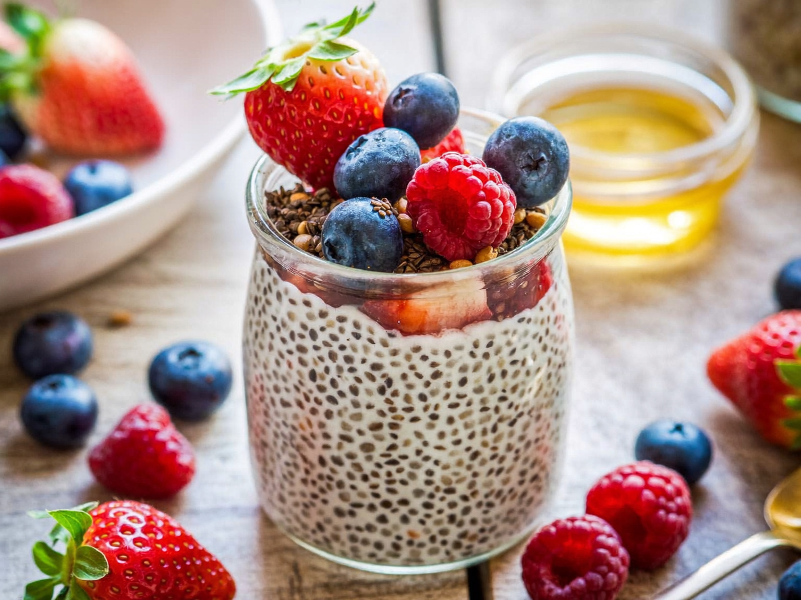
🍽 1 porción⏱ 5 min + reposo📊 Fácil320 kcal
Ingredientes
- ½ taza de avena en hojuelas (40 g)
- ¾ taza de leche descremada o de almendras (180 ml)
- 1 cda de semillas de chía (12 g)
- ½ taza de frutos rojos mixtos (75 g)
- 1 cdita de miel o sirope sin azúcar (opcional)
- Una pizca de canela
Por porción:
Calorías: 320 kcal · Proteína: 14 g
Carbohidratos: 48 g · Grasas: 9 g · Fibra: 11 g
Preparación
- En un frasco de vidrio, mezcla la avena, la leche, la chía y la canela.
- Remueve bien para que la chía no se apelmace.
- Tapa y refrigera mínimo 6 horas (idealmente toda la noche).
- Por la mañana, remueve, añade los frutos rojos y la miel si la usas.
www.365recetas.com
Consejos útiles
- Prepara 3 frascos a la vez y ten desayunos listos toda la semana.
- Los frutos rojos congelados también sirven y salen más económicos.
Tostada de Aguacate con Huevo Poché
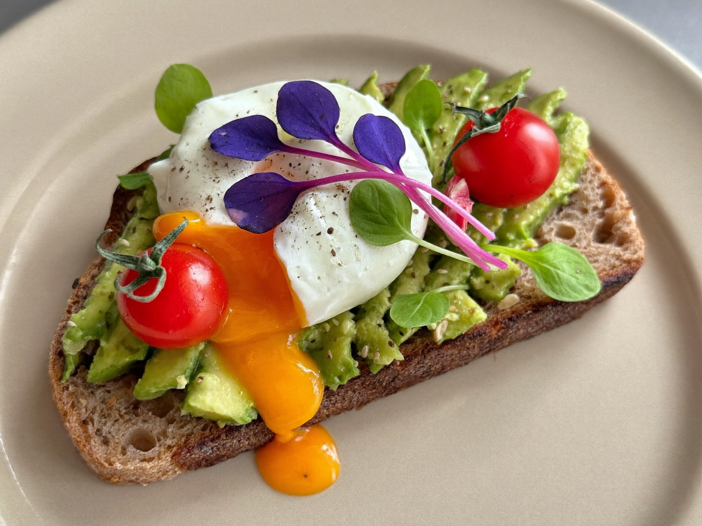
🍽 1 porción⏱ 10 min📊 Fácil340 kcal
Ingredientes
- 2 rebanadas de pan integral
- ½ aguacate maduro
- 1 huevo
- 4 tomates cherry
- Un puñado de rúcula o microgreens
- Sal, pimienta y unas gotas de limón
Por porción:
Calorías: 340 kcal · Proteína: 15 g
Carbohidratos: 30 g · Grasas: 18 g · Fibra: 8 g
Preparación
- Tuesta el pan integral.
- Hierve agua con un chorrito de vinagre y escalfa el huevo 3 min.
- Machaca el aguacate con limón, sal y pimienta, y úntalo en el pan.
- Coloca el huevo poché encima; añade los tomates y la rúcula.
www.365recetas.com
Consejos útiles
- Para un huevo poché perfecto, usa el huevo lo más fresco posible.
- Agrega hojuelas de chile para un toque picante.
Panqueques de Avena y Plátano
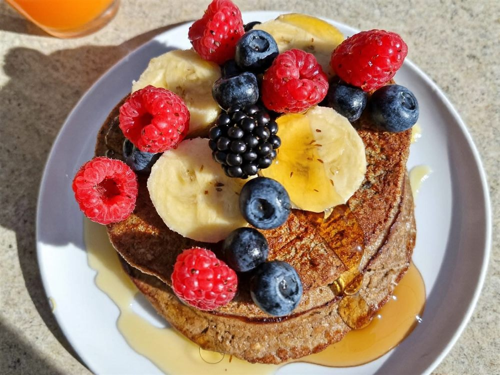
🍽 1 porción⏱ 15 min📊 Fácil380 kcal
Ingredientes
- 1 plátano maduro
- 2 huevos
- ½ taza de avena en hojuelas (40 g)
- 1 cdita de polvo de hornear
- Canela al gusto
- Frutos rojos y un poco de miel para servir
Por porción:
Calorías: 380 kcal · Proteína: 18 g
Carbohidratos: 48 g · Grasas: 12 g · Fibra: 7 g
Preparación
- Licúa el plátano, los huevos, la avena, el polvo de hornear y la canela.
- Calienta una sartén antiadherente a fuego medio.
- Vierte porciones pequeñas y cocina 2 min por lado.
- Sirve con frutos rojos y un hilo de miel.
www.365recetas.com
Consejos útiles
- Si la mezcla queda muy líquida, agrega un poco más de avena.
- El plátano bien maduro endulza solo: evita el azúcar añadido.
Huevos Revueltos con Espinaca y Champiñones
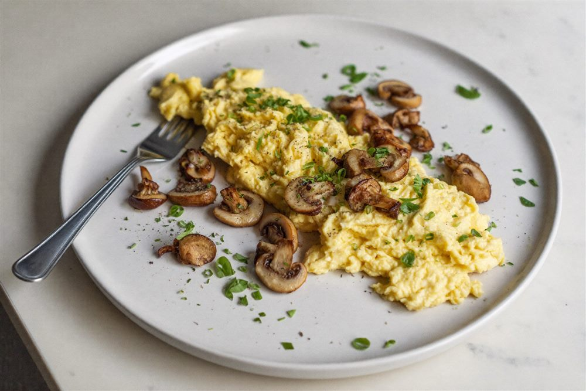
🍽 1 porción⏱ 12 min📊 Fácil290 kcal
Ingredientes
- 2 huevos
- 1 taza de espinaca fresca
- ½ taza de champiñones laminados
- 1 cdita de aceite de oliva
- Sal y pimienta
- Pizca de parmesano (opcional)
Por porción:
Calorías: 290 kcal · Proteína: 19 g
Carbohidratos: 6 g · Grasas: 21 g · Fibra: 2 g
Preparación
- Saltea los champiñones en el aceite 3 min.
- Agrega la espinaca hasta que se reduzca.
- Vierte los huevos batidos y revuelve a fuego medio.
- Salpimienta y sirve caliente.
www.365recetas.com
Consejos útiles
- No cocines de más los huevos para que queden cremosos; retíralos un poco antes.
- Añade chile o cebollín para más sabor sin sumar calorías.
Smoothie Bowl de Plátano y Maní
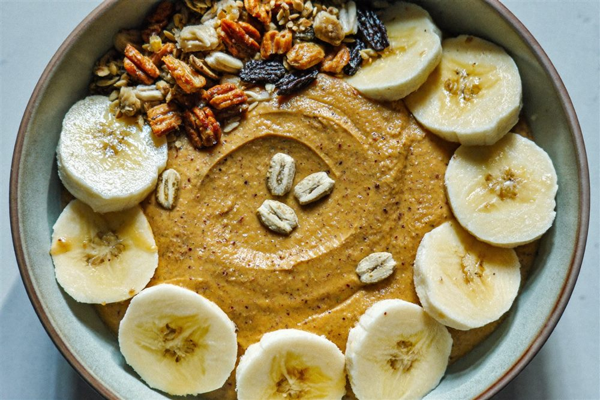
🍽 1 porción⏱ 8 min📊 Fácil340 kcal
Ingredientes
- 1 plátano congelado
- ½ taza de leche de almendras
- 1 cda de mantequilla de maní
- 2 cdas de avena
- Topping: plátano, granola y chía
Por porción:
Calorías: 340 kcal · Proteína: 10 g
Carbohidratos: 48 g · Grasas: 13 g · Fibra: 6 g
Preparación
- Licúa plátano, leche, maní y avena hasta espesar.
- Vierte la mezcla en un bowl.
- Decora con plátano, granola y chía.
- Sirve de inmediato.
www.365recetas.com
Consejos útiles
- Usa plátano congelado para lograr una textura tipo helado.
- Si queda muy espeso, añade un chorrito de leche.
Tortilla de Claras con Vegetales
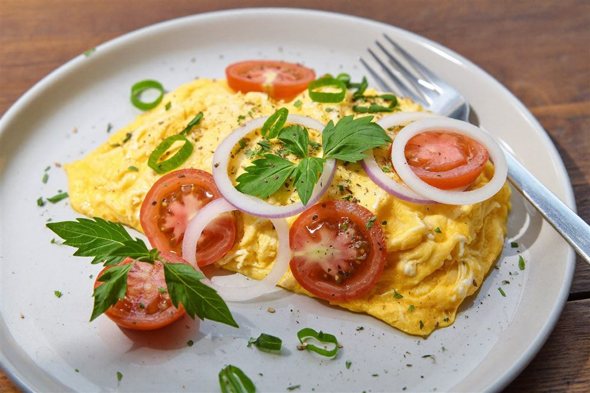
🍽 1 porción⏱ 12 min📊 Fácil200 kcal
Ingredientes
- 4 claras de huevo
- ½ taza de espinaca
- ¼ taza de tomate
- ¼ de cebolla
- 1 cdita de aceite de oliva
- Sal y pimienta
Por porción:
Calorías: 200 kcal · Proteína: 18 g
Carbohidratos: 9 g · Grasas: 10 g · Fibra: 3 g
Preparación
- Sofríe la cebolla y el tomate.
- Agrega la espinaca.
- Vierte las claras batidas.
- Dobla en tortilla y sirve.
www.365recetas.com
Consejos útiles
- Solo claras = menos grasa y más proteína.
- Agrega champiñones o pimiento para variar.
Pudín de Chía con Mango
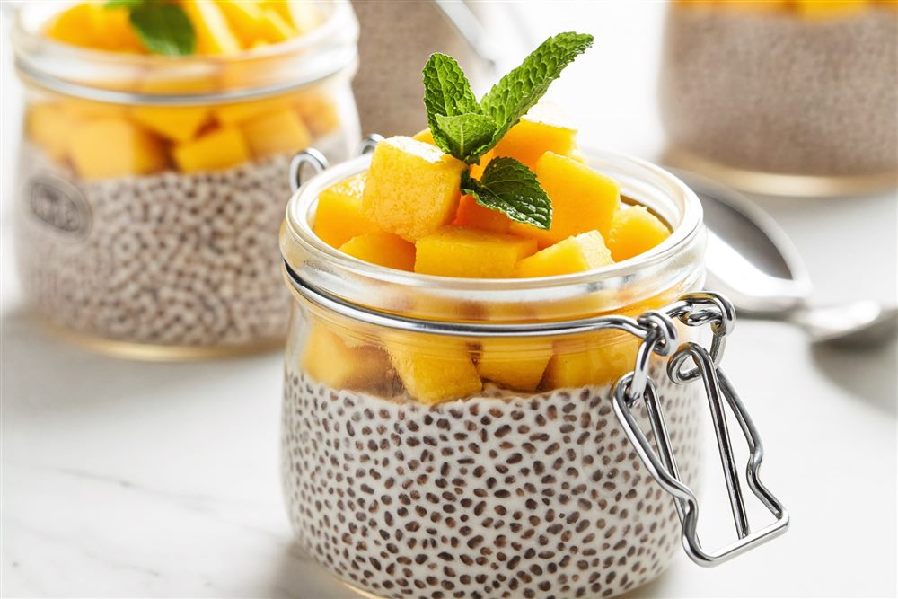
🍽 1 porción⏱ 5 min + frío📊 Fácil280 kcal
Ingredientes
- 3 cdas de semillas de chía
- 1 taza de leche de almendras
- ½ mango
- 1 cdita de miel
- Vainilla
Por porción:
Calorías: 280 kcal · Proteína: 8 g
Carbohidratos: 36 g · Grasas: 12 g · Fibra: 11 g
Preparación
- Mezcla chía, leche, miel y vainilla.
- Refrigera 4 h o toda la noche.
- Corta el mango.
- Sirve la chía con el mango encima.
www.365recetas.com
Consejos útiles
- Déjalo de un día para otro y tienes el desayuno listo.
- La chía es rica en omega-3 y fibra.
Tostada Francesa Integral
🍽 1 porción⏱ 12 min📊 Fácil330 kcal
Ingredientes
- 2 rebanadas de pan integral
- 1 huevo
- ¼ taza de leche
- Canela y vainilla
- Frutos rojos
Por porción:
Calorías: 330 kcal · Proteína: 14 g
Carbohidratos: 42 g · Grasas: 11 g · Fibra: 6 g
Preparación
- Bate huevo, leche, canela y vainilla.
- Remoja el pan en la mezcla.
- Dora en sartén antiadherente.
- Sirve con frutos rojos.
www.365recetas.com
Consejos útiles
- Usa pan integral para más fibra.
- Endulza con fruta en vez de sirope.
Avena Cocida con Manzana y Canela
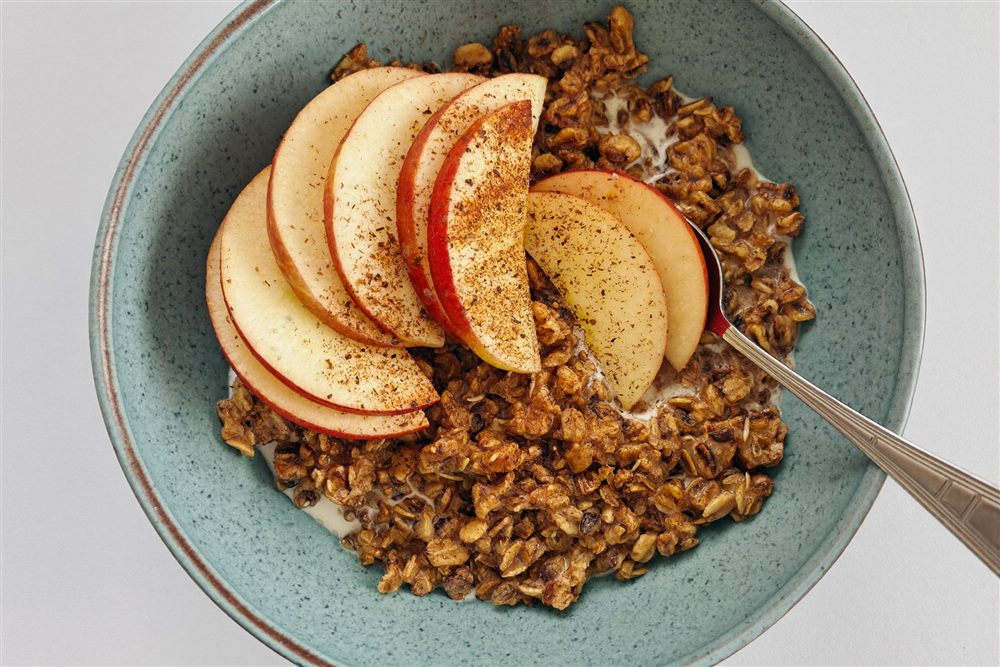
🍽 1 porción⏱ 15 min📊 Fácil320 kcal
Ingredientes
- 1/2 taza de avena en hojuelas
- 1 taza de leche descremada
- 1 manzana verde rallada
- 1 cucharadita de canela en polvo
- 1 cucharadita de miel
- 1 pizca de sal
Por porción:
Calorías: 320 kcal · Proteína: 12 g
Carbohidratos: 56 g · Grasas: 5 g · Fibra: 7 g
Preparación
- Calienta la leche con la pizca de sal en una olla pequeña a fuego medio.
- Agrega la avena y cocina revolviendo durante 5 minutos hasta espesar.
- Incorpora la manzana rallada y la canela, y cocina 2 minutos más.
- Sirve caliente y endulza con la miel por encima.
www.365recetas.com
Consejos útiles
- Usa manzana roja si la prefieres más dulce.
- Deja reposar 2 minutos para una textura más cremosa.
Granola Casera Crujiente de Avena y Maní
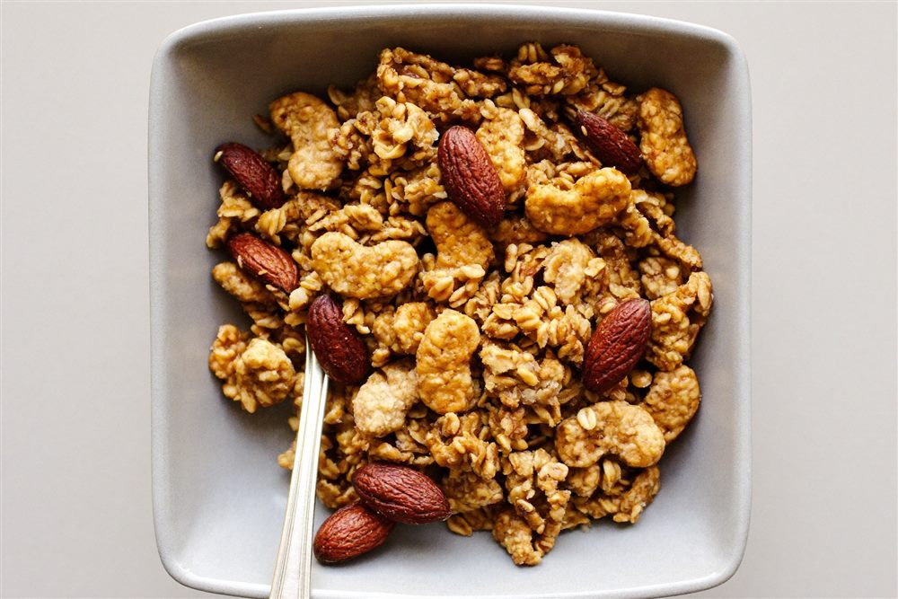
🍽 2 porciones⏱ 30 min📊 Media280 kcal
Ingredientes
- 1 taza de avena en hojuelas
- 1/4 taza de maní picado
- 2 cucharadas de semillas de ajonjolí
- 2 cucharadas de miel de abeja
- 1 cucharada de aceite vegetal
- 1 cucharadita de extracto de vainilla
Por porción:
Calorías: 280 kcal · Proteína: 8 g
Carbohidratos: 34 g · Grasas: 13 g · Fibra: 5 g
Preparación
- Precalienta el horno a 160 grados y forra una bandeja con papel.
- Mezcla la avena, el maní y el ajonjolí en un bol grande.
- Agrega la miel, el aceite vegetal y la vainilla, y revuelve bien.
- Hornea 20 minutos removiendo a la mitad hasta dorar y deja enfriar.
www.365recetas.com
Consejos útiles
- No remuevas al sacarla para que se formen grumos crujientes.
- Guarda en frasco hermético hasta por dos semanas.
Muesli Bircher con Yogur
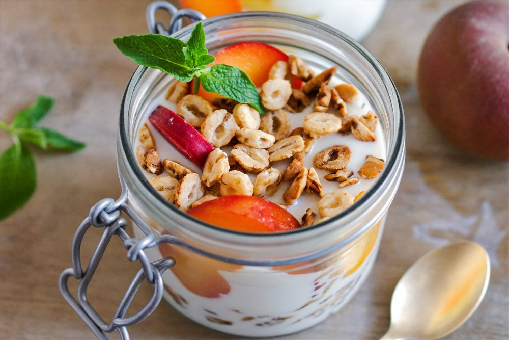
🍽 1 porción⏱ 10 min📊 Fácil295 kcal
Ingredientes
- 1/2 taza de avena en hojuelas
- 3/4 taza de yogur natural descremado
- 1 manzana rallada con cáscara
- 1 cucharada de pasas
- 1 cucharada de maní picado
- 1 cucharadita de jugo de limón
Por porción:
Calorías: 295 kcal · Proteína: 14 g
Carbohidratos: 42 g · Grasas: 7 g · Fibra: 6 g
Preparación
- Mezcla la avena con el yogur en un recipiente con tapa.
- Agrega la manzana rallada y el jugo de limón, y revuelve.
- Incorpora las pasas y el maní picado.
- Refrigera al menos 4 horas o toda la noche y sirve frío.
www.365recetas.com
Consejos útiles
- El limón evita que la manzana se oxide.
- Agrega un chorrito de leche si queda muy espeso al servir.
Tazón de Avena con Mantequilla de Maní y Banano
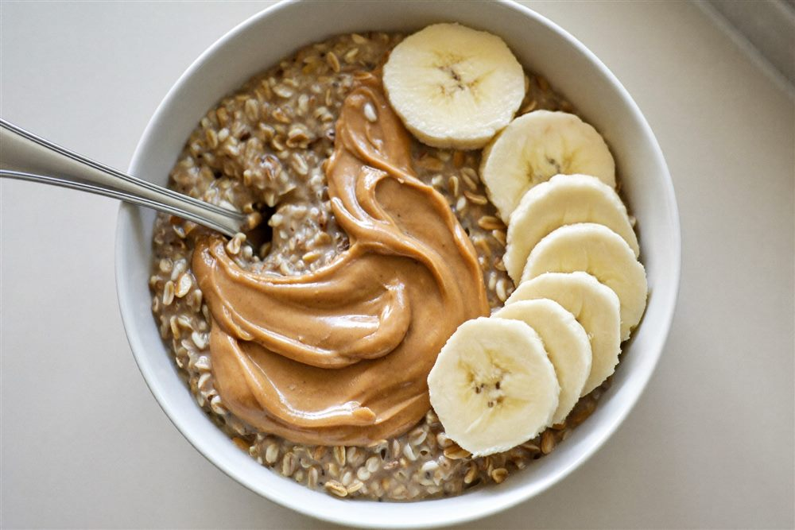
🍽 1 porción⏱ 12 min📊 Fácil380 kcal
Ingredientes
- 1/2 taza de avena en hojuelas
- 1 taza de leche descremada
- 1 banano en rodajas
- 1 cucharada de mantequilla de maní
- 1 cucharadita de semillas de chía
- 1 pizca de canela
Por porción:
Calorías: 380 kcal · Proteína: 13 g
Carbohidratos: 52 g · Grasas: 14 g · Fibra: 9 g
Preparación
- Cocina la avena con la leche a fuego medio 5 minutos.
- Agrega las semillas de chía y la canela, y revuelve.
- Sirve en un tazón y coloca el banano en rodajas encima.
- Termina con la mantequilla de maní derretida por encima.
www.365recetas.com
Consejos útiles
- Calienta la mantequilla de maní 10 segundos para que fluya mejor.
- Usa banano bien maduro para más dulzor natural.
Galletas de Avena y Banano sin Azúcar
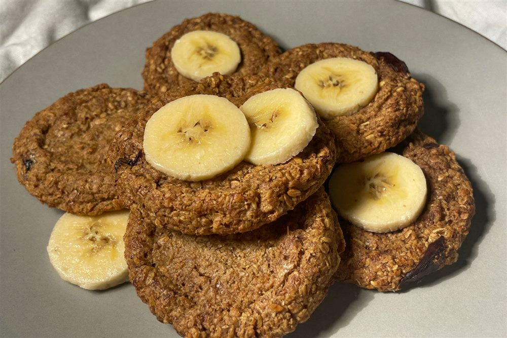
🍽 2 porciones⏱ 25 min📊 Media150 kcal
Ingredientes
- 1 taza de avena en hojuelas
- 2 bananos maduros pisados
- 1/4 taza de pasas picadas
- 2 cucharadas de coco rallado
- 1 cucharadita de canela
- 1 pizca de sal
Por porción:
Calorías: 150 kcal · Proteína: 4 g
Carbohidratos: 30 g · Grasas: 3 g · Fibra: 5 g
Preparación
- Precalienta el horno a 180 grados y forra una bandeja.
- Pisa los bananos y mézclalos con la avena y las pasas picadas.
- Agrega el coco, la canela y la sal, y forma bolitas aplanadas.
- Hornea 15 minutos hasta dorar los bordes y deja enfriar.
www.365recetas.com
Consejos útiles
- Remoja las pasas 10 minutos si están muy secas.
- Se conservan 4 días en recipiente cerrado.
Porridge de Quinua con Frutos Rojos
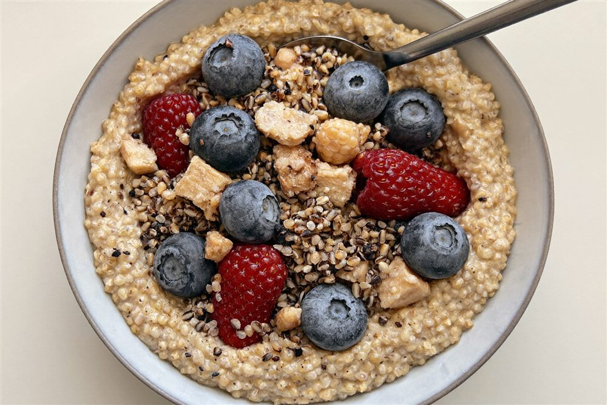
🍽 1 porción⏱ 20 min📊 Media310 kcal
Ingredientes
- 1/3 taza de quinua lavada
- 1 taza de leche descremada
- 1/2 taza de fresas en trozos
- 1 cucharada de maní picado
- 1 cucharadita de miel
- 1/2 cucharadita de vainilla
Por porción:
Calorías: 310 kcal · Proteína: 12 g
Carbohidratos: 48 g · Grasas: 7 g · Fibra: 6 g
Preparación
- Cocina la quinua con la leche y la vainilla a fuego bajo 15 minutos.
- Revuelve de vez en cuando hasta que esté cremosa y tierna.
- Sirve en un bol y agrega las fresas encima.
- Termina con el maní picado y la miel.
www.365recetas.com
Consejos útiles
- Lava bien la quinua para quitar el amargor.
- Puedes usar fruta congelada sin descongelar.
Barritas Energéticas de Avena y Cacao
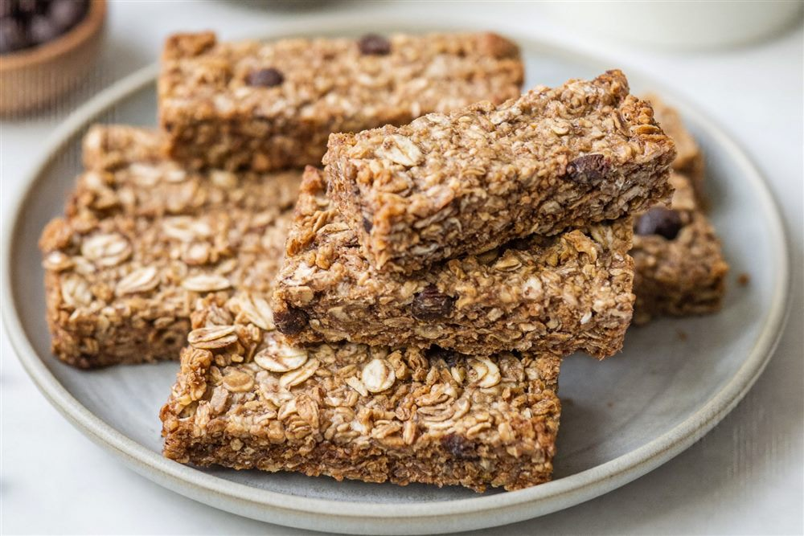
🍽 2 porciones⏱ 20 min📊 Media200 kcal
Ingredientes
- 1 taza de avena en hojuelas
- 3 cucharadas de mantequilla de maní
- 2 cucharadas de miel
- 1 cucharada de cacao en polvo
- 2 cucharadas de chips de chocolate amargo
- 1 pizca de sal
Por porción:
Calorías: 200 kcal · Proteína: 7 g
Carbohidratos: 28 g · Grasas: 9 g · Fibra: 4 g
Preparación
- Mezcla la avena con el cacao y la sal en un bol grande.
- Calienta la miel con la mantequilla de maní y vierte sobre la avena.
- Agrega los chips de chocolate y mezcla hasta integrar todo.
- Presiona en un molde forrado, refrigera 1 hora y corta en barras.
www.365recetas.com
Consejos útiles
- Presiona firme para que las barras no se desarmen.
- Envuelve cada barra para llevarlas de snack.
Avena Horneada con Fresa y Maní
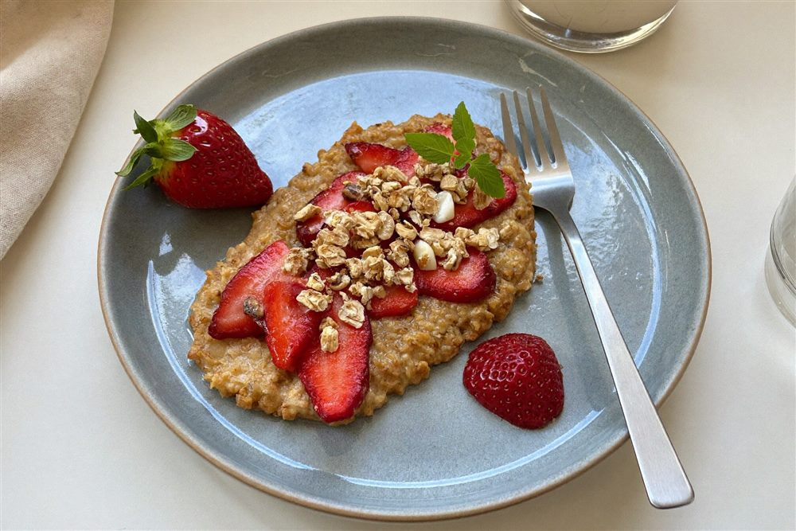
🍽 2 porciones⏱ 35 min📊 Media340 kcal
Ingredientes
- 1 taza de avena en hojuelas
- 1 taza de leche descremada
- 1 huevo
- 1/2 taza de fresas en trozos
- 2 cucharadas de maní picado
- 1 cucharadita de polvo de hornear
Por porción:
Calorías: 340 kcal · Proteína: 13 g
Carbohidratos: 44 g · Grasas: 11 g · Fibra: 6 g
Preparación
- Precalienta el horno a 180 grados y engrasa un molde pequeño.
- Bate el huevo con la leche y mézclalo con la avena y el polvo de hornear.
- Agrega las fresas y la mitad del maní, y vierte en el molde.
- Esparce el resto del maní encima y hornea 25 minutos.
www.365recetas.com
Consejos útiles
- Comprueba el centro con un palillo antes de sacar.
- Sirve tibia con un poco de yogur natural.
Crema de Avena con Mango y Coco
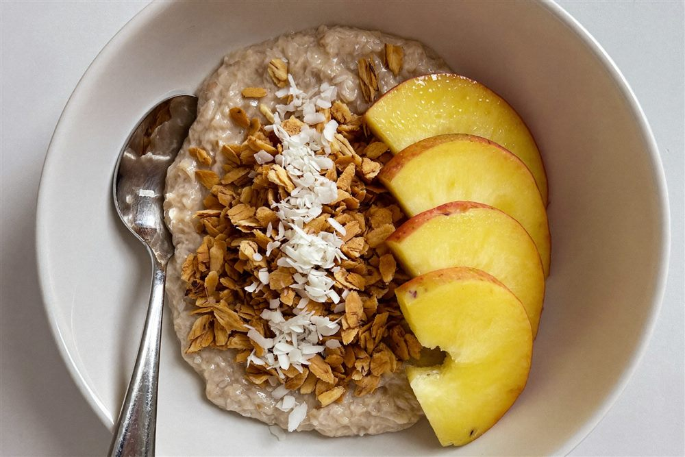
🍽 1 porción⏱ 15 min📊 Fácil300 kcal
Ingredientes
- 1/2 taza de avena en hojuelas
- 1 taza de leche descremada
- 1/2 mango en cubos
- 1 cucharada de coco rallado
- 1 cucharadita de miel
- 1 pizca de canela
Por porción:
Calorías: 300 kcal · Proteína: 8 g
Carbohidratos: 50 g · Grasas: 9 g · Fibra: 6 g
Preparación
- Cocina la avena con la leche y la canela 6 minutos.
- Revuelve hasta lograr una textura cremosa y espesa.
- Sirve en un bol y coloca los cubos de mango encima.
- Espolvorea el coco rallado y agrega la miel.
www.365recetas.com
Consejos útiles
- Tuesta el coco rallado para más aroma.
- Usa mango maduro para reducir la miel.
Muesli Tropical con Piña y Semillas
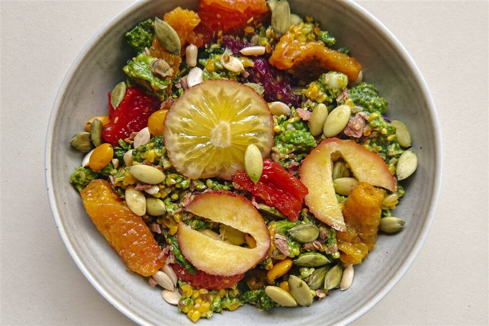
🍽 1 porción⏱ 10 min📊 Fácil290 kcal
Ingredientes
- 1/2 taza de avena en hojuelas
- 3/4 taza de yogur natural descremado
- 1/2 taza de piña en cubos
- 1 cucharada de semillas de chía
- 1 cucharada de pasas
- 1 cucharadita de miel
Por porción:
Calorías: 290 kcal · Proteína: 16 g
Carbohidratos: 40 g · Grasas: 6 g · Fibra: 5 g
Preparación
- Mezcla la avena con el yogur en un bol.
- Agrega la piña en cubos y las pasas, y revuelve.
- Incorpora las semillas de chía.
- Endulza con la miel y sirve de inmediato o refrigerado.
www.365recetas.com
Consejos útiles
- La piña aporta enzimas que ayudan a la digestión.
- Refrigera 1 hora para que la avena se ablande.
Pudín de Avena y Chía con Cacao
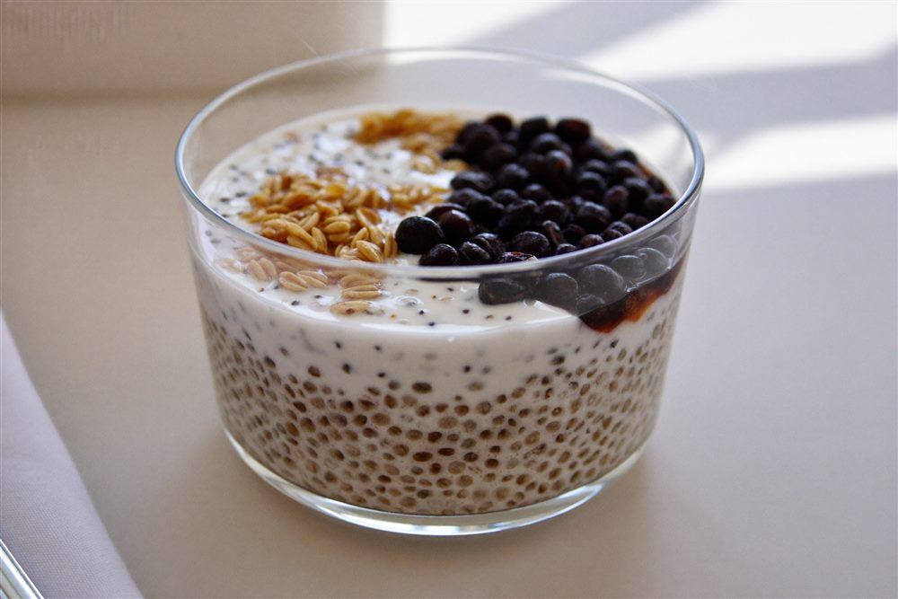
🍽 1 porción⏱ 10 min📊 Fácil270 kcal
Ingredientes
- 1/3 taza de avena en hojuelas
- 1 cucharada de semillas de chía
- 1 taza de leche descremada
- 1 cucharada de cacao en polvo
- 1 cucharadita de miel
- 1/2 cucharadita de vainilla
Por porción:
Calorías: 270 kcal · Proteína: 9 g
Carbohidratos: 36 g · Grasas: 9 g · Fibra: 11 g
Preparación
- Mezcla la avena, la chía y el cacao en un frasco.
- Agrega la leche, la miel y la vainilla.
- Revuelve muy bien para evitar grumos de cacao.
- Tapa y refrigera toda la noche antes de servir.
www.365recetas.com
Consejos útiles
- Agita el frasco a los 10 minutos para distribuir la chía.
- Decora con frutas o un poco de cacao al servir.
Avena Salada con Huevo y Espinaca
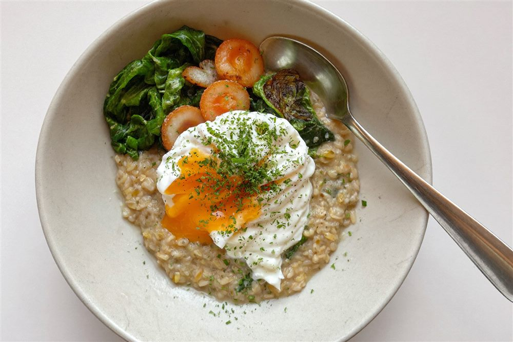
🍽 1 porción⏱ 15 min📊 Media330 kcal
Ingredientes
- 1/2 taza de avena en hojuelas
- 1 taza de caldo de verduras
- 1 huevo
- 1 taza de espinaca fresca
- 2 cucharadas de queso parmesano rallado
- 1 pizca de pimienta negra
Por porción:
Calorías: 330 kcal · Proteína: 18 g
Carbohidratos: 32 g · Grasas: 13 g · Fibra: 5 g
Preparación
- Cocina la avena con el caldo de verduras a fuego medio 5 minutos.
- Agrega la espinaca y revuelve hasta que se marchite.
- Incorpora el queso parmesano y la pimienta.
- Sirve con un huevo pochado o frito encima.
www.365recetas.com
Consejos útiles
- El caldo da un sabor sabroso ideal para desayuno salado.
- Añade chile en hojuelas si te gusta el picante.
Cereal Integral Casero con Hojuelas de Trigo
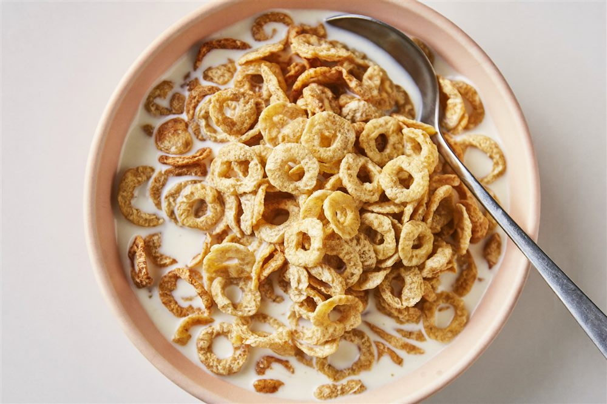
🍽 2 porciones⏱ 30 min📊 Media260 kcal
Ingredientes
- 1 taza de hojuelas de trigo integral
- 1/2 taza de avena en hojuelas
- 2 cucharadas de linaza molida
- 2 cucharadas de miel
- 1 cucharada de aceite vegetal
- 1 cucharadita de canela
Por porción:
Calorías: 260 kcal · Proteína: 7 g
Carbohidratos: 40 g · Grasas: 8 g · Fibra: 7 g
Preparación
- Precalienta el horno a 160 grados y forra una bandeja.
- Mezcla las hojuelas de trigo, la avena y la linaza en un bol.
- Agrega la miel, el aceite vegetal y la canela, y revuelve.
- Extiende en la bandeja y hornea 18 minutos removiendo a la mitad.
www.365recetas.com
Consejos útiles
- Sirve con leche fría o yogur y fruta picada.
- Deja enfriar por completo para que quede crujiente.
Risotto Dulce de Avena con Pera
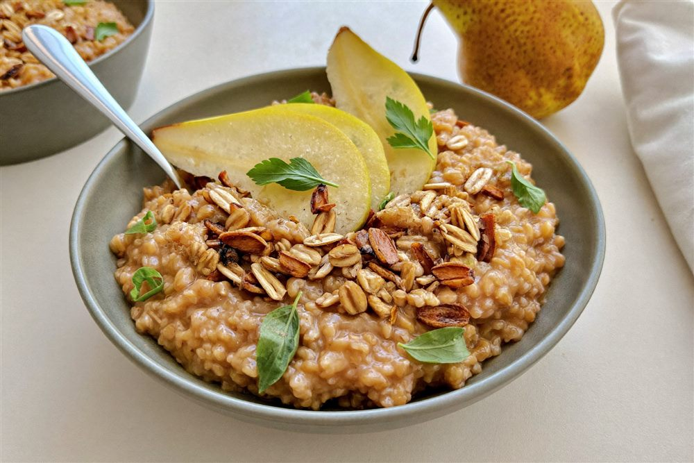
🍽 1 porción⏱ 20 min📊 Media315 kcal
Ingredientes
- 1/2 taza de avena en hojuelas gruesas
- 1 taza de leche descremada
- 1 pera en cubos
- 1 pizca de nuez moscada rallada
- 1 cucharadita de miel
- 1 cucharada de maní picado
Por porción:
Calorías: 315 kcal · Proteína: 11 g
Carbohidratos: 52 g · Grasas: 7 g · Fibra: 7 g
Preparación
- Calienta la leche y agrega la avena poco a poco como un risotto.
- Cocina revolviendo constantemente unos 10 minutos hasta cremosa.
- Incorpora la pera en cubos y la nuez moscada, y cocina 3 minutos.
- Sirve con miel y maní picado por encima.
www.365recetas.com
Consejos útiles
- Añade la leche tibia para una cocción más pareja.
- Usa pera firme para que no se deshaga del todo.
Smoothie Bowl de Avena y Cacao
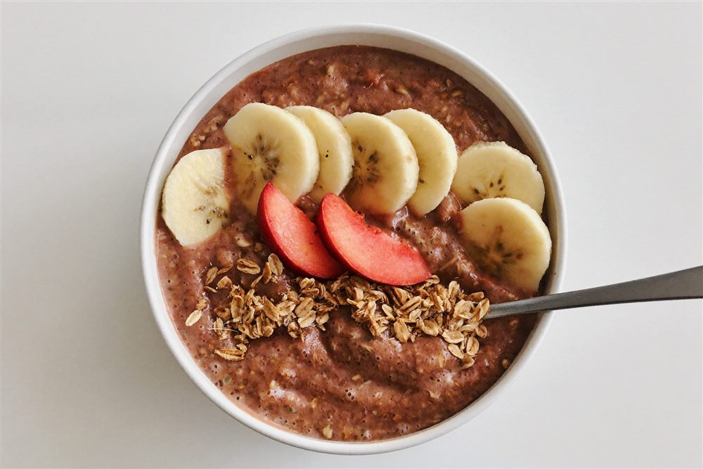
🍽 1 porción⏱ 10 min📊 Fácil305 kcal
Ingredientes
- 1/4 taza de avena en hojuelas
- 1 banano congelado
- 1 taza de leche descremada
- 1 cucharadita de cacao en polvo
- 1 cucharada de granola
- 1 cucharada de semillas de chía
Por porción:
Calorías: 305 kcal · Proteína: 10 g
Carbohidratos: 48 g · Grasas: 8 g · Fibra: 9 g
Preparación
- Licua la avena, el banano congelado y la leche.
- Agrega el cacao y licua hasta lograr una crema espesa.
- Vierte en un bol amplio y empareja la superficie.
- Decora con la granola y las semillas de chía por encima.
www.365recetas.com
Consejos útiles
- Congela el banano la noche anterior para textura helada.
- Agrega más cacao si lo quieres con sabor más intenso.
Avena Overnight con Café y Cacao
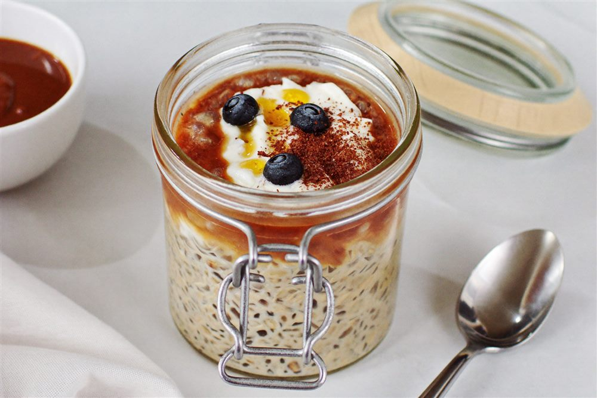
🍽 1 porción⏱ 10 min📊 Fácil285 kcal
Ingredientes
- 1/2 taza de avena en hojuelas
- 3/4 taza de leche descremada
- 1/4 taza de café frío
- 1 cucharada de cacao en polvo
- 1 cucharadita de miel
- 1 cucharada de semillas de chía
Por porción:
Calorías: 285 kcal · Proteína: 11 g
Carbohidratos: 40 g · Grasas: 6 g · Fibra: 8 g
Preparación
- Mezcla la avena con el cacao y las semillas de chía en un frasco.
- Agrega la leche, el café frío y la miel, y revuelve bien.
- Tapa el frasco y refrigera toda la noche.
- Revuelve por la mañana y sirve frío o a temperatura ambiente.
www.365recetas.com
Consejos útiles
- Usa café descafeinado si lo tomas muy temprano.
- Añade un toque de canela para realzar el cacao.
Muffins de Avena y Zanahoria
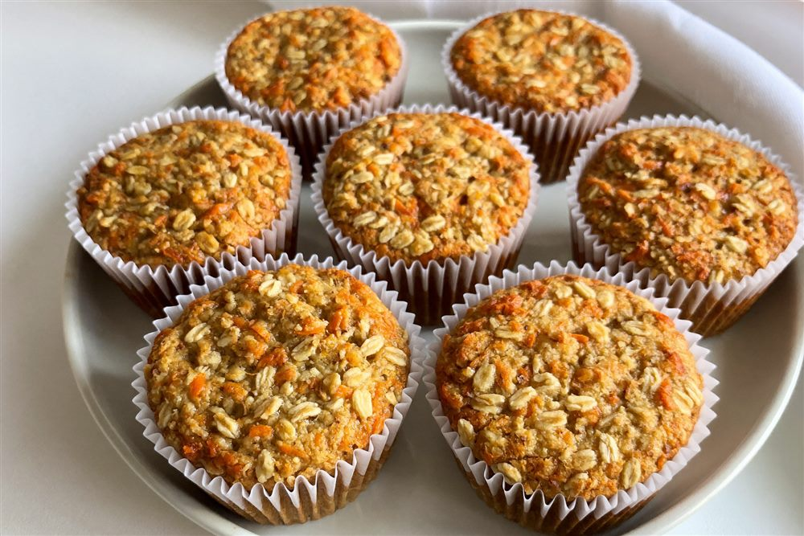
🍽 2 porciones⏱ 35 min📊 Media175 kcal
Ingredientes
- 1 taza de avena en hojuelas
- 1 zanahoria rallada
- 1 huevo
- 1/2 taza de yogur natural
- 1 cucharadita de polvo de hornear
- 1 cucharadita de canela
Por porción:
Calorías: 175 kcal · Proteína: 7 g
Carbohidratos: 26 g · Grasas: 4 g · Fibra: 4 g
Preparación
- Precalienta el horno a 180 grados y prepara moldes para muffin.
- Bate el huevo con el yogur e incorpora la avena y el polvo de hornear.
- Agrega la zanahoria rallada y la canela, y mezcla bien.
- Reparte en los moldes y hornea 22 minutos hasta dorar.
www.365recetas.com
Consejos útiles
- Deja reposar la masa 5 minutos para que la avena absorba.
- Añade pasas o maní para más textura.
Granola de Avena y Mantequilla de Maní en Sartén
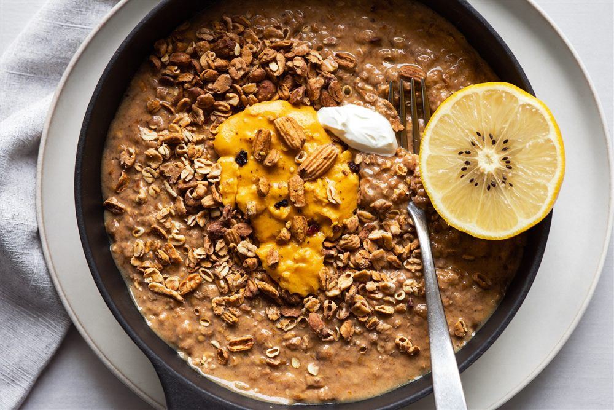
🍽 2 porciones⏱ 15 min📊 Fácil295 kcal
Ingredientes
- 1 taza de avena en hojuelas
- 2 cucharadas de mantequilla de maní
- 2 cucharadas de miel
- 2 cucharadas de maní picado
- 1 cucharada de semillas de linaza
- 1 pizca de sal
Por porción:
Calorías: 295 kcal · Proteína: 9 g
Carbohidratos: 32 g · Grasas: 13 g · Fibra: 5 g
Preparación
- Calienta la mantequilla de maní con la miel en una sartén a fuego bajo.
- Agrega la avena, el maní y la linaza, y revuelve para cubrir todo.
- Tuesta removiendo constantemente unos 6 minutos hasta dorar.
- Agrega la sal, retira del fuego y deja enfriar para que endurezca.
www.365recetas.com
Consejos útiles
- Remueve sin parar para que no se queme la miel.
- Sirve sobre yogur o como snack crujiente.
Huevos al Horno en Aguacate Gratinado
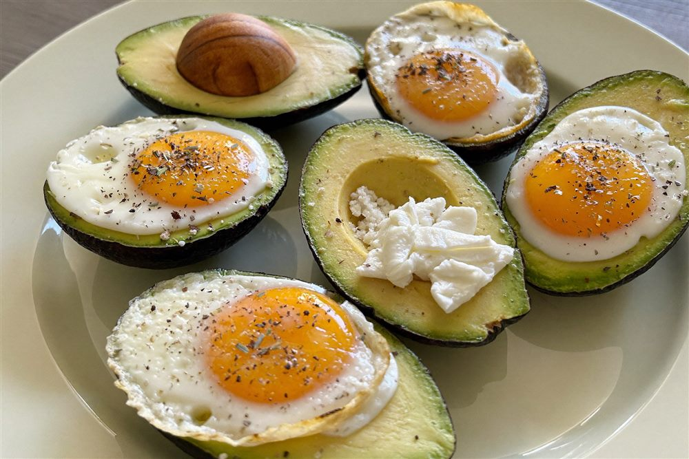
🍽 2 porciones⏱ 20 min📊 Fácil320 kcal
Ingredientes
- 2 aguacates maduros partidos a la mitad y sin hueso
- 4 huevos pequeños
- 30 g de queso mozzarella rallado
- 1 cucharada de cebollín picado
- 1/4 cucharadita de pimienta negra
- 1/4 cucharadita de sal
- 1 pizca de paprika
Por porción:
Calorías: 320 kcal · Proteína: 16 g
Carbohidratos: 12 g · Grasas: 25 g · Fibra: 9 g
Preparación
- Precalienta el horno a 200 grados y retira un poco de pulpa del centro de cada aguacate para ampliar el hueco.
- Coloca los aguacates en una bandeja y casca un huevo dentro de cada mitad.
- Espolvorea sal, pimienta, paprika y el queso mozzarella por encima.
- Hornea de 12 a 15 minutos hasta que la clara cuaje, decora con cebollín y sirve.
www.365recetas.com
Consejos útiles
- Apoya los aguacates sobre bolitas de papel aluminio para que no se volteen.
- Usa huevos pequeños para que quepan sin desbordar el hueco.
Omelette de Tres Quesos con Hierbas Frescas
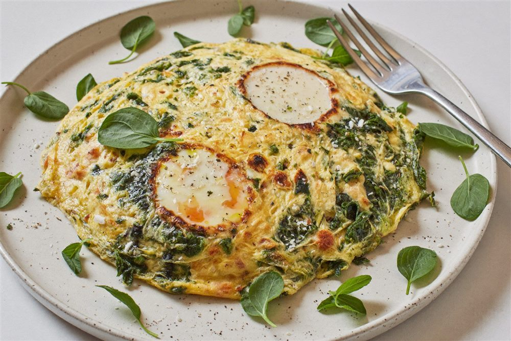
🍽 1 porción⏱ 12 min📊 Media340 kcal
Ingredientes
- 3 huevos
- 20 g de queso cheddar rallado
- 20 g de queso fresco desmenuzado
- 15 g de queso parmesano rallado
- 1 cucharada de albahaca y perejil picados
- 1 cucharadita de aceite de oliva
- 1 pizca de sal y pimienta
Por porción:
Calorías: 340 kcal · Proteína: 26 g
Carbohidratos: 3 g · Grasas: 26 g · Fibra: 0 g
Preparación
- Bate los huevos con la sal, la pimienta y la mitad de las hierbas hasta integrar.
- Calienta el aceite en una sartén antiadherente a fuego medio y vierte el huevo.
- Cuando el borde cuaje, reparte los tres quesos sobre una mitad del omelette.
- Dobla la tortilla, deja fundir el queso 1 minuto, decora con el resto de hierbas y sirve.
www.365recetas.com
Consejos útiles
- Retira del fuego cuando el centro aún se vea brillante para que quede jugoso.
- Mezcla quesos de distinta intensidad para un sabor más profundo.
Burrito de Desayuno con Huevo y Frijoles Negros
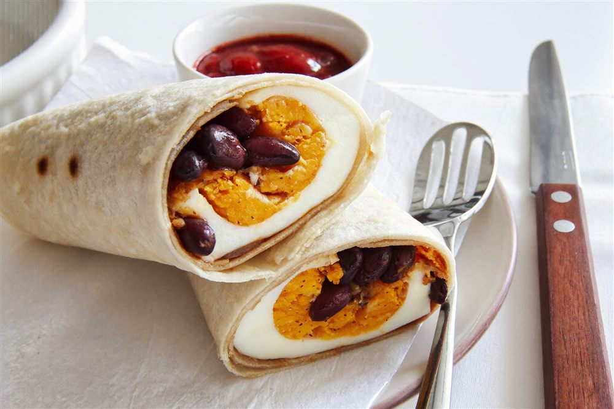
🍽 1 porción⏱ 15 min📊 Fácil410 kcal
Ingredientes
- 1 tortilla integral grande
- 2 huevos
- 1/2 taza de frijoles negros cocidos y escurridos
- 1/4 de aguacate en rebanadas
- 2 cucharadas de salsa pico de gallo
- 1 cucharadita de aceite de oliva
- 1 pizca de comino y sal
Por porción:
Calorías: 410 kcal · Proteína: 22 g
Carbohidratos: 42 g · Grasas: 17 g · Fibra: 12 g
Preparación
- Calienta el aceite y revuelve los huevos con el comino y la sal hasta cuajar suaves.
- Entibia los frijoles negros y la tortilla integral por unos segundos.
- Rellena la tortilla con el huevo, los frijoles, el aguacate y el pico de gallo.
- Enrolla el burrito firmemente, dobla los extremos y corta a la mitad para servir.
www.365recetas.com
Consejos útiles
- Calienta la tortilla para que no se rompa al enrollar.
- Escurre bien los frijoles para evitar que el burrito quede húmedo.
Frittata de Brócoli y Tomate Cherry al Horno
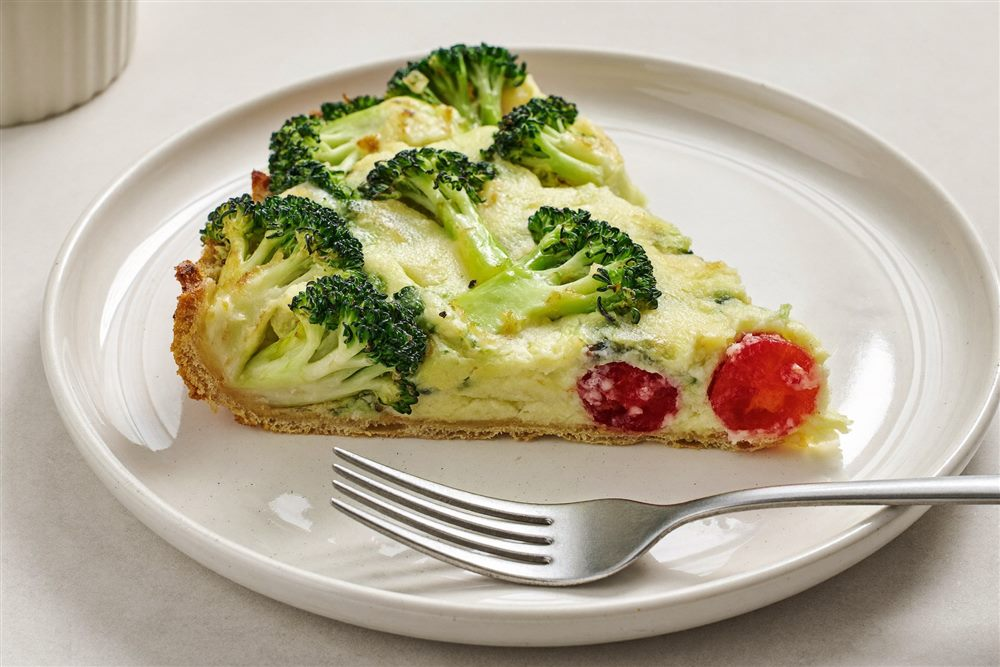
🍽 2 porciones⏱ 25 min📊 Media290 kcal
Ingredientes
- 5 huevos
- 1 taza de brócoli en floretes pequeños
- 8 tomates cherry partidos a la mitad
- 40 g de queso fresco desmenuzado
- 1 cucharada de aceite de oliva
- 1/2 cucharadita de sal
- 1/4 cucharadita de pimienta
Por porción:
Calorías: 290 kcal · Proteína: 20 g
Carbohidratos: 8 g · Grasas: 20 g · Fibra: 3 g
Preparación
- Precalienta el horno a 190 grados y blanquea el brócoli en agua hirviendo 2 minutos.
- Bate los huevos con la sal y la pimienta en un bol amplio.
- Engrasa un molde, acomoda el brócoli, los tomates y el queso fresco, y vierte el huevo encima.
- Hornea de 18 a 20 minutos hasta que cuaje y dore ligeramente, deja reposar y corta.
www.365recetas.com
Consejos útiles
- Blanquear el brócoli mantiene su color verde brillante.
- Deja reposar 5 minutos antes de cortar para que la frittata no se desarme.
Huevos Revueltos Cremosos con Atun
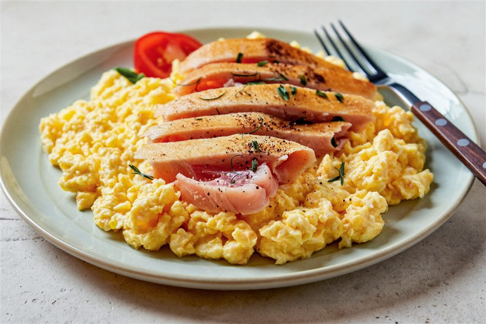
🍽 1 porción⏱ 10 min📊 Media330 kcal
Ingredientes
- 3 huevos
- 60 g de atún en agua escurrido y desmenuzado
- 1 cucharada de queso crema light
- 1 cucharada de cebollín fresco picado
- 1 cucharadita de mantequilla
- 1 pizca de sal y pimienta
Por porción:
Calorías: 330 kcal · Proteína: 28 g
Carbohidratos: 2 g · Grasas: 23 g · Fibra: 0 g
Preparación
- Bate los huevos con sal y pimienta y derrite la mantequilla a fuego bajo.
- Vierte el huevo y revuelve lentamente con espátula formando pliegues suaves.
- Cuando estén casi listos, incorpora el queso crema y el atún desmenuzado.
- Retira del fuego, agrega el cebollín y sirve de inmediato cremosos.
www.365recetas.com
Consejos útiles
- Cocina a fuego bajo y constante para lograr textura cremosa.
- Añade el atún al final para que no se reseque.
Omelette Enrollado con Salsa de Soya y Cebollin
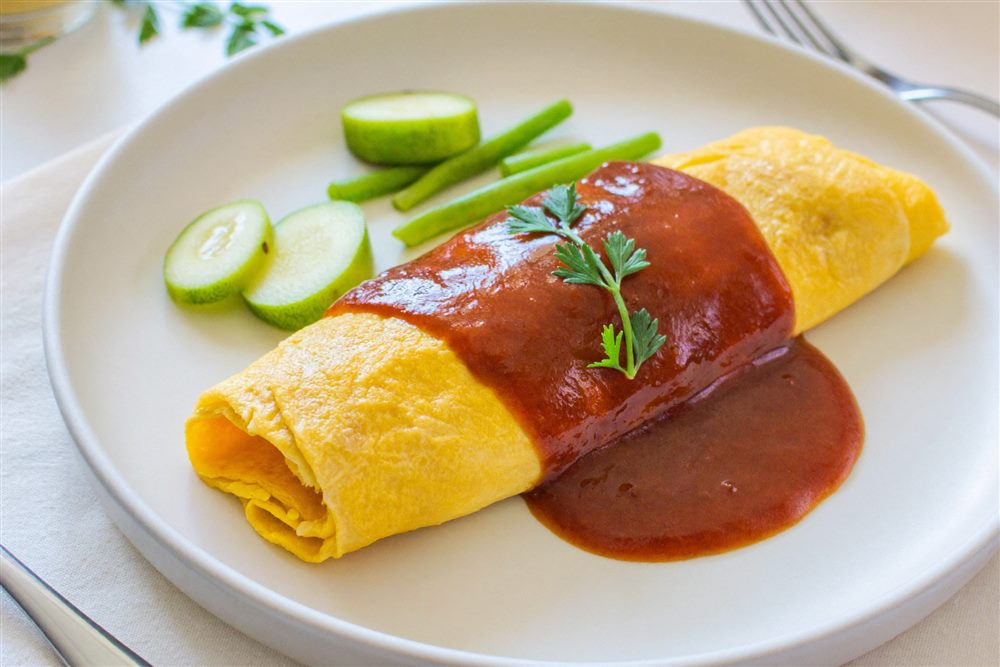
🍽 1 porción⏱ 15 min📊 Media220 kcal
Ingredientes
- 3 huevos
- 1 cucharadita de salsa de soya baja en sodio
- 1/2 cucharadita de miel
- 1 cucharadita de aceite vegetal
- 1 cucharada de cebollín picado
- 1 pizca de sal
Por porción:
Calorías: 220 kcal · Proteína: 19 g
Carbohidratos: 4 g · Grasas: 14 g · Fibra: 0 g
Preparación
- Bate los huevos con la salsa de soya, la miel, la sal y el cebollín.
- Engrasa ligeramente una sartén y vierte una capa fina de huevo a fuego medio bajo.
- Cuando empiece a cuajar, enrolla hacia un extremo y vierte más huevo bajo el rollo.
- Repite hasta terminar la mezcla, deja reposar y corta en rodajas gruesas.
www.365recetas.com
Consejos útiles
- Usa una sartén antiadherente pequeña para un enrollado parejo.
- Mantén el fuego bajo para que no se dore demasiado.
Huevos al Horno en Salsa de Tomate Estilo Shakshuka
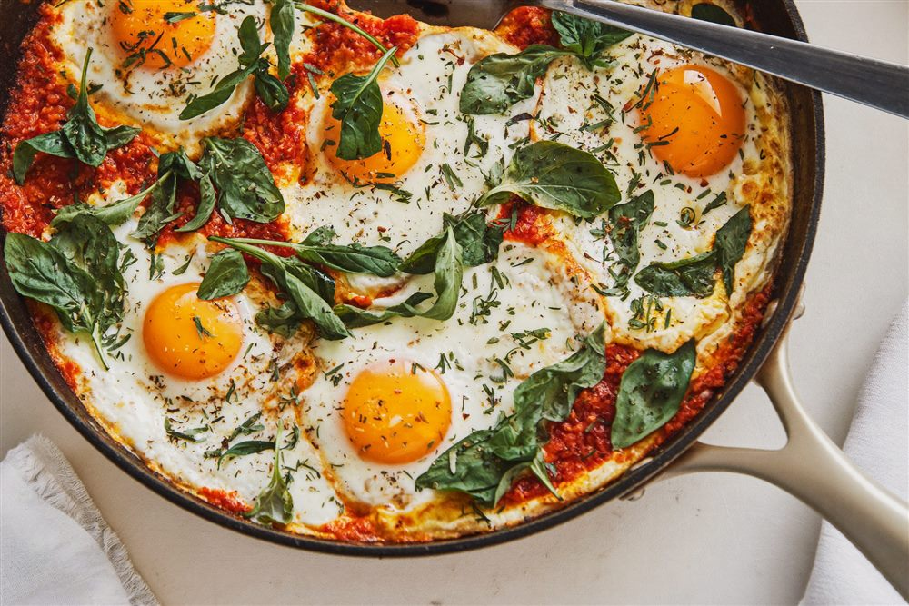
🍽 2 porciones⏱ 25 min📊 Media300 kcal
Ingredientes
- 4 huevos
- 2 tazas de tomate triturado
- 1/2 cebolla picada
- 1 pimiento rojo en cubos
- 1 diente de ajo picado
- 1 cucharadita de comino y paprika
- 1 cucharada de aceite de oliva
Por porción:
Calorías: 300 kcal · Proteína: 16 g
Carbohidratos: 14 g · Grasas: 18 g · Fibra: 4 g
Preparación
- Sofríe la cebolla, el pimiento y el ajo en el aceite hasta que ablanden.
- Agrega el tomate triturado, el comino y la paprika y cocina 8 minutos.
- Haz cuatro huecos en la salsa y casca un huevo en cada uno.
- Tapa y cocina de 6 a 8 minutos hasta que las claras cuajen y sirve caliente.
www.365recetas.com
Consejos útiles
- Tapa la sartén para que los huevos cuajen de manera uniforme.
- Acompaña con pan integral para mojar en la salsa.
Muffins de Huevo con Espinaca y Jamón de Pavo
🍽 2 porciones⏱ 25 min📊 Fácil180 kcal
Ingredientes
- 5 huevos
- 1 taza de espinaca picada
- 60 g de jamón de pavo en cubos
- 30 g de queso bajo en grasa rallado
- 2 cucharadas de leche descremada
- 1 pizca de sal y pimienta
Por porción:
Calorías: 180 kcal · Proteína: 21 g
Carbohidratos: 4 g · Grasas: 11 g · Fibra: 1 g
Preparación
- Precalienta el horno a 180 grados y engrasa seis moldes para muffin.
- Bate los huevos con la leche, la sal y la pimienta en un bol.
- Reparte la espinaca, el jamón de pavo y el queso en los moldes y vierte el huevo.
- Hornea de 18 a 20 minutos hasta que estén firmes y dorados, deja entibiar y desmolda.
www.365recetas.com
Consejos útiles
- Prepara varios y guárdalos en refrigerador para desayunos rápidos.
- Escurre bien la espinaca si la salteas antes para evitar exceso de agua.
Burrito de Huevo, Champinones y Pimiento
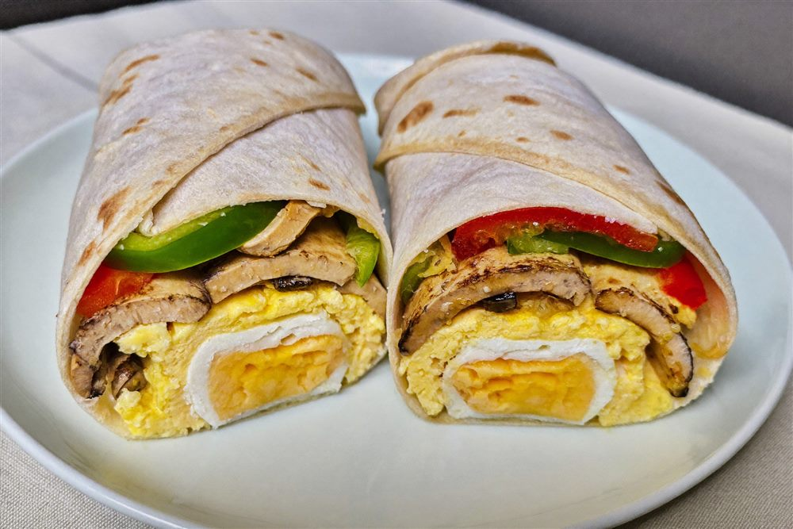
🍽 1 porción⏱ 18 min📊 Fácil380 kcal
Ingredientes
- 1 tortilla integral grande
- 2 huevos
- 1 taza de champiñones laminados
- 1/2 pimiento verde en tiras
- 30 g de queso bajo en grasa rallado
- 1 cucharadita de aceite de oliva
- 1 pizca de sal y pimienta
Por porción:
Calorías: 380 kcal · Proteína: 23 g
Carbohidratos: 34 g · Grasas: 16 g · Fibra: 6 g
Preparación
- Saltea los champiñones y el pimiento en el aceite hasta que doren.
- Bate los huevos con sal y pimienta, viértelos y revuelve hasta cuajar.
- Calienta la tortilla y reparte el huevo, las verduras y el queso en el centro.
- Enrolla apretando bien, dobla los extremos y sirve cortado a la mitad.
www.365recetas.com
Consejos útiles
- Cocina los champiñones a fuego alto para que suelten su agua y doren.
- Funde el queso con el huevo caliente para un relleno más cremoso.
Huevos Rancheros Ligeros sobre Tortilla de Maíz
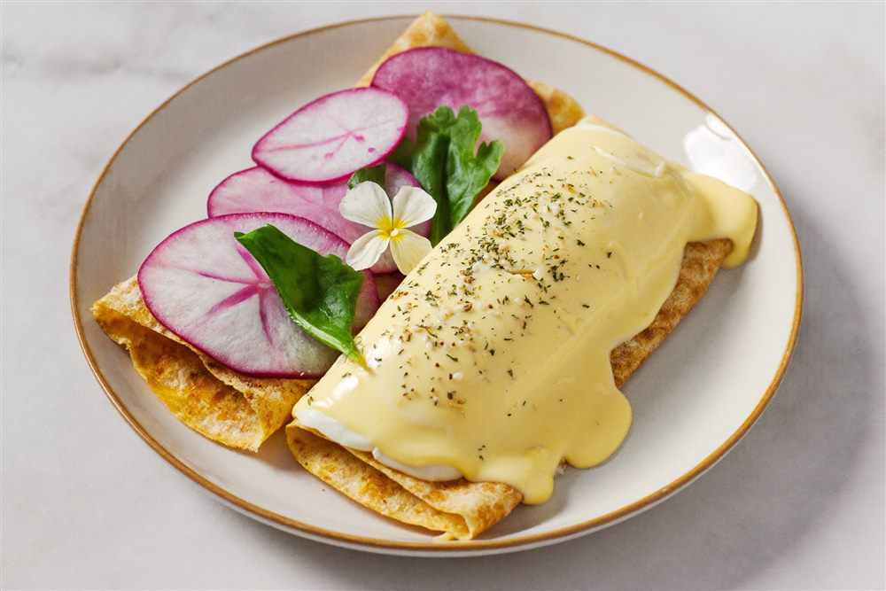
🍽 1 porción⏱ 18 min📊 Fácil360 kcal
Ingredientes
- 2 tortillas de maíz
- 2 huevos
- 1/2 taza de frijoles refritos sin grasa
- 1/3 taza de salsa roja casera
- 2 cucharadas de queso fresco desmenuzado
- 1 cucharadita de aceite de oliva
- 1 cucharada de cilantro picado
Por porción:
Calorías: 360 kcal · Proteína: 20 g
Carbohidratos: 40 g · Grasas: 14 g · Fibra: 8 g
Preparación
- Calienta las tortillas de maíz en una sartén seca y resérvalas tibias.
- Fríe los huevos en el aceite hasta que la clara cuaje y la yema quede blanda.
- Unta los frijoles sobre las tortillas y coloca un huevo sobre cada una.
- Baña con salsa roja, esparce queso fresco y cilantro y sirve.
www.365recetas.com
Consejos útiles
- Entibia las tortillas justo antes de servir para que queden flexibles.
- Usa salsa casera para controlar la sal y el picante.
Omelette de Calabacin y Queso Parmesano
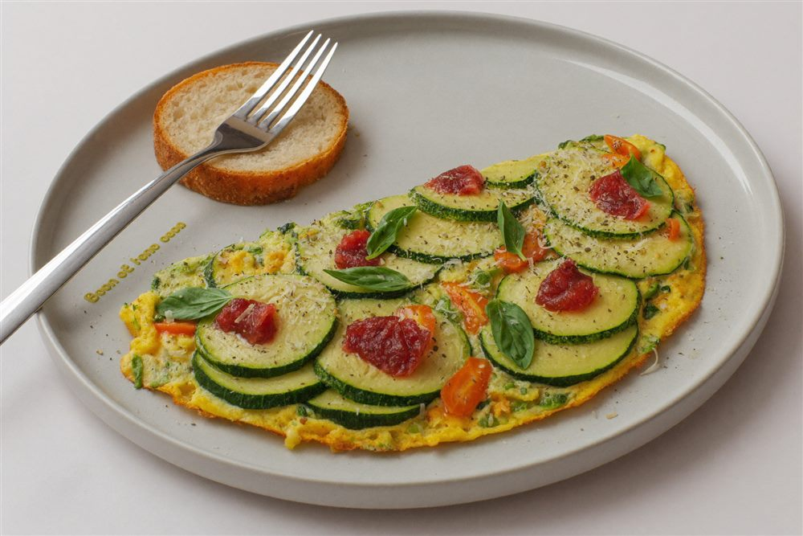
🍽 1 porción⏱ 14 min📊 Fácil270 kcal
Ingredientes
- 3 huevos
- 1/2 calabacín rallado y escurrido
- 20 g de queso parmesano rallado
- 1 cucharada de cebolla picada
- 1 cucharadita de aceite de oliva
- 1 pizca de sal y pimienta
Por porción:
Calorías: 270 kcal · Proteína: 22 g
Carbohidratos: 5 g · Grasas: 19 g · Fibra: 1 g
Preparación
- Saltea la cebolla y el calabacín rallado en el aceite hasta que evapore el agua.
- Bate los huevos con sal y pimienta y viértelos sobre las verduras.
- Espolvorea el parmesano y cocina a fuego medio hasta que el borde cuaje.
- Dobla el omelette a la mitad, deja un minuto más y sirve caliente.
www.365recetas.com
Consejos útiles
- Exprime el calabacín rallado para que el omelette no quede aguado.
- El parmesano aporta sabor salado, ajusta la sal con cuidado.
Huevos Revueltos con Frijol y Cúrcuma al Estilo Mexicano
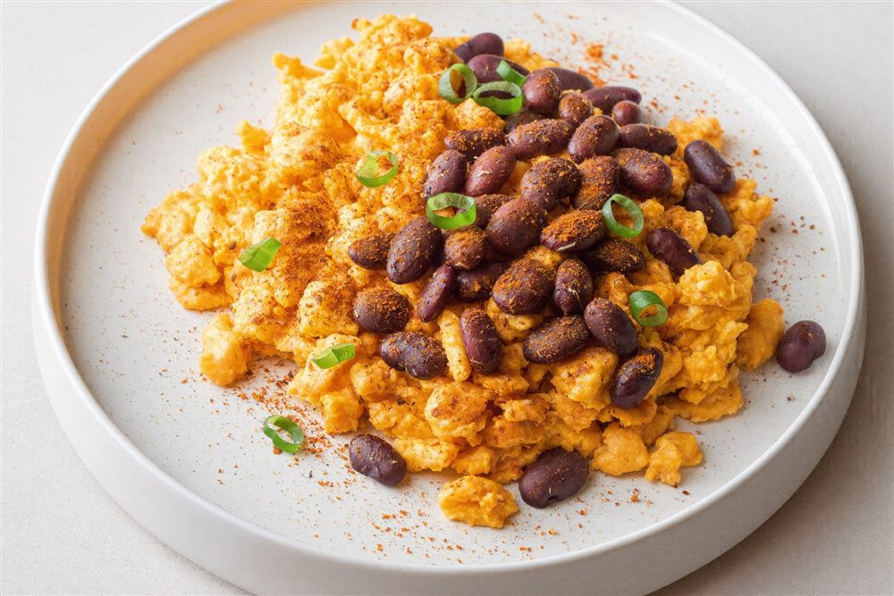
🍽 1 porción⏱ 15 min📊 Fácil250 kcal
Ingredientes
- 3 huevos
- 1/2 taza de frijoles negros cocidos y escurridos
- 1/2 tomate picado
- 1/4 cebolla picada
- 1/4 cucharadita de cúrcuma
- 1 cucharadita de aceite de oliva
- 1 pizca de sal y pimienta
Por porción:
Calorías: 250 kcal · Proteína: 24 g
Carbohidratos: 7 g · Grasas: 16 g · Fibra: 4 g
Preparación
- Sofríe la cebolla y el tomate en el aceite hasta que ablanden.
- Agrega los frijoles cocidos y la cúrcuma y saltea 3 minutos.
- Bate los huevos con sal y pimienta y viértelos sobre los frijoles.
- Revuelve hasta que el huevo cuaje a tu gusto y sirve caliente.
www.365recetas.com
Consejos útiles
- La cúrcuma da color dorado y un toque antiinflamatorio.
- Escurre bien los frijoles para que el revuelto no quede aguado.
Cazuelita de Huevo al Horno con Ejotes
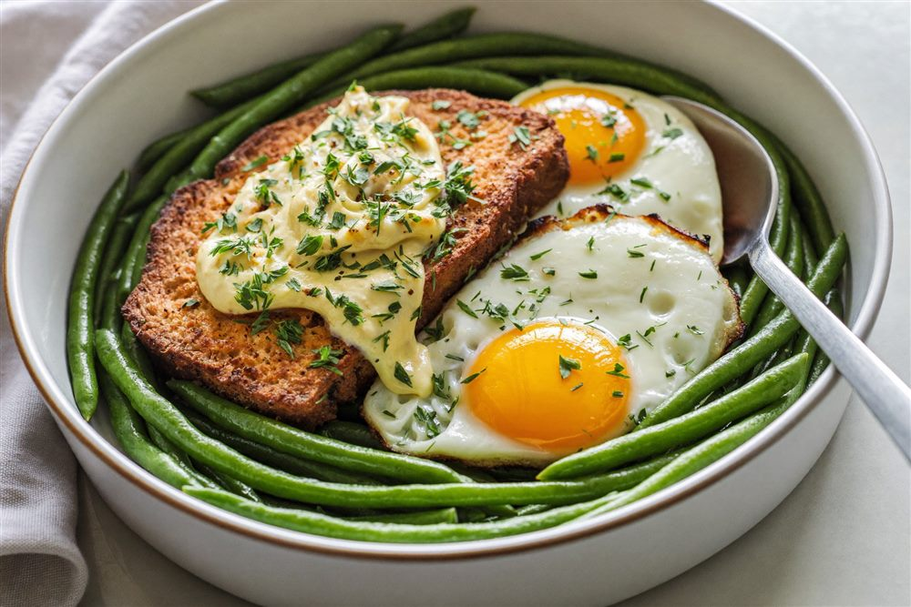
🍽 1 porción⏱ 20 min📊 Fácil240 kcal
Ingredientes
- 2 huevos
- 1 taza de ejotes troceados
- 20 g de queso mozzarella rallado
- 1 cucharada de leche descremada
- 1 cucharadita de aceite de oliva
- 1 pizca de sal y pimienta
Por porción:
Calorías: 240 kcal · Proteína: 18 g
Carbohidratos: 5 g · Grasas: 16 g · Fibra: 2 g
Preparación
- Precalienta el horno a 190 grados y saltea los ejotes en el aceite 3 minutos.
- Engrasa una cazuelita y coloca los ejotes en el fondo.
- Casca los huevos encima, agrega la leche, la sal, la pimienta y el queso.
- Hornea de 12 a 14 minutos hasta que la clara cuaje y el queso dore.
www.365recetas.com
Consejos útiles
- Corta los ejotes en trozos pequeños para que se cocinen al mismo tiempo que el huevo.
- Saca del horno cuando la yema aún tiemble para que quede cremosa.
Omelette de Champinones y Cebolla Caramelizada
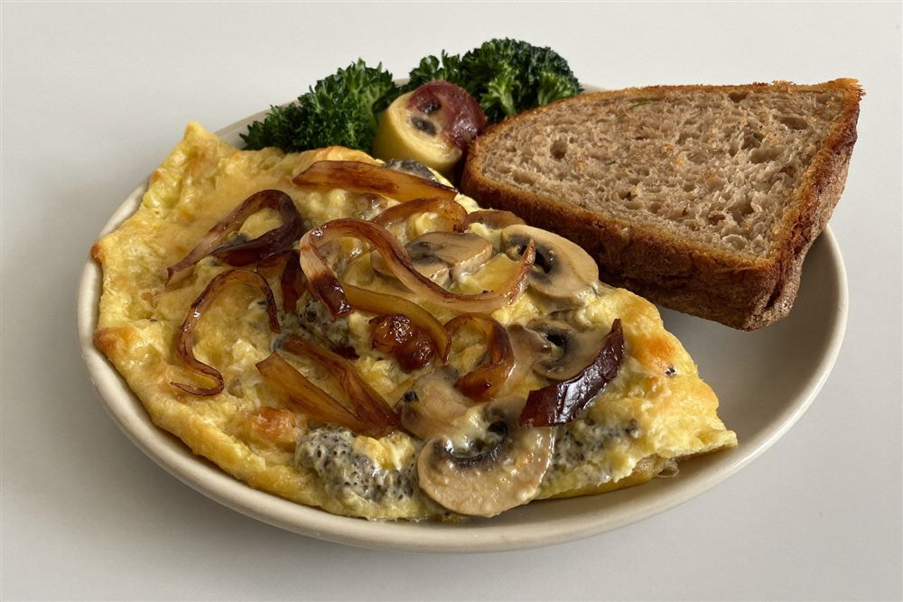
🍽 1 porción⏱ 20 min📊 Media290 kcal
Ingredientes
- 3 huevos
- 1 taza de champiñones en láminas
- 1/2 cebolla en juliana
- 20 g de queso mozzarella rallado
- 1 cucharadita de aceite de oliva
- 1/2 cucharadita de tomillo
- 1 pizca de sal y pimienta
Por porción:
Calorías: 290 kcal · Proteína: 21 g
Carbohidratos: 9 g · Grasas: 18 g · Fibra: 2 g
Preparación
- Cocina la cebolla a fuego bajo con el aceite hasta caramelizar, unos 8 minutos.
- Sube el fuego, agrega los champiñones y el tomillo y saltea hasta dorar.
- Bate los huevos con sal y pimienta y viértelos sobre las verduras.
- Cuando cuaje el borde, agrega el queso, dobla el omelette y sirve.
www.365recetas.com
Consejos útiles
- Caramelizar la cebolla con paciencia realza su dulzor natural.
- Los champiñones aportan una textura carnosa muy saciante.
Huevos Revueltos a la Mexicana con Nopal
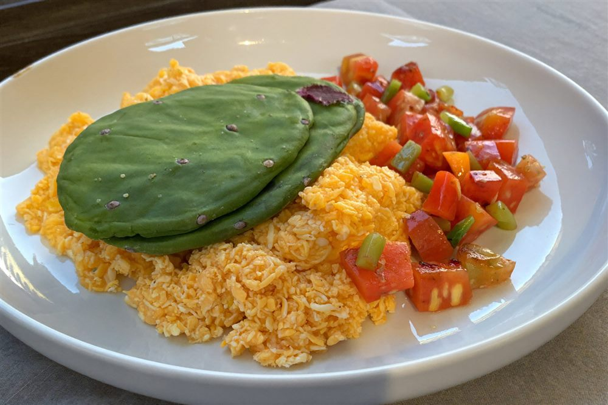
🍽 1 porción⏱ 15 min📊 Fácil230 kcal
Ingredientes
- 3 huevos
- 1/2 taza de nopal cocido en cubos
- 1/2 tomate picado
- 2 cucharadas de cebolla picada
- 1 chile serrano picado sin semillas
- 1 cucharadita de aceite de oliva
- 1 pizca de sal
Por porción:
Calorías: 230 kcal · Proteína: 19 g
Carbohidratos: 6 g · Grasas: 14 g · Fibra: 3 g
Preparación
- Sofríe la cebolla, el tomate y el chile serrano en el aceite hasta ablandar.
- Agrega el nopal cocido y saltea 2 minutos para integrar sabores.
- Bate los huevos con la sal y viértelos sobre las verduras.
- Revuelve a fuego medio hasta cuajar al gusto y sirve caliente.
www.365recetas.com
Consejos útiles
- Enjuaga el nopal cocido para reducir su textura babosa.
- Ajusta el chile según tu tolerancia al picante.
Frittata Individual de Pimientos Tricolor
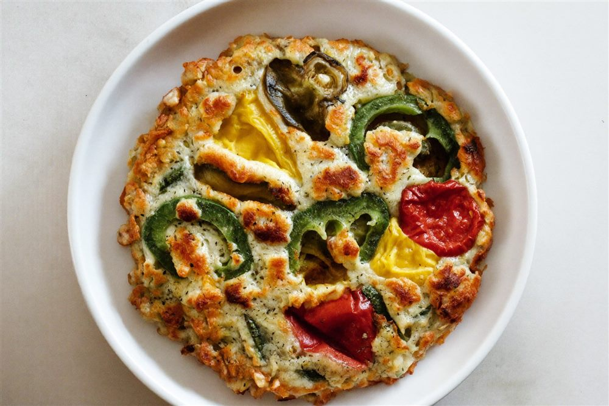
🍽 1 porción⏱ 22 min📊 Fácil260 kcal
Ingredientes
- 3 huevos
- 1/3 pimiento rojo en cubos
- 1/3 pimiento amarillo en cubos
- 1/3 pimiento verde en cubos
- 20 g de queso fresco desmenuzado
- 1 cucharadita de aceite de oliva
- 1 pizca de sal y pimienta
Por porción:
Calorías: 260 kcal · Proteína: 19 g
Carbohidratos: 8 g · Grasas: 17 g · Fibra: 2 g
Preparación
- Precalienta el horno a 190 grados y saltea los tres pimientos en el aceite 4 minutos.
- Bate los huevos con la sal y la pimienta en un bol pequeño.
- Coloca los pimientos en un molde individual y vierte el huevo encima.
- Reparte el queso fresco y hornea de 14 a 16 minutos hasta que cuaje y dore.
www.365recetas.com
Consejos útiles
- Combinar tres colores de pimiento aporta vista y antioxidantes.
- Usa un molde apto para horno o una mini sartén con mango metálico.
Burrito Bowl de Huevo con Arroz Integral y Aguacate
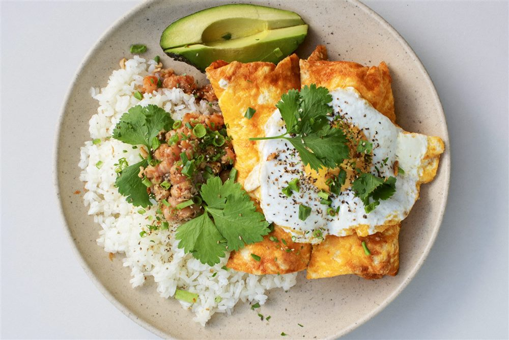
🍽 1 porción⏱ 18 min📊 Fácil430 kcal
Ingredientes
- 2 huevos
- 1/2 taza de arroz integral cocido
- 1/4 de aguacate en cubos
- 1/3 taza de frijoles negros cocidos
- 2 cucharadas de salsa pico de gallo
- 1 cucharadita de aceite de oliva
- 1 cucharada de cilantro picado
Por porción:
Calorías: 430 kcal · Proteína: 22 g
Carbohidratos: 40 g · Grasas: 19 g · Fibra: 11 g
Preparación
- Revuelve los huevos en el aceite con una pizca de sal hasta cuajar suaves.
- Coloca el arroz integral cocido como base en un bol.
- Agrega el huevo, los frijoles negros, el aguacate y el pico de gallo.
- Espolvorea cilantro fresco por encima y sirve tibio.
www.365recetas.com
Consejos útiles
- Cocina el arroz con anticipación para armar el bowl en minutos.
- Añade el aguacate al final para que conserve su color.
Huevos Poche sobre Tostada de Garbanzo y Tomate
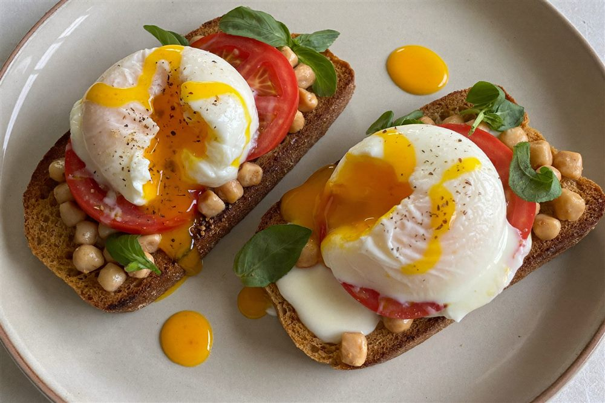
🍽 1 porción⏱ 16 min📊 Media310 kcal
Ingredientes
- 2 huevos
- 1 rebanada de pan integral
- 1/3 taza de garbanzos cocidos triturados
- 3 rodajas de tomate
- 1 cucharadita de jugo de limón
- 1 cucharadita de aceite de oliva
- 1 pizca de sal y pimienta
Por porción:
Calorías: 310 kcal · Proteína: 20 g
Carbohidratos: 30 g · Grasas: 14 g · Fibra: 7 g
Preparación
- Hierve agua con un chorrito de vinagre y escalfa los huevos 3 minutos.
- Mezcla los garbanzos triturados con el aceite, el limón, la sal y la pimienta.
- Tuesta el pan y úntalo con el puré de garbanzo, luego coloca las rodajas de tomate.
- Acomoda los huevos poche encima, ajusta sal y pimienta y sirve enseguida.
www.365recetas.com
Consejos útiles
- Crea un remolino en el agua antes de echar el huevo para que la clara se agrupe.
- Usa huevos muy frescos para que el poche quede compacto.
Smoothie Bowl de Fresa y Remolacha
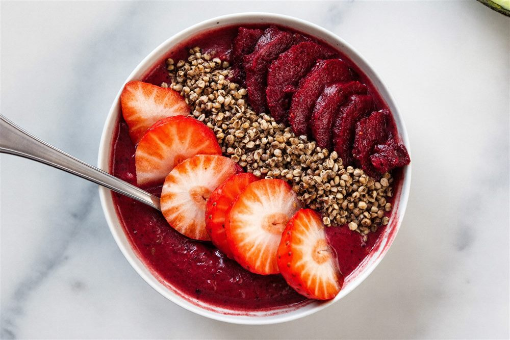
🍽 1 porción⏱ 10 min📊 Fácil310 kcal
Ingredientes
- 1 taza de fresas congeladas
- 1/2 remolacha pequeña cocida
- 1/2 plátano congelado
- 1/2 taza de yogur griego natural
- 1 cucharada de semillas de girasol
- 2 cucharadas de granola sin azúcar
Por porción:
Calorías: 310 kcal · Proteína: 15 g
Carbohidratos: 48 g · Grasas: 8 g · Fibra: 7 g
Preparación
- Licúa las fresas, la remolacha, el plátano y el yogur hasta lograr una crema espesa.
- Vierte la mezcla en un bowl y empareja la superficie con una cuchara.
- Distribuye la granola y las semillas de girasol en filas sobre el smoothie.
- Sirve de inmediato para conservar la textura fría y firme.
www.365recetas.com
Consejos útiles
- Usa fruta congelada para que el bowl quede espeso sin agregar hielo.
- Si la remolacha intimida, empieza con un cuarto y aumenta poco a poco.
Pudín de Chía con Café y Cacao
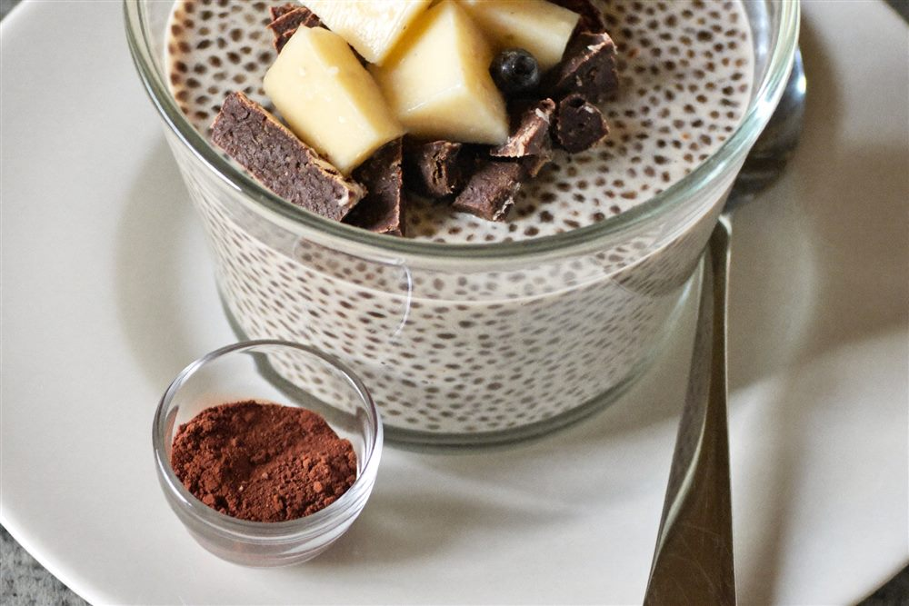
🍽 1 porción⏱ 10 min más reposo📊 Fácil280 kcal
Ingredientes
- 3 cucharadas de semillas de chía
- 1 taza de leche descremada (o leche de almendras)
- 1/2 taza de café frío
- 1 cucharada de cacao en polvo sin azúcar
- 1 cucharadita de miel
- 1 cucharada de maní picado
Por porción:
Calorías: 280 kcal · Proteína: 10 g
Carbohidratos: 27 g · Grasas: 11 g · Fibra: 12 g
Preparación
- Mezcla la chía, la leche, el café, el cacao y la miel en un frasco.
- Bate bien con un tenedor para evitar que la chía forme grumos.
- Refrigera al menos 4 horas o toda la noche hasta que gelifique.
- Decora con el maní picado antes de servir.
www.365recetas.com
Consejos útiles
- Vuelve a revolver a los 10 minutos para una textura pareja.
- El café descafeinado funciona igual si lo tomas de noche.
Yogur Griego con Mango y Coco Tostado
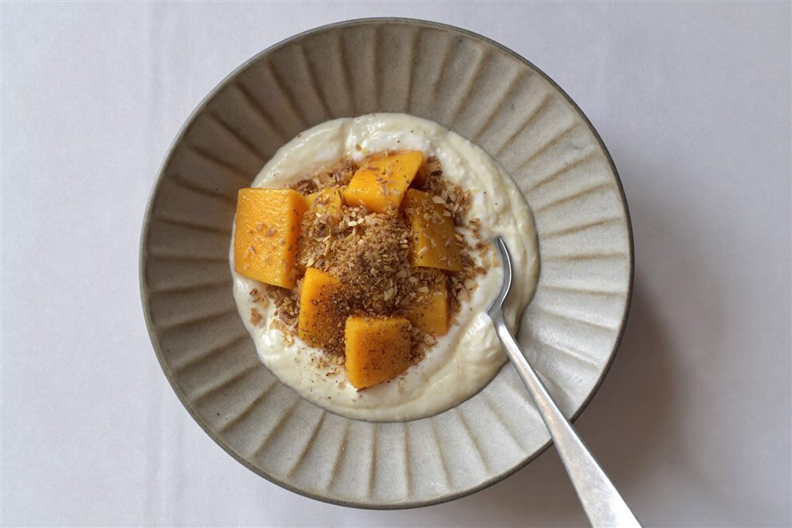
🍽 1 porción⏱ 8 min📊 Fácil260 kcal
Ingredientes
- 1 taza de yogur griego natural
- 1/2 mango maduro en cubos
- 2 cucharadas de coco rallado
- 1 cucharada de semillas de calabaza
- 1 cucharadita de miel
- Ralladura de 1/2 limón
Por porción:
Calorías: 260 kcal · Proteína: 18 g
Carbohidratos: 28 g · Grasas: 9 g · Fibra: 4 g
Preparación
- Tuesta el coco rallado en sartén seco a fuego bajo hasta dorar.
- Coloca el yogur en un bowl y agrega los cubos de mango encima.
- Espolvorea el coco tostado y las semillas de calabaza.
- Termina con la miel y la ralladura de limón.
www.365recetas.com
Consejos útiles
- Vigila el coco al tostar porque se quema en segundos.
- Cambia el mango por papaya cuando esté de temporada.
Smoothie Bowl Verde de Espinaca y Piña
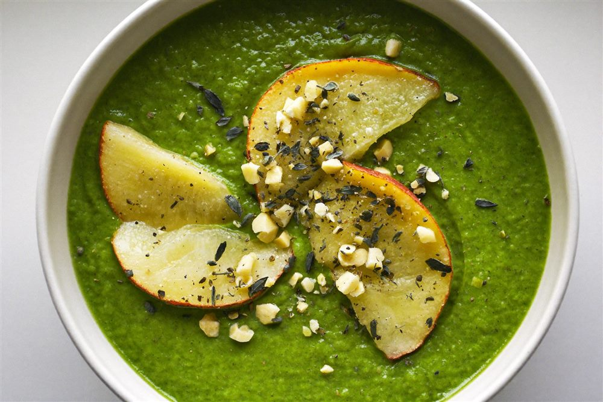
🍽 1 porción⏱ 10 min📊 Fácil295 kcal
Ingredientes
- 1 taza de espinaca fresca
- 1 taza de piña congelada
- 1/2 plátano congelado
- 1/2 taza de leche descremada (o leche de coco ligera)
- 1 cucharada de semillas de chía
- 2 cucharadas de hojuelas de avena
Por porción:
Calorías: 295 kcal · Proteína: 7 g
Carbohidratos: 52 g · Grasas: 7 g · Fibra: 8 g
Preparación
- Licúa la espinaca con la leche hasta que no queden hojas enteras.
- Agrega la piña y el plátano congelados y licúa hasta espesar.
- Sirve en un bowl y nivela la superficie.
- Decora con la chía y las hojuelas de avena en líneas.
www.365recetas.com
Consejos útiles
- La piña enmascara el sabor de la espinaca para principiantes.
- Congela el plátano en rodajas para licuarlo más fácil.
Pudín de Chía con Frutos Rojos
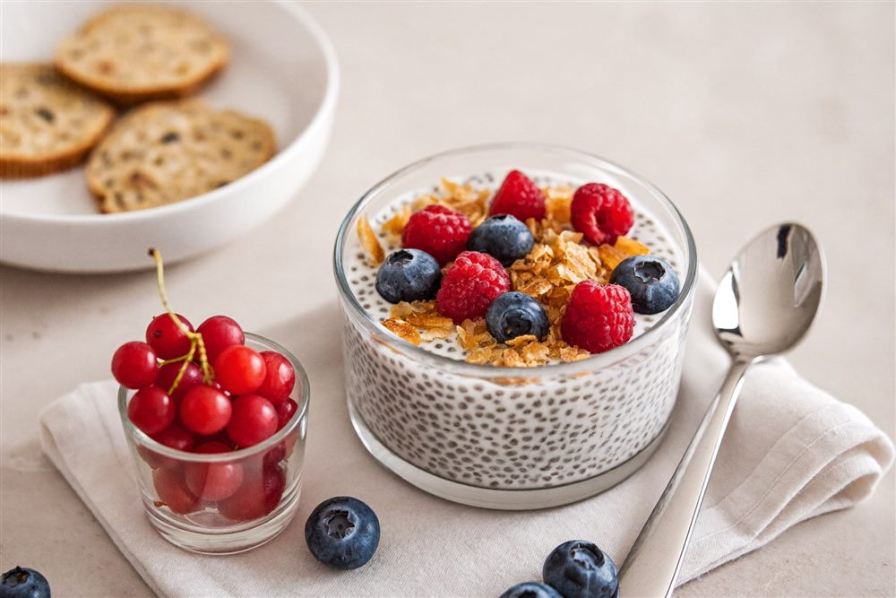
🍽 1 porción⏱ 10 min más reposo📊 Fácil270 kcal
Ingredientes
- 3 cucharadas de semillas de chía
- 1 taza de leche de avena
- 1/2 taza de frutos rojos congelados
- 1 cucharadita de extracto de vainilla
- 1 cucharadita de miel
- 1 cucharada de nueces picadas
Por porción:
Calorías: 270 kcal · Proteína: 8 g
Carbohidratos: 30 g · Grasas: 12 g · Fibra: 13 g
Preparación
- Combina la chía, la leche, la vainilla y la miel en un frasco.
- Revuelve dos veces con unos minutos de diferencia para hidratar la chía.
- Refrigera toda la noche hasta obtener consistencia de pudín.
- Cubre con los frutos rojos y las nueces antes de servir.
www.365recetas.com
Consejos útiles
- Machaca la mitad de los frutos rojos para teñir el pudín.
- Conserva hasta tres días en frasco cerrado en el refrigerador.
Bowl de Yogur, Granola y Fresas
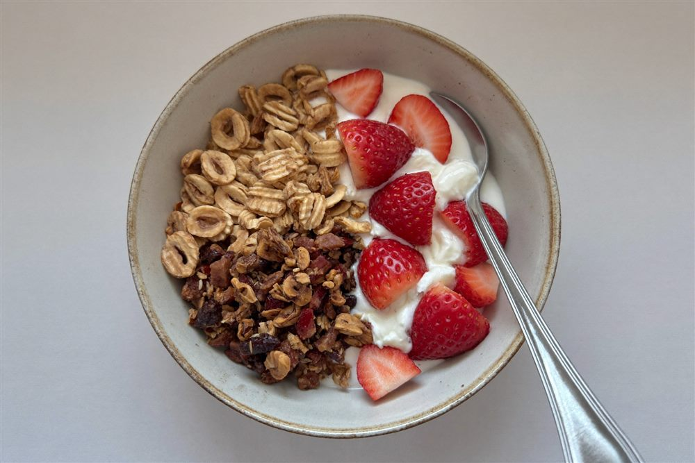
🍽 1 porción⏱ 7 min📊 Fácil320 kcal
Ingredientes
- 1 taza de yogur natural sin azúcar
- 1/2 taza de fresas en rodajas
- 1/3 taza de granola sin azúcar
- 1 cucharada de semillas de linaza molidas
- 1 cucharadita de miel
- 1 cucharada de almendras picadas
Por porción:
Calorías: 320 kcal · Proteína: 16 g
Carbohidratos: 40 g · Grasas: 11 g · Fibra: 6 g
Preparación
- Coloca el yogur en el fondo de un bowl ancho.
- Reparte las fresas sobre toda la superficie.
- Agrega la granola y las almendras para dar textura crocante.
- Espolvorea la linaza molida y termina con un hilo de miel.
www.365recetas.com
Consejos útiles
- Añade la granola justo al servir para que no se ablande.
- La linaza molida se absorbe mejor que la semilla entera.
Smoothie Bowl de Mango y Maracuyá
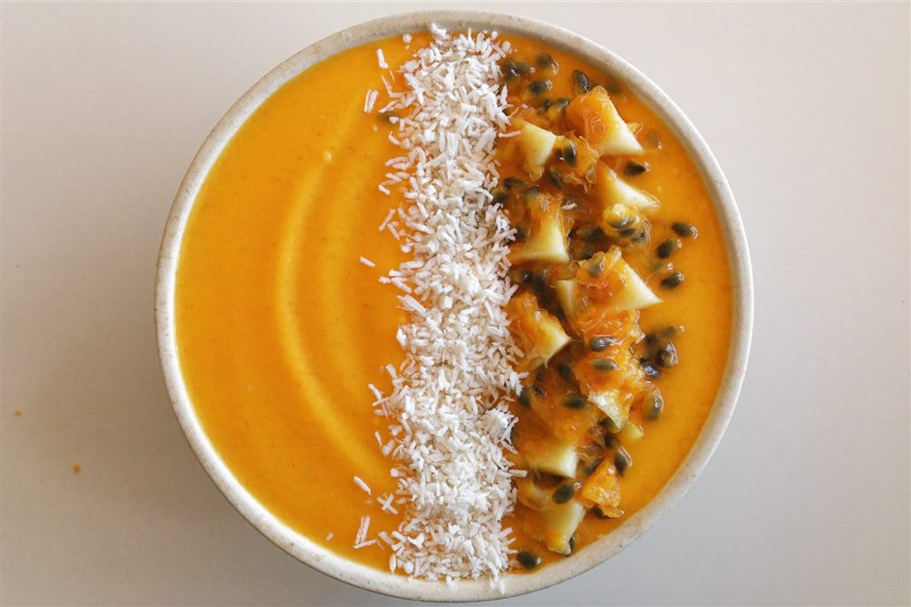
🍽 1 porción⏱ 10 min📊 Fácil300 kcal
Ingredientes
- 1 taza de mango congelado
- 1/2 plátano congelado
- Pulpa de 1 maracuyá
- 1/2 taza de yogur natural
- 1 cucharada de semillas de chía
- 2 cucharadas de coco en hojuelas
Por porción:
Calorías: 300 kcal · Proteína: 11 g
Carbohidratos: 50 g · Grasas: 7 g · Fibra: 6 g
Preparación
- Licúa el mango, el plátano y el yogur hasta lograr una base cremosa.
- Vierte en un bowl y alisa con el dorso de una cuchara.
- Distribuye la pulpa de maracuyá por encima.
- Termina con la chía y las hojuelas de coco.
www.365recetas.com
Consejos útiles
- La acidez del maracuyá equilibra el dulzor del mango.
- Reserva unas semillas de maracuyá para decorar con color.
Pudín de Chía y Coco con Kiwi
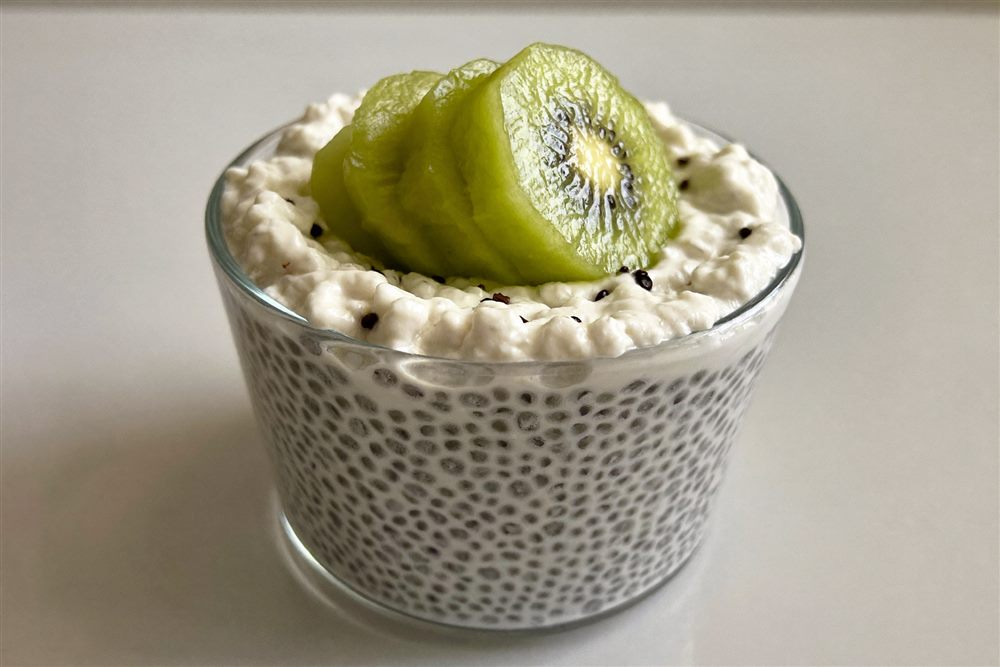
🍽 1 porción⏱ 10 min más reposo📊 Fácil280 kcal
Ingredientes
- 3 cucharadas de semillas de chía
- 1 taza de leche descremada (o leche de coco ligera)
- 1 cucharadita de miel
- 1 kiwi en rodajas
- 1 cucharada de coco rallado
- 1 cucharada de maní picado
Por porción:
Calorías: 280 kcal · Proteína: 8 g
Carbohidratos: 28 g · Grasas: 12 g · Fibra: 11 g
Preparación
- Mezcla la chía, la leche y la miel en un frasco con tapa.
- Agita el frasco y deja reposar 5 minutos, luego agita otra vez.
- Refrigera al menos 4 horas hasta que gelifique.
- Cubre con las rodajas de kiwi, el coco rallado y el maní.
www.365recetas.com
Consejos útiles
- El verde del kiwi y el blanco del coco hacen un contraste vistoso.
- Si usas leche de coco, dilúyela un poco para un sabor más suave.
Bowl de Frutas Tropicales con Yogur de Limón
🍽 1 porción⏱ 10 min📊 Fácil275 kcal
Ingredientes
- 1 taza de yogur griego natural
- Jugo y ralladura de 1 limón
- 1/2 taza de piña en cubos
- 1/2 taza de papaya en cubos
- 1 cucharada de semillas de chía
- 1 cucharada de menta picada
Por porción:
Calorías: 275 kcal · Proteína: 17 g
Carbohidratos: 30 g · Grasas: 5 g · Fibra: 4 g
Preparación
- Mezcla el yogur con el jugo y la ralladura de limón.
- Vierte el yogur de limón en el fondo de un bowl.
- Distribuye la piña y la papaya por encima.
- Espolvorea la chía y la menta picada para refrescar.
www.365recetas.com
Consejos útiles
- Sirve bien frío para realzar el toque cítrico.
- La menta puede sustituirse por albahaca para un giro aromático.
Smoothie Bowl de Fresa y Cacao
🍽 1 porción⏱ 10 min📊 Fácil315 kcal
Ingredientes
- 1 taza de fresas congeladas
- 1/2 plátano congelado
- 1 cucharada de cacao en polvo sin azúcar
- 1/2 taza de leche descremada (o leche de almendras)
- 1 cucharada de mantequilla de maní
- 1 cucharada de maní picado
Por porción:
Calorías: 315 kcal · Proteína: 10 g
Carbohidratos: 44 g · Grasas: 12 g · Fibra: 8 g
Preparación
- Licúa las fresas, el plátano, el cacao y la leche hasta espesar.
- Añade la mantequilla de maní y licúa unos segundos más.
- Sirve en un bowl y empareja la superficie.
- Decora con el maní picado para un toque crocante.
www.365recetas.com
Consejos útiles
- La combinación fresa y cacao recuerda a un postre sin culpa.
- Si queda muy espeso, agrega leche de a cucharadas.
Pudín de Chía con Manzana y Canela
🍽 1 porción⏱ 10 min más reposo📊 Fácil265 kcal
Ingredientes
- 3 cucharadas de semillas de chía
- 1 taza de leche de avena
- 1/2 manzana rallada
- 1/2 cucharadita de canela
- 1 cucharadita de miel
- 1 cucharada de nueces picadas
Por porción:
Calorías: 265 kcal · Proteína: 7 g
Carbohidratos: 32 g · Grasas: 11 g · Fibra: 12 g
Preparación
- Combina la chía, la leche, la canela y la miel en un frasco.
- Incorpora la manzana rallada y revuelve bien.
- Refrigera toda la noche hasta que tome cuerpo.
- Termina con las nueces justo antes de servir.
www.365recetas.com
Consejos útiles
- Sabe a tarta de manzana en versión saludable.
- Ralla la manzana con cáscara para sumar fibra.
Bowl de Yogur con Durazno Asado
🍽 1 porción⏱ 15 min📊 Media290 kcal
Ingredientes
- 1 durazno maduro en mitades
- 1 taza de yogur griego natural
- 1 cucharadita de miel
- 1/2 cucharadita de canela
- 2 cucharadas de granola sin azúcar
- 1 cucharada de semillas de calabaza
Por porción:
Calorías: 290 kcal · Proteína: 16 g
Carbohidratos: 33 g · Grasas: 8 g · Fibra: 4 g
Preparación
- Asa las mitades de durazno en sartén caliente hasta marcarlas.
- Espolvorea canela sobre el durazno mientras se carameliza.
- Sirve el yogur en un bowl y coloca el durazno tibio encima.
- Agrega la granola, las semillas de calabaza y la miel.
www.365recetas.com
Consejos útiles
- El contraste de durazno tibio y yogur frío es delicioso.
- Usa duraznos firmes para que no se deshagan al asar.
Smoothie Bowl de Aguacate y Limón
🍽 1 porción⏱ 10 min📊 Fácil330 kcal
Ingredientes
- 1/2 aguacate maduro
- 1/2 plátano congelado
- Jugo de 1/2 limón
- 1 taza de espinaca fresca
- 1/2 taza de leche descremada (o leche de coco ligera)
- 2 cucharadas de semillas de chía
Por porción:
Calorías: 330 kcal · Proteína: 9 g
Carbohidratos: 31 g · Grasas: 19 g · Fibra: 11 g
Preparación
- Licúa el aguacate, el plátano, el limón y la espinaca con la leche.
- Ajusta la textura agregando leche hasta que quede cremoso.
- Sirve en un bowl y alisa la superficie.
- Decora con las semillas de chía por encima.
www.365recetas.com
Consejos útiles
- El aguacate aporta cremosidad y grasas saludables.
- El limón evita que el aguacate se oxide y oscurezca.
Pudín de Chía en Capas de Fresa y Vainilla
🍽 1 porción⏱ 15 min más reposo📊 Media280 kcal
Ingredientes
- 3 cucharadas de semillas de chía
- 1 taza de leche descremada (o leche de almendras)
- 1 cucharadita de extracto de vainilla
- 1/2 taza de fresas en puré
- 1 cucharadita de miel
- 1 cucharada de almendras laminadas
Por porción:
Calorías: 280 kcal · Proteína: 9 g
Carbohidratos: 30 g · Grasas: 10 g · Fibra: 12 g
Preparación
- Prepara el pudín de chía con la leche, la vainilla y la miel.
- Refrigera hasta gelificar y luego divide en dos partes.
- Mezcla una parte con el puré de fresa para colorearla.
- Arma capas alternando pudín blanco y rosa en un vaso y decora con almendras.
www.365recetas.com
Consejos útiles
- Usa un vaso transparente para lucir las capas.
- Filtra el puré de fresa si prefieres una textura más fina.
Bowl de Yogur con Banano y Miel
🍽 1 porción⏱ 8 min📊 Fácil300 kcal
Ingredientes
- 1 taza de yogur griego natural
- 1 banano en rodajas
- 1 cucharada de miel
- 1 cucharada de nueces picadas
- 1 cucharada de semillas de chía
- Una pizca de canela
Por porción:
Calorías: 300 kcal · Proteína: 17 g
Carbohidratos: 33 g · Grasas: 9 g · Fibra: 5 g
Preparación
- Coloca el yogur en un bowl amplio.
- Acomoda las rodajas de banano sobre el yogur.
- Reparte las nueces y la chía para dar textura.
- Termina con un hilo de miel y una pizca de canela.
www.365recetas.com
Consejos útiles
- Elige un banano maduro para mayor dulzor natural.
- Tuesta las nueces unos minutos para realzar su sabor.
Smoothie Bowl de Fresa y Avena
🍽 1 porción⏱ 10 min📊 Fácil305 kcal
Ingredientes
- 1 taza de fresas congeladas
- 1/2 plátano congelado
- 1/3 taza de avena en hojuelas
- 1/2 taza de yogur natural
- 1/2 taza de leche descremada (o leche de almendras)
- 1 cucharada de semillas de chía
Por porción:
Calorías: 305 kcal · Proteína: 12 g
Carbohidratos: 48 g · Grasas: 8 g · Fibra: 11 g
Preparación
- Licúa las fresas, el plátano, la avena y el yogur con la leche.
- Procesa hasta lograr una mezcla espesa y homogénea.
- Sirve en un bowl y empareja con una cuchara.
- Decora con la chía y unas fresas enteras reservadas.
www.365recetas.com
Consejos útiles
- La avena espesa el bowl y aporta saciedad duradera.
- Remoja la avena 5 minutos si tu licuadora es de baja potencia.
Bowl de Frutas con Yogur de Vainilla y Granola
🍽 1 porción⏱ 10 min📊 Fácil325 kcal
Ingredientes
- 1 taza de yogur natural
- 1/2 cucharadita de extracto de vainilla
- 1/2 manzana en cubos
- 1/2 pera en cubos
- 1/3 taza de granola sin azúcar
- 1 cucharada de semillas de girasol
Por porción:
Calorías: 325 kcal · Proteína: 15 g
Carbohidratos: 44 g · Grasas: 10 g · Fibra: 6 g
Preparación
- Mezcla el yogur con el extracto de vainilla.
- Vierte el yogur en un bowl y distribuye la manzana y la pera.
- Agrega la granola para dar crocancia.
- Espolvorea las semillas de girasol y sirve enseguida.
www.365recetas.com
Consejos útiles
- Rocía las frutas con limón para que no se oxiden.
- Cualquier fruta de estación funciona en este bowl versátil.
Pudín de Chía con Plátano y Mantequilla de Maní
🍽 1 porción⏱ 10 min más reposo📊 Fácil340 kcal
Ingredientes
- 3 cucharadas de semillas de chía
- 1 taza de leche descremada (o leche de almendras)
- 1 cucharada de mantequilla de maní
- 1/2 plátano en rodajas
- 1 cucharadita de miel
- 1 cucharada de maní picado
Por porción:
Calorías: 340 kcal · Proteína: 13 g
Carbohidratos: 35 g · Grasas: 15 g · Fibra: 13 g
Preparación
- Bate la chía con la leche, la mantequilla de maní y la miel.
- Revuelve dos veces en los primeros minutos para hidratar la chía.
- Refrigera toda la noche hasta que espese.
- Decora con las rodajas de plátano y el maní picado.
www.365recetas.com
Consejos útiles
- La mantequilla de maní aporta proteína y cremosidad.
- Disuelve bien el maní en la leche para evitar grumos.
Tostadas Integrales con Aguacate y Huevo Pochado
🍽 1 porción⏱ 15 min📊 Fácil340 kcal
Ingredientes
- 2 rebanadas de pan integral
- 1/2 aguacate maduro
- 1 huevo
- 1 cucharadita de vinagre blanco
- 1 pizca de sal y pimienta
- Hojuelas de chile al gusto
Por porción:
Calorías: 340 kcal · Proteína: 15 g
Carbohidratos: 30 g · Grasas: 18 g · Fibra: 7 g
Preparación
- Tuesta las rebanadas de pan integral hasta que estén doradas y crujientes.
- Pisa el aguacate con sal y pimienta y úntalo sobre el pan.
- Pochea el huevo en agua con vinagre durante 3 minutos y escurre bien.
- Coloca el huevo sobre la tostada y espolvorea hojuelas de chile.
www.365recetas.com
Consejos útiles
- Agrega unas gotas de limón al aguacate para que no se oxide.
- Usa agua apenas hirviendo para un pochado perfecto.
Pan Integral Casero de Avena y Miel
🍽 2 porciones⏱ 40 min📊 Media190 kcal
Ingredientes
- 1 taza de harina integral
- 1/2 taza de avena en hojuelas
- 1 cucharada de miel
- 1 cucharadita de polvo de hornear
- 1/2 taza de leche descremada
- 1 pizca de sal
Por porción:
Calorías: 190 kcal · Proteína: 7 g
Carbohidratos: 34 g · Grasas: 3 g · Fibra: 5 g
Preparación
- Mezcla la harina, la avena, el polvo de hornear y la sal en un bol.
- Incorpora la leche y la miel hasta formar una masa homogénea.
- Vierte la masa en un molde pequeño engrasado y alisa la superficie.
- Hornea a 180 grados por 25 minutos hasta que dore.
www.365recetas.com
Consejos útiles
- Deja enfriar antes de cortar para que no se desmorone.
- Sustituye la miel por plátano pisado para menos azúcar.
Waffles Integrales de Plátano sin Azúcar
🍽 2 porciones⏱ 20 min📊 Media270 kcal
Ingredientes
- 1 taza de harina integral
- 1 plátano maduro pisado
- 1 huevo
- 3/4 taza de leche descremada
- 1 cucharadita de polvo de hornear
- 1 cucharadita de canela
Por porción:
Calorías: 270 kcal · Proteína: 10 g
Carbohidratos: 42 g · Grasas: 6 g · Fibra: 6 g
Preparación
- Bate el plátano con el huevo y la leche hasta integrar.
- Añade la harina, el polvo de hornear y la canela y mezcla sin grumos.
- Vierte la masa en la wafflera caliente y engrasada.
- Cocina 4 minutos hasta que los waffles queden dorados y firmes.
www.365recetas.com
Consejos útiles
- No abras la wafflera antes de tiempo para evitar que se rompan.
- Acompaña con fruta fresca en lugar de jarabe.
Crepes Integrales Rellenos de Requesón y Fresa
🍽 2 porciones⏱ 20 min📊 Media290 kcal
Ingredientes
- 1/2 taza de harina integral
- 1 huevo
- 3/4 taza de leche descremada
- 1/2 taza de requesón light
- 1 taza de fresas en rodajas
- 1 cucharadita de esencia de vainilla
Por porción:
Calorías: 290 kcal · Proteína: 16 g
Carbohidratos: 30 g · Grasas: 8 g · Fibra: 4 g
Preparación
- Licua la harina, el huevo, la leche y la vainilla hasta lograr una mezcla líquida.
- Vierte una capa fina en una sartén antiadherente caliente.
- Cocina 1 minuto por lado hasta que el crepe se despegue.
- Rellena con requesón y fresas y dobla en cuatro.
www.365recetas.com
Consejos útiles
- Deja reposar la masa 10 minutos para crepes más suaves.
- Endulza el requesón con un toque de miel si lo deseas.
Tostadas Integrales con Hummus y Tomate Cherry
🍽 1 porción⏱ 10 min📊 Fácil250 kcal
Ingredientes
- 2 rebanadas de pan integral
- 3 cucharadas de hummus
- 6 tomates cherry partidos
- 1 cucharadita de aceite de oliva
- Hojas de albahaca fresca
- 1 pizca de sal
Por porción:
Calorías: 250 kcal · Proteína: 9 g
Carbohidratos: 32 g · Grasas: 10 g · Fibra: 7 g
Preparación
- Tuesta el pan integral hasta que quede crujiente.
- Unta una capa generosa de hummus sobre cada rebanada.
- Distribuye los tomates cherry y la albahaca encima.
- Rocía con aceite de oliva y un toque de sal antes de servir.
www.365recetas.com
Consejos útiles
- Usa hummus casero para controlar la sal.
- Agrega semillas de ajonjolí para un extra crocante.
Waffles Integrales de Avena y Fresa
🍽 2 porciones⏱ 20 min📊 Media280 kcal
Ingredientes
- 3/4 taza de harina integral
- 1/2 taza de avena molida
- 1 huevo
- 1 taza de leche descremada
- 1/2 taza de fresas picadas
- 1 cucharadita de polvo de hornear
Por porción:
Calorías: 280 kcal · Proteína: 11 g
Carbohidratos: 44 g · Grasas: 5 g · Fibra: 6 g
Preparación
- Combina la harina, la avena y el polvo de hornear en un bol.
- Añade el huevo y la leche y bate hasta integrar.
- Incorpora las fresas picadas con movimientos suaves.
- Cocina la masa en la wafflera caliente por 4 minutos.
www.365recetas.com
Consejos útiles
- Pica las fresas en trozos pequeños para repartir el sabor.
- Sirve con yogur natural en lugar de crema.
Crepes Integrales de Espinaca y Champiñones
🍽 2 porciones⏱ 25 min📊 Media260 kcal
Ingredientes
- 1/2 taza de harina integral
- 1 huevo
- 3/4 taza de leche descremada
- 1 taza de espinaca fresca
- 1 taza de champiñones en láminas
- 1 cucharadita de aceite de oliva
Por porción:
Calorías: 260 kcal · Proteína: 14 g
Carbohidratos: 28 g · Grasas: 9 g · Fibra: 5 g
Preparación
- Licua la harina, el huevo y la leche hasta obtener masa fina.
- Cocina cada crepe en sartén antiadherente 1 minuto por lado.
- Saltea los champiñones y la espinaca con aceite de oliva.
- Rellena los crepes con el salteado y enrolla para servir.
www.365recetas.com
Consejos útiles
- Escurre bien los champiñones para que el relleno no quede aguado.
- Agrega un toque de ajo en polvo al salteado.
Pan Integral Tostado con Mantequilla de Maní y Banano
🍽 1 porción⏱ 10 min📊 Fácil360 kcal
Ingredientes
- 2 rebanadas de pan integral
- 2 cucharadas de mantequilla de maní natural
- 1 banano en rodajas
- 1 cucharadita de semillas de chía
- 1 pizca de canela
Por porción:
Calorías: 360 kcal · Proteína: 14 g
Carbohidratos: 42 g · Grasas: 16 g · Fibra: 8 g
Preparación
- Tuesta las rebanadas de pan integral hasta dorar.
- Unta la mantequilla de maní sobre cada tostada.
- Coloca las rodajas de banano encima de forma pareja.
- Espolvorea semillas de chía y canela antes de servir.
www.365recetas.com
Consejos útiles
- Elige mantequilla de maní sin azúcar añadida.
- Usa banano bien maduro para mayor dulzor natural.
Waffles Integrales de Zanahoria y Nuez
🍽 2 porciones⏱ 25 min📊 Media300 kcal
Ingredientes
- 1 taza de harina integral
- 1/2 taza de zanahoria rallada
- 1 huevo
- 3/4 taza de leche descremada
- 2 cucharadas de nuez picada
- 1 cucharadita de canela
- 1 cucharadita de polvo de hornear
Por porción:
Calorías: 300 kcal · Proteína: 10 g
Carbohidratos: 40 g · Grasas: 11 g · Fibra: 6 g
Preparación
- Mezcla la harina, la canela y el polvo de hornear en un bol.
- Añade el huevo, la leche y la zanahoria rallada.
- Incorpora la nuez picada a la masa.
- Cocina en la wafflera caliente por 5 minutos hasta dorar.
www.365recetas.com
Consejos útiles
- Ralla la zanahoria fina para que se cocine bien.
- Acompaña con yogur natural sin azúcar.
Tostadas Integrales con Requesón y Durazno
🍽 1 porción⏱ 10 min📊 Fácil270 kcal
Ingredientes
- 2 rebanadas de pan integral
- 1/2 taza de requesón light
- 1 durazno en rodajas
- 1 cucharadita de miel
- 1 cucharadita de semillas de girasol
Por porción:
Calorías: 270 kcal · Proteína: 16 g
Carbohidratos: 34 g · Grasas: 6 g · Fibra: 5 g
Preparación
- Tuesta el pan integral hasta que quede firme.
- Unta el requesón sobre cada rebanada de forma pareja.
- Distribuye las rodajas de durazno encima.
- Rocía con miel y espolvorea las semillas de girasol.
www.365recetas.com
Consejos útiles
- Usa durazno bien maduro para más sabor.
- Sustituye la miel por más fruta si prefieres menos azúcar.
Crepes Integrales de Cacao con Yogur
🍽 2 porciones⏱ 20 min📊 Media280 kcal
Ingredientes
- 1/2 taza de harina integral
- 1 cucharada de cacao en polvo
- 1 huevo
- 3/4 taza de leche descremada
- 1/2 taza de yogur natural
- 1 cucharadita de miel
Por porción:
Calorías: 280 kcal · Proteína: 15 g
Carbohidratos: 33 g · Grasas: 7 g · Fibra: 4 g
Preparación
- Licua la harina, el cacao, el huevo y la leche hasta integrar.
- Cocina cada crepe en sartén antiadherente 1 minuto por lado.
- Mezcla el yogur con la miel para el relleno.
- Rellena los crepes con el yogur y enrolla para servir.
www.365recetas.com
Consejos útiles
- Usa cacao puro sin azúcar para menos calorías.
- Agrega fresa o banano para un toque de fruta.
Pan Integral con Huevo Revuelto y Espinaca
🍽 1 porción⏱ 15 min📊 Fácil320 kcal
Ingredientes
- 2 rebanadas de pan integral
- 2 huevos
- 1 taza de espinaca fresca
- 1 cucharadita de aceite de oliva
- 1 pizca de sal y pimienta
- 1 cucharada de queso rallado light
Por porción:
Calorías: 320 kcal · Proteína: 22 g
Carbohidratos: 28 g · Grasas: 15 g · Fibra: 6 g
Preparación
- Tuesta las rebanadas de pan integral.
- Saltea la espinaca con aceite de oliva hasta que reduzca.
- Añade los huevos batidos y revuelve hasta cuajar.
- Sirve el revuelto sobre el pan y agrega el queso rallado.
www.365recetas.com
Consejos útiles
- No cocines de más los huevos para que queden cremosos.
- Sazona la espinaca con un toque de nuez moscada.
Waffles Integrales de Calabaza y Especias
🍽 2 porciones⏱ 25 min📊 Media290 kcal
Ingredientes
- 1 taza de harina integral
- 1/2 taza de puré de calabaza
- 1 huevo
- 3/4 taza de leche descremada
- 1 cucharadita de canela
- 1/2 cucharadita de jengibre en polvo
- 1 cucharadita de polvo de hornear
Por porción:
Calorías: 290 kcal · Proteína: 9 g
Carbohidratos: 43 g · Grasas: 6 g · Fibra: 7 g
Preparación
- Bate el puré de calabaza con el huevo y la leche.
- Añade la harina, el polvo de hornear, la canela y el jengibre y mezcla sin grumos.
- Vierte la masa en la wafflera caliente y engrasada.
- Cocina 5 minutos hasta que los waffles queden dorados.
www.365recetas.com
Consejos útiles
- Usa puré de calabaza natural sin azúcar.
- Acompaña con un toque de yogur natural.
Tostadas Integrales con Atún y Pepino
🍽 1 porción⏱ 10 min📊 Fácil310 kcal
Ingredientes
- 2 rebanadas de pan integral
- 1 lata de atún en agua escurrido
- 1/2 pepino en láminas
- 2 cucharadas de queso crema light
- 1 pizca de pimienta
- 1 chorrito de limón
Por porción:
Calorías: 310 kcal · Proteína: 24 g
Carbohidratos: 28 g · Grasas: 10 g · Fibra: 5 g
Preparación
- Tuesta el pan integral hasta que quede crujiente.
- Unta el queso crema sobre cada rebanada.
- Mezcla el atún con el limón y la pimienta y repártelo sobre el pan.
- Coloca las láminas de pepino encima y sirve.
www.365recetas.com
Consejos útiles
- Escurre bien el atún para que la tostada no quede húmeda.
- Agrega cebolla morada picada para un toque extra.
Crepes Integrales de Manzana y Canela
🍽 2 porciones⏱ 25 min📊 Media260 kcal
Ingredientes
- 1/2 taza de harina integral
- 1 huevo
- 3/4 taza de leche descremada
- 1 manzana en cubos
- 1 cucharadita de canela
- 1 cucharadita de miel
Por porción:
Calorías: 260 kcal · Proteína: 9 g
Carbohidratos: 38 g · Grasas: 5 g · Fibra: 5 g
Preparación
- Licua la harina, el huevo y la leche hasta obtener masa fina.
- Cocina cada crepe en sartén antiadherente 1 minuto por lado.
- Saltea la manzana con canela y miel hasta ablandar.
- Rellena los crepes con la manzana caramelizada y dobla.
www.365recetas.com
Consejos útiles
- Usa manzana verde para un contraste ácido.
- No agregues más miel si la manzana ya es dulce.
Pan Integral con Tomate, Ajo y Aceite de Oliva
🍽 1 porción⏱ 10 min📊 Fácil230 kcal
Ingredientes
- 2 rebanadas de pan integral
- 1 tomate maduro rallado
- 1 diente de ajo
- 1 cucharada de aceite de oliva
- 1 pizca de sal
- Orégano fresco al gusto
Por porción:
Calorías: 230 kcal · Proteína: 7 g
Carbohidratos: 32 g · Grasas: 9 g · Fibra: 6 g
Preparación
- Tuesta el pan integral hasta que quede dorado.
- Frota el diente de ajo sobre la superficie caliente del pan.
- Cubre con el tomate rallado de forma pareja.
- Rocía con aceite de oliva y espolvorea sal y orégano.
www.365recetas.com
Consejos útiles
- Usa tomate bien maduro para más jugo.
- Sirve de inmediato para que el pan no se ablande.
Waffles Integrales de Coco y Limón
🍽 2 porciones⏱ 20 min📊 Media285 kcal
Ingredientes
- 1 taza de harina integral
- 2 cucharadas de coco rallado
- 1 huevo
- 3/4 taza de leche descremada
- Ralladura de 1 limón
- 1 cucharadita de polvo de hornear
Por porción:
Calorías: 285 kcal · Proteína: 8 g
Carbohidratos: 40 g · Grasas: 9 g · Fibra: 5 g
Preparación
- Mezcla la harina, el coco rallado y el polvo de hornear.
- Añade el huevo, la leche y la ralladura de limón.
- Bate hasta lograr una masa homogénea sin grumos.
- Cocina en la wafflera caliente por 4 minutos hasta dorar.
www.365recetas.com
Consejos útiles
- Usa coco rallado sin azúcar.
- Agrega unas gotas de jugo de limón para realzar el sabor.
Tostadas Integrales con Requesón y Fresa
🍽 1 porción⏱ 10 min📊 Fácil260 kcal
Ingredientes
- 2 rebanadas de pan integral
- 1/2 taza de requesón light
- 1/2 taza de fresas en rodajas
- 1 cucharadita de miel
- 1 cucharadita de semillas de chía
Por porción:
Calorías: 260 kcal · Proteína: 18 g
Carbohidratos: 33 g · Grasas: 5 g · Fibra: 6 g
Preparación
- Tuesta el pan integral hasta que quede firme.
- Unta el requesón sobre cada rebanada.
- Distribuye las fresas encima de forma pareja.
- Rocía con miel y espolvorea las semillas de chía.
www.365recetas.com
Consejos útiles
- Usa fresa de temporada o banano si prefieres.
- Escurre el requesón si suelta líquido.
Bowl de Pollo a la Plancha con Quinoa y Aguacate
🍽 1 porción⏱ 25 min📊 Media480 kcal
Ingredientes
- 120 g de pechuga de pollo
- ½ taza de quinoa cocida (90 g)
- ¼ de aguacate (35 g)
- 1 taza de espinacas frescas (30 g)
- ½ pimiento rojo en tiras (60 g)
- 5 tomates cherry
- 1 cda de aceite de oliva
- Jugo de ½ limón, sal y pimienta
Por porción:
Calorías: 480 kcal · Proteína: 38 g
Carbohidratos: 35 g · Grasas: 19 g · Fibra: 8 g
Preparación
- Sazona el pollo con sal, pimienta y limón. Cocínalo a la plancha 5–6 min por lado.
- Cocina la quinoa según el paquete y déjala templar.
- En un bowl, pon la base de espinacas, encima la quinoa, el pimiento y los tomates.
- Corta el pollo en tiras y el aguacate en láminas; distribúyelos por encima.
- Aliña con aceite de oliva, limón, sal y pimienta.
www.365recetas.com
Consejos útiles
- Cocina la quinoa con caldo en vez de agua para darle más sabor.
- Cambia el pollo por garbanzos para una versión vegetariana.
Ensalada Mediterránea de Garbanzos
🍽 2 porciones⏱ 12 min📊 Fácil420 kcal
Ingredientes
- 1 taza de garbanzos cocidos (160 g)
- 1 pepino en cubos
- 8 tomates cherry partidos
- ¼ de cebolla morada
- 40 g de queso feta
- 8 aceitunas negras
- 1 cda de aceite de oliva, limón, sal y orégano
Por porción:
Calorías: 420 kcal · Proteína: 16 g
Carbohidratos: 38 g · Grasas: 23 g · Fibra: 10 g
Preparación
- Mezcla los garbanzos, el pepino, los tomates y la cebolla.
- Agrega el feta desmenuzado y las aceitunas.
- Aliña con aceite de oliva, limón, sal y orégano.
- Revuelve con cuidado y sirve fría.
www.365recetas.com
Consejos útiles
- Déjala reposar 10 min para que se integren los sabores.
- Aguanta 2 días en la nevera; ideal para llevar al trabajo.
Bowl de Quinoa con Vegetales Asados y Garbanzos
🍽 1 porción⏱ 30 min📊 Media420 kcal
Ingredientes
- ½ taza de quinoa cocida
- ½ taza de garbanzos
- 1 taza de vegetales (pimiento, calabacín, cebolla)
- ¼ de aguacate
- 1 cda de aceite de oliva
- Jugo de limón y sal
Por porción:
Calorías: 420 kcal · Proteína: 15 g
Carbohidratos: 52 g · Grasas: 18 g · Fibra: 11 g
Preparación
- Asa vegetales y garbanzos con aceite a 200 °C por 20 min.
- Coloca la quinoa como base en el bowl.
- Agrega los vegetales, los garbanzos y el aguacate.
- Aliña con limón y sal.
www.365recetas.com
Consejos útiles
- Prepara doble quinoa y guárdala para otra comida.
- Los garbanzos asados quedan crujientes y son un gran snack.
Wrap Integral de Pollo y Hummus
🍽 1 porción⏱ 15 min📊 Fácil380 kcal
Ingredientes
- 1 tortilla integral
- 80 g de pollo a la plancha
- 2 cdas de hummus
- Lechuga y tomate
- Pepino
- Zanahoria rallada
Por porción:
Calorías: 380 kcal · Proteína: 30 g
Carbohidratos: 35 g · Grasas: 13 g · Fibra: 7 g
Preparación
- Unta el hummus sobre la tortilla.
- Coloca el pollo y las verduras.
- Enrolla apretando bien.
- Corta por la mitad y sirve.
www.365recetas.com
Consejos útiles
- Calienta la tortilla unos segundos para que no se quiebre al enrollar.
- Versión vegetariana: usa falafel o solo garbanzos.
Ensalada César con Pollo (ligera)
🍽 1 porción⏱ 15 min📊 Fácil390 kcal
Ingredientes
- 2 tazas de lechuga romana
- 100 g de pollo a la plancha
- 1 cda de aderezo césar a base de yogur
- 2 cdas de crutones integrales
- Parmesano
Por porción:
Calorías: 390 kcal · Proteína: 34 g
Carbohidratos: 18 g · Grasas: 20 g · Fibra: 3 g
Preparación
- Corta la lechuga.
- Mézclala con el aderezo.
- Agrega el pollo y los crutones.
- Espolvorea parmesano.
www.365recetas.com
Consejos útiles
- Usa aderezo a base de yogur para bajar calorías.
- Haz tus propios crutones con pan integral.
Arroz Integral con Vegetales y Huevo
🍽 1 porción⏱ 20 min📊 Media430 kcal
Ingredientes
- ¾ taza de arroz integral cocido
- 1 taza de vegetales mixtos
- 1 huevo
- 1 cda de salsa de soya baja en sodio
- 1 cdita de aceite de sésamo
- Cebollín
Por porción:
Calorías: 430 kcal · Proteína: 15 g
Carbohidratos: 58 g · Grasas: 15 g · Fibra: 5 g
Preparación
- Saltea los vegetales.
- Agrega el arroz y la salsa de soya.
- Haz espacio y cocina el huevo.
- Mezcla y sirve con cebollín.
www.365recetas.com
Consejos útiles
- Usa arroz del día anterior para mejor textura.
- La salsa de soya baja en sodio cuida la presión.
Sopa de Pollo con Fideos Integrales
🍽 1 porción⏱ 30 min📊 Media340 kcal
Ingredientes
- 100 g de pollo
- ½ taza de fideos integrales
- Zanahoria y apio
- Cebolla
- Caldo bajo en sodio
- Perejil
Por porción:
Calorías: 340 kcal · Proteína: 28 g
Carbohidratos: 40 g · Grasas: 7 g · Fibra: 4 g
Preparación
- Cuece el pollo en el caldo.
- Agrega zanahoria, apio y cebolla.
- Añade los fideos y cocina 8 min.
- Sirve con perejil.
www.365recetas.com
Consejos útiles
- Reconfortante y baja en grasa.
- Haz doble y congela porciones.
Bowl de Tilapia Glaseada con Arroz Integral y Habas
🍽 1 porción⏱ 25 min📊 Media470 kcal
Ingredientes
- 120 g de filete de tilapia
- 1 taza de arroz integral cocido
- 1/2 taza de habas cocidas
- 1 zanahoria en juliana
- 2 cucharadas de salsa de soya baja en sodio
- 1 cucharadita de miel
- 1 cucharadita de ajonjoli
- 1 cucharadita de aceite
Por porción:
Calorías: 470 kcal · Proteína: 33 g
Carbohidratos: 50 g · Grasas: 13 g · Fibra: 7 g
Preparación
- Mezcla la salsa de soya con la miel, unta la tilapia y dejala reposar 10 minutos; luego sellala en sartén caliente 3 minutos por lado.
- Cocina las habas en agua hirviendo 4 minutos y escurre.
- Sirve el arroz integral como base y acomoda encima la tilapia, las habas y la zanahoria.
- Rocia con un poco de aceite y espolvorea el ajonjoli antes de servir.
www.365recetas.com
Consejos útiles
- Usa salsa de soya baja en sodio para controlar el sodio total.
- Si prefieres mas crujiente, agrega pepino fresco en cubos.
Bowl Mexicano de Pollo Desmenuzado con Frijoles Negros
🍽 1 porción⏱ 20 min📊 Fácil490 kcal
Ingredientes
- 120 g de pechuga de pollo cocida y desmenuzada
- 1/2 taza de frijoles negros cocidos
- 3/4 taza de arroz integral cocido
- 1/4 de aguacate en cubos
- 1/4 taza de maíz dulce
- 2 cucharadas de pico de gallo
- 1 cucharada de cilantro picado
Por porción:
Calorías: 490 kcal · Proteína: 36 g
Carbohidratos: 45 g · Grasas: 14 g · Fibra: 11 g
Preparación
- Calienta el pollo desmenuzado con una pizca de comino y pimenton.
- Dispon el arroz integral como base en el bowl.
- Acomoda el pollo, los frijoles, el maíz y el aguacate en secciones.
- Corona con pico de gallo y cilantro fresco picado.
www.365recetas.com
Consejos útiles
- Exprime un poco de limón para realzar todos los sabores.
- Sustituye el arroz por lechuga picada para una version mas ligera.
Ensalada Tibia de Lentejas con Espinaca y Huevo Pochado
🍽 1 porción⏱ 25 min📊 Media430 kcal
Ingredientes
- 1 taza de lentejas cocidas
- 2 tazas de espinaca baby
- 1 huevo
- 1/4 taza de tomate cherry partido
- 2 cucharadas de queso feta desmenuzado
- 1 cucharada de aceite de oliva
- 1 cucharadita de mostaza Dijon
Por porción:
Calorías: 430 kcal · Proteína: 24 g
Carbohidratos: 40 g · Grasas: 17 g · Fibra: 12 g
Preparación
- Saltea las lentejas tibias con la espinaca hasta que esta apenas se marchite.
- Pocha el huevo en agua con un chorrito de vinagre por 3 minutos.
- Mezcla el aceite de oliva con la mostaza Dijon para el aderezo.
- Sirve las lentejas con espinaca, agrega el tomate, el feta y corona con el huevo pochado.
www.365recetas.com
Consejos útiles
- Rompe la yema sobre la ensalada para crear un aderezo cremoso natural.
- Usa lentejas pardinas porque mantienen mejor la forma.
Bowl de Atun con Quinoa y Mango
🍽 1 porción⏱ 15 min📊 Fácil440 kcal
Ingredientes
- 1 lata de atun en agua escurrido (120 g)
- 3/4 taza de quinoa cocida
- 1/2 mango en cubos
- 1/4 de pepino en cubos
- 1 cucharada de salsa de soya baja en sodio
- 1 cucharadita de aceite de oliva
- 1 cucharadita de cebollin picado
Por porción:
Calorías: 440 kcal · Proteína: 31 g
Carbohidratos: 42 g · Grasas: 10 g · Fibra: 5 g
Preparación
- Escurre el atun y desmenuzalo ligeramente con un tenedor.
- Sirve la quinoa como base en el bowl.
- Acomoda el atun, el mango y el pepino sobre la quinoa.
- Rocia con salsa de soya y aceite de oliva y termina con cebollin.
www.365recetas.com
Consejos útiles
- Usa atun en agua para una version mas magra.
- El mango aporta dulzor que equilibra el toque salado de la soya.
Ensalada de Garbanzos Especiados con Yogur y Pepino
🍽 1 porción⏱ 15 min📊 Fácil410 kcal
Ingredientes
- 1 taza de garbanzos cocidos
- 1/2 pepino en medias lunas
- 1/2 taza de yogur griego natural
- 1/4 taza de cebolla morada en pluma
- 1 cucharadita de comino
- 1 cucharada de menta picada
- 1 cucharada de jugo de limón
Por porción:
Calorías: 410 kcal · Proteína: 22 g
Carbohidratos: 44 g · Grasas: 11 g · Fibra: 11 g
Preparación
- Saltea los garbanzos con comino y una pizca de sal hasta dorar ligeramente.
- Mezcla el yogur griego con el jugo de limón y la menta.
- Combina el pepino y la cebolla morada en un bowl.
- Agrega los garbanzos tibios y baña con el aderezo de yogur.
www.365recetas.com
Consejos útiles
- Sirve con pan pita integral tostado para mas saciedad.
- Deja reposar 5 minutos para que se integren los sabores.
Bowl de Pavo Molido a la Asiatica con Brócoli
🍽 1 porción⏱ 20 min📊 Fácil450 kcal
Ingredientes
- 130 g de pavo molido magro
- 1 taza de brócoli en floretes
- 3/4 taza de arroz integral cocido
- 1 diente de ajo picado
- 2 cucharadas de salsa de soya baja en sodio
- 1 cucharadita de jengibre rallado
- 1 cucharadita de aceite de sésamo
Por porción:
Calorías: 450 kcal · Proteína: 35 g
Carbohidratos: 38 g · Grasas: 13 g · Fibra: 6 g
Preparación
- Saltea el ajo y el jengibre en el aceite de sésamo hasta que aromaticen.
- Agrega el pavo molido y cocina hasta dorar, desmenuzando con la cuchara.
- Incorpora el brócoli y la salsa de soya y cocina 4 minutos al dente.
- Sirve sobre el arroz integral caliente.
www.365recetas.com
Consejos útiles
- Vaporiza el brócoli aparte si lo prefieres mas firme.
- Una pizca de hojuelas de chile aporta un toque picante agradable.
Ensalada Caprese con Pollo y Pesto Ligero
🍽 1 porción⏱ 15 min📊 Fácil440 kcal
Ingredientes
- 120 g de pechuga de pollo a la plancha en tiras
- 1 tomate grande en rodajas
- 60 g de mozzarella fresca
- 1 taza de hojas de albahaca
- 1 cucharada de pesto
- 1 cucharadita de aceite de oliva
- 1 cucharadita de vinagre balsamico
Por porción:
Calorías: 440 kcal · Proteína: 34 g
Carbohidratos: 12 g · Grasas: 24 g · Fibra: 3 g
Preparación
- Alterna las rodajas de tomate y mozzarella en el plato.
- Acomoda las tiras de pollo a la plancha sobre los tomates.
- Distribuye las hojas de albahaca y el pesto por encima.
- Rocia con aceite de oliva y unas gotas de vinagre balsamico.
www.365recetas.com
Consejos útiles
- Usa tomate maduro de estacion para el mejor sabor.
- Reduce el balsamico en sartén para una version mas dulce.
Bowl de Camarones al Ajillo con Couscous Integral
🍽 1 porción⏱ 20 min📊 Media460 kcal
Ingredientes
- 130 g de camarones pelados
- 3/4 taza de couscous integral cocido
- 1/2 pimiento rojo en tiras
- 2 dientes de ajo picados
- 1 cucharada de perejil picado
- 1 cucharada de aceite de oliva
- 1 cucharada de jugo de limón
Por porción:
Calorías: 460 kcal · Proteína: 32 g
Carbohidratos: 40 g · Grasas: 12 g · Fibra: 5 g
Preparación
- Saltea el ajo en aceite de oliva sin que se queme.
- Agrega los camarones y cocina 2 minutos por lado hasta que esten rosados.
- Incorpora el pimiento rojo y saltea 2 minutos mas.
- Sirve sobre el couscous y termina con perejil y jugo de limón.
www.365recetas.com
Consejos útiles
- No sobrecocines los camarones para que queden jugosos.
- Una pizca de pimenton ahumado realza el sabor del ajillo.
Ensalada de Quinoa Tricolor con Pollo Marinado
🍽 1 porción⏱ 25 min📊 Media430 kcal
Ingredientes
- 3/4 taza de quinoa cocida
- 120 g de pechuga de pollo en cubos
- 1/2 taza de pimientos mixtos en cubos
- 1/4 taza de cebollin picado
- 2 cucharadas de salsa de soya baja en sodio
- 1 cucharadita de aceite de oliva
- 1 cucharadita de semillas de girasol
Por porción:
Calorías: 430 kcal · Proteína: 31 g
Carbohidratos: 40 g · Grasas: 12 g · Fibra: 7 g
Preparación
- Marina el pollo en la salsa de soya por 10 minutos y cocinalo en sartén hasta dorar.
- Cocina la quinoa y dejala enfriar ligeramente.
- Mezcla la quinoa con los pimientos y el cebollin.
- Agrega el pollo dorado y espolvorea las semillas de girasol.
www.365recetas.com
Consejos útiles
- Corta el pollo en cubos parejos para que se cocine uniforme.
- Sirve frio como ensalada para llevar a la oficina.
Bowl Buddha de Camote Asado y Garbanzos
🍽 1 porción⏱ 30 min📊 Media480 kcal
Ingredientes
- 1 taza de camote en cubos
- 1/2 taza de garbanzos cocidos
- 2 tazas de espinaca picada
- 1/4 de aguacate en laminas
- 2 cucharadas de mantequilla de maní
- 1 cucharada de jugo de limón
- 1 cucharadita de aceite de oliva
Por porción:
Calorías: 480 kcal · Proteína: 18 g
Carbohidratos: 58 g · Grasas: 19 g · Fibra: 12 g
Preparación
- Asa el camote y los garbanzos con aceite de oliva 20 minutos a 200 grados.
- Saltea ligeramente la espinaca hasta que apenas se marchite.
- Mezcla la mantequilla de maní con el jugo de limón y un poco de agua para el aderezo.
- Arma el bowl con la espinaca, el camote, los garbanzos y el aguacate, y baña con el aderezo.
www.365recetas.com
Consejos útiles
- Corta el camote en cubos parejos para que se ase uniforme.
- Tuesta los garbanzos extra para un topping crujiente.
Ensalada Thai de Fideos de Arroz con Pollo y Cacahuate
🍽 1 porción⏱ 20 min📊 Media500 kcal
Ingredientes
- 120 g de pechuga de pollo cocida en tiras
- 3/4 taza de fideos de arroz cocidos
- 1 taza de col morada rallada
- 1 zanahoria en juliana
- 2 cucharadas de salsa de cacahuate
- 1 cucharada de salsa de soya baja en sodio
- 1 cucharada de cacahuate picado
Por porción:
Calorías: 500 kcal · Proteína: 31 g
Carbohidratos: 48 g · Grasas: 16 g · Fibra: 5 g
Preparación
- Mezcla la salsa de cacahuate con la salsa de soya y un poco de agua tibia.
- Combina los fideos de arroz frios con la col y la zanahoria.
- Agrega las tiras de pollo y baña con el aderezo de cacahuate.
- Espolvorea el cacahuate picado y sirve frio.
www.365recetas.com
Consejos útiles
- Un chorrito de jugo de lima aporta frescura caracteristica.
- Agrega cilantro picado para un aroma mas autentico.
Bowl de Huevo y Aguacate con Quinoa y Tomate Cherry
🍽 1 porción⏱ 15 min📊 Fácil440 kcal
Ingredientes
- 2 huevos cocidos en mitades
- 3/4 taza de quinoa cocida
- 1/2 aguacate en laminas
- 1/2 taza de tomate cherry partido
- 2 tazas de espinaca baby
- 1 cucharada de aceite de oliva
- 1 cucharadita de vinagre de manzana
Por porción:
Calorías: 440 kcal · Proteína: 21 g
Carbohidratos: 36 g · Grasas: 24 g · Fibra: 9 g
Preparación
- Cuece los huevos 8 minutos, pelalos y cortalos en mitades.
- Coloca la espinaca y la quinoa como base en el bowl.
- Acomoda el aguacate, los tomates cherry y los huevos por encima.
- Adereza con aceite de oliva y vinagre de manzana.
www.365recetas.com
Consejos útiles
- Sala los huevos justo antes de servir para que no suelten agua.
- Agrega semillas de chia para un extra de fibra.
Ensalada de Res a la Parrilla con Arugula y Parmesano
🍽 1 porción⏱ 20 min📊 Media470 kcal
Ingredientes
- 120 g de bistec de res magro
- 2 tazas de arugula
- 1/4 taza de tomate seco picado
- 20 g de queso parmesano en lascas
- 1 cucharada de aceite de oliva
- 1 cucharadita de vinagre balsamico
- 1 pizca de pimienta negra
Por porción:
Calorías: 470 kcal · Proteína: 35 g
Carbohidratos: 10 g · Grasas: 28 g · Fibra: 3 g
Preparación
- Sazona el bistec con sal y pimienta y aselo 3 minutos por lado.
- Deja reposar la carne 5 minutos y cortala en tiras finas.
- Dispon la arugula con el tomate seco en el plato.
- Coloca las tiras de res, las lascas de parmesano y adereza con aceite y balsamico.
www.365recetas.com
Consejos útiles
- Cortar la carne contra la fibra la hace mas tierna.
- Deja reposar el bistec para conservar los jugos.
Bowl de Atun con Arroz, Aguacate y Frijol
🍽 1 porción⏱ 15 min📊 Fácil460 kcal
Ingredientes
- 1 lata de atun en agua escurrido (120 g)
- 1 taza de arroz integral cocido
- 1/4 de aguacate en cubos
- 1/4 taza de frijoles negros cocidos
- 1/4 taza de zanahoria rallada
- 2 cucharadas de salsa de soya baja en sodio
- 1 cucharadita de aceite de oliva
Por porción:
Calorías: 460 kcal · Proteína: 31 g
Carbohidratos: 48 g · Grasas: 13 g · Fibra: 8 g
Preparación
- Escurre el atun y mezclalo con la salsa de soya y el aceite de oliva.
- Sirve el arroz integral como base en el bowl.
- Acomoda el atun, el aguacate, los frijoles y la zanahoria en secciones.
- Revuelve al momento de comer para integrar los sabores.
www.365recetas.com
Consejos útiles
- Manten el atun frio hasta el momento de servir.
- Agrega ajonjoli tostado para mas textura.
Ensalada de Pasta Integral con Pollo y Vegetales Crujientes
🍽 1 porción⏱ 20 min📊 Fácil490 kcal
Ingredientes
- 3/4 taza de pasta integral cocida
- 120 g de pechuga de pollo cocida en cubos
- 1/2 taza de pimiento amarillo en cubos
- 1/4 taza de aceitunas negras en rodajas
- 1/4 taza de apio picado
- 2 cucharadas de yogur griego natural
- 1 cucharadita de mostaza Dijon
Por porción:
Calorías: 490 kcal · Proteína: 33 g
Carbohidratos: 48 g · Grasas: 13 g · Fibra: 7 g
Preparación
- Cuece la pasta integral al dente, escurre y enfria.
- Mezcla el yogur griego con la mostaza Dijon para el aderezo.
- Combina la pasta con el pollo, el pimiento, las aceitunas y el apio.
- Incorpora el aderezo y revuelve hasta cubrir todo de manera uniforme.
www.365recetas.com
Consejos útiles
- Sirve frio, ideal para preparar el dia anterior.
- Agrega perejil fresco para realzar el sabor.
Bowl de Falafel Horneado con Tabule y Hummus
🍽 1 porción⏱ 30 min📊 Media510 kcal
Ingredientes
- 4 falafel horneados
- 3/4 taza de tabule de bulgur
- 2 cucharadas de hummus
- 1/2 pepino en cubos
- 1/2 taza de tomate en cubos
- 1 cucharada de perejil picado
- 1 cucharada de jugo de limón
Por porción:
Calorías: 510 kcal · Proteína: 19 g
Carbohidratos: 62 g · Grasas: 18 g · Fibra: 13 g
Preparación
- Hornea los falafel 20 minutos a 200 grados girandolos a la mitad.
- Prepara el tabule mezclando el bulgur con perejil, tomate y limón.
- Sirve el tabule como base en el bowl.
- Coloca los falafel, el pepino y una cucharada generosa de hummus por encima.
www.365recetas.com
Consejos útiles
- Hornear el falafel reduce la grasa frente a la version frita.
- Un toque de salsa de yogur con ajo complementa muy bien.
Ensalada de Pollo al Curry con Manzana y Almendras
🍽 1 porción⏱ 15 min📊 Fácil460 kcal
Ingredientes
- 130 g de pechuga de pollo cocida en cubos
- 1/2 manzana verde en cubos
- 2 cucharadas de yogur griego natural
- 1 cucharadita de curry en polvo
- 1 cucharada de almendras laminadas
- 1/4 taza de apio picado
- 2 tazas de hojas verdes mixtas
Por porción:
Calorías: 460 kcal · Proteína: 34 g
Carbohidratos: 22 g · Grasas: 18 g · Fibra: 5 g
Preparación
- Mezcla el yogur griego con el curry en polvo para el aderezo.
- Combina el pollo en cubos con la manzana y el apio.
- Incorpora el aderezo de curry y revuelve bien.
- Sirve sobre las hojas verdes y corona con las almendras laminadas.
www.365recetas.com
Consejos útiles
- El contraste dulce de la manzana equilibra el curry.
- Tuesta ligeramente las almendras para mas aroma.
Bowl de Pollo Glaseado con Arroz y Brócoli
🍽 1 porción⏱ 25 min📊 Media470 kcal
Ingredientes
- 130 g de pechuga de pollo en cubos
- 1 taza de arroz integral cocido
- 1 taza de brócoli en floretes
- 2 cucharadas de salsa de soya baja en sodio
- 1 cucharadita de miel
- 1 cucharadita de jengibre rallado
- 1 cucharadita de aceite
Por porción:
Calorías: 470 kcal · Proteína: 35 g
Carbohidratos: 48 g · Grasas: 12 g · Fibra: 8 g
Preparación
- Mezcla la salsa de soya con la miel y el jengibre para el glaseado.
- Dora el pollo en el aceite y agrega el glaseado hasta que espese y cubra los cubos.
- Vaporiza el brócoli 4 minutos hasta que quede al dente.
- Sirve el arroz integral con el pollo glaseado y el brócoli encima.
www.365recetas.com
Consejos útiles
- Corta el pollo en cubos parejos para que se cocine uniforme.
- Reserva un poco de glaseado para rociar al final.
Pollo Guisado con Zanahoria y Arvejas
🍽 2 porciones⏱ 40 min📊 Media410 kcal
Ingredientes
- 2 muslos de pollo sin piel (350 g)
- 2 zanahorias en rodajas (160 g)
- 1 taza de arvejas (130 g)
- 1 cebolla picada (100 g)
- 2 dientes de ajo picados
- 1 taza de caldo de pollo bajo en sodio
- 1 cda de aceite de oliva
Por porción:
Calorías: 410 kcal · Proteína: 38 g
Carbohidratos: 28 g · Grasas: 16 g · Fibra: 7 g
Preparación
- Dora los muslos en el aceite con la cebolla y el ajo durante 5 minutos.
- Agrega la zanahoria, las arvejas y el caldo, y mezcla bien.
- Tapa y cocina a fuego medio-bajo 25 minutos hasta que el pollo este tierno.
- Destapa, reduce el liquido 5 minutos y sirve caliente.
www.365recetas.com
Consejos útiles
- Retira la grasa visible del pollo para bajar las calorias.
- Usa caldo casero sin sal para controlar el sodio.
Salteado de Pavo con Pimientos y Brócoli
🍽 2 porciones⏱ 20 min📊 Fácil350 kcal
Ingredientes
- 300 g de pechuga de pavo en tiras
- 2 pimientos en juliana (200 g)
- 2 tazas de brócoli (180 g)
- 2 dientes de ajo picados
- 2 cdas de salsa de soya baja en sodio
- 1 cda de aceite de oliva
- 1 cdta de jengibre rallado
Por porción:
Calorías: 350 kcal · Proteína: 42 g
Carbohidratos: 18 g · Grasas: 12 g · Fibra: 6 g
Preparación
- Calienta el aceite en un wok y saltea el pavo 4 minutos hasta dorar.
- Incorpora el ajo y el jengibre y cocina 1 minuto.
- Agrega pimientos y brócoli y saltea 5 minutos a fuego alto.
- Vierte la salsa de soya, mezcla 1 minuto y sirve.
www.365recetas.com
Consejos útiles
- Corta todo del mismo tamano para cocción pareja.
- Manten el fuego alto para que las verduras queden crocantes.
Pechuga de Pollo al Horno con Hierbas
🍽 2 porciones⏱ 35 min📊 Fácil320 kcal
Ingredientes
- 2 pechugas de pollo (320 g)
- 1 cdta de orégano seco
- 1 cdta de tomillo seco
- 2 dientes de ajo en polvo
- 1 limón (jugo y ralladura)
- 1 cda de aceite de oliva
- Sal y pimienta al gusto
Por porción:
Calorías: 320 kcal · Proteína: 48 g
Carbohidratos: 4 g · Grasas: 12 g · Fibra: 1 g
Preparación
- Precalienta el horno a 200 grados C.
- Mezcla aceite, hierbas, ajo, jugo y ralladura de limón.
- Cubre las pechugas con la marinada y deja reposar 10 minutos.
- Hornea 22 minutos hasta que el centro alcance 74 grados C y sirve.
www.365recetas.com
Consejos útiles
- No pases la cocción para que no quede seca.
- Deja reposar 5 minutos antes de cortar para conservar los jugos.
Guiso de Pavo con Lentejas
🍽 2 porciones⏱ 45 min📊 Media430 kcal
Ingredientes
- 250 g de pavo molido magro
- 1 taza de lentejas cocidas (200 g)
- 1 cebolla picada (100 g)
- 2 tomates picados (200 g)
- 2 dientes de ajo picados
- 1 cdta de comino molido
- 1 cda de aceite de oliva
Por porción:
Calorías: 430 kcal · Proteína: 40 g
Carbohidratos: 35 g · Grasas: 12 g · Fibra: 11 g
Preparación
- Sofrie la cebolla y el ajo en el aceite 4 minutos.
- Agrega el pavo molido y cocina hasta dorar, 6 minutos.
- Incorpora tomate, comino y lentejas con media taza de agua.
- Cocina tapado 20 minutos a fuego bajo y sirve caliente.
www.365recetas.com
Consejos útiles
- Las lentejas suman fibra y sacian mas.
- Ajusta el liquido para lograr la textura de guiso que prefieras.
Pollo Salteado con Champinones y Espinaca
🍽 2 porciones⏱ 22 min📊 Fácil340 kcal
Ingredientes
- 300 g de pechuga de pollo en cubos
- 2 tazas de champiñones laminados (180 g)
- 3 tazas de espinaca fresca (90 g)
- 1 cebolla en pluma (100 g)
- 2 dientes de ajo picados
- 1 cda de aceite de oliva
- 2 cdas de caldo de pollo
Por porción:
Calorías: 340 kcal · Proteína: 44 g
Carbohidratos: 10 g · Grasas: 12 g · Fibra: 3 g
Preparación
- Saltea el pollo en el aceite 5 minutos hasta dorar y reserva.
- En la misma sartén cocina cebolla, ajo y champiñones 5 minutos.
- Devuelve el pollo, agrega el caldo y cocina 3 minutos.
- Incorpora la espinaca, mezcla hasta marchitar y sirve.
www.365recetas.com
Consejos útiles
- No laves los champiñones con agua; limpialos con un pano.
- Agrega la espinaca al final para que no pierda color.
Albóndigas de Pavo en Salsa de Tomate
🍽 2 porciones⏱ 40 min📊 Media390 kcal
Ingredientes
- 300 g de pavo molido magro
- 3 cdas de avena en hojuelas (30 g)
- 1 huevo
- 2 tazas de salsa de tomate natural (400 g)
- 1 cebolla picada (100 g)
- 2 dientes de ajo picados
- 1 cda de aceite de oliva
Por porción:
Calorías: 390 kcal · Proteína: 41 g
Carbohidratos: 20 g · Grasas: 14 g · Fibra: 4 g
Preparación
- Mezcla el pavo con la avena y el huevo y forma albóndigas.
- Dora las albóndigas en el aceite 6 minutos y reserva.
- Sofrie cebolla y ajo, agrega la salsa de tomate y hierve.
- Suma las albóndigas, cocina tapado 18 minutos y sirve.
www.365recetas.com
Consejos útiles
- La avena reemplaza al pan rallado y aporta fibra.
- Humedece tus manos para formar las albóndigas sin que se peguen.
Pollo al Curry Ligero con Coliflor
🍽 2 porciones⏱ 35 min📊 Media400 kcal
Ingredientes
- 300 g de pechuga de pollo en cubos
- 2 tazas de coliflor en floretes (200 g)
- 1/2 taza de leche de coco light (120 ml)
- 1 cda de curry en polvo
- 1 cebolla picada (100 g)
- 2 dientes de ajo picados
- 1 cda de aceite de coco
Por porción:
Calorías: 400 kcal · Proteína: 42 g
Carbohidratos: 16 g · Grasas: 18 g · Fibra: 5 g
Preparación
- Sofrie cebolla y ajo en el aceite 4 minutos.
- Agrega el pollo y el curry y cocina 5 minutos.
- Suma la coliflor y la leche de coco y mezcla bien.
- Cocina tapado 18 minutos a fuego bajo y sirve.
www.365recetas.com
Consejos útiles
- Usa leche de coco light para reducir grasa.
- Acompana con arroz integral para una comida completa.
Pavo al Horno con Batata
🍽 2 porciones⏱ 45 min📊 Fácil420 kcal
Ingredientes
- 300 g de pechuga de pavo en filetes
- 2 batatas medianas en cubos (300 g)
- 1 cdta de paprika
- 1 cdta de romero seco
- 2 dientes de ajo picados
- 1 cda de aceite de oliva
- Sal y pimienta al gusto
Por porción:
Calorías: 420 kcal · Proteína: 40 g
Carbohidratos: 36 g · Grasas: 10 g · Fibra: 6 g
Preparación
- Precalienta el horno a 200 grados C.
- Mezcla la batata con la mitad del aceite, paprika y sal.
- Condimenta el pavo con romero, ajo y el aceite restante.
- Hornea todo junto 28 minutos hasta dorar y sirve.
www.365recetas.com
Consejos útiles
- Corta la batata en cubos parejos para cocción uniforme.
- La paprika aporta color y sabor sin sumar calorias.
Pollo Salteado Estilo Teriyaki Casero
🍽 2 porciones⏱ 25 min📊 Fácil380 kcal
Ingredientes
- 300 g de pechuga de pollo en tiras
- 3 cdas de salsa de soya baja en sodio
- 1 cda de miel
- 1 cdta de jengibre rallado
- 2 tazas de vainitas (160 g)
- 1 cda de aceite de oliva
- 1 cdta de fecula de maíz
Por porción:
Calorías: 380 kcal · Proteína: 43 g
Carbohidratos: 22 g · Grasas: 10 g · Fibra: 4 g
Preparación
- Mezcla soya, miel, jengibre y fecula con 3 cdas de agua.
- Saltea el pollo en el aceite 5 minutos hasta dorar.
- Agrega las vainitas y cocina 4 minutos.
- Vierte la salsa, cocina 2 minutos hasta espesar y sirve.
www.365recetas.com
Consejos útiles
- La fecula da brillo y cuerpo a la salsa.
- Mide la miel para mantener controlados los carbohidratos.
Estofado de Pollo con Calabaza
🍽 2 porciones⏱ 45 min📊 Media390 kcal
Ingredientes
- 2 muslos de pollo sin piel (350 g)
- 2 tazas de calabaza en cubos (300 g)
- 1 cebolla picada (100 g)
- 2 tomates picados (200 g)
- 2 dientes de ajo picados
- 1 cdta de pimenton dulce
- 1 cda de aceite de oliva
Por porción:
Calorías: 390 kcal · Proteína: 36 g
Carbohidratos: 26 g · Grasas: 15 g · Fibra: 6 g
Preparación
- Dora el pollo en el aceite con la cebolla y el ajo 6 minutos.
- Agrega tomate y pimenton y cocina 3 minutos.
- Suma la calabaza con media taza de agua y mezcla.
- Cocina tapado 25 minutos hasta que todo este tierno y sirve.
www.365recetas.com
Consejos útiles
- La calabaza se deshace un poco y espesa el estofado.
- Sirve con perejil fresco picado por encima.
Pavo Salteado con Quinua y Vegetales
🍽 2 porciones⏱ 30 min📊 Media440 kcal
Ingredientes
- 250 g de pechuga de pavo en cubos
- 1 taza de quinua cocida (185 g)
- 1 calabacin en cubos (150 g)
- 1 zanahoria rallada (80 g)
- 2 dientes de ajo picados
- 2 cdas de salsa de soya baja en sodio
- 1 cda de aceite de oliva
Por porción:
Calorías: 440 kcal · Proteína: 40 g
Carbohidratos: 38 g · Grasas: 12 g · Fibra: 7 g
Preparación
- Saltea el pavo en el aceite 5 minutos hasta dorar.
- Agrega ajo, calabacin y zanahoria y cocina 5 minutos.
- Incorpora la quinua cocida y la salsa de soya.
- Mezcla 3 minutos a fuego medio y sirve caliente.
www.365recetas.com
Consejos útiles
- Cocina la quinua con anticipacion para ahorrar tiempo.
- La quinua aporta proteína vegetal y fibra adicional.
Pechugas de Pollo Rellenas de Espinaca
🍽 2 porciones⏱ 40 min📊 Media360 kcal
Ingredientes
- 2 pechugas de pollo (320 g)
- 2 tazas de espinaca cocida y escurrida (120 g)
- 3 cdas de queso ricotta light (60 g)
- 2 dientes de ajo picados
- 1 cdta de orégano seco
- 1 cda de aceite de oliva
- Sal y pimienta al gusto
Por porción:
Calorías: 360 kcal · Proteína: 50 g
Carbohidratos: 6 g · Grasas: 14 g · Fibra: 2 g
Preparación
- Precalienta el horno a 190 grados C.
- Mezcla espinaca, ricotta, ajo y orégano para el relleno.
- Abre las pechugas en bolsillo, rellena y cierra con palillos.
- Sella en sartén 4 minutos y hornea 20 minutos antes de servir.
www.365recetas.com
Consejos útiles
- Escurre bien la espinaca para que no suelte agua.
- Retira los palillos antes de servir el plato.
Pollo al Horno con Limón y Ejotes
🍽 2 porciones⏱ 35 min📊 Fácil330 kcal
Ingredientes
- 2 pechugas de pollo (320 g)
- 2 tazas de ejotes (judias verdes) sin puntas (200 g)
- 1 limón en rodajas
- 2 dientes de ajo picados
- 1 cdta de tomillo seco
- 1 cda de aceite de oliva
- Sal y pimienta al gusto
Por porción:
Calorías: 330 kcal · Proteína: 47 g
Carbohidratos: 8 g · Grasas: 11 g · Fibra: 4 g
Preparación
- Precalienta el horno a 200 grados C.
- Coloca el pollo en una fuente con ajo, tomillo y aceite.
- Distribuye los ejotes y las rodajas de limón alrededor.
- Hornea 24 minutos hasta dorar el pollo y servir.
www.365recetas.com
Consejos útiles
- Retira las puntas de los ejotes antes de cocinar.
- El limón en rodajas perfuma todo el plato.
Chili de Pavo con Frijoles Negros
🍽 2 porciones⏱ 40 min📊 Media450 kcal
Ingredientes
- 300 g de pavo molido magro
- 1 taza de frijoles negros cocidos (200 g)
- 2 tomates picados (200 g)
- 1 cebolla picada (100 g)
- 1 cdta de comino molido
- 1 cdta de pimenton ahumado
- 1 cda de aceite de oliva
Por porción:
Calorías: 450 kcal · Proteína: 44 g
Carbohidratos: 34 g · Grasas: 13 g · Fibra: 12 g
Preparación
- Sofrie la cebolla en el aceite 4 minutos.
- Agrega el pavo y cocina hasta dorar, 6 minutos.
- Suma tomate, comino, pimenton y los frijoles.
- Cocina tapado 22 minutos a fuego bajo y sirve.
www.365recetas.com
Consejos útiles
- El pimenton ahumado da un sabor profundo sin grasa.
- Acompana con cilantro fresco y un toque de limón.
Brochetas de Pollo con Vegetales al Horno
🍽 2 porciones⏱ 35 min📊 Fácil350 kcal
Ingredientes
- 300 g de pechuga de pollo en cubos
- 1 pimiento rojo en trozos (120 g)
- 1 calabacin en rodajas (150 g)
- 1 cebolla morada en trozos (100 g)
- 2 cdas de jugo de limón
- 1 cdta de orégano seco
- 1 cda de aceite de oliva
Por porción:
Calorías: 350 kcal · Proteína: 43 g
Carbohidratos: 14 g · Grasas: 11 g · Fibra: 4 g
Preparación
- Marina el pollo con limón, orégano y aceite 15 minutos.
- Arma las brochetas alternando pollo y vegetales.
- Precalienta el horno a 200 grados C.
- Hornea 22 minutos girando a la mitad y sirve.
www.365recetas.com
Consejos útiles
- Remoja los palillos de madera para que no se quemen.
- Corta los vegetales del tamano del pollo para cocción pareja.
Pavo a la Plancha con Puré de Calabaza
🍽 2 porciones⏱ 30 min📊 Fácil380 kcal
Ingredientes
- 300 g de filetes de pechuga de pavo
- 3 tazas de calabaza en cubos (450 g)
- 2 dientes de ajo picados
- 1 cdta de nuez moscada
- 1 cda de aceite de oliva
- 2 cdas de leche descremada
- Sal y pimienta al gusto
Por porción:
Calorías: 380 kcal · Proteína: 42 g
Carbohidratos: 24 g · Grasas: 10 g · Fibra: 5 g
Preparación
- Hierve la calabaza 15 minutos hasta que este blanda.
- Pisala con ajo, nuez moscada, leche y sal hasta lograr un puré.
- Cocina el pavo a la plancha con aceite 4 minutos por lado.
- Sirve el pavo sobre el puré de calabaza y disfruta.
www.365recetas.com
Consejos útiles
- La nuez moscada realza el sabor dulce de la calabaza.
- Cocina el pavo a fuego medio para que no quede seco.
Pollo Guisado a la Jardinera
🍽 2 porciones⏱ 45 min📊 Media400 kcal
Ingredientes
- 2 muslos de pollo sin piel (350 g)
- 1 zanahoria en cubos (80 g)
- 1 papa pequeña en cubos (120 g)
- 1/2 taza de arvejas (65 g)
- 1 cebolla picada (100 g)
- 2 tomates picados (200 g)
- 1 cda de aceite de oliva
Por porción:
Calorías: 400 kcal · Proteína: 37 g
Carbohidratos: 30 g · Grasas: 14 g · Fibra: 6 g
Preparación
- Dora el pollo en el aceite con la cebolla 6 minutos.
- Agrega el tomate y cocina 3 minutos.
- Suma zanahoria, papa, arvejas y media taza de agua.
- Cocina tapado 28 minutos hasta que todo este tierno y sirve.
www.365recetas.com
Consejos útiles
- Corta la papa en cubos pequeños para que se cocine a tiempo.
- Sirve con una pizca de perejil fresco picado.
Wok de Pavo con Fideos de Arroz y Verduras
🍽 2 porciones⏱ 25 min📊 Media430 kcal
Ingredientes
- 250 g de pechuga de pavo en tiras
- 100 g de fideos de arroz
- 1 zanahoria en juliana (80 g)
- 1 taza de col morada en juliana (90 g)
- 2 cdas de salsa de soya baja en sodio
- 1 cdta de jengibre rallado
- 1 cda de aceite de oliva
Por porción:
Calorías: 430 kcal · Proteína: 36 g
Carbohidratos: 42 g · Grasas: 11 g · Fibra: 5 g
Preparación
- Hidrata los fideos de arroz en agua caliente 6 minutos y escurre.
- Saltea el pavo en el aceite con el jengibre 5 minutos.
- Agrega zanahoria y col y saltea 4 minutos a fuego alto.
- Incorpora los fideos y la salsa de soya, mezcla 2 minutos y sirve.
www.365recetas.com
Consejos útiles
- No te excedas con los fideos para controlar los carbohidratos.
- Saltea a fuego alto para conservar la textura crocante.
Filete de tilapia a la plancha con ejotes
🍽 1 porción⏱ 20 min📊 Fácil360 kcal
Ingredientes
- 1 filete de tilapia de 150 g
- 1 taza de ejotes (judias verdes) frescos
- 1 cucharada de aceite de oliva
- 1/2 limón (jugo y ralladura)
- 1 diente de ajo picado
- Sal y pimienta negra al gusto
- 1 ramita de cilantro fresco
Por porción:
Calorías: 360 kcal · Proteína: 33 g
Carbohidratos: 9 g · Grasas: 18 g · Fibra: 4 g
Preparación
- Sazona la tilapia con sal, pimienta y la ralladura de limón por ambos lados.
- Calienta media cucharada de aceite en una sartén y cocina la tilapia 3 minutos por lado.
- Saltea los ejotes con el ajo y el aceite restante durante 5 minutos hasta que esten tiernos.
- Sirve la tilapia sobre los ejotes y rocia con el jugo de limón y el cilantro picado.
www.365recetas.com
Consejos útiles
- No muevas la tilapia hasta que se despegue sola de la sartén.
- Corta los ejotes parejos para una cocción mas uniforme.
Tacos de pescado blanco con repollo morado
🍽 2 porciones⏱ 25 min📊 Fácil380 kcal
Ingredientes
- 300 g de filete de tilapia en tiras
- 4 tortillas de maíz
- 1 taza de repollo morado rallado
- 1/2 taza de yogur natural
- 1 cucharadita de paprika
- 1 lima (jugo)
- Cilantro fresco al gusto
Por porción:
Calorías: 380 kcal · Proteína: 32 g
Carbohidratos: 30 g · Grasas: 12 g · Fibra: 5 g
Preparación
- Sazona las tiras de tilapia con paprika, sal y pimienta.
- Cocina el pescado en una sartén antiadherente 3 minutos por lado hasta dorar.
- Mezcla el yogur con el jugo de lima para crear una salsa cremosa.
- Arma los tacos con el pescado, el repollo, la salsa y cilantro fresco.
www.365recetas.com
Consejos útiles
- Calienta las tortillas en seco para que queden flexibles.
- Agrega una pizca de comino para dar un toque ahumado.
Camarones al ajillo con arroz integral
🍽 1 porción⏱ 20 min📊 Fácil410 kcal
Ingredientes
- 150 g de camarones pelados
- 1/2 taza de arroz integral crudo
- 3 dientes de ajo en laminas
- 1 cucharada de aceite de oliva
- 1 pizca de hojuelas de chile
- Perejil fresco picado
- Sal y pimienta al gusto
Por porción:
Calorías: 410 kcal · Proteína: 35 g
Carbohidratos: 35 g · Grasas: 12 g · Fibra: 4 g
Preparación
- Cocina el arroz integral en agua con sal hasta que este tierno y reserva.
- Dora el ajo en el aceite de oliva a fuego medio sin quemarlo.
- Agrega los camarones y las hojuelas de chile, cocina 3 minutos hasta que esten rosados.
- Sirve los camarones sobre el arroz y espolvorea con perejil fresco.
www.365recetas.com
Consejos útiles
- Enjuaga el arroz antes de cocinar para una textura mas suelta.
- No sobrecocines los camarones para que no queden duros.
Atun salteado con ensalada de aguacate
🍽 1 porción⏱ 15 min📊 Fácil360 kcal
Ingredientes
- 1 lata de atun en agua escurrido (140 g)
- 1/2 aguacate en cubos
- 1 taza de hojas verdes mixtas
- 1 cucharada de ajonjoli (sésamo)
- 1 cucharada de salsa de soya baja en sodio
- 1 cucharadita de aceite de oliva
- 1/2 limón (jugo)
Por porción:
Calorías: 360 kcal · Proteína: 32 g
Carbohidratos: 9 g · Grasas: 18 g · Fibra: 5 g
Preparación
- Tuesta ligeramente el ajonjoli en una sartén seca hasta que dore.
- Saltea el atun escurrido en una sartén caliente 2 minutos con un toque de aceite.
- Mezcla las hojas verdes con el aguacate, el jugo de limón y el aceite de oliva.
- Sirve el atun sobre la ensalada, espolvorea el ajonjoli y añade un chorrito de salsa de soya.
www.365recetas.com
Consejos útiles
- Usa atun en agua para reducir grasa innecesaria.
- Anade el aguacate al final para que no se oxide.
Pescado blanco al horno con tomate y aceitunas
🍽 2 porciones⏱ 30 min📊 Fácil350 kcal
Ingredientes
- 2 filetes de pescado blanco de 150 g
- 2 tomates maduros en rodajas
- 1/4 taza de aceitunas negras
- 1 cucharada de alcaparras
- 2 cucharadas de aceite de oliva
- 1 cucharadita de orégano seco
- Sal y pimienta al gusto
Por porción:
Calorías: 350 kcal · Proteína: 33 g
Carbohidratos: 10 g · Grasas: 16 g · Fibra: 3 g
Preparación
- Precalienta el horno a 200 grados y coloca el pescado en una fuente.
- Cubre el pescado con las rodajas de tomate, las aceitunas y las alcaparras.
- Rocia con aceite de oliva, orégano, sal y pimienta.
- Hornea durante 20 minutos hasta que el pescado se desmenuce facilmente.
www.365recetas.com
Consejos útiles
- Puedes usar filete de tilapia o corvina segun lo que consigas.
- Acompana con pan integral para aprovechar la salsa.
Ceviche de corvina con camote
🍽 2 porciones⏱ 25 min📊 Media300 kcal
Ingredientes
- 300 g de corvina fresca en cubos
- 6 limones (jugo)
- 1 cebolla morada en plumas
- 1 chile picado al gusto
- 1 camote cocido en rodajas
- Cilantro fresco al gusto
- Sal al gusto
Por porción:
Calorías: 300 kcal · Proteína: 30 g
Carbohidratos: 28 g · Grasas: 4 g · Fibra: 4 g
Preparación
- Coloca los cubos de corvina en un bol y cubrelos con el jugo de limón.
- Agrega la cebolla morada, el chile y sal, deja marinar 10 minutos.
- Incorpora el cilantro picado y rectifica la sal.
- Sirve el ceviche acompanado de las rodajas de camote cocido.
www.365recetas.com
Consejos útiles
- Usa pescado muy fresco para evitar riesgos al comerlo crudo.
- Enjuaga la cebolla con agua fria para suavizar su sabor.
Camarones al vapor con tomate y ajo
🍽 2 porciones⏱ 20 min📊 Fácil280 kcal
Ingredientes
- 400 g de camarones frescos pelados
- 2 tomates picados
- 1 cebolla picada
- 2 dientes de ajo picados
- 1 cucharada de aceite de oliva
- Perejil fresco picado
- Pimienta negra y sal al gusto
Por porción:
Calorías: 280 kcal · Proteína: 26 g
Carbohidratos: 9 g · Grasas: 9 g · Fibra: 2 g
Preparación
- Sofrie la cebolla y el ajo en el aceite de oliva durante 2 minutos.
- Agrega el tomate picado y cocina 5 minutos hasta formar una salsa ligera.
- Incorpora los camarones, tapa la olla y cocina 5 minutos hasta que esten rosados.
- Espolvorea con perejil, sal y pimienta antes de servir bien caliente.
www.365recetas.com
Consejos útiles
- No sobrecocines los camarones para que queden jugosos.
- Sirve con arroz integral para un plato mas completo.
Trucha al papillote con limón y hierbas
🍽 1 porción⏱ 30 min📊 Fácil340 kcal
Ingredientes
- 1 filete de trucha de 160 g
- 1/2 limón en rodajas
- 1 zanahoria en juliana
- 1/2 calabacin (zucchini) en juliana
- 1 cucharada de aceite de oliva
- 1 ramita de tomillo o cilantro fresco
- Sal y pimienta al gusto
Por porción:
Calorías: 340 kcal · Proteína: 32 g
Carbohidratos: 8 g · Grasas: 18 g · Fibra: 3 g
Preparación
- Precalienta el horno a 190 grados y prepara un trozo de papel para horno.
- Coloca la trucha sobre las verduras en juliana y añade el limón y las hierbas.
- Rocia con aceite, sal y pimienta, y cierra el papel formando un paquete.
- Hornea 18 minutos y abre el papillote con cuidado al servir.
www.365recetas.com
Consejos útiles
- Sella bien los bordes del papel para retener el vapor.
- Si no consigues trucha, usa tilapia o pescado blanco.
Ensalada tibia de pulpo y papas
🍽 2 porciones⏱ 40 min📊 Media340 kcal
Ingredientes
- 300 g de pulpo cocido en trozos
- 2 papas medianas cocidas en cubos
- 1 cucharada de paprika dulce
- 2 cucharadas de aceite de oliva
- 1 cucharada de vinagre
- Perejil fresco picado
- Sal al gusto
Por porción:
Calorías: 340 kcal · Proteína: 28 g
Carbohidratos: 30 g · Grasas: 12 g · Fibra: 3 g
Preparación
- Saltea el pulpo cocido en una sartén caliente durante 3 minutos.
- Mezcla las papas tibias con el pulpo en un bol grande.
- Adereza con aceite de oliva, vinagre, paprika y sal.
- Espolvorea con perejil fresco y sirve la ensalada tibia.
www.365recetas.com
Consejos útiles
- Cuece el pulpo con una cebolla para darle mas sabor.
- Sirve enseguida para disfrutar el contraste de temperaturas.
Brochetas de camaron y verduras a la parrilla
🍽 2 porciones⏱ 25 min📊 Fácil320 kcal
Ingredientes
- 300 g de camarones pelados
- 1 pimiento rojo en trozos
- 1 calabacin (zucchini) en rodajas gruesas
- 1 cebolla en cuartos
- 2 cucharadas de aceite de oliva
- 1 cucharadita de paprika
- Sal y pimienta al gusto
Por porción:
Calorías: 320 kcal · Proteína: 30 g
Carbohidratos: 12 g · Grasas: 12 g · Fibra: 3 g
Preparación
- Marina los camarones con aceite, paprika, sal y pimienta durante 10 minutos.
- Ensarta los camarones alternando con los trozos de verduras en las brochetas.
- Asa las brochetas en la parrilla 3 minutos por lado.
- Sirve calientes con un chorrito de limón al gusto.
www.365recetas.com
Consejos útiles
- Remoja las brochetas de madera en agua para que no se quemen.
- No sobrecargues las brochetas para una cocción pareja.
Pescado blanco en salsa verde con arvejas
🍽 2 porciones⏱ 30 min📊 Media330 kcal
Ingredientes
- 2 filetes de pescado blanco de 150 g
- 1/2 taza de arvejas (guisantes)
- 2 dientes de ajo picados
- 1 cucharada de harina integral
- 2 cucharadas de aceite de oliva
- 1 manojo de perejil picado
- 1/2 taza de caldo de pescado o de pollo
Por porción:
Calorías: 330 kcal · Proteína: 31 g
Carbohidratos: 12 g · Grasas: 14 g · Fibra: 4 g
Preparación
- Sofrie el ajo en aceite y añade la harina removiendo un minuto.
- Incorpora el caldo poco a poco hasta formar una salsa ligera.
- Agrega el pescado y las arvejas, cocina 8 minutos a fuego medio.
- Anade el perejil picado, mueve la cazuela y sirve caliente.
www.365recetas.com
Consejos útiles
- Mueve la cazuela en circulos para ligar bien la salsa.
- Usa caldo casero para un sabor mas profundo.
Sopa de pescado y camarones ligera
🍽 2 porciones⏱ 35 min📊 Media290 kcal
Ingredientes
- 200 g de filete de pescado blanco en trozos
- 150 g de camarones pelados
- 1 tomate rallado
- 1 cebolla picada
- 2 cucharadas de aceite de oliva
- 4 tazas de caldo de pescado o de pollo
- 1 pizca de achiote o pimenton
Por porción:
Calorías: 290 kcal · Proteína: 30 g
Carbohidratos: 10 g · Grasas: 11 g · Fibra: 2 g
Preparación
- Sofrie la cebolla en el aceite hasta que este transparente.
- Agrega el tomate rallado y cocina 5 minutos a fuego medio.
- Vierte el caldo con el achiote y deja hervir suavemente 10 minutos.
- Incorpora el pescado y los camarones, cocina 6 minutos y sirve.
www.365recetas.com
Consejos útiles
- Anade los camarones al final para que no se endurezcan.
- Sirve con perejil fresco para realzar el aroma.
Salteado de calamares con pimientos
🍽 2 porciones⏱ 20 min📊 Media310 kcal
Ingredientes
- 300 g de anillas de calamar
- 1 pimiento rojo en tiras
- 1 pimiento verde en tiras
- 2 cucharadas de salsa de soya baja en sodio
- 1 cucharada de aceite de oliva
- 1 trozo de jengibre rallado
- 1 diente de ajo picado
Por porción:
Calorías: 310 kcal · Proteína: 28 g
Carbohidratos: 11 g · Grasas: 12 g · Fibra: 3 g
Preparación
- Calienta el aceite de oliva en una sartén amplia a fuego alto.
- Saltea el ajo y el jengibre durante 30 segundos.
- Anade los pimientos y cocina 3 minutos manteniendolos crujientes.
- Incorpora los calamares y la salsa de soya, saltea 3 minutos y sirve.
www.365recetas.com
Consejos útiles
- Cocina los calamares poco tiempo para que no queden gomosos.
- Manten el fuego alto para un salteado rápido y crujiente.
Mojarra al horno con ensalada fresca
🍽 2 porciones⏱ 35 min📊 Fácil340 kcal
Ingredientes
- 1 mojarra (o tilapia) entera de 500 g
- 1 limón en rodajas
- 2 dientes de ajo picados
- 2 tazas de hojas verdes mixtas
- 2 cucharadas de aceite de oliva
- 1 cucharadita de vinagre
- Sal y pimienta al gusto
Por porción:
Calorías: 340 kcal · Proteína: 33 g
Carbohidratos: 5 g · Grasas: 14 g · Fibra: 2 g
Preparación
- Precalienta el horno a 200 grados y haz unos cortes en el pescado.
- Unta el pescado con ajo, aceite, sal, pimienta y coloca rodajas de limón.
- Hornea durante 25 minutos hasta que la carne se desprenda facilmente.
- Sirve el pescado con la ensalada aderezada con aceite y vinagre.
www.365recetas.com
Consejos útiles
- Hornea sobre papel para que no se pegue la piel.
- Riega el pescado con sus jugos a mitad de cocción.
Albóndigas de atun en salsa de tomate
🍽 2 porciones⏱ 30 min📊 Media370 kcal
Ingredientes
- 250 g de atun en conserva escurrido
- 1 huevo
- 3 cucharadas de pan rallado integral
- 2 tazas de salsa de tomate natural
- 1 cucharada de aceite de oliva
- 1 diente de ajo picado
- Perejil fresco picado
Por porción:
Calorías: 370 kcal · Proteína: 34 g
Carbohidratos: 18 g · Grasas: 16 g · Fibra: 3 g
Preparación
- Mezcla el atun con el huevo, el pan rallado, el ajo y el perejil.
- Forma pequeñas albóndigas con la mezcla y reservalas.
- Dora las albóndigas en aceite de oliva durante 4 minutos.
- Anade la salsa de tomate y cocina 10 minutos a fuego medio.
www.365recetas.com
Consejos útiles
- Refrigera la mezcla 10 minutos para formar mejor las albóndigas.
- Acompana con arroz integral para un plato completo.
Tilapia al horno con papas y cebolla
🍽 2 porciones⏱ 45 min📊 Fácil400 kcal
Ingredientes
- 2 filetes grandes de tilapia (500 g)
- 2 papas medianas en rodajas finas
- 1 cebolla en aros
- 3 cucharadas de aceite de oliva
- 1/4 taza de caldo de pollo
- 1 cucharadita de pimenton dulce
- Sal y pimienta al gusto
Por porción:
Calorías: 400 kcal · Proteína: 32 g
Carbohidratos: 30 g · Grasas: 16 g · Fibra: 4 g
Preparación
- Coloca las papas y la cebolla en una fuente con aceite y sal.
- Hornea las verduras a 200 grados durante 15 minutos.
- Acomoda la tilapia encima, rocia con caldo, pimenton y mas aceite.
- Hornea 18 minutos mas hasta que el pescado este dorado y jugoso.
www.365recetas.com
Consejos útiles
- Corta las papas finas para que se cocinen al tiempo del pescado.
- Riega el pescado con sus jugos a mitad de cocción.
Camarones sellados con puré de coliflor
🍽 1 porción⏱ 25 min📊 Media320 kcal
Ingredientes
- 180 g de camarones grandes pelados
- 2 tazas de coliflor en floretes
- 2 cucharadas de leche descremada
- 1 cucharada de aceite de oliva
- 1 cucharada de mantequilla
- 1 pizca de nuez moscada
- Sal y pimienta al gusto
Por porción:
Calorías: 320 kcal · Proteína: 30 g
Carbohidratos: 14 g · Grasas: 16 g · Fibra: 5 g
Preparación
- Cuece la coliflor al vapor 10 minutos hasta que este muy tierna.
- Tritura la coliflor con la leche, la nuez moscada, sal y pimienta.
- Seca los camarones y sellalos en aceite y mantequilla 2 minutos por lado.
- Sirve los camarones sobre el puré de coliflor y termina con pimienta.
www.365recetas.com
Consejos útiles
- Seca bien los camarones para lograr un buen dorado.
- No los muevas hasta que tomen color.
Sardinas a la plancha con tomate y cilantro
🍽 2 porciones⏱ 20 min📊 Fácil350 kcal
Ingredientes
- 8 sardinas frescas limpias
- 2 tomates en cubos
- 1 cucharada de aceite de oliva
- 1 diente de ajo picado
- Hojas de cilantro fresco
- 1/2 limón (jugo)
- Sal al gusto
Por porción:
Calorías: 350 kcal · Proteína: 30 g
Carbohidratos: 8 g · Grasas: 22 g · Fibra: 2 g
Preparación
- Sazona las sardinas con sal y un poco de aceite por ambos lados.
- Cocinalas en una plancha caliente 3 minutos por lado.
- Mezcla el tomate con el ajo, el cilantro, aceite y sal.
- Sirve las sardinas con la ensalada de tomate y un chorrito de limón.
www.365recetas.com
Consejos útiles
- Cocina las sardinas en plancha muy caliente para una piel crujiente.
- Consumelas frescas para aprovechar sus omega 3.
Guiso de Lentejas con Calabaza y Espinaca
🍽 2 porciones⏱ 35 min📊 Fácil410 kcal
Ingredientes
- 1 taza de lentejas pardinas remojadas
- 2 tazas de calabaza en cubos
- 2 tazas de espinaca fresca
- 1 cebolla picada
- 2 dientes de ajo picados
- 1 cucharadita de comino molido
- 3 tazas de caldo de verduras
Por porción:
Calorías: 410 kcal · Proteína: 22 g
Carbohidratos: 58 g · Grasas: 7 g · Fibra: 16 g
Preparación
- Sofríe la cebolla y el ajo en una olla con un poco de caldo hasta dorar.
- Agrega las lentejas, la calabaza, el comino y el caldo, y cocina 20 minutos.
- Incorpora la espinaca y cocina 5 minutos más hasta que se ablande.
- Ajusta la sal y sirve caliente en tazones.
www.365recetas.com
Consejos útiles
- Remoja las lentejas 2 horas para reducir el tiempo de cocción.
- Añade chile en hojuelas si quieres un toque picante.
Bowl de Garbanzos Especiados con Quinoa
🍽 1 porción⏱ 25 min📊 Fácil470 kcal
Ingredientes
- 1 taza de garbanzos cocidos
- 3/4 taza de quinoa cocida
- 1 cucharadita de pimentón ahumado
- 1/2 pepino en cubos
- 1/2 taza de tomate cherry
- 1 cucharada de aceite de oliva
- Jugo de medio limón
Por porción:
Calorías: 470 kcal · Proteína: 18 g
Carbohidratos: 60 g · Grasas: 14 g · Fibra: 12 g
Preparación
- Saltea los garbanzos con el pimentón y un poco de aceite hasta dorar.
- Coloca la quinoa como base en un bowl amplio.
- Agrega el pepino, el tomate cherry y los garbanzos especiados.
- Rocía con aceite de oliva y jugo de limón antes de servir.
www.365recetas.com
Consejos útiles
- Seca bien los garbanzos para que queden más crujientes.
- Acompaña con yogur natural para una salsa cremosa.
Chili de Frijoles Negros y Maíz
🍽 2 porciones⏱ 30 min📊 Fácil390 kcal
Ingredientes
- 2 tazas de frijoles negros cocidos
- 1 taza de granos de maíz
- 1 pimiento rojo picado
- 1 cebolla picada
- 2 cucharadas de pasta de tomate
- 1 cucharadita de comino y orégano
- 1 taza de caldo de verduras
Por porción:
Calorías: 390 kcal · Proteína: 19 g
Carbohidratos: 62 g · Grasas: 5 g · Fibra: 17 g
Preparación
- Sofríe la cebolla y el pimiento hasta que estén tiernos.
- Agrega la pasta de tomate, el comino y el orégano y cocina un minuto.
- Incorpora los frijoles, el maíz y el caldo, y hierve 15 minutos.
- Aplasta una parte de los frijoles para espesar y sirve.
www.365recetas.com
Consejos útiles
- Sirve con cilantro fresco y unas gotas de limón.
- Guarda porciones en el congelador para otro día.
Pollo Salteado con Brócoli y Ajonjoli
🍽 1 porción⏱ 20 min📊 Fácil360 kcal
Ingredientes
- 180 g de pechuga de pollo en cubos
- 2 tazas de floretes de brócoli
- 1 cucharada de salsa de soya baja en sodio
- 1 cucharadita de jengibre rallado
- 1 diente de ajo picado
- 1 cucharadita de aceite
- 1 cucharadita de semillas de ajonjolí
Por porción:
Calorías: 360 kcal · Proteína: 32 g
Carbohidratos: 16 g · Grasas: 14 g · Fibra: 5 g
Preparación
- Dora el pollo en una sartén caliente hasta que esté cocido y dorado.
- Agrega el ajo y el jengibre y saltea 30 segundos.
- Incorpora el brócoli y la salsa de soya y cocina 5 minutos.
- Termina con las semillas de ajonjolí y sirve.
www.365recetas.com
Consejos útiles
- Corta el pollo en cubos parejos para que se cocine al mismo tiempo.
- Sirve sobre arroz integral para un plato más completo.
Hamburguesa de Lentejas y Avena
🍽 2 porciones⏱ 30 min📊 Media430 kcal
Ingredientes
- 1 taza de lentejas cocidas y escurridas
- 1/2 taza de avena en hojuelas
- 1 zanahoria rallada
- 1/4 taza de cebolla picada fina
- 1 cucharadita de comino
- 1 cucharada de aceite de oliva
- 2 panes integrales
Por porción:
Calorías: 430 kcal · Proteína: 20 g
Carbohidratos: 56 g · Grasas: 12 g · Fibra: 14 g
Preparación
- Aplasta las lentejas y mezcla con la avena, la zanahoria, la cebolla y el comino.
- Forma dos hamburguesas firmes con la mezcla.
- Cocina en una sartén con aceite 4 minutos por lado.
- Sirve en pan integral con tus vegetales favoritos.
www.365recetas.com
Consejos útiles
- Refrigera la mezcla 15 minutos para que se compacte mejor.
- Añade un huevo si la mezcla queda muy suelta.
Curry de Garbanzos con Leche de Coco
🍽 2 porciones⏱ 30 min📊 Media480 kcal
Ingredientes
- 2 tazas de garbanzos cocidos
- 1 taza de leche de coco ligera
- 1 cucharada de pasta de curry
- 1 tomate picado
- 1 cebolla picada
- 1 cucharadita de cúrcuma
- 2 tazas de espinaca
Por porción:
Calorías: 480 kcal · Proteína: 19 g
Carbohidratos: 54 g · Grasas: 18 g · Fibra: 13 g
Preparación
- Sofríe la cebolla con la pasta de curry y la cúrcuma hasta aromatizar.
- Agrega el tomate y cocina hasta que se deshaga.
- Incorpora los garbanzos y la leche de coco y hierve 12 minutos.
- Añade la espinaca, cocina 3 minutos y sirve.
www.365recetas.com
Consejos útiles
- Acompaña con arroz para absorber la salsa.
- Ajusta el picante con más o menos pasta de curry.
Tacos de Frijoles Refritos con Aguacate
🍽 1 porción⏱ 20 min📊 Fácil440 kcal
Ingredientes
- 1 taza de frijoles pintos cocidos
- 3 tortillas de maíz
- 1/2 aguacate en láminas
- 1/4 taza de cebolla morada picada
- 1/4 taza de cilantro picado
- 1 cucharadita de aceite de oliva
- Jugo de medio limón
Por porción:
Calorías: 440 kcal · Proteína: 16 g
Carbohidratos: 58 g · Grasas: 16 g · Fibra: 15 g
Preparación
- Aplasta los frijoles en una sartén con aceite hasta formar un puré.
- Calienta las tortillas en una plancha sin grasa.
- Rellena cada tortilla con los frijoles y láminas de aguacate.
- Termina con cebolla, cilantro y jugo de limón.
www.365recetas.com
Consejos útiles
- Tuesta las tortillas para más textura.
- Añade salsa picante al gusto para realzar el sabor.
Ensalada Tibia de Lentejas y Remolacha
🍽 1 porción⏱ 25 min📊 Fácil380 kcal
Ingredientes
- 1 taza de lentejas cocidas
- 1 remolacha cocida en cubos
- 1 taza de espinaca fresca
- 30 g de queso fresco desmenuzado
- 1 cucharada de aceite de oliva
- 1 cucharadita de mostaza
- 1 cucharada de vinagre
Por porción:
Calorías: 380 kcal · Proteína: 18 g
Carbohidratos: 42 g · Grasas: 15 g · Fibra: 12 g
Preparación
- Mezcla el aceite, la mostaza y el vinagre para hacer el aderezo.
- Combina las lentejas tibias con la remolacha en un bowl.
- Agrega la espinaca y el queso fresco por encima.
- Rocía con el aderezo y sirve de inmediato.
www.365recetas.com
Consejos útiles
- Usa guantes al cortar la remolacha para no mancharte.
- Puedes usar requesón en lugar de queso fresco si prefieres.
Estofado de Frijoles Blancos con Romero
🍽 2 porciones⏱ 30 min📊 Fácil400 kcal
Ingredientes
- 2 tazas de frijoles blancos cocidos
- 2 tomates picados
- 1 zanahoria en cubos
- 1 tallo de apio picado
- 1 ramita de romero fresco
- 2 dientes de ajo picados
- 2 tazas de caldo de verduras
Por porción:
Calorías: 400 kcal · Proteína: 18 g
Carbohidratos: 56 g · Grasas: 6 g · Fibra: 14 g
Preparación
- Sofríe el ajo, la zanahoria y el apio hasta ablandar.
- Agrega los tomates y el romero y cocina 5 minutos.
- Incorpora los frijoles y el caldo y hierve 15 minutos.
- Retira el romero, ajusta la sal y sirve caliente.
www.365recetas.com
Consejos útiles
- Acompaña con pan integral tostado para mojar.
- Un chorrito de aceite de oliva al final realza el sabor.
Pollo a la Plancha con Ensalada de Quinoa
🍽 1 porción⏱ 25 min📊 Media450 kcal
Ingredientes
- 180 g de pechuga de pollo en filetes
- 3/4 taza de quinoa cocida
- 1/2 pepino en cubos
- 1/2 taza de tomate picado
- 2 cucharadas de menta picada
- 1 cucharada de aceite de oliva
- Jugo de medio limón
Por porción:
Calorías: 450 kcal · Proteína: 35 g
Carbohidratos: 42 g · Grasas: 14 g · Fibra: 7 g
Preparación
- Marina el pollo con un poco de aceite y limón 5 minutos.
- Ásalo en una plancha caliente hasta dorar y cocinar bien ambos lados.
- Mezcla la quinoa con el pepino, el tomate y la menta.
- Sirve el pollo sobre la ensalada y rocía con aceite.
www.365recetas.com
Consejos útiles
- Corta el pollo en filetes delgados para que se cocine parejo.
- Agrega ralladura de limón para un aroma más fresco.
Dahl de Lentejas Rojas
🍽 2 porciones⏱ 30 min📊 Fácil420 kcal
Ingredientes
- 1 taza de lentejas rojas
- 1 cebolla picada
- 2 dientes de ajo picados
- 1 cucharadita de jengibre rallado
- 1 cucharadita de cúrcuma
- 1 cucharadita de comino
- 3 tazas de agua o caldo
Por porción:
Calorías: 420 kcal · Proteína: 21 g
Carbohidratos: 60 g · Grasas: 6 g · Fibra: 14 g
Preparación
- Sofríe la cebolla, el ajo y el jengibre con las especias.
- Agrega las lentejas rojas y el agua o caldo.
- Cocina a fuego medio 20 minutos hasta que se deshagan.
- Ajusta la sal, revuelve hasta cremoso y sirve.
www.365recetas.com
Consejos útiles
- Las lentejas rojas no necesitan remojo previo.
- Sirve con arroz o pan plano integral.
Wrap de Hummus y Vegetales Asados
🍽 1 porción⏱ 20 min📊 Fácil410 kcal
Ingredientes
- 1 tortilla integral grande
- 4 cucharadas de hummus de garbanzo
- 1/2 calabacín en tiras
- 1/2 pimiento en tiras
- 1/4 cebolla en pluma
- 1 puñado de espinaca fresca
- 1 cucharadita de aceite de oliva
Por porción:
Calorías: 410 kcal · Proteína: 14 g
Carbohidratos: 52 g · Grasas: 16 g · Fibra: 11 g
Preparación
- Asa el calabacín, el pimiento y la cebolla con aceite hasta dorar.
- Unta el hummus sobre toda la tortilla.
- Distribuye los vegetales asados y la espinaca encima.
- Enrolla firme, corta a la mitad y sirve.
www.365recetas.com
Consejos útiles
- Calienta la tortilla para que se enrolle sin romperse.
- Añade semillas de girasol para más textura.
Sopa de Garbanzos con Espinaca y Limón
🍽 2 porciones⏱ 30 min📊 Fácil370 kcal
Ingredientes
- 2 tazas de garbanzos cocidos
- 3 tazas de espinaca fresca
- 1 cebolla picada
- 2 dientes de ajo picados
- 1 cucharadita de comino
- 3 tazas de caldo de verduras
- Jugo de un limón
Por porción:
Calorías: 370 kcal · Proteína: 17 g
Carbohidratos: 52 g · Grasas: 6 g · Fibra: 13 g
Preparación
- Sofríe la cebolla y el ajo hasta transparentar.
- Agrega los garbanzos, el comino y el caldo y hierve 15 minutos.
- Incorpora la espinaca y cocina 3 minutos más.
- Termina con jugo de limón y sirve caliente.
www.365recetas.com
Consejos útiles
- Aplasta algunos garbanzos para una sopa más espesa.
- El limón al final aporta frescura y resalta sabores.
Pimientos Rellenos de Frijoles y Arroz
🍽 2 porciones⏱ 40 min📊 Media440 kcal
Ingredientes
- 2 pimientos grandes
- 1 taza de frijoles negros cocidos
- 1 taza de arroz integral cocido
- 1/2 taza de granos de maíz
- 1/4 taza de cebolla picada
- 1 cucharadita de comino
- 1/2 taza de salsa de tomate
Por porción:
Calorías: 440 kcal · Proteína: 16 g
Carbohidratos: 66 g · Grasas: 8 g · Fibra: 13 g
Preparación
- Corta la parte superior de los pimientos y retira las semillas.
- Mezcla los frijoles, el arroz, el maíz, la cebolla y el comino.
- Rellena los pimientos y cubre con salsa de tomate.
- Hornea a 200 grados 25 minutos hasta que estén tiernos.
www.365recetas.com
Consejos útiles
- Tapa con papel aluminio para que no se sequen.
- Espolvorea queso rallado los últimos 5 minutos si deseas.
Salteado de Pollo con Garbanzos y Pimenton
🍽 1 porción⏱ 20 min📊 Fácil460 kcal
Ingredientes
- 150 g de pechuga de pollo en cubos
- 1 taza de garbanzos cocidos
- 1 pimiento rojo en tiras
- 1 cucharadita de pimentón ahumado
- 1 diente de ajo picado
- 1 cucharada de aceite de oliva
- 1 cucharada de perejil picado
Por porción:
Calorías: 460 kcal · Proteína: 38 g
Carbohidratos: 34 g · Grasas: 16 g · Fibra: 9 g
Preparación
- Dora el pollo en una sartén con aceite hasta que esté cocido.
- Agrega el ajo y el pimiento y saltea 4 minutos.
- Incorpora los garbanzos y el pimentón y cocina 5 minutos.
- Termina con perejil fresco y sirve caliente.
www.365recetas.com
Consejos útiles
- Usa pimentón dulce si prefieres un sabor más suave.
- Acompaña con una rebanada de pan integral.
Ensalada de Frijoles Tres Colores
🍽 2 porciones⏱ 15 min📊 Fácil360 kcal
Ingredientes
- 1 taza de frijoles negros cocidos
- 1 taza de frijoles rojos cocidos
- 1 taza de garbanzos cocidos
- 1/2 pimiento amarillo picado
- 1/4 taza de cilantro picado
- 2 cucharadas de aceite de oliva
- Jugo de un limón
Por porción:
Calorías: 360 kcal · Proteína: 18 g
Carbohidratos: 50 g · Grasas: 12 g · Fibra: 16 g
Preparación
- Escurre y enjuaga bien todas las legumbres.
- Mézclalas en un bowl con el pimiento y el cilantro.
- Prepara un aderezo con aceite, limón y sal.
- Vierte el aderezo, revuelve y sirve frío.
www.365recetas.com
Consejos útiles
- Deja reposar 10 minutos para que tome sabor.
- Añade aguacate justo antes de servir.
Albóndigas de Garbanzo en Salsa de Tomate
🍽 2 porciones⏱ 35 min📊 Media430 kcal
Ingredientes
- 2 tazas de garbanzos cocidos
- 1/4 taza de pan rallado integral
- 1 huevo
- 1 diente de ajo picado
- 1 cucharadita de comino
- 2 tazas de salsa de tomate natural
- 2 cucharadas de perejil picado
Por porción:
Calorías: 430 kcal · Proteína: 20 g
Carbohidratos: 54 g · Grasas: 11 g · Fibra: 13 g
Preparación
- Procesa los garbanzos con el huevo, el ajo, el comino y el pan rallado.
- Forma albóndigas pequeñas con la mezcla.
- Dóralas en una sartén ligeramente aceitada.
- Agrega la salsa de tomate, cocina 12 minutos y sirve con perejil.
www.365recetas.com
Consejos útiles
- Si la mezcla está suelta, agrega más pan rallado.
- Acompaña con arroz integral o pasta integral.
Bowl de Pollo a la Soya con Habas
🍽 1 porción⏱ 25 min📊 Media470 kcal
Ingredientes
- 180 g de pechuga de pollo en cubos
- 1/2 taza de habas peladas
- 3/4 taza de arroz integral cocido
- 2 cucharadas de salsa de soya baja en sodio
- 1 cucharadita de jengibre rallado
- 1 cucharadita de aceite
- 1 cucharadita de semillas de ajonjolí
Por porción:
Calorías: 470 kcal · Proteína: 38 g
Carbohidratos: 46 g · Grasas: 12 g · Fibra: 8 g
Preparación
- Dora el pollo en una sartén con aceite hasta que esté cocido.
- Agrega el jengibre y la salsa de soya y glasea el pollo.
- Cocina las habas en agua un par de minutos hasta que estén tiernas.
- Sirve el arroz, el pollo y las habas, y termina con ajonjolí.
www.365recetas.com
Consejos útiles
- Reserva un poco de salsa para rociar al final.
- Añade cebollín picado para más color y sabor.
Cazuela de Lentejas con Arroz Integral
🍽 2 porciones⏱ 40 min📊 Fácil450 kcal
Ingredientes
- 1 taza de lentejas pardinas
- 1/2 taza de arroz integral
- 1 cebolla picada
- 1 zanahoria en cubos
- 1 hoja de laurel
- 1 cucharadita de pimentón
- 4 tazas de caldo de verduras
Por porción:
Calorías: 450 kcal · Proteína: 21 g
Carbohidratos: 70 g · Grasas: 6 g · Fibra: 15 g
Preparación
- Sofríe la cebolla y la zanahoria hasta ablandar.
- Agrega el pimentón, las lentejas, el arroz y el laurel.
- Vierte el caldo y cocina a fuego medio 30 minutos.
- Retira el laurel, ajusta la sal y sirve caliente.
www.365recetas.com
Consejos útiles
- Añade más caldo si lo prefieres más caldoso.
- Un chorrito de vinagre al final realza el sabor.
Salmón al Horno con Espárragos y Limón

🍽 1 porción⏱ 20 min📊 Fácil410 kcal
Ingredientes
- 130 g de filete de salmón
- 8 espárragos verdes
- 1 cda de aceite de oliva
- ½ limón en rodajas
- 1 diente de ajo picado
- Eneldo fresco (o seco), sal y pimienta
Por porción:
Calorías: 410 kcal · Proteína: 34 g
Carbohidratos: 8 g · Grasas: 27 g · Fibra: 4 g
Preparación
- Precalienta el horno a 200 °C.
- Coloca el salmón y los espárragos sobre papel de hornear.
- Rocía con aceite, ajo, sal, pimienta y eneldo. Pon las rodajas de limón encima.
- Hornea 12–15 min hasta que el salmón se desmenuce con un tenedor.
www.365recetas.com
Consejos útiles
- No sobrecocines el salmón: retíralo cuando se desmenuce con facilidad.
- Su omega-3 cuida tu corazón y ayuda a reducir la inflamación.
Sopa de Lentejas con Verduras
🍽 3 porciones⏱ 40 min📊 Fácil310 kcal
Ingredientes
- 1 taza de lentejas (190 g)
- 1 zanahoria en cubos
- 1 tallo de apio picado
- ½ cebolla y 1 diente de ajo
- 1 tomate
- 4 tazas de caldo de verduras
- 1 cda de aceite de oliva, sal, pimienta y comino
Por porción:
Calorías: 310 kcal · Proteína: 18 g
Carbohidratos: 45 g · Grasas: 5 g · Fibra: 16 g
Preparación
- Sofríe la cebolla, el ajo, la zanahoria y el apio en el aceite.
- Agrega el tomate y las especias; cocina 2 min.
- Añade las lentejas y el caldo; lleva a ebullición.
- Tapa y cocina a fuego bajo 25–30 min hasta que estén suaves.
www.365recetas.com
Consejos útiles
- No agregues sal hasta el final para que las lentejas no se endurezcan.
- Congela porciones para tener cena lista cualquier día.
Pechuga de Pollo al Limón con Brócoli
🍽 1 porción⏱ 25 min📊 Media350 kcal
Ingredientes
- 1 pechuga de pollo (150 g)
- 2 tazas de brócoli
- Jugo de 1 limón
- 1 cda de aceite de oliva
- Ajo
- Sal y pimienta
Por porción:
Calorías: 350 kcal · Proteína: 38 g
Carbohidratos: 12 g · Grasas: 17 g · Fibra: 4 g
Preparación
- Marina el pollo con limón, ajo, sal y pimienta 10 min.
- Cocina a la plancha 6 min por lado.
- Cuece el brócoli al vapor 5 min.
- Sirve junto y rocía con el jugo de cocción.
www.365recetas.com
Consejos útiles
- No cocines de más la pechuga para que no quede seca (74 °C al interior).
- El brócoli al vapor conserva más nutrientes que hervido.
Tacos de Pescado con Repollo Morado
🍽 2 tacos⏱ 20 min📊 Media330 kcal
Ingredientes
- 120 g de pescado blanco
- 2 tortillas de maíz
- 1 taza de repollo morado
- Yogur griego y limón
- Cilantro
- Paprika y comino
Por porción:
Calorías: 330 kcal · Proteína: 28 g
Carbohidratos: 30 g · Grasas: 10 g · Fibra: 5 g
Preparación
- Sazona el pescado y cocínalo 3–4 min por lado.
- Mezcla yogur con limón para la salsa.
- Calienta las tortillas.
- Arma con pescado, repollo, salsa y cilantro.
www.365recetas.com
Consejos útiles
- El repollo morado aporta color y antioxidantes.
- Cambia la crema por yogur griego para bajar calorías sin perder cremosidad.
Salteado de Tofu y Verduras con Arroz Integral
🍽 1 porción⏱ 20 min📊 Media400 kcal
Ingredientes
- 100 g de tofu firme
- 1½ taza de verduras (brócoli, pimiento, zanahoria)
- ½ taza de arroz integral cocido
- 1 cda de salsa de soya baja en sodio
- 1 cdita de aceite de sésamo
- Jengibre
Por porción:
Calorías: 400 kcal · Proteína: 18 g
Carbohidratos: 48 g · Grasas: 15 g · Fibra: 6 g
Preparación
- Dora el tofu en cubos hasta que esté crujiente.
- Saltea las verduras con jengibre.
- Agrega el tofu y la salsa de soya.
- Sirve sobre el arroz integral.
www.365recetas.com
Consejos útiles
- Presiona el tofu para quitar el exceso de agua y que dore mejor.
- Usa salsa de soya baja en sodio para cuidar la presión.
Pescado al Vapor con Vegetales
🍽 1 porción⏱ 20 min📊 Media300 kcal
Ingredientes
- 150 g de filete de pescado blanco
- 1½ taza de vegetales (brócoli, zanahoria, calabacín)
- Limón
- Ajo
- Eneldo
- Sal
Por porción:
Calorías: 300 kcal · Proteína: 34 g
Carbohidratos: 12 g · Grasas: 12 g · Fibra: 4 g
Preparación
- Sazona el pescado con limón, ajo y eneldo.
- Cuece al vapor 8–10 min.
- Cuece los vegetales al vapor.
- Sirve junto.
www.365recetas.com
Consejos útiles
- Al vapor conserva sabor y nutrientes sin grasa extra.
- El eneldo combina genial con el pescado.
Berenjenas Rellenas de Pavo
🍽 2 mitades⏱ 40 min📊 Media360 kcal
Ingredientes
- 1 berenjena
- 120 g de pavo molido
- ½ taza de salsa de tomate
- Cebolla y ajo
- Queso bajo en grasa
- Hierbas
Por porción:
Calorías: 360 kcal · Proteína: 30 g
Carbohidratos: 22 g · Grasas: 16 g · Fibra: 8 g
Preparación
- Hornea la berenjena partida 15 min.
- Sofríe el pavo con cebolla, ajo y tomate.
- Rellena la berenjena.
- Gratina con queso 10 min.
www.365recetas.com
Consejos útiles
- El pavo es más magro que la res.
- Sirve con ensalada para una cena completa.
Pizza de Coliflor con Vegetales
🍽 1 porción⏱ 35 min📊 Media340 kcal
Ingredientes
- 2 tazas de coliflor rallada
- 1 huevo
- ¼ taza de mozzarella
- Salsa de tomate
- Vegetales
- Orégano
Por porción:
Calorías: 340 kcal · Proteína: 20 g
Carbohidratos: 24 g · Grasas: 18 g · Fibra: 6 g
Preparación
- Cuece y exprime la coliflor.
- Mézclala con huevo y queso, forma la base y hornea 15 min.
- Agrega salsa y vegetales.
- Hornea 10 min más.
www.365recetas.com
Consejos útiles
- Base baja en carbohidratos y sin harina.
- Exprime bien la coliflor para que quede crujiente.
Pavo Molido Salteado con Calabacín y Albahaca
🍽 1 porción⏱ 20 min📊 Fácil320 kcal
Ingredientes
- 150 g de pavo molido magro
- 1 calabacín mediano en cubos
- 1/2 cebolla morada picada
- 1 diente de ajo picado
- 8 hojas de albahaca fresca
- 1 cucharadita de aceite de oliva
- Sal y pimienta al gusto
Por porción:
Calorías: 320 kcal · Proteína: 34 g
Carbohidratos: 12 g · Grasas: 14 g · Fibra: 4 g
Preparación
- Calienta el aceite y sofríe la cebolla y el ajo hasta que estén transparentes.
- Agrega el pavo molido y cocina removiendo hasta que pierda el color rosado.
- Incorpora el calabacín, sazona con sal y pimienta y saltea 6 minutos.
- Apaga el fuego, mezcla la albahaca picada y sirve caliente.
www.365recetas.com
Consejos útiles
- Usa pavo lo más magro posible para reducir la grasa.
- Añade chile en hojuelas si quieres un toque picante.
Brochetas de Pollo al Yogur y Comino
🍽 2 porciones⏱ 25 min📊 Media290 kcal
Ingredientes
- 300 g de pechuga de pollo en cubos
- 1/2 taza de yogur natural descremado
- 1 cucharadita de comino molido
- 1 cucharadita de paprika
- 1 limón (jugo)
- 1 pimiento rojo en trozos
- Sal al gusto
Por porción:
Calorías: 290 kcal · Proteína: 38 g
Carbohidratos: 8 g · Grasas: 9 g · Fibra: 2 g
Preparación
- Mezcla el yogur con comino, paprika, jugo de limón y sal en un bol.
- Marina los cubos de pollo en la mezcla durante 15 minutos.
- Ensarta el pollo y el pimiento alternados en brochetas.
- Asa en sartén o parrilla 4 minutos por lado hasta dorar.
www.365recetas.com
Consejos útiles
- Remoja las brochetas de madera para que no se quemen.
- Acompaña con una ensalada verde para una cena completa.
Rollitos de Pavo y Espinaca al Horno
🍽 2 porciones⏱ 30 min📊 Media270 kcal
Ingredientes
- 4 filetes finos de pechuga de pavo (250 g)
- 1 taza de espinaca fresca
- 2 cucharadas de requesón
- 1 diente de ajo picado
- 1 cucharadita de aceite de oliva
- Sal, pimienta y nuez moscada al gusto
Por porción:
Calorías: 270 kcal · Proteína: 36 g
Carbohidratos: 5 g · Grasas: 10 g · Fibra: 2 g
Preparación
- Saltea la espinaca con el ajo hasta marchitar y mézclala con el requesón.
- Extiende los filetes de pavo, salpimenta y coloca el relleno en el centro.
- Enrolla cada filete y asegura con un palillo, luego barniza con aceite.
- Hornea a 200 grados durante 18 minutos hasta dorar.
www.365recetas.com
Consejos útiles
- Escurre bien la espinaca para que el relleno no quede aguado.
- Sirve con puré de coliflor para una cena baja en carbohidratos.
Pollo a la Mostaza con Ejotes
🍽 1 porción⏱ 20 min📊 Fácil310 kcal
Ingredientes
- 160 g de pechuga de pollo en filete
- 1 taza de ejotes (judías verdes)
- 1 cucharada de mostaza
- 1 cucharadita de miel
- 1 cucharadita de aceite de oliva
- Sal y pimienta al gusto
Por porción:
Calorías: 310 kcal · Proteína: 37 g
Carbohidratos: 9 g · Grasas: 12 g · Fibra: 3 g
Preparación
- Mezcla la mostaza con la miel y unta el filete de pollo.
- Calienta el aceite y sella el pollo 4 minutos por lado.
- Agrega los ejotes a la sartén y saltea 5 minutos.
- Salpimenta y sirve el pollo con los ejotes al lado.
www.365recetas.com
Consejos útiles
- Despunta los ejotes antes de cocinarlos.
- Tapa la sartén unos minutos para que el pollo quede más jugoso.
Hamburguesa de Pavo y Avena sin Pan
🍽 2 porciones⏱ 25 min📊 Fácil300 kcal
Ingredientes
- 300 g de pavo molido magro
- 3 cucharadas de avena en hojuelas
- 1 huevo
- 1/4 de cebolla rallada
- 1 cucharadita de orégano seco
- Hojas de lechuga para servir
- Sal y pimienta al gusto
Por porción:
Calorías: 300 kcal · Proteína: 35 g
Carbohidratos: 11 g · Grasas: 13 g · Fibra: 2 g
Preparación
- Mezcla el pavo con la avena, el huevo, la cebolla, el orégano, sal y pimienta.
- Forma dos hamburguesas compactas con las manos húmedas.
- Cocina en sartén antiadherente 5 minutos por lado.
- Sirve cada hamburguesa envuelta en hojas de lechuga.
www.365recetas.com
Consejos útiles
- Refrigera la mezcla 10 minutos para que las hamburguesas no se desarmen.
- Añade tomate y aguacate como guarnición fresca.
Pollo Salteado con Brócoli y Jengibre
🍽 1 porción⏱ 18 min📊 Fácil295 kcal
Ingredientes
- 150 g de pechuga de pollo en tiras
- 1 taza de floretes de brócoli
- 1 cucharadita de jengibre rallado
- 1 cucharada de salsa de soya baja en sodio
- 1 diente de ajo picado
- 1 cucharadita de aceite de ajonjolí
- Semillas de ajonjolí para decorar
Por porción:
Calorías: 295 kcal · Proteína: 36 g
Carbohidratos: 10 g · Grasas: 11 g · Fibra: 4 g
Preparación
- Calienta el aceite y saltea el ajo y el jengibre 30 segundos.
- Agrega las tiras de pollo y cocina hasta dorar por fuera.
- Incorpora el brócoli y la salsa de soya y saltea 5 minutos.
- Decora con semillas de ajonjolí y sirve de inmediato.
www.365recetas.com
Consejos útiles
- Corta el pollo en tiras finas para una cocción más rápida.
- Mantén el brócoli crujiente para conservar sus nutrientes.
Pavo al Curry con Leche de Coco Ligera
🍽 2 porciones⏱ 25 min📊 Media330 kcal
Ingredientes
- 300 g de pechuga de pavo en cubos
- 1/2 taza de leche de coco light (o leche descremada)
- 1 cucharadita de curry en polvo
- 1/2 cebolla picada
- 1 tomate picado
- 1 cucharadita de aceite de oliva
- Cilantro fresco al gusto
Por porción:
Calorías: 330 kcal · Proteína: 35 g
Carbohidratos: 12 g · Grasas: 15 g · Fibra: 3 g
Preparación
- Sofríe la cebolla en el aceite hasta que esté transparente.
- Agrega el pavo y sella los cubos por todos lados.
- Incorpora el tomate, el curry y la leche de coco y cocina 12 minutos.
- Espolvorea cilantro fresco y sirve caliente.
www.365recetas.com
Consejos útiles
- Usa leche de coco light o leche descremada para reducir las calorías del plato.
- Acompaña con una porción pequeña de arroz integral si deseas.
Pechuga de Pollo Rellena de Champiñones
🍽 1 porción⏱ 30 min📊 Media315 kcal
Ingredientes
- 1 pechuga de pollo de 180 g
- 1 taza de champiñones laminados
- 1 cucharada de queso mozzarella light
- 1 diente de ajo picado
- 1 cucharadita de tomillo
- 1 cucharadita de aceite de oliva
- Sal y pimienta al gusto
Por porción:
Calorías: 315 kcal · Proteína: 40 g
Carbohidratos: 6 g · Grasas: 12 g · Fibra: 2 g
Preparación
- Saltea los champiñones con el ajo y el tomillo hasta dorar.
- Haz un corte lateral a la pechuga para formar un bolsillo.
- Rellena con los champiñones y el queso, cierra con palillos.
- Sella en sartén y termina al horno a 200 grados por 15 minutos.
www.365recetas.com
Consejos útiles
- No sobrecargues el relleno para que la pechuga cierre bien.
- Deja reposar 3 minutos antes de cortar para conservar los jugos.
Albóndigas de Pavo en Salsa de Tomate
🍽 2 porciones⏱ 30 min📊 Media305 kcal
Ingredientes
- 300 g de pavo molido magro
- 2 cucharadas de pan rallado integral
- 1 huevo
- 2 tazas de salsa de tomate natural
- 1 diente de ajo picado
- 1 cucharadita de orégano
- Sal y pimienta al gusto
Por porción:
Calorías: 305 kcal · Proteína: 34 g
Carbohidratos: 14 g · Grasas: 12 g · Fibra: 3 g
Preparación
- Mezcla el pavo con el pan rallado, el huevo, el ajo, sal y pimienta.
- Forma albóndigas pequeñas con las manos húmedas.
- Dora las albóndigas en una sartén antiadherente.
- Añade la salsa de tomate con orégano y cocina 15 minutos a fuego bajo.
www.365recetas.com
Consejos útiles
- Cocina a fuego bajo para que las albóndigas queden tiernas.
- Sirve sobre calabacín en espiral en lugar de pasta.
Pollo a la Plancha con Pimientos Asados
🍽 1 porción⏱ 20 min📊 Fácil285 kcal
Ingredientes
- 160 g de pechuga de pollo en filete
- 1 pimiento rojo en tiras
- 1 pimiento amarillo en tiras
- 1 cucharadita de aceite de oliva
- 1 cucharadita de paprika ahumada
- 1 diente de ajo en láminas
- Sal y pimienta al gusto
Por porción:
Calorías: 285 kcal · Proteína: 37 g
Carbohidratos: 10 g · Grasas: 9 g · Fibra: 3 g
Preparación
- Sazona el pollo con paprika, sal y pimienta.
- Cocina el filete en la plancha caliente 4 minutos por lado.
- En la misma plancha asa los pimientos con el ajo hasta ablandar.
- Sirve el pollo cubierto con los pimientos asados.
www.365recetas.com
Consejos útiles
- Calienta bien la plancha para sellar y evitar que se pegue.
- Un chorrito de limón al final realza los sabores.
Sopa Ligera de Pollo y Verduras
🍽 2 porciones⏱ 30 min📊 Fácil240 kcal
Ingredientes
- 200 g de pechuga de pollo en cubos
- 1 zanahoria en rodajas
- 1 tallo de apio picado
- 1 calabacín en cubos
- 4 tazas de caldo de pollo bajo en sodio
- 1 diente de ajo picado
- Perejil fresco al gusto
Por porción:
Calorías: 240 kcal · Proteína: 28 g
Carbohidratos: 12 g · Grasas: 6 g · Fibra: 4 g
Preparación
- Lleva el caldo a ebullición con el ajo.
- Agrega el pollo y la zanahoria y cocina 10 minutos.
- Incorpora el apio y el calabacín y cocina 8 minutos más.
- Espolvorea perejil fresco y sirve bien caliente.
www.365recetas.com
Consejos útiles
- Retira la espuma del caldo para una sopa más clara.
- Añade jengibre rallado para un toque reconfortante.
Pavo Asado con Limón y Romero
🍽 1 porción⏱ 25 min📊 Fácil280 kcal
Ingredientes
- 170 g de filete de pechuga de pavo
- 1 limón (jugo y ralladura)
- 1 ramita de romero fresco
- 1 diente de ajo picado
- 1 cucharadita de aceite de oliva
- Sal y pimienta al gusto
Por porción:
Calorías: 280 kcal · Proteína: 38 g
Carbohidratos: 4 g · Grasas: 9 g · Fibra: 1 g
Preparación
- Mezcla el jugo y la ralladura de limón con el ajo, el romero y el aceite.
- Marina el pavo en esta mezcla durante 10 minutos.
- Sella el filete en una sartén caliente 3 minutos por lado.
- Tapa y cocina a fuego bajo 6 minutos hasta que esté jugoso.
www.365recetas.com
Consejos útiles
- No cocines de más el pavo para que no quede seco.
- Acompaña con vegetales al vapor para una cena ligera.
Wrap de Lechuga con Pollo Desmenuzado
🍽 2 porciones⏱ 20 min📊 Fácil260 kcal
Ingredientes
- 200 g de pechuga de pollo cocida y desmenuzada
- 8 hojas grandes de lechuga romana
- 1/2 aguacate en cubos
- 1 tomate picado
- 2 cucharadas de yogur natural descremado
- 1 cucharadita de jugo de limón
- Sal y pimienta al gusto
Por porción:
Calorías: 260 kcal · Proteína: 30 g
Carbohidratos: 8 g · Grasas: 11 g · Fibra: 4 g
Preparación
- Mezcla el yogur con el jugo de limón, sal y pimienta.
- Combina el pollo desmenuzado con el aderezo de yogur.
- Reparte el pollo, el aguacate y el tomate sobre las hojas de lechuga.
- Enrolla cada hoja como un taco y sirve de inmediato.
www.365recetas.com
Consejos útiles
- Usa lechuga firme para que el wrap no se rompa.
- Añade cilantro picado para más frescura.
Pollo al Horno con Tomate Cherry y Aceitunas
🍽 2 porciones⏱ 30 min📊 Fácil320 kcal
Ingredientes
- 2 filetes de pechuga de pollo (300 g)
- 1 taza de tomates cherry
- 10 aceitunas negras sin hueso
- 1 cucharadita de orégano
- 2 cucharaditas de aceite de oliva
- 1 diente de ajo en láminas
- Sal y pimienta al gusto
Por porción:
Calorías: 320 kcal · Proteína: 36 g
Carbohidratos: 8 g · Grasas: 14 g · Fibra: 3 g
Preparación
- Coloca el pollo en una fuente y sazona con sal, pimienta y orégano.
- Reparte los tomates cherry, las aceitunas y el ajo alrededor.
- Rocía con aceite de oliva por encima.
- Hornea a 200 grados durante 22 minutos hasta dorar.
www.365recetas.com
Consejos útiles
- Pincha los tomates cherry para que liberen su jugo al hornear.
- Usa aceitunas con moderación para controlar el sodio.
Pavo Salteado Estilo Asiático con Verduras
🍽 2 porciones⏱ 20 min📊 Media300 kcal
Ingredientes
- 300 g de pechuga de pavo en tiras
- 1 taza de col morada en juliana
- 1 zanahoria en bastones
- 2 cucharadas de salsa de soya baja en sodio
- 1 cucharadita de jengibre rallado
- 1 cucharadita de aceite de ajonjolí
- Cebollín picado al gusto
Por porción:
Calorías: 300 kcal · Proteína: 35 g
Carbohidratos: 11 g · Grasas: 10 g · Fibra: 4 g
Preparación
- Calienta el aceite y saltea el jengibre unos segundos.
- Agrega el pavo y cocina hasta que dore por fuera.
- Incorpora la col y la zanahoria con la salsa de soya y saltea 5 minutos.
- Decora con cebollín y sirve caliente.
www.365recetas.com
Consejos útiles
- Mantén el fuego alto para un salteado rápido y crujiente.
- Añade chile fresco si te gusta el picante.
Pechuga de Pollo en Salsa de Champiñones Light
🍽 1 porción⏱ 25 min📊 Media310 kcal
Ingredientes
- 160 g de pechuga de pollo en filete
- 1 taza de champiñones laminados
- 1/4 de taza de leche descremada
- 1 cucharadita de harina integral
- 1 diente de ajo picado
- 1 cucharadita de aceite de oliva
- Sal, pimienta y perejil al gusto
Por porción:
Calorías: 310 kcal · Proteína: 38 g
Carbohidratos: 9 g · Grasas: 11 g · Fibra: 2 g
Preparación
- Sella el pollo en el aceite 4 minutos por lado y reserva.
- Saltea los champiñones con el ajo en la misma sartén.
- Espolvorea la harina, añade la leche y revuelve hasta espesar.
- Regresa el pollo a la salsa, calienta 3 minutos y espolvorea perejil.
www.365recetas.com
Consejos útiles
- Disuelve bien la harina para evitar grumos en la salsa.
- Sirve con vegetales verdes al vapor.
Tiras de Pavo con Ensalada Tibia de Garbanzos
🍽 1 porción⏱ 25 min📊 Media340 kcal
Ingredientes
- 150 g de pechuga de pavo en tiras
- 1/2 taza de garbanzos cocidos
- 1 taza de espinaca fresca
- 1/2 tomate picado
- 1 cucharadita de comino
- 1 cucharadita de aceite de oliva
- Jugo de medio limón
Por porción:
Calorías: 340 kcal · Proteína: 36 g
Carbohidratos: 22 g · Grasas: 11 g · Fibra: 7 g
Preparación
- Sazona el pavo con comino, sal y pimienta y saltéalo en el aceite.
- Agrega los garbanzos y calienta 3 minutos junto al pavo.
- Incorpora la espinaca hasta que apenas se marchite.
- Sirve sobre el tomate fresco y rocía con jugo de limón.
www.365recetas.com
Consejos útiles
- Enjuaga bien los garbanzos enlatados para reducir el sodio.
- Sirve la ensalada tibia para una cena más reconfortante.
Pollo al Ajillo con Espinacas Salteadas
🍽 1 porción⏱ 20 min📊 Fácil300 kcal
Ingredientes
- 160 g de pechuga de pollo en cubos
- 2 tazas de espinaca fresca
- 3 dientes de ajo en láminas
- 1 cucharadita de aceite de oliva
- 1 pizca de chile en hojuelas
- Jugo de medio limón
- Sal y pimienta al gusto
Por porción:
Calorías: 300 kcal · Proteína: 37 g
Carbohidratos: 6 g · Grasas: 11 g · Fibra: 3 g
Preparación
- Dora el ajo en el aceite a fuego medio sin que se queme.
- Agrega el pollo y cocina hasta que esté dorado y cocido.
- Incorpora la espinaca y el chile y saltea hasta marchitar.
- Termina con jugo de limón, sal y pimienta y sirve.
www.365recetas.com
Consejos útiles
- Retira el ajo si empieza a dorarse demasiado para que no amargue.
- Sirve con una rodaja de pan integral si necesitas más saciedad.
Filete de Tilapia a la Plancha con Puré de Coliflor
🍽 1 porción⏱ 25 min📊 Fácil320 kcal
Ingredientes
- 180 g de filete de tilapia
- 200 g de coliflor en floretes
- 2 cucharadas de leche descremada
- 1 cucharadita de aceite de oliva
- 1 diente de ajo picado
- Sal, pimienta y perejil al gusto
- 1 rodaja de limón
Por porción:
Calorías: 320 kcal · Proteína: 36 g
Carbohidratos: 14 g · Grasas: 11 g · Fibra: 5 g
Preparación
- Cuece la coliflor al vapor 10 minutos y tritura con la leche, el ajo y una pizca de sal hasta lograr un puré cremoso.
- Salpimienta la tilapia y marcala en una sartén con el aceite, 3 minutos por lado, hasta dorar.
- Sirve la tilapia sobre el puré y exprime el limón por encima.
- Espolvorea perejil fresco y sirve de inmediato.
www.365recetas.com
Consejos útiles
- No muevas el pescado hasta que se despegue solo de la sartén.
- Agrega una pizca de nuez moscada al puré para mas aroma.
Camarones al Ajillo con Calabacin Salteado
🍽 1 porción⏱ 18 min📊 Fácil290 kcal
Ingredientes
- 150 g de camarones pelados
- 1 calabacin mediano en medias lunas
- 2 dientes de ajo laminados
- 1 cucharada de aceite de oliva
- 1 pizca de hojuelas de chile
- Sal, pimienta y perejil al gusto
- 1 chorrito de vino blanco (opcional)
Por porción:
Calorías: 290 kcal · Proteína: 32 g
Carbohidratos: 9 g · Grasas: 14 g · Fibra: 3 g
Preparación
- Calienta el aceite y dora el ajo con las hojuelas de chile a fuego medio sin quemarlo.
- Agrega los camarones y saltea 2 minutos por lado hasta que tomen color rosado.
- Incorpora el calabacin y el vino blanco, cocina 4 minutos removiendo.
- Salpimienta, espolvorea perejil y sirve caliente.
www.365recetas.com
Consejos útiles
- No sobrecocines los camarones o quedaran gomosos.
- Reserva el jugo del ajillo para mojar pan integral.
Tilapia Horneada en Costra de Hierbas
🍽 1 porción⏱ 30 min📊 Fácil280 kcal
Ingredientes
- 180 g de filete de tilapia
- 2 cucharadas de pan integral rallado
- 1 cucharadita de orégano seco
- 1 cucharadita de tomillo seco
- 1 cucharadita de aceite de oliva
- 1 diente de ajo en polvo
- Sal, pimienta y ralladura de limón
Por porción:
Calorías: 280 kcal · Proteína: 36 g
Carbohidratos: 11 g · Grasas: 9 g · Fibra: 2 g
Preparación
- Precalienta el horno a 200 grados y forra una bandeja con papel encerado.
- Mezcla el pan rallado con las hierbas, el ajo, la ralladura y el aceite.
- Cubre la tilapia con la mezcla presionando para formar costra.
- Hornea 15 a 18 minutos hasta que la costra este dorada y el pescado opaco.
www.365recetas.com
Consejos útiles
- Usa una rejilla para que el aire circule y la costra quede crujiente.
- Acompana con una ensalada verde para una cena ligera.
Brochetas de Atun Sellado con Pimientos
🍽 1 porción⏱ 20 min📊 Media310 kcal
Ingredientes
- 160 g de lomo de atun fresco en cubos
- 1/2 pimiento rojo en trozos
- 1/2 pimiento verde en trozos
- 1/2 cebolla morada en trozos
- 1 cucharada de salsa de soya baja en sodio
- 1 cucharadita de aceite de oliva
- 1 cucharadita de semillas de ajonjoli
Por porción:
Calorías: 310 kcal · Proteína: 35 g
Carbohidratos: 12 g · Grasas: 12 g · Fibra: 3 g
Preparación
- Marina los cubos de atun en la soya y el aceite de oliva durante 10 minutos.
- Arma las brochetas alternando atun, pimientos y cebolla.
- Sella en una plancha bien caliente 1 minuto por cara para que el centro quede rosado.
- Espolvorea semillas de ajonjoli y sirve enseguida.
www.365recetas.com
Consejos útiles
- El atun se cocina muy rápido; busca que quede jugoso por dentro.
- Remoja los palillos de madera para que no se quemen.
Sopa Ligera de Camaron con Tomate
📷 Foto próximamente
🍽 2 porciones⏱ 35 min📊 Media260 kcal
Ingredientes
- 200 g de camarones pelados
- 2 tomates maduros picados
- 1 cebolla pequeña picada
- 2 dientes de ajo picados
- 500 ml de caldo de pollo bajo en sodio
- 1 cucharadita de aceite de oliva
- Cilantro, sal y pimienta al gusto
Por porción:
Calorías: 260 kcal · Proteína: 26 g
Carbohidratos: 13 g · Grasas: 7 g · Fibra: 3 g
Preparación
- Sofrie la cebolla y el ajo en el aceite hasta que esten transparentes.
- Agrega el tomate y cocina 5 minutos hasta que se deshaga.
- Vierte el caldo, lleva a hervor suave y añade los camarones.
- Cocina 4 a 5 minutos hasta que tomen color rosado, ajusta la sal y sirve con cilantro fresco.
www.365recetas.com
Consejos útiles
- No cocines los camarones de mas o quedaran gomosos.
- Un toque de pimenton ahumado realza el sabor del caldo.
Tilapia en Papillote con Verduras Juliana
📷 Foto próximamente
🍽 1 porción⏱ 28 min📊 Fácil270 kcal
Ingredientes
- 180 g de filete de tilapia
- 1 zanahoria en juliana
- 1/2 cebolla en juliana
- 1/2 calabacin en juliana
- 1 cucharadita de aceite de oliva
- 1 ramita de perejil fresco
- Sal, pimienta y zumo de medio limón
Por porción:
Calorías: 270 kcal · Proteína: 34 g
Carbohidratos: 12 g · Grasas: 8 g · Fibra: 4 g
Preparación
- Precalienta el horno a 190 grados y corta un cuadro grande de papel encerado.
- Coloca las verduras en juliana como base y la tilapia encima.
- Rocia con aceite, limón, sal, pimienta y perejil, luego cierra el paquete sellando los bordes.
- Hornea 15 minutos y abre con cuidado por el vapor antes de servir.
www.365recetas.com
Consejos útiles
- El papillote concentra los jugos y mantiene el pescado jugoso.
- Sustituye el perejil por cilantro si prefieres otro aroma.
Ensalada Tibia de Camaron y Papa
📷 Foto próximamente
🍽 1 porción⏱ 30 min📊 Media330 kcal
Ingredientes
- 150 g de camarones pelados
- 1 papa mediana cocida en cubos
- 1 cucharada de aceite de oliva
- 1 cucharadita de pimenton dulce
- 1/2 cebolla morada en pluma
- Perejil fresco picado
- Sal y pimienta al gusto
Por porción:
Calorías: 330 kcal · Proteína: 28 g
Carbohidratos: 24 g · Grasas: 12 g · Fibra: 3 g
Preparación
- Saltea los camarones en una sartén caliente con la mitad del aceite 2 a 3 minutos hasta que tomen color rosado.
- Mezcla con la papa tibia y la cebolla morada en un bol.
- Adereza con el resto del aceite de oliva, pimenton, sal y pimienta.
- Espolvorea perejil y sirve tibia.
www.365recetas.com
Consejos útiles
- Usa papa ya cocida para ahorrar tiempo entre semana.
- Un chorrito de vinagre aporta frescura al plato.
Pescado Blanco con Salsa de Tomate y Aceitunas
📷 Foto próximamente
🍽 1 porción⏱ 30 min📊 Media300 kcal
Ingredientes
- 180 g de filete de pescado blanco (tilapia o corvina)
- 1 taza de tomate triturado
- 6 aceitunas negras sin hueso
- 1 cucharadita de alcaparras
- 1 diente de ajo picado
- 1 cucharadita de aceite de oliva
- Sal, pimienta y albahaca
Por porción:
Calorías: 300 kcal · Proteína: 35 g
Carbohidratos: 12 g · Grasas: 11 g · Fibra: 3 g
Preparación
- Sofrie el ajo en el aceite y agrega el tomate triturado, cocina 8 minutos.
- Incorpora aceitunas y alcaparras, salpimienta la salsa.
- Coloca el pescado sobre la salsa, tapa y cocina 10 minutos a fuego medio.
- Decora con albahaca fresca y sirve.
www.365recetas.com
Consejos útiles
- No anadas sal extra hasta probar; aceitunas y alcaparras ya aportan sodio.
- Acompana con un pan integral para mojar la salsa.
Camarones Sellados sobre Puré de Arvejas
📷 Foto próximamente
🍽 1 porción⏱ 22 min📊 Media280 kcal
Ingredientes
- 150 g de camarones grandes pelados
- 150 g de arvejas (chicharos) congeladas
- 2 cucharadas de caldo de verduras
- 1 cucharadita de aceite de oliva
- 1 cucharadita de mantequilla
- Cilantro fresco picado
- Sal y pimienta al gusto
Por porción:
Calorías: 280 kcal · Proteína: 27 g
Carbohidratos: 16 g · Grasas: 10 g · Fibra: 5 g
Preparación
- Cuece las arvejas 5 minutos y tritura con el caldo y el cilantro hasta lograr un puré.
- Seca bien los camarones con papel y salpimienta.
- Sellalos en aceite y mantequilla a fuego alto 2 minutos por lado hasta que tomen color rosado.
- Sirve los camarones sobre el puré de arvejas y termina con pimienta recien molida.
www.365recetas.com
Consejos útiles
- Secar los camarones ayuda a que se doren mejor.
- No los cocines de mas o quedaran gomosos.
Tilapia al Horno con Maní y Limón
📷 Foto próximamente
🍽 1 porción⏱ 30 min📊 Fácil320 kcal
Ingredientes
- 180 g de filete de tilapia
- 1 cucharada de maní picado
- 1 cucharadita de aceite de oliva
- 1/2 limón en rodajas finas
- 1 diente de ajo picado
- Sal, pimienta y perejil
- 1 ramita de romero
Por porción:
Calorías: 320 kcal · Proteína: 36 g
Carbohidratos: 6 g · Grasas: 15 g · Fibra: 2 g
Preparación
- Precalienta el horno a 200 grados y coloca la tilapia en una fuente.
- Unta con aceite, ajo, sal y pimienta, y cubre con rodajas de limón y romero.
- Esparce el maní picado por encima.
- Hornea 15 minutos hasta que el maní este dorado y el pescado tierno.
www.365recetas.com
Consejos útiles
- Tuesta ligeramente el maní aparte si quieres mas crocancia.
- Acompana con verduras al vapor para una cena completa.
Pollo Salteado con Brócoli y Jengibre
📷 Foto próximamente
🍽 1 porción⏱ 20 min📊 Fácil270 kcal
Ingredientes
- 180 g de pechuga de pollo en tiras
- 150 g de brócoli en floretes
- 1 cucharadita de jengibre rallado
- 1 cucharada de salsa de soya baja en sodio
- 1 cucharadita de aceite de oliva
- 1 diente de ajo picado
- 1 cucharadita de semillas de ajonjoli
Por porción:
Calorías: 270 kcal · Proteína: 32 g
Carbohidratos: 12 g · Grasas: 9 g · Fibra: 4 g
Preparación
- Blanquea el brócoli 2 minutos en agua hirviendo y reservalo.
- Saltea el ajo y el jengibre en el aceite a fuego alto unos segundos.
- Anade el pollo y cocina 5 a 6 minutos hasta que este dorado y bien cocido.
- Incorpora el brócoli y la soya, saltea 1 minuto y termina con ajonjoli.
www.365recetas.com
Consejos útiles
- Corta el pollo en tiras finas para que se cocine parejo y rápido.
- Sirve sobre arroz integral si buscas una cena mas completa.
Hamburguesa de Atun a la Plancha
📷 Foto próximamente
🍽 2 porciones⏱ 25 min📊 Media330 kcal
Ingredientes
- 2 latas de atun en agua escurrido (300 g)
- 3 cucharadas de pan integral rallado
- 1 huevo
- 1 cucharadita de mostaza
- 1 cucharada de perejil fresco picado
- 1 cucharadita de aceite de oliva
- Sal, pimienta y ralladura de limón
Por porción:
Calorías: 330 kcal · Proteína: 33 g
Carbohidratos: 10 g · Grasas: 13 g · Fibra: 1 g
Preparación
- Mezcla el atun escurrido con el pan, el huevo, la mostaza, el perejil y los condimentos.
- Forma dos hamburguesas y refrigeralas 10 minutos para que tomen firmeza.
- Cocinalas en la plancha con el aceite 4 minutos por lado.
- Sirve con una rodaja de limón y ensalada fresca.
www.365recetas.com
Consejos útiles
- Escurre bien el atun para que las hamburguesas no queden aguadas.
- Refrigerar la mezcla evita que las hamburguesas se desarmen.
Camarones al Vapor con Tomate y Vino Blanco
📷 Foto próximamente
🍽 2 porciones⏱ 25 min📊 Fácil240 kcal
Ingredientes
- 300 g de camarones pelados
- 1 tomate maduro picado
- 1/2 cebolla picada
- 2 dientes de ajo picados
- 100 ml de vino blanco seco
- 1 cucharadita de aceite de oliva
- Perejil, sal y pimienta
Por porción:
Calorías: 240 kcal · Proteína: 28 g
Carbohidratos: 11 g · Grasas: 7 g · Fibra: 2 g
Preparación
- Sofrie la cebolla y el ajo en el aceite hasta que esten transparentes.
- Agrega el tomate y cocina 4 minutos, luego vierte el vino blanco.
- Incorpora los camarones, tapa la olla y cocina 4 a 5 minutos hasta que tomen color rosado.
- Espolvorea perejil y sirve enseguida.
www.365recetas.com
Consejos útiles
- No cocines los camarones de mas o quedaran gomosos.
- El caldo resultante es ideal para mojar pan integral tostado.
Mojarra Entera al Horno con Ejotes
📷 Foto próximamente
🍽 1 porción⏱ 35 min📊 Media290 kcal
Ingredientes
- 1 mojarra pequeña entera y limpia (250 g)
- 150 g de ejotes (judias verdes)
- 1 cucharada de aceite de oliva
- 1 diente de ajo picado
- 1/2 limón en rodajas
- Sal, pimienta y tomillo
Por porción:
Calorías: 290 kcal · Proteína: 33 g
Carbohidratos: 8 g · Grasas: 12 g · Fibra: 3 g
Preparación
- Precalienta el horno a 200 grados y coloca la mojarra en una fuente.
- Rellena la mojarra con rodajas de limón y tomillo, unta con la mitad del aceite, el ajo, sal y pimienta.
- Hornea 25 minutos; mientras, saltea los ejotes en el resto del aceite 6 a 7 minutos.
- Sirve la mojarra con los ejotes salteados al lado.
www.365recetas.com
Consejos útiles
- Haz dos cortes en la piel para que el calor penetre parejo.
- Deja reposar la mojarra 3 minutos antes de servir.
Wok de Camarones con Fideos de Calabacin
📷 Foto próximamente
🍽 1 porción⏱ 22 min📊 Media300 kcal
Ingredientes
- 150 g de camarones pelados
- 2 calabacines en fideos (espirales)
- 1 cucharada de salsa de soya baja en sodio
- 1 cucharadita de jengibre rallado
- 1 diente de ajo picado
- 1 cucharadita de aceite de oliva
- 1 cebollin en aros
Por porción:
Calorías: 300 kcal · Proteína: 30 g
Carbohidratos: 13 g · Grasas: 11 g · Fibra: 4 g
Preparación
- Calienta el wok con el aceite y dora el ajo y el jengibre unos segundos.
- Anade los camarones y saltea 2 minutos hasta que cambien de color.
- Incorpora los fideos de calabacin y la soya, saltea 3 minutos sin que se ablanden de mas.
- Termina con el cebollin y sirve enseguida.
www.365recetas.com
Consejos útiles
- No cocines en exceso el calabacin para que conserve textura al dente.
- Escurre el exceso de agua del calabacin con papel antes del wok.
Sardinas Asadas con Ensalada de Tomate
📷 Foto próximamente
🍽 1 porción⏱ 20 min📊 Fácil310 kcal
Ingredientes
- 4 sardinas frescas limpias (180 g)
- 2 tomates en rodajas
- 1/4 de cebolla en pluma
- 1 cucharada de aceite de oliva
- 1 cucharadita de orégano
- Sal gruesa y pimienta
- 1 chorrito de vinagre
Por porción:
Calorías: 310 kcal · Proteína: 32 g
Carbohidratos: 8 g · Grasas: 17 g · Fibra: 2 g
Preparación
- Precalienta la parrilla o grill del horno a temperatura alta.
- Sazona las sardinas con sal gruesa y asalas 3 minutos por lado.
- Mezcla el tomate y la cebolla con el aceite, orégano y vinagre.
- Sirve las sardinas calientes junto a la ensalada de tomate.
www.365recetas.com
Consejos útiles
- Las sardinas son ricas en omega 3 y muy economicas.
- Asalas a fuego fuerte para que la piel quede crujiente.
Curry Ligero de Pescado Blanco con Leche de Coco
📷 Foto próximamente
🍽 2 porciones⏱ 30 min📊 Media330 kcal
Ingredientes
- 300 g de filete de pescado blanco (tilapia) en trozos
- 200 ml de leche de coco light (o leche descremada)
- 1 cucharadita de curry en polvo
- 1 cebolla picada
- 1 diente de ajo picado
- 1 cucharadita de aceite de oliva
- Cilantro fresco y zumo de limón
Por porción:
Calorías: 330 kcal · Proteína: 29 g
Carbohidratos: 10 g · Grasas: 16 g · Fibra: 2 g
Preparación
- Sofrie la cebolla y el ajo en el aceite hasta dorar.
- Agrega el curry en polvo y cocina 1 minuto para liberar aromas.
- Vierte la leche de coco, lleva a hervor suave e incorpora el pescado.
- Cocina 8 minutos a fuego bajo, termina con cilantro y zumo de limón.
www.365recetas.com
Consejos útiles
- Usa pescado firme como tilapia o corvina para que no se deshaga.
- Sirve sobre arroz integral o coliflor rallada para una opcion mas ligera.
Pescado a la Veracruzana en Version Ligera
📷 Foto próximamente
🍽 2 porciones⏱ 35 min📊 Media295 kcal
Ingredientes
- 300 g de filetes de tilapia
- 2 tomates picados
- 1/2 cebolla en pluma
- 8 aceitunas verdes en rodajas
- 1 cucharadita de alcaparras
- 1 cucharadita de aceite de oliva
- Sal, pimienta, laurel y perejil
Por porción:
Calorías: 295 kcal · Proteína: 33 g
Carbohidratos: 11 g · Grasas: 10 g · Fibra: 3 g
Preparación
- Sofrie la cebolla en el aceite y agrega el tomate, cocina 6 minutos.
- Incorpora aceitunas, alcaparras y laurel, sazona la salsa.
- Coloca los filetes sobre la salsa, tapa y cocina 10 minutos a fuego medio.
- Retira el laurel, espolvorea perejil y sirve.
www.365recetas.com
Consejos útiles
- Esta version reduce el aceite tradicional sin perder sabor.
- Acompana con arroz integral al vapor para completar la cena.
Pollo Marinado al Ajonjoli con Brócoli al Vapor
📷 Foto próximamente
🍽 1 porción⏱ 25 min📊 Fácil360 kcal
Ingredientes
- 180 g de pechuga de pollo en cubos
- 2 cucharadas de salsa de soya baja en sodio
- 1 cucharadita de aceite vegetal
- 2 tazas de floretes de brócoli
- 1 diente de ajo picado
- 1 cucharadita de ajonjoli (semillas de sésamo)
- 1 cucharadita de jengibre rallado
Por porción:
Calorías: 360 kcal · Proteína: 32 g
Carbohidratos: 14 g · Grasas: 16 g · Fibra: 5 g
Preparación
- Marina el pollo con la salsa de soya, el ajo y el jengibre durante 10 minutos.
- Cocina el brócoli al vapor de 4 a 5 minutos hasta que quede tierno y crujiente.
- Saltea el pollo en una sartén con el aceite hasta que se dore y quede bien cocido.
- Sirve el pollo sobre el brócoli y espolvorea el ajonjoli.
www.365recetas.com
Consejos útiles
- Corta el pollo en cubos parejos para que se cocine de manera uniforme.
- No sobrecocines el brócoli para conservar su color verde brillante.
Curry Cremoso de Garbanzos y Espinaca
📷 Foto próximamente
🍽 2 porciones⏱ 30 min📊 Media410 kcal
Ingredientes
- 1 lata de garbanzos cocidos escurridos (400 g)
- 2 tazas de espinaca fresca
- 1 taza de leche descremada
- 1 cebolla mediana picada
- 1 cucharada de curry en polvo
- 1 tomate picado
- 1 cucharada de aceite de oliva
Por porción:
Calorías: 410 kcal · Proteína: 16 g
Carbohidratos: 42 g · Grasas: 12 g · Fibra: 11 g
Preparación
- Sofrie la cebolla en aceite de oliva hasta que quede transparente.
- Agrega el curry en polvo y el tomate, y cocina por 2 minutos.
- Incorpora los garbanzos y la leche, y cocina a fuego medio 10 minutos.
- Anade la espinaca al final y mezcla hasta que se marchite.
www.365recetas.com
Consejos útiles
- Sirve con un poco de cilantro fresco para realzar el aroma.
- Usa leche descremada para una salsa ligera y cremosa.
Lasana de Calabacin y Requeson sin Pasta
📷 Foto próximamente
🍽 2 porciones⏱ 40 min📊 Media340 kcal
Ingredientes
- 2 calabacines grandes en laminas finas
- 200 g de requeson
- 1 taza de salsa de tomate natural
- 1/2 taza de queso mozzarella rallado
- 1 cucharadita de orégano seco
- 1 diente de ajo picado
- 1 cucharada de albahaca fresca picada
Por porción:
Calorías: 340 kcal · Proteína: 22 g
Carbohidratos: 20 g · Grasas: 17 g · Fibra: 5 g
Preparación
- Cocina las laminas de calabacin en seco unos minutos para reducir su agua.
- Mezcla el requeson con el ajo, el orégano y la albahaca.
- Arma capas alternando calabacin, requeson y salsa de tomate en una fuente.
- Cubre con mozzarella y hornea a 190 grados durante 25 minutos.
www.365recetas.com
Consejos útiles
- Sala el calabacin y dejalo reposar para extraer el exceso de liquido.
- Deja reposar la lasana 5 minutos antes de cortar para que tome forma.
Buddha Bowl de Pollo, Quinoa y Aguacate
📷 Foto próximamente
🍽 1 porción⏱ 30 min📊 Fácil450 kcal
Ingredientes
- 150 g de pechuga de pollo en cubos
- 1/2 taza de quinoa cocida
- 1/2 aguacate en laminas
- 1 taza de hojas verdes mixtas
- 1/2 taza de zanahoria rallada
- 1 cucharada de mantequilla de maní diluida con agua y limón
- 1 cucharadita de aceite de oliva
Por porción:
Calorías: 450 kcal · Proteína: 30 g
Carbohidratos: 35 g · Grasas: 22 g · Fibra: 9 g
Preparación
- Dora el pollo en una sartén con aceite de oliva hasta que quede bien cocido.
- Coloca la quinoa cocida como base en un tazon amplio.
- Distribuye las hojas verdes, la zanahoria y el aguacate alrededor.
- Agrega el pollo y rocia el aderezo de mantequilla de maní por encima antes de servir.
www.365recetas.com
Consejos útiles
- Aligera la mantequilla de maní con agua y limón para un aderezo mas fluido.
- Prepara la quinoa con anticipacion para armar el bowl en minutos.
Sopa de Lentejas Rojas y Calabaza
📷 Foto próximamente
🍽 2 porciones⏱ 35 min📊 Fácil300 kcal
Ingredientes
- 1 taza de lentejas rojas
- 2 tazas de calabaza en cubos
- 1 cebolla picada
- 1 cucharadita de comino molido
- 4 tazas de caldo de verduras
- 1 cucharada de aceite de oliva
- 1 cucharadita de jengibre rallado
Por porción:
Calorías: 300 kcal · Proteína: 15 g
Carbohidratos: 45 g · Grasas: 6 g · Fibra: 12 g
Preparación
- Sofrie la cebolla y el jengibre en aceite de oliva hasta que ablanden.
- Agrega la calabaza y el comino, y cocina por 3 minutos.
- Incorpora las lentejas y el caldo, y hierve a fuego medio 20 minutos.
- Licua parcialmente la sopa para lograr una textura cremosa y sirve.
www.365recetas.com
Consejos útiles
- Las lentejas rojas no necesitan remojo previo y cocinan rápido.
- Ajusta el caldo segun prefieras la sopa mas espesa o ligera.
Pollo Agridulce con Pimientos y Piña
📷 Foto próximamente
🍽 2 porciones⏱ 30 min📊 Media390 kcal
Ingredientes
- 200 g de pechuga de pollo en cubos
- 1 pimiento rojo en tiras
- 1 pimiento verde en tiras
- 1 taza de piña en cubos
- 2 cucharadas de salsa de soya baja en sodio
- 1 cucharada de vinagre blanco
- 1 cucharadita de maicena
Por porción:
Calorías: 390 kcal · Proteína: 28 g
Carbohidratos: 34 g · Grasas: 9 g · Fibra: 4 g
Preparación
- Dora el pollo en una sartén caliente hasta que se cocine por completo y reserva.
- Saltea los pimientos y la piña por 4 minutos a fuego alto.
- Mezcla la salsa de soya, el vinagre y la maicena con un poco de agua.
- Vierte la salsa sobre los vegetales, añade el pollo y cocina hasta espesar.
www.365recetas.com
Consejos útiles
- La piña aporta dulzor natural y ayuda a equilibrar la acidez del vinagre.
- Cocina a fuego alto para que los vegetales queden crujientes.
Hamburguesa de Frijoles Negros y Avena
📷 Foto próximamente
🍽 2 porciones⏱ 35 min📊 Media320 kcal
Ingredientes
- 1 taza de frijoles negros cocidos
- 1/2 taza de avena en hojuelas
- 1/4 de cebolla picada finamente
- 1 cucharadita de comino molido
- 1 cucharadita de pimenton ahumado
- 1 huevo
- 1 cucharada de aceite de oliva
Por porción:
Calorías: 320 kcal · Proteína: 16 g
Carbohidratos: 40 g · Grasas: 10 g · Fibra: 11 g
Preparación
- Pisa los frijoles con un tenedor hasta formar una pasta gruesa.
- Mezcla con la avena, la cebolla, el huevo y las especias.
- Forma dos hamburguesas firmes con las manos humedas.
- Cocinalas en una sartén con aceite de oliva 4 minutos por cada lado.
www.365recetas.com
Consejos útiles
- Refrigera la mezcla 10 minutos para que las hamburguesas no se deshagan.
- Sirve en pan integral o sobre una cama de hojas verdes.
Fideos de Calabacin con Pesto de Albahaca
📷 Foto próximamente
🍽 1 porción⏱ 20 min📊 Fácil310 kcal
Ingredientes
- 2 calabacines en fideos (espirales)
- 2 cucharadas de pesto de albahaca
- 10 tomates cherry partidos
- 1 cucharada de maní tostado picado
- 2 cucharadas de queso parmesano rallado
- 1 cucharadita de aceite de oliva
Por porción:
Calorías: 310 kcal · Proteína: 12 g
Carbohidratos: 16 g · Grasas: 22 g · Fibra: 5 g
Preparación
- Saltea los fideos de calabacin en aceite de oliva por 2 minutos.
- Retira del fuego y mezcla con el pesto de albahaca.
- Agrega los tomates cherry y revuelve suavemente.
- Sirve con maní tostado picado y queso parmesano por encima.
www.365recetas.com
Consejos útiles
- No cocines de mas el calabacin para que no suelte demasiada agua.
- Tuesta el maní en seco para potenciar su sabor.
Pollo al Horno con Ejotes
📷 Foto próximamente
🍽 2 porciones⏱ 35 min📊 Fácil350 kcal
Ingredientes
- 250 g de pechuga de pollo en cubos
- 2 tazas de ejotes (judias verdes) troceados
- 2 cucharadas de salsa de soya baja en sodio
- 1 cucharada de miel
- 1 cucharada de aceite de oliva
- 1 cucharadita de paprika
Por porción:
Calorías: 350 kcal · Proteína: 30 g
Carbohidratos: 18 g · Grasas: 14 g · Fibra: 5 g
Preparación
- Mezcla el pollo y los ejotes con la salsa de soya, la miel y la paprika.
- Distribuye todo en una bandeja con el aceite de oliva.
- Hornea a 200 grados durante 25 minutos removiendo a la mitad.
- Sirve cuando el pollo este dorado y los ejotes tiernos.
www.365recetas.com
Consejos útiles
- Corta los ejotes del mismo tamano para que se asen de forma pareja.
- Un toque de miel ayuda a caramelizar y dorar el pollo.
Chili Vegetariano de Tres Frijoles
📷 Foto próximamente
🍽 2 porciones⏱ 40 min📊 Media360 kcal
Ingredientes
- 1 taza de frijoles negros cocidos
- 1 taza de frijoles rojos cocidos
- 1/2 taza de frijoles pintos cocidos
- 1 lata de tomate triturado (400 g)
- 1 cebolla picada
- 1 cucharada de chile en polvo
- 1 cucharadita de comino molido
Por porción:
Calorías: 360 kcal · Proteína: 20 g
Carbohidratos: 55 g · Grasas: 5 g · Fibra: 16 g
Preparación
- Sofrie la cebolla hasta que quede transparente en una olla.
- Agrega el chile en polvo y el comino, y cocina por 1 minuto.
- Incorpora los frijoles y el tomate triturado.
- Cocina a fuego lento durante 25 minutos removiendo de vez en cuando.
www.365recetas.com
Consejos útiles
- Sirve con un poco de aguacate para sumar grasas saludables.
- El chili sabe aun mejor al dia siguiente recalentado.
Huevo Revuelto Estilo Mexicano
📷 Foto próximamente
🍽 1 porción⏱ 20 min📊 Fácil290 kcal
Ingredientes
- 3 huevos batidos
- 1/2 cebolla picada
- 1/2 tomate picado
- 1/4 de cucharadita de curcuma
- 1/2 cucharadita de comino molido
- 1 cucharada de cilantro picado
- 1 cucharadita de aceite de oliva
Por porción:
Calorías: 290 kcal · Proteína: 19 g
Carbohidratos: 10 g · Grasas: 18 g · Fibra: 2 g
Preparación
- Sofrie la cebolla en aceite de oliva hasta que ablande.
- Agrega el tomate y cocina 2 minutos mas.
- Incorpora los huevos batidos, la curcuma y el comino.
- Revuelve hasta que cuajen, añade el cilantro y sirve caliente.
www.365recetas.com
Consejos útiles
- La curcuma intensifica el color amarillo del huevo revuelto.
- Acompana con tortillas integrales para una cena completa.
Berenjena Asada con Salsa de Maní y Frutos Rojos
📷 Foto próximamente
🍽 2 porciones⏱ 35 min📊 Fácil280 kcal
Ingredientes
- 2 berenjenas medianas en mitades
- 2 cucharadas de mantequilla de maní diluida con agua
- 1/4 de taza de frutos rojos congelados
- 1 cucharada de aceite de oliva
- 1 cucharadita de comino molido
- 1 cucharada de perejil picado
Por porción:
Calorías: 280 kcal · Proteína: 8 g
Carbohidratos: 26 g · Grasas: 17 g · Fibra: 10 g
Preparación
- Haz cortes en la pulpa de las berenjenas y barnizalas con aceite.
- Espolvorea el comino y hornea a 200 grados por 25 minutos.
- Rocia la salsa de maní diluida sobre las berenjenas asadas.
- Decora con los frutos rojos y el perejil antes de servir.
www.365recetas.com
Consejos útiles
- Los cortes en la pulpa ayudan a que la berenjena se cocine de manera pareja.
- Los frutos rojos aportan un contraste dulce y acido muy fresco.
Salteado de Pollo, Champinones y Acelga
📷 Foto próximamente
🍽 2 porciones⏱ 25 min📊 Fácil330 kcal
Ingredientes
- 250 g de pechuga de pollo en cubos
- 1 taza de champiñones laminados
- 2 tazas de acelga picada
- 2 cucharadas de salsa de soya baja en sodio
- 1 cucharadita de aceite vegetal
- 1 diente de ajo picado
- 1 cucharadita de jengibre rallado
Por porción:
Calorías: 330 kcal · Proteína: 30 g
Carbohidratos: 12 g · Grasas: 14 g · Fibra: 4 g
Preparación
- Dora el pollo en una sartén con el aceite y reserva.
- Saltea el ajo y el jengibre por 30 segundos.
- Agrega los champiñones y la acelga, y cocina a fuego alto 4 minutos.
- Devuelve el pollo, vierte la salsa de soya y mezcla bien.
www.365recetas.com
Consejos útiles
- Cocina a fuego alto y constante para mantener los vegetales firmes.
- Anade los tallos de la acelga primero y las hojas al final.
Pimientos Rellenos de Quinoa y Verduras
📷 Foto próximamente
🍽 2 porciones⏱ 45 min📊 Media340 kcal
Ingredientes
- 2 pimientos grandes sin tapa ni semillas
- 1 taza de quinoa cocida
- 1/2 taza de maíz dulce
- 1/2 taza de frijoles negros cocidos
- 1/2 taza de salsa de tomate
- 1/4 de taza de queso rallado
- 1 cucharadita de comino molido
Por porción:
Calorías: 340 kcal · Proteína: 16 g
Carbohidratos: 48 g · Grasas: 9 g · Fibra: 10 g
Preparación
- Mezcla la quinoa, el maíz, los frijoles, el comino y la salsa de tomate.
- Rellena los pimientos con la mezcla presionando suavemente.
- Cubre cada pimiento con queso rallado.
- Hornea a 190 grados durante 30 minutos hasta que esten tiernos.
www.365recetas.com
Consejos útiles
- Precocina los pimientos 5 minutos al vapor si los prefieres mas suaves.
- Usa pimientos de distintos colores para un plato mas vistoso.
Pollo en Salsa de Maní con Vegetales
📷 Foto próximamente
🍽 2 porciones⏱ 30 min📊 Media420 kcal
Ingredientes
- 250 g de pechuga de pollo en cubos
- 2 cucharadas de mantequilla de maní
- 1 zanahoria en bastones
- 1 taza de ejotes (judias verdes) troceados
- 2 cucharadas de salsa de soya baja en sodio
- 1 cucharadita de jengibre rallado
- 1 cucharadita de aceite vegetal
Por porción:
Calorías: 420 kcal · Proteína: 32 g
Carbohidratos: 20 g · Grasas: 22 g · Fibra: 5 g
Preparación
- Dora el pollo en el aceite y reserva.
- Saltea la zanahoria y los ejotes por 5 minutos.
- Mezcla la mantequilla de maní, la salsa de soya, el jengibre y agua tibia.
- Vierte la salsa, añade el pollo y cocina 3 minutos hasta integrar.
www.365recetas.com
Consejos útiles
- Diluye la mantequilla de maní con agua tibia para una salsa cremosa.
- Un chorrito de jugo de limón al final realza todos los sabores.
Coliflor Entera Asada con Especias
📷 Foto próximamente
🍽 2 porciones⏱ 50 min📊 Media260 kcal
Ingredientes
- 1 coliflor entera mediana
- 2 cucharadas de yogur natural
- 1 cucharada de aceite de oliva
- 1 cucharadita de curcuma
- 1 cucharadita de paprika
- 1 cucharadita de comino molido
- 1 diente de ajo picado
Por porción:
Calorías: 260 kcal · Proteína: 10 g
Carbohidratos: 22 g · Grasas: 14 g · Fibra: 8 g
Preparación
- Mezcla el yogur con el aceite, el ajo y todas las especias.
- Cubre la coliflor entera con la mezcla por todas sus caras.
- Hornea a 200 grados durante 40 minutos.
- Verifica con un cuchillo que el centro este tierno antes de servir.
www.365recetas.com
Consejos útiles
- Hierve la coliflor 5 minutos antes de hornear para asegurar la cocción.
- Corta en rodajas gruesas para servir como un plato principal vistoso.
Tacos de Pollo Crujiente y Repollo Morado
📷 Foto próximamente
🍽 2 porciones⏱ 30 min📊 Fácil380 kcal
Ingredientes
- 250 g de pechuga de pollo en tiras
- 4 tortillas de maíz
- 1 taza de repollo morado en juliana
- 2 cucharadas de salsa de soya baja en sodio
- 1 cucharadita de paprika
- 1 cucharada de jugo de limón
- 1 cucharada de aceite de oliva
Por porción:
Calorías: 380 kcal · Proteína: 30 g
Carbohidratos: 38 g · Grasas: 12 g · Fibra: 7 g
Preparación
- Marina el pollo con la salsa de soya y la paprika por 10 minutos.
- Dora las tiras de pollo en aceite de oliva hasta que queden doradas y cocidas.
- Calienta las tortillas en una sartén seca.
- Arma los tacos con pollo, repollo morado y un toque de jugo de limón.
www.365recetas.com
Consejos útiles
- Exprime limón sobre el repollo para que quede mas fresco y vibrante.
- Agrega salsa picante al gusto para darle un toque extra.
Risotto de Champinones y Espinaca con Arroz Integral
📷 Foto próximamente
🍽 2 porciones⏱ 40 min📊 Media400 kcal
Ingredientes
- 1 taza de arroz integral
- 2 tazas de champiñones laminados
- 2 tazas de espinaca fresca
- 1 cebolla picada
- 4 tazas de caldo de verduras
- 2 cucharadas de queso parmesano rallado
- 1 cucharada de aceite de oliva
Por porción:
Calorías: 400 kcal · Proteína: 14 g
Carbohidratos: 58 g · Grasas: 11 g · Fibra: 7 g
Preparación
- Sofrie la cebolla y los champiñones en aceite de oliva por 5 minutos.
- Agrega el arroz integral y revuelve por 1 minuto.
- Incorpora el caldo de a poco, removiendo hasta que el arroz quede cremoso.
- Anade la espinaca y el parmesano al final, y mezcla antes de servir.
www.365recetas.com
Consejos útiles
- El arroz integral tarda mas que el blanco, ten paciencia y suma caldo gradual.
- Remueve con frecuencia para liberar el almidon y lograr cremosidad.
Crema de Calabaza Asada con Jengibre
📷 Foto próximamente
🍽 2 porciones⏱ 40 min📊 Fácil210 kcal
Ingredientes
- 500 g de calabaza pelada en cubos
- 1 cebolla mediana picada
- 2 cm de jengibre fresco rallado
- 2 tazas de caldo de verduras
- 1 cucharada de aceite de oliva
- 1/4 taza de leche evaporada light
Por porción:
Calorías: 210 kcal · Proteína: 5 g
Carbohidratos: 28 g · Grasas: 9 g · Fibra: 6 g
Preparación
- Asa la calabaza con aceite a 200 C durante 25 minutos hasta que esté blanda.
- Sofríe la cebolla y el jengibre en una olla hasta dorar ligeramente.
- Agrega la calabaza y el caldo, cocina 10 minutos y licúa hasta obtener una crema suave.
- Incorpora la leche evaporada, ajusta sal y sirve caliente.
www.365recetas.com
Consejos útiles
- Asar la calabaza concentra su dulzor natural y reduce la sal necesaria.
- Agrega semillas de calabaza tostadas para un toque crujiente.
Sopa Minestrone de Verduras y Frijoles
📷 Foto próximamente
🍽 2 porciones⏱ 35 min📊 Fácil245 kcal
Ingredientes
- 1 taza de frijoles blancos cocidos
- 1 zanahoria en cubos
- 1 tallo de apio picado
- 1 calabacín en cubos
- 2 tazas de caldo de verduras
- 1/2 taza de tomate triturado
- 1/4 taza de pasta integral pequeña
Por porción:
Calorías: 245 kcal · Proteína: 12 g
Carbohidratos: 38 g · Grasas: 4 g · Fibra: 10 g
Preparación
- Sofríe la zanahoria y el apio en una olla con un chorrito de agua o aceite.
- Agrega el tomate triturado y cocina 3 minutos.
- Incorpora el caldo, el calabacín y los frijoles, hierve 10 minutos.
- Añade la pasta integral, cocina 8 minutos más y sirve.
www.365recetas.com
Consejos útiles
- Usa verduras de temporada para mejor sabor y precio.
- Espolvorea queso parmesano al servir para más profundidad.
Crema de Brócoli y Espinaca
📷 Foto próximamente
🍽 2 porciones⏱ 25 min📊 Fácil190 kcal
Ingredientes
- 1 brócoli mediano en floretes
- 2 tazas de espinaca fresca
- 1 papa pequeña en cubos
- 2 tazas de caldo de verduras
- 1 diente de ajo
- 2 cucharadas de queso crema light
Por porción:
Calorías: 190 kcal · Proteína: 9 g
Carbohidratos: 20 g · Grasas: 7 g · Fibra: 6 g
Preparación
- Hierve la papa y el brócoli en el caldo con el ajo durante 12 minutos.
- Agrega la espinaca y cocina 2 minutos hasta que se marchite.
- Licúa todo con el queso crema hasta obtener una textura cremosa.
- Ajusta sal y pimienta, calienta de nuevo y sirve.
www.365recetas.com
Consejos útiles
- No cocines en exceso el brócoli para conservar su color verde.
- Una pizca de nuez moscada realza el sabor de la crema.
Sopa de Pollo y Verduras al Limón
📷 Foto próximamente
🍽 2 porciones⏱ 30 min📊 Fácil230 kcal
Ingredientes
- 150 g de pechuga de pollo en cubos
- 1 zanahoria en rodajas
- 1 tallo de apio picado
- 1/2 cebolla picada
- 3 tazas de caldo de pollo
- Jugo de 1 limón
- 2 cucharadas de cilantro picado
Por porción:
Calorías: 230 kcal · Proteína: 26 g
Carbohidratos: 12 g · Grasas: 6 g · Fibra: 3 g
Preparación
- Sofríe la cebolla, la zanahoria y el apio en una olla 4 minutos.
- Agrega el caldo y el pollo, cocina a fuego medio 15 minutos.
- Incorpora el jugo de limón y ajusta la sal.
- Sirve caliente con cilantro fresco por encima.
www.365recetas.com
Consejos útiles
- El limón se agrega al final para que no amargue.
- Añade un poco de jengibre para una versión más reconfortante.
Guiso Ligero de Lentejas Rojas y Calabacín
📷 Foto próximamente
🍽 2 porciones⏱ 35 min📊 Fácil260 kcal
Ingredientes
- 1 taza de lentejas rojas
- 1 calabacín en cubos
- 1/2 cebolla picada
- 1 tomate picado
- 2 tazas de caldo de verduras
- 1 cucharadita de comino
- 1 cucharada de aceite de oliva
Por porción:
Calorías: 260 kcal · Proteína: 16 g
Carbohidratos: 40 g · Grasas: 6 g · Fibra: 11 g
Preparación
- Sofríe la cebolla con el comino en el aceite hasta dorar.
- Agrega el tomate y cocina 3 minutos.
- Incorpora las lentejas y el caldo, cocina 15 minutos.
- Añade el calabacín, cocina 8 minutos más y sirve.
www.365recetas.com
Consejos útiles
- Las lentejas rojas se cocinan rápido y no necesitan remojo.
- Un chorrito de limón al final aporta frescura.
Crema de Champiñones y Tomillo
📷 Foto próximamente
🍽 2 porciones⏱ 30 min📊 Media205 kcal
Ingredientes
- 300 g de champiñones laminados
- 1/2 cebolla picada
- 1 diente de ajo
- 2 tazas de caldo de verduras
- 1/4 taza de leche evaporada light
- 1 cucharadita de tomillo seco
Por porción:
Calorías: 205 kcal · Proteína: 8 g
Carbohidratos: 16 g · Grasas: 9 g · Fibra: 4 g
Preparación
- Sofríe la cebolla y el ajo, luego agrega los champiñones y el tomillo.
- Cocina hasta que los champiñones suelten su líquido y se doren.
- Reserva unos champiñones y licúa el resto con el caldo.
- Calienta la crema con la leche evaporada y sirve con los champiñones reservados.
www.365recetas.com
Consejos útiles
- Dorar bien los champiñones intensifica el sabor umami.
- Reservar algunos enteros da textura y presentación.
Sopa de Tomate Asado con Albahaca
📷 Foto próximamente
🍽 2 porciones⏱ 40 min📊 Fácil175 kcal
Ingredientes
- 6 tomates maduros partidos
- 1 cebolla en cuartos
- 2 dientes de ajo
- 2 tazas de caldo de verduras
- 1 cucharada de aceite de oliva
- 6 hojas de albahaca fresca
Por porción:
Calorías: 175 kcal · Proteína: 4 g
Carbohidratos: 22 g · Grasas: 7 g · Fibra: 5 g
Preparación
- Asa los tomates, la cebolla y el ajo con aceite a 200 C por 25 minutos.
- Pasa las verduras asadas a una olla con el caldo.
- Licúa todo hasta obtener una sopa suave y calienta.
- Sirve con hojas de albahaca fresca picada.
www.365recetas.com
Consejos útiles
- Asar los tomates elimina la acidez y aporta dulzor.
- Un toque de vinagre balsámico equilibra el sabor.
Guiso de Garbanzos con Espinaca
📷 Foto próximamente
🍽 2 porciones⏱ 30 min📊 Fácil275 kcal
Ingredientes
- 1 taza de garbanzos cocidos
- 2 tazas de espinaca fresca
- 1/2 cebolla picada
- 1 tomate picado
- 1 cucharadita de pimentón dulce
- 1.5 tazas de caldo de verduras
- 1 cucharada de aceite de oliva
Por porción:
Calorías: 275 kcal · Proteína: 14 g
Carbohidratos: 36 g · Grasas: 8 g · Fibra: 10 g
Preparación
- Sofríe la cebolla con el pimentón en el aceite.
- Agrega el tomate y cocina 3 minutos hasta deshacer.
- Incorpora los garbanzos y el caldo, cocina 10 minutos.
- Añade la espinaca, cocina 2 minutos y sirve caliente.
www.365recetas.com
Consejos útiles
- El pimentón dulce da color y profundidad al guiso.
- Sirve con una rebanada de pan integral tostado.
Crema de Zanahoria y Naranja
📷 Foto próximamente
🍽 2 porciones⏱ 30 min📊 Fácil185 kcal
Ingredientes
- 4 zanahorias en rodajas
- 1/2 cebolla picada
- Jugo de 1 naranja
- 2 tazas de caldo de verduras
- 1 cm de jengibre rallado
- 1 cucharada de aceite de oliva
Por porción:
Calorías: 185 kcal · Proteína: 4 g
Carbohidratos: 26 g · Grasas: 7 g · Fibra: 6 g
Preparación
- Sofríe la cebolla y el jengibre en el aceite 3 minutos.
- Agrega las zanahorias y el caldo, cocina 18 minutos hasta ablandar.
- Licúa hasta obtener una crema suave.
- Incorpora el jugo de naranja, calienta y sirve.
www.365recetas.com
Consejos útiles
- La naranja aporta frescura y realza el dulzor de la zanahoria.
- Decora con un hilo de yogur natural para contraste.
Sopa Cremosa de Coco y Verduras
📷 Foto próximamente
🍽 2 porciones⏱ 25 min📊 Media250 kcal
Ingredientes
- 1 taza de leche de coco light (o leche descremada)
- 2 tazas de caldo de verduras
- 1 zanahoria en juliana
- 1 taza de champiñones laminados
- 1 cucharadita de curry en polvo
- Jugo de 1 limón
- 2 cucharadas de cilantro picado
Por porción:
Calorías: 250 kcal · Proteína: 6 g
Carbohidratos: 18 g · Grasas: 15 g · Fibra: 4 g
Preparación
- Disuelve el curry en polvo en un poco de caldo caliente.
- Agrega el resto del caldo, la leche de coco y la zanahoria, hierve 5 minutos.
- Incorpora los champiñones y cocina 5 minutos más.
- Termina con jugo de limón y cilantro fresco.
www.365recetas.com
Consejos útiles
- Usa leche de coco light para reducir las grasas.
- Ajusta el sabor con más o menos curry según tu gusto.
Guiso de Quinoa con Verduras
📷 Foto próximamente
🍽 2 porciones⏱ 30 min📊 Fácil290 kcal
Ingredientes
- 1/2 taza de quinoa
- 1 zanahoria en cubos
- 1 calabacín en cubos
- 1/2 pimiento rojo picado
- 2 tazas de caldo de verduras
- 1/2 cebolla picada
- 1 cucharada de aceite de oliva
Por porción:
Calorías: 290 kcal · Proteína: 11 g
Carbohidratos: 42 g · Grasas: 8 g · Fibra: 7 g
Preparación
- Sofríe la cebolla y el pimiento en el aceite 4 minutos.
- Agrega la quinoa enjuagada y tuesta 1 minuto.
- Incorpora el caldo y la zanahoria, cocina 12 minutos.
- Añade el calabacín, cocina 5 minutos más y sirve.
www.365recetas.com
Consejos útiles
- Enjuagar la quinoa elimina su sabor amargo.
- Añade hierbas frescas al final para más aroma.
Crema de Coliflor al Curry
📷 Foto próximamente
🍽 2 porciones⏱ 30 min📊 Fácil195 kcal
Ingredientes
- 1 coliflor mediana en floretes
- 1/2 cebolla picada
- 1 cucharadita de curry en polvo
- 2 tazas de caldo de verduras
- 1/4 taza de leche evaporada light
- 1 cucharada de aceite de oliva
Por porción:
Calorías: 195 kcal · Proteína: 7 g
Carbohidratos: 20 g · Grasas: 8 g · Fibra: 6 g
Preparación
- Sofríe la cebolla con el curry en el aceite hasta liberar aroma.
- Agrega la coliflor y el caldo, cocina 15 minutos.
- Licúa hasta obtener una crema homogénea.
- Incorpora la leche evaporada, calienta y sirve.
www.365recetas.com
Consejos útiles
- La coliflor da cremosidad sin necesidad de crema de leche.
- Tuesta unos garbanzos para acompañar con textura.
Sopa Reconfortante de Pollo y Huevo
📷 Foto próximamente
🍽 2 porciones⏱ 20 min📊 Fácil175 kcal
Ingredientes
- 3 tazas de caldo de pollo
- 100 g de pechuga de pollo desmenuzada
- 2 huevos batidos
- 1 zanahoria en juliana
- 2 cebollas de verdeo picadas
- 1 cucharadita de salsa de soya
Por porción:
Calorías: 175 kcal · Proteína: 20 g
Carbohidratos: 8 g · Grasas: 8 g · Fibra: 2 g
Preparación
- Calienta el caldo de pollo con la zanahoria hasta que hierva suave.
- Agrega el pollo desmenuzado y cocina 4 minutos.
- Vierte el huevo batido en hilo mientras revuelves para formar hebras.
- Sirve con cebolla de verdeo y un toque de salsa de soya.
www.365recetas.com
Consejos útiles
- Verter el huevo en hilo da una textura sedosa a la sopa.
- Agrega champiñones laminados para más sabor.
Guiso de Pavo Molido con Verduras
📷 Foto próximamente
🍽 2 porciones⏱ 30 min📊 Fácil280 kcal
Ingredientes
- 200 g de pavo molido magro
- 1 zanahoria en cubos
- 1/2 pimiento verde picado
- 1 tomate picado
- 1/2 cebolla picada
- 1 taza de caldo de verduras
- 1 cucharadita de orégano
Por porción:
Calorías: 280 kcal · Proteína: 28 g
Carbohidratos: 16 g · Grasas: 10 g · Fibra: 4 g
Preparación
- Dora el pavo molido en una sartén hasta que pierda el color rosado.
- Agrega la cebolla, el pimiento y la zanahoria, sofríe 5 minutos.
- Incorpora el tomate, el orégano y el caldo.
- Cocina 12 minutos a fuego medio hasta espesar y sirve.
www.365recetas.com
Consejos útiles
- El pavo magro es una proteína ligera ideal para la cena.
- Sirve sobre una base de puré de coliflor para menos carbohidratos.
Crema de Arvejas con Menta
📷 Foto próximamente
🍽 2 porciones⏱ 20 min📊 Fácil215 kcal
Ingredientes
- 2 tazas de arvejas (chícharos) congeladas
- 1/2 cebolla picada
- 2 tazas de caldo de verduras
- 6 hojas de menta fresca
- 1 cucharada de aceite de oliva
- 2 cucharadas de yogur natural
Por porción:
Calorías: 215 kcal · Proteína: 11 g
Carbohidratos: 26 g · Grasas: 7 g · Fibra: 8 g
Preparación
- Sofríe la cebolla en el aceite hasta transparentar.
- Agrega las arvejas y el caldo, cocina 8 minutos.
- Licúa con las hojas de menta hasta obtener una crema verde.
- Sirve con una cucharada de yogur natural por encima.
www.365recetas.com
Consejos útiles
- La menta aporta frescura y combina muy bien con las arvejas.
- Sirve fría en verano como crema refrescante.
Sopa de Calabacín y Puerro
📷 Foto próximamente
🍽 2 porciones⏱ 25 min📊 Fácil170 kcal
Ingredientes
- 2 calabacines en rodajas
- 1 puerro en rodajas
- 1 papa pequeña en cubos
- 2 tazas de caldo de verduras
- 1 cucharada de aceite de oliva
- 2 cucharadas de queso crema light
Por porción:
Calorías: 170 kcal · Proteína: 6 g
Carbohidratos: 20 g · Grasas: 7 g · Fibra: 5 g
Preparación
- Sofríe el puerro en el aceite hasta ablandar.
- Agrega la papa, el calabacín y el caldo, cocina 15 minutos.
- Licúa todo con el queso crema hasta obtener una crema fina.
- Ajusta sal y pimienta, calienta y sirve.
www.365recetas.com
Consejos útiles
- El puerro aporta un sabor suave y dulce a la crema.
- Decora con cebollín picado y unas gotas de aceite de oliva.
Guiso de Frijoles Negros con Choclo
📷 Foto próximamente
🍽 2 porciones⏱ 30 min📊 Fácil285 kcal
Ingredientes
- 1 taza de frijoles negros cocidos
- 1/2 taza de granos de choclo (elote)
- 1/2 cebolla picada
- 1 tomate picado
- 1 cucharadita de comino
- 1.5 tazas de caldo de verduras
- 1 cucharada de cilantro picado
Por porción:
Calorías: 285 kcal · Proteína: 15 g
Carbohidratos: 44 g · Grasas: 4 g · Fibra: 12 g
Preparación
- Sofríe la cebolla con el comino hasta dorar.
- Agrega el tomate y cocina 3 minutos.
- Incorpora los frijoles, el choclo y el caldo, cocina 12 minutos.
- Sirve caliente con cilantro fresco picado.
www.365recetas.com
Consejos útiles
- Aplasta algunos frijoles para espesar el guiso de forma natural.
- Acompaña con una cucharada de aguacate para grasas saludables.
Crema de Apio y Manzana Verde
📷 Foto próximamente
🍽 2 porciones⏱ 25 min📊 Media165 kcal
Ingredientes
- 4 tallos de apio picados
- 1 manzana verde en cubos
- 1/2 cebolla picada
- 1 papa pequeña en cubos
- 2 tazas de caldo de verduras
- 1 cucharada de aceite de oliva
Por porción:
Calorías: 165 kcal · Proteína: 4 g
Carbohidratos: 24 g · Grasas: 7 g · Fibra: 5 g
Preparación
- Sofríe la cebolla y el apio en el aceite 5 minutos.
- Agrega la papa, la manzana y el caldo, cocina 15 minutos.
- Licúa hasta obtener una crema suave y homogénea.
- Ajusta sal, calienta y sirve.
www.365recetas.com
Consejos útiles
- La manzana verde equilibra el sabor herbal del apio.
- Espolvorea semillas tostadas para un contraste crujiente.
Hummus Casero con Crudités

🍽 4 porciones⏱ 10 min📊 Fácil190 kcal
Ingredientes
- 1 lata de garbanzos cocidos, escurridos (240 g)
- 2 cdas de tahini
- Jugo de 1 limón
- 1 diente de ajo
- 2 cdas de aceite de oliva
- ½ cdita de comino, sal al gusto
- 3–4 cdas de agua fría
- Zanahoria, apio y pepino en bastones
Por porción:
Calorías: 190 kcal · Proteína: 7 g
Carbohidratos: 16 g · Grasas: 11 g · Fibra: 5 g
Preparación
- Tritura en la procesadora los garbanzos, tahini, limón, ajo, comino y sal.
- Añade el aceite y el agua poco a poco hasta lograr una textura cremosa.
- Sirve en un bol; decora con un hilo de aceite y pimentón.
- Acompaña con los bastones de verdura crujiente.
www.365recetas.com
Consejos útiles
- Para un hummus más cremoso, agrega un cubito de hielo al procesar.
- Se conserva hasta 4 días en la nevera en un recipiente hermético.
Yogur Griego con Granola y Frutos Rojos
🍽 1 porción⏱ 5 min📊 Fácil240 kcal
Ingredientes
- 1 taza de yogur griego natural (200 g)
- ¼ taza de granola (30 g)
- ½ taza de frutos rojos
- 1 cdita de miel (opcional)
Por porción:
Calorías: 240 kcal · Proteína: 18 g
Carbohidratos: 28 g · Grasas: 6 g · Fibra: 4 g
Preparación
- Coloca el yogur en un vaso o bol.
- Añade la granola por encima.
- Corona con los frutos rojos y la miel si la usas.
www.365recetas.com
Consejos útiles
- Usa yogur griego 0% para menos grasa y más proteína.
- Agrega la granola justo antes de comer para que quede crujiente.
Energy Balls de Dátil y Cacao
🍽 10 unidades⏱ 15 min📊 Fácil180 kcal
Ingredientes
- 1 taza de dátiles sin hueso (150 g)
- ½ taza de almendras (70 g)
- 2 cdas de cacao en polvo
- 1 cda de mantequilla de maní
- Coco rallado para rebozar
Por porción (2 unidades):
Calorías: 180 kcal · Proteína: 5 g
Carbohidratos: 24 g · Grasas: 8 g · Fibra: 5 g
Preparación
- Tritura los dátiles y las almendras en un procesador.
- Agrega el cacao y la mantequilla de maní; procesa hasta formar masa.
- Forma bolitas con las manos.
- Rebózalas en coco rallado y refrigera 20 min.
www.365recetas.com
Consejos útiles
- Si la masa está seca, agrega 1 dátil más; si está pegajosa, un poco de avena.
- Se conservan hasta 1 semana en la nevera.
Edamame al Vapor con Sal de Mar
🍽 1 porción⏱ 8 min📊 Fácil150 kcal
Ingredientes
- 1 taza de edamame en vaina
- ½ cdita de sal de mar
- Unas gotas de jugo de limón
- Pizca de chile (opcional)
Por porción:
Calorías: 150 kcal · Proteína: 12 g
Carbohidratos: 12 g · Grasas: 6 g · Fibra: 5 g
Preparación
- Hierve o cuece al vapor el edamame 5 min.
- Escurre bien.
- Espolvorea sal de mar y unas gotas de limón.
- Sirve caliente o frío.
www.365recetas.com
Consejos útiles
- Alto en proteína vegetal: ideal antes o después de entrenar.
- Se come exprimiendo la vaina; la cáscara no se come.
Manzana con Mantequilla de Almendra
🍽 1 porción⏱ 5 min📊 Fácil210 kcal
Ingredientes
- 1 manzana
- 1 cda de mantequilla de almendra
- Pizca de canela
- 1 cdita de semillas (opcional)
Por porción:
Calorías: 210 kcal · Proteína: 4 g
Carbohidratos: 30 g · Grasas: 10 g · Fibra: 6 g
Preparación
- Corta la manzana en rodajas.
- Acompaña o unta con la mantequilla de almendra.
- Espolvorea canela (y semillas si quieres).
- Disfruta al momento.
www.365recetas.com
Consejos útiles
- La fibra de la manzana + la grasa buena de la almendra te mantienen lleno.
- La canela ayuda a regular el azúcar en sangre.
Mix de Frutos Secos y Semillas
🍽 1 porción (30 g)⏱ 2 min📊 Fácil200 kcal
Ingredientes
- Almendras
- Nueces
- Pistachos
- Semillas de calabaza
- Arándanos secos
Por porción:
Calorías: 200 kcal · Proteína: 6 g
Carbohidratos: 14 g · Grasas: 14 g · Fibra: 3 g
Preparación
- Mezcla todos los ingredientes.
- Porciona en 30 g.
- Guarda en un frasco.
- Lleva contigo.
www.365recetas.com
Consejos útiles
- Controla la porción: son nutritivos pero calóricos.
- Elige versiones sin sal ni azúcar añadida.
Bolitas energeticas de coco y limón
📷 Foto próximamente
🍽 1 porción (3 bolitas)⏱ 15 min📊 Fácil118 kcal
Ingredientes
- 8 dátiles sin hueso remojados
- 3 cucharadas de coco rallado sin azúcar
- 1/2 taza de almendras
- Ralladura de 1 limón
- 1 cucharada de jugo de limón
- 1 pizca de sal
Por porción:
Calorías: 118 kcal · Proteína: 4 g
Carbohidratos: 15 g · Grasas: 6 g · Fibra: 3 g
Preparación
- Tritura las almendras en el procesador hasta formar una harina gruesa.
- Agrega los dátiles, la ralladura, el jugo de limón y la sal, y procesa hasta integrar.
- Forma bolitas con las manos y rebozalas en el coco rallado.
- Refrigera 20 minutos antes de servir para que tomen firmeza.
www.365recetas.com
Consejos útiles
- Si la masa se desmorona, agrega un dátil mas.
- Guardalas en frasco hermetico hasta 7 dias en la nevera.
Barritas de avena y plátano sin horno
📷 Foto próximamente
🍽 1 porción (1 barrita)⏱ 15 min📊 Fácil160 kcal
Ingredientes
- 2 plátanos maduros
- 1 1/2 tazas de avena en hojuelas
- 2 cucharadas de mantequilla de maní
- 3 cucharadas de pasas
- 1 cucharadita de canela
- 1 pizca de sal
Por porción:
Calorías: 160 kcal · Proteína: 5 g
Carbohidratos: 26 g · Grasas: 4 g · Fibra: 4 g
Preparación
- Machaca los plátanos en un bowl hasta formar un puré.
- Mezcla la avena, la mantequilla de maní, las pasas, la canela y la sal.
- Extiende la masa en un molde forrado y presiona firme.
- Refrigera 1 hora, corta en barritas y sirve.
www.365recetas.com
Consejos útiles
- Usa plátanos bien maduros para evitar azúcar extra.
- Tuesta la avena 5 minutos para un sabor mas intenso.
Galletas de avena y manzana en 2 ingredientes
📷 Foto próximamente
🍽 1 porción (2 galletas)⏱ 20 min📊 Fácil95 kcal
Ingredientes
- 1 manzana rallada
- 1 taza de avena en hojuelas
- 1 cucharadita de canela
- 2 cucharadas de nueces picadas
- 1 pizca de sal
- 1 cucharadita de extracto de vainilla
Por porción:
Calorías: 95 kcal · Proteína: 3 g
Carbohidratos: 17 g · Grasas: 3 g · Fibra: 3 g
Preparación
- Precalienta el horno a 180 grados C y ralla la manzana.
- Mezcla la manzana con la avena, la canela, la vainilla, las nueces y la sal.
- Forma discos pequeños sobre una bandeja con papel.
- Hornea 15 minutos hasta que esten doradas en los bordes.
www.365recetas.com
Consejos útiles
- Deja reposar la masa 5 minutos para que la avena absorba humedad.
- Conserva en frasco a temperatura ambiente hasta 3 dias.
Bolitas energeticas de maní y cacao
📷 Foto próximamente
🍽 1 porción (3 bolitas)⏱ 15 min📊 Fácil135 kcal
Ingredientes
- 8 dátiles sin hueso
- 1/2 taza de maní sin sal
- 1 cucharada de cacao en polvo
- 2 cucharadas de coco rallado
- 1 cucharada de semillas de chia
- 1 pizca de sal
Por porción:
Calorías: 135 kcal · Proteína: 5 g
Carbohidratos: 14 g · Grasas: 7 g · Fibra: 3 g
Preparación
- Procesa el maní hasta obtener una textura arenosa.
- Agrega los dátiles, el cacao, la chia y la sal, y procesa hasta unir.
- Forma bolitas y pasalas por el coco rallado.
- Refrigera 15 minutos antes de servir.
www.365recetas.com
Consejos útiles
- No te excedas con el cacao para evitar amargor.
- Duplica la receta y congela para tener snacks listos.
Barritas de avena tostada y miel
📷 Foto próximamente
🍽 1 porción (1 barrita)⏱ 20 min📊 Media150 kcal
Ingredientes
- 1 1/2 tazas de avena en hojuelas
- 3 cucharadas de miel
- 2 cucharadas de mantequilla de maní
- 2 cucharadas de pasas
- 1 cucharada de semillas de girasol
- 1 pizca de sal
Por porción:
Calorías: 150 kcal · Proteína: 4 g
Carbohidratos: 24 g · Grasas: 5 g · Fibra: 3 g
Preparación
- Tuesta la avena en un sartén a fuego medio por 5 minutos.
- Calienta la miel y la mantequilla de maní a fuego bajo hasta integrar.
- Retira del fuego y mezcla con la avena tostada, las pasas, las semillas y la sal.
- Vierte en un molde forrado, presiona con firmeza, refrigera 30 minutos y corta en barritas.
www.365recetas.com
Consejos útiles
- Presiona muy bien la mezcla para que no se desarme.
- Cambia las pasas por trozos de banano deshidratado si prefieres.
Galletas suaves de garbanzo y chocolate
📷 Foto próximamente
🍽 1 porción (2 galletas)⏱ 20 min📊 Media140 kcal
Ingredientes
- 1 taza de garbanzos cocidos
- 3 cucharadas de mantequilla de maní
- 2 cucharadas de miel
- 3 cucharadas de chips de chocolate amargo
- 1 cucharadita de vainilla
- 1 pizca de bicarbonato
Por porción:
Calorías: 140 kcal · Proteína: 6 g
Carbohidratos: 18 g · Grasas: 6 g · Fibra: 3 g
Preparación
- Precalienta el horno a 180 grados C y escurre bien los garbanzos.
- Procesa los garbanzos con la mantequilla de maní, la miel, la vainilla y el bicarbonato.
- Incorpora los chips de chocolate y forma discos sobre una bandeja.
- Hornea 12 minutos hasta que esten firmes.
www.365recetas.com
Consejos útiles
- Seca muy bien los garbanzos para una textura cremosa.
- No las hornees de mas o quedaran secas.
Bolitas de cacahuate y avena
📷 Foto próximamente
🍽 1 porción (3 bolitas)⏱ 15 min📊 Fácil125 kcal
Ingredientes
- 1/2 taza de mantequilla de maní
- 1 taza de avena en hojuelas
- 2 cucharadas de miel
- 2 cucharadas de semillas de lino molidas
- 2 cucharadas de chips de chocolate
- 1 pizca de sal
Por porción:
Calorías: 125 kcal · Proteína: 5 g
Carbohidratos: 13 g · Grasas: 7 g · Fibra: 2 g
Preparación
- Mezcla la mantequilla de maní con la miel hasta suavizar.
- Agrega la avena, el lino, los chips de chocolate y la sal.
- Forma bolitas firmes con las manos.
- Refrigera 20 minutos antes de servir.
www.365recetas.com
Consejos útiles
- Humedece tus manos para que la masa no se pegue.
- Aguantan hasta 1 semana en la nevera.
Barritas de dátil, nuez y semillas
📷 Foto próximamente
🍽 1 porción (1 barrita)⏱ 15 min📊 Fácil170 kcal
Ingredientes
- 10 dátiles sin hueso remojados
- 1/2 taza de nueces
- 2 cucharadas de semillas de calabaza
- 2 cucharadas de semillas de girasol
- 1 cucharada de cacao en polvo
- 1 pizca de sal
Por porción:
Calorías: 170 kcal · Proteína: 4 g
Carbohidratos: 20 g · Grasas: 9 g · Fibra: 4 g
Preparación
- Procesa las nueces hasta picarlas en trozos pequeños.
- Agrega los dátiles, el cacao, las semillas y la sal, y procesa hasta formar masa.
- Extiende la mezcla en un molde y presiona uniforme.
- Refrigera 30 minutos y corta en barritas.
www.365recetas.com
Consejos útiles
- Remoja los dátiles 10 minutos si estan secos.
- Envuelve cada barrita en papel para llevarlas contigo.
Galletas de banana y coco horneadas
📷 Foto próximamente
🍽 1 porción (2 galletas)⏱ 20 min📊 Fácil105 kcal
Ingredientes
- 2 bananas maduras
- 1 taza de coco rallado sin azúcar
- 1/2 taza de avena en hojuelas
- 1 cucharadita de vainilla
- 2 cucharadas de chips de chocolate
- 1 pizca de sal
Por porción:
Calorías: 105 kcal · Proteína: 2 g
Carbohidratos: 16 g · Grasas: 4 g · Fibra: 3 g
Preparación
- Precalienta el horno a 180 grados C y machaca las bananas.
- Mezcla las bananas con el coco, la avena, la vainilla, los chips y la sal.
- Forma montoncitos compactos sobre una bandeja con papel.
- Hornea 18 minutos hasta dorar la superficie.
www.365recetas.com
Consejos útiles
- Usa bananas con manchas para mayor dulzor natural.
- Deja enfriar antes de despegar para que no se rompan.
Energy balls de zanahoria y especias
📷 Foto próximamente
🍽 1 porción (3 bolitas)⏱ 15 min📊 Fácil128 kcal
Ingredientes
- 1/2 taza de zanahoria rallada
- 8 dátiles sin hueso
- 1/2 taza de nueces
- 2 cucharadas de coco rallado
- 1 cucharadita de canela
- 1 pizca de nuez moscada
Por porción:
Calorías: 128 kcal · Proteína: 3 g
Carbohidratos: 16 g · Grasas: 6 g · Fibra: 3 g
Preparación
- Exprime la zanahoria rallada para retirar el exceso de agua.
- Procesa las nueces con los dátiles, la zanahoria, la canela y la nuez moscada.
- Forma bolitas y rebozalas en coco rallado.
- Refrigera 20 minutos para que tomen firmeza.
www.365recetas.com
Consejos útiles
- Sabe a pastel de zanahoria sin azúcar refinada.
- Anade pasas para un toque mas dulce.
Barritas crujientes de granola casera
📷 Foto próximamente
🍽 1 porción (1 barrita)⏱ 20 min📊 Media165 kcal
Ingredientes
- 1 1/2 tazas de avena en hojuelas
- 3 cucharadas de miel
- 2 cucharadas de aceite de coco
- 3 cucharadas de almendras picadas
- 2 cucharadas de semillas de chia
- 1 pizca de sal
Por porción:
Calorías: 165 kcal · Proteína: 5 g
Carbohidratos: 22 g · Grasas: 7 g · Fibra: 4 g
Preparación
- Precalienta el horno a 170 grados C y mezcla la avena con las almendras y la chia.
- Derrite la miel con el aceite de coco y la sal, y vierte sobre la avena.
- Presiona la mezcla en un molde forrado de forma uniforme.
- Hornea 18 minutos, deja enfriar y corta en barritas.
www.365recetas.com
Consejos útiles
- Corta apenas tibias para evitar que se quiebren.
- Para mas crujido tuesta la avena antes de mezclar.
Bolitas de chia, naranja y cacao
📷 Foto próximamente
🍽 1 porción (3 bolitas)⏱ 15 min📊 Fácil122 kcal
Ingredientes
- 8 dátiles sin hueso
- 1/2 taza de nueces
- 2 cucharadas de cacao en polvo
- 1 cucharada de semillas de chia
- Ralladura de 1 naranja
- 1 cucharada de jugo de naranja
Por porción:
Calorías: 122 kcal · Proteína: 3 g
Carbohidratos: 15 g · Grasas: 6 g · Fibra: 4 g
Preparación
- Procesa las nueces hasta obtener trozos finos.
- Agrega los dátiles, el cacao, la chia, la ralladura y el jugo, y procesa hasta unir.
- Forma bolitas firmes con las manos.
- Refrigera 20 minutos antes de servir.
www.365recetas.com
Consejos útiles
- La naranja realza el sabor del cacao.
- Pasa las bolitas por cacao extra para decorar.
Galletas de calabaza y avena
📷 Foto próximamente
🍽 1 porción (2 galletas)⏱ 20 min📊 Fácil110 kcal
Ingredientes
- 1/2 taza de puré de calabaza
- 1 taza de avena en hojuelas
- 2 cucharadas de miel
- 1 cucharadita de canela
- 3 cucharadas de pasas
- 1 pizca de sal
Por porción:
Calorías: 110 kcal · Proteína: 3 g
Carbohidratos: 19 g · Grasas: 2 g · Fibra: 3 g
Preparación
- Precalienta el horno a 180 grados C y mezcla el puré de calabaza con la miel.
- Incorpora la avena, la canela, las pasas y la sal hasta formar masa.
- Forma discos pequeños sobre una bandeja con papel.
- Hornea 16 minutos hasta que esten firmes.
www.365recetas.com
Consejos útiles
- Usa puré de calabaza sin azúcar agregada.
- Sustituye las pasas por trozos de manzana deshidratada si prefieres.
Barritas proteicas de cacao y maní
📷 Foto próximamente
🍽 1 porción (1 barrita)⏱ 15 min📊 Fácil175 kcal
Ingredientes
- 4 cucharadas de mantequilla de maní
- 1 taza de avena en hojuelas
- 2 cucharadas de cacao en polvo
- 2 cucharadas de miel
- 2 cucharadas de leche en polvo descremada
- 1 pizca de sal
Por porción:
Calorías: 175 kcal · Proteína: 9 g
Carbohidratos: 18 g · Grasas: 7 g · Fibra: 3 g
Preparación
- Mezcla la mantequilla de maní con la miel hasta suavizar.
- Agrega la avena, el cacao, la leche en polvo y la sal, y une bien.
- Presiona la masa en un molde forrado de forma pareja.
- Refrigera 40 minutos y corta en barritas.
www.365recetas.com
Consejos útiles
- Si la masa queda seca, agrega 1 cucharada de leche descremada.
- Ideal como snack despues de entrenar.
Energy balls de canela y almendra
📷 Foto próximamente
🍽 1 porción (3 bolitas)⏱ 15 min📊 Fácil132 kcal
Ingredientes
- 8 dátiles sin hueso
- 1/2 taza de almendras
- 2 cucharadas de coco rallado
- 1/2 cucharadita de canela
- 1/4 cucharadita de jengibre molido
- 1 pizca de nuez moscada
Por porción:
Calorías: 132 kcal · Proteína: 4 g
Carbohidratos: 15 g · Grasas: 7 g · Fibra: 3 g
Preparación
- Procesa las almendras hasta lograr una harina gruesa.
- Agrega los dátiles y las especias, y procesa hasta integrar.
- Forma bolitas y rebozalas en coco rallado.
- Refrigera 20 minutos antes de servir.
www.365recetas.com
Consejos útiles
- Ajusta las especias a tu gusto para mas intensidad.
- Acompanalas con un te caliente para un snack reconfortante.
Garbanzos Crujientes al Pimentón Ahumado
📷 Foto próximamente
🍽 2 porciones⏱ 35 min📊 Fácil210 kcal
Ingredientes
- 1 lata de garbanzos cocidos (400 g) escurridos
- 1 cucharada de aceite de oliva
- 1 cucharadita de pimentón ahumado
- 1/2 cucharadita de comino molido
- 1/2 cucharadita de sal
- 1/4 cucharadita de ajo en polvo
Por porción:
Calorías: 210 kcal · Proteína: 9 g
Carbohidratos: 24 g · Grasas: 8 g · Fibra: 7 g
Preparación
- Seca muy bien los garbanzos con un paño de cocina para que queden crocantes.
- Mézclalos en un bol con el aceite y todas las especias hasta cubrir.
- Extiéndelos en una bandeja y hornea a 200 grados por 30 minutos, agitando a la mitad.
- Deja enfriar 5 minutos para que terminen de endurecer y sirve.
www.365recetas.com
Consejos útiles
- Asegúrate de secarlos bien: la humedad evita que queden crujientes.
- Guárdalos en frasco abierto, no hermético, para mantener la textura.
Dip de Yogur Griego con Eneldo y Pepino
📷 Foto próximamente
🍽 2 porciones⏱ 10 min📊 Fácil120 kcal
Ingredientes
- 1 taza de yogur griego natural sin azúcar
- 1/2 pepino rallado y escurrido
- 1 cucharada de eneldo fresco picado
- 1 diente de ajo rallado
- 1 cucharadita de jugo de limón
- 1/4 cucharadita de sal
Por porción:
Calorías: 120 kcal · Proteína: 14 g
Carbohidratos: 8 g · Grasas: 4 g · Fibra: 1 g
Preparación
- Ralla el pepino y exprímelo con las manos para quitar el exceso de agua.
- Mezcla el yogur con el ajo, el limón y la sal en un bol.
- Incorpora el pepino y el eneldo y revuelve bien.
- Refrigera 10 minutos y sirve con bastones de zanahoria o apio.
www.365recetas.com
Consejos útiles
- Escurrir el pepino evita que el dip quede aguado.
- Un toque de aceite de oliva por encima realza el sabor.
Habas Salteadas con Ajo y Ajonjolí
📷 Foto próximamente
🍽 2 porciones⏱ 12 min📊 Fácil180 kcal
Ingredientes
- 2 tazas de habas cocidas y peladas
- 1 cucharada de aceite de oliva
- 2 dientes de ajo picados
- 1 cucharada de ajonjolí (semillas de sésamo)
- 1/2 cucharadita de sal gruesa
- 1/4 cucharadita de hojuelas de chile
Por porción:
Calorías: 180 kcal · Proteína: 12 g
Carbohidratos: 18 g · Grasas: 8 g · Fibra: 7 g
Preparación
- Si usas habas crudas, cuécelas en agua hirviendo con sal por 5 minutos y escurre.
- Calienta el aceite de oliva y sofríe el ajo hasta que perfume.
- Agrega las habas y saltea 2 minutos con las hojuelas de chile.
- Espolvorea el ajonjolí y la sal gruesa, mezcla y sirve caliente.
www.365recetas.com
Consejos útiles
- Las habas aportan proteína vegetal y quedan muy sabrosas doradas.
- Tuesta un poco el ajonjolí aparte para realzar su aroma.
Palomitas de Maíz con Queso Parmesano
📷 Foto próximamente
🍽 2 porciones⏱ 8 min📊 Fácil150 kcal
Ingredientes
- 1/4 taza de maíz para palomitas
- 1 cucharada de aceite de oliva
- 2 cucharadas de queso parmesano rallado
- 1/2 cucharadita de sal fina
- 1/4 cucharadita de ajo en polvo
Por porción:
Calorías: 150 kcal · Proteína: 6 g
Carbohidratos: 22 g · Grasas: 7 g · Fibra: 4 g
Preparación
- Calienta el aceite de oliva en una olla grande con tapa a fuego medio.
- Agrega el maíz, tapa y agita la olla cada pocos segundos.
- Cuando cesen los reventones, retira del fuego de inmediato.
- Espolvorea el queso parmesano, la sal y el ajo, agita y sirve.
www.365recetas.com
Consejos útiles
- El parmesano se adhiere mejor si las palomitas están aún calientes.
- Agitar la olla evita que el maíz se queme en el fondo.
Hummus de Remolacha
📷 Foto próximamente
🍽 3 porciones⏱ 15 min📊 Fácil170 kcal
Ingredientes
- 1 lata de garbanzos cocidos (400 g) escurridos
- 1 remolacha cocida mediana
- 2 cucharadas de mantequilla de maní
- 2 cucharadas de jugo de limón
- 1 diente de ajo
- 2 cucharadas de aceite de oliva
Por porción:
Calorías: 170 kcal · Proteína: 7 g
Carbohidratos: 20 g · Grasas: 9 g · Fibra: 6 g
Preparación
- Pela y corta la remolacha cocida en trozos.
- Pon todos los ingredientes en la procesadora con un poco de agua.
- Procesa hasta lograr una crema suave y de color intenso.
- Ajusta sal y limón, sirve con un chorrito de aceite encima.
www.365recetas.com
Consejos útiles
- El color rosado lo hace ideal para una mesa de picoteo.
- Si queda espeso, agrega agua de a cucharadas.
Garbanzos Asados con Curry
📷 Foto próximamente
🍽 2 porciones⏱ 35 min📊 Fácil205 kcal
Ingredientes
- 1 lata de garbanzos cocidos (400 g) escurridos
- 1 cucharada de aceite de oliva
- 1 cucharadita de curry en polvo
- 1/2 cucharadita de cúrcuma
- 1/2 cucharadita de sal
- 1/4 cucharadita de jengibre en polvo
Por porción:
Calorías: 205 kcal · Proteína: 9 g
Carbohidratos: 24 g · Grasas: 8 g · Fibra: 7 g
Preparación
- Seca los garbanzos por completo con papel de cocina.
- Mézclalos con el aceite y todas las especias en un bol.
- Hornea a 200 grados durante 30 minutos removiendo a la mitad.
- Deja reposar unos minutos antes de servir bien crujientes.
www.365recetas.com
Consejos útiles
- El curry combina muy bien con un yogur natural como dip.
- Consérvalos en lugar seco para que no pierdan lo crocante.
Dip de Frijoles Negros y Cilantro
📷 Foto próximamente
🍽 3 porciones⏱ 12 min📊 Fácil160 kcal
Ingredientes
- 1 lata de frijoles negros (400 g) escurridos
- 2 cucharadas de jugo de limón
- 1 diente de ajo
- 2 cucharadas de cilantro fresco
- 1 cucharada de aceite de oliva
- 1/2 cucharadita de comino
Por porción:
Calorías: 160 kcal · Proteína: 8 g
Carbohidratos: 20 g · Grasas: 5 g · Fibra: 7 g
Preparación
- Enjuaga y escurre bien los frijoles negros.
- Llévalos a la procesadora con el ajo, limón, comino y aceite.
- Procesa hasta obtener una pasta cremosa, agregando agua si hace falta.
- Incorpora el cilantro picado, mezcla y sirve con totopos integrales.
www.365recetas.com
Consejos útiles
- Un toque de chipotle le da un sabor ahumado delicioso.
- Sírvelo tibio para realzar el aroma del comino.
Habas con Sal de Chile y Limón
📷 Foto próximamente
🍽 2 porciones⏱ 10 min📊 Fácil175 kcal
Ingredientes
- 2 tazas de habas cocidas y peladas
- 1 cucharadita de sal gruesa
- 1/2 cucharadita de chile en polvo
- 1 cucharada de ralladura de limón
- 1 cucharada de jugo de limón
- 1/4 cucharadita de pimienta
Por porción:
Calorías: 175 kcal · Proteína: 12 g
Carbohidratos: 18 g · Grasas: 4 g · Fibra: 7 g
Preparación
- Si las habas están crudas, hiérvelas en agua con sal durante 5 minutos.
- Escurre y pásalas a un bol grande.
- Mezcla la sal, el chile, la ralladura y la pimienta aparte.
- Rocía las habas con jugo de limón y espolvorea la mezcla de chile.
www.365recetas.com
Consejos útiles
- Servir caliente hace que la sal se adhiera mejor.
- Ajusta el chile según tu tolerancia al picante.
Habas Crujientes Tostadas
📷 Foto próximamente
🍽 2 porciones⏱ 30 min📊 Fácil190 kcal
Ingredientes
- 1 taza de habas cocidas y peladas
- 1 cucharada de aceite de oliva
- 1/2 cucharadita de sal
- 1/2 cucharadita de orégano seco
- 1/4 cucharadita de pimienta negra
- 1/4 cucharadita de ajo en polvo
Por porción:
Calorías: 190 kcal · Proteína: 11 g
Carbohidratos: 18 g · Grasas: 7 g · Fibra: 8 g
Preparación
- Seca las habas cocidas con un paño limpio.
- Mézclalas con el aceite y los condimentos en un bol.
- Extiéndelas en una bandeja y hornea a 200 grados por 25 minutos.
- Remueve a la mitad y deja enfriar para que queden firmes.
www.365recetas.com
Consejos útiles
- Las habas son una gran fuente de proteína vegetal.
- Si las prefieres más crocantes, hornea 5 minutos extra.
Dip Cremoso de Arvejas y Menta
📷 Foto próximamente
🍽 3 porciones⏱ 12 min📊 Fácil165 kcal
Ingredientes
- 1 taza de arvejas cocidas (guisantes)
- 2 cucharadas de yogur griego natural
- 1 cucharada de jugo de limón
- 6 hojas de menta fresca
- 1 cucharada de aceite de oliva
- 1/2 cucharadita de sal
Por porción:
Calorías: 165 kcal · Proteína: 8 g
Carbohidratos: 14 g · Grasas: 7 g · Fibra: 5 g
Preparación
- Cocina las arvejas en agua hirviendo por 4 minutos y escurre.
- Llévalas a la procesadora con el yogur, limón y menta.
- Procesa con el aceite hasta lograr una crema verde y suave.
- Ajusta la sal y sirve con palitos de pepino o galletas integrales.
www.365recetas.com
Consejos útiles
- La menta aporta frescura y aroma a este dip vegetal.
- Reserva unas hojas para decorar el plato.
Garbanzos Picantes Estilo Buffalo
📷 Foto próximamente
🍽 2 porciones⏱ 35 min📊 Media215 kcal
Ingredientes
- 1 lata de garbanzos cocidos (400 g) escurridos
- 1 cucharada de aceite de oliva
- 2 cucharadas de salsa picante tipo buffalo
- 1/2 cucharadita de ajo en polvo
- 1/2 cucharadita de sal
- 1/4 cucharadita de paprika
Por porción:
Calorías: 215 kcal · Proteína: 9 g
Carbohidratos: 24 g · Grasas: 9 g · Fibra: 7 g
Preparación
- Seca bien los garbanzos y mézclalos con el aceite, ajo, sal y paprika.
- Hornea a 200 grados por 25 minutos hasta que estén dorados.
- Saca la bandeja y báñalos con la salsa buffalo.
- Vuelve a hornear 8 minutos para fijar la salsa y sirve.
www.365recetas.com
Consejos útiles
- Acompáñalos con un dip de yogur para equilibrar el picante.
- Añade la salsa al final para que no se quemen.
Dip de Atún Proteico
📷 Foto próximamente
🍽 2 porciones⏱ 8 min📊 Fácil175 kcal
Ingredientes
- 1 lata de atún en agua (170 g) escurrido
- 1/2 taza de yogur griego natural
- 1 cucharada de mostaza
- 1 cucharada de cebollín picado
- 1 cucharadita de jugo de limón
- 1/4 cucharadita de pimienta
Por porción:
Calorías: 175 kcal · Proteína: 24 g
Carbohidratos: 4 g · Grasas: 6 g · Fibra: 1 g
Preparación
- Escurre bien el atún y desmenúzalo en un bol.
- Agrega el yogur, la mostaza y el jugo de limón.
- Mezcla hasta integrar y agrega el cebollín y la pimienta.
- Sirve frío con apio, zanahoria o tostadas integrales.
www.365recetas.com
Consejos útiles
- Es un snack altísimo en proteína y bajo en carbohidratos.
- Refrigera tapado y consúmelo dentro de dos días.
Lentejas Tostadas Especiadas
📷 Foto próximamente
🍽 2 porciones⏱ 30 min📊 Media195 kcal
Ingredientes
- 1 taza de lentejas cocidas y escurridas
- 1 cucharada de aceite de oliva
- 1/2 cucharadita de comino
- 1/2 cucharadita de pimentón
- 1/2 cucharadita de sal
- 1/4 cucharadita de cayena
Por porción:
Calorías: 195 kcal · Proteína: 12 g
Carbohidratos: 22 g · Grasas: 6 g · Fibra: 9 g
Preparación
- Seca muy bien las lentejas cocidas con papel absorbente.
- Mézclalas con el aceite y todas las especias.
- Extiéndelas en una bandeja y hornea a 190 grados por 25 minutos.
- Remueve cada 10 minutos y enfría antes de servir.
www.365recetas.com
Consejos útiles
- Vigila el horno: las lentejas se tuestan rápido al final.
- Ricas en fibra y proteína, son un snack muy saciante.
Dip de Arvejas y Queso Fresco
📷 Foto próximamente
🍽 3 porciones⏱ 12 min📊 Fácil185 kcal
Ingredientes
- 1 taza de arvejas cocidas (guisantes)
- 50 g de queso fresco desmenuzado
- 1 cucharada de jugo de limón
- 1 cucharada de aceite de oliva
- 5 hojas de menta fresca
- 1/2 cucharadita de sal
Por porción:
Calorías: 185 kcal · Proteína: 9 g
Carbohidratos: 12 g · Grasas: 9 g · Fibra: 5 g
Preparación
- Cuece las arvejas en agua hirviendo por 3 minutos y escurre.
- Llévalas a la procesadora con el queso fresco, limón y menta.
- Procesa con el aceite hasta obtener una crema rústica.
- Ajusta sal y sirve con pan pita tostado o crudités.
www.365recetas.com
Consejos útiles
- El queso fresco aporta poca sal, así que prueba antes de salar más.
- Déjalo algo grumoso para una textura más interesante.
Maní Especiado a la Sartén
📷 Foto próximamente
🍽 3 porciones⏱ 10 min📊 Fácil230 kcal
Ingredientes
- 1 taza de maní crudo sin sal
- 1 cucharadita de aceite de oliva
- 1/2 cucharadita de pimentón ahumado
- 1/2 cucharadita de comino
- 1/2 cucharadita de sal
- 1/4 cucharadita de cayena
Por porción:
Calorías: 230 kcal · Proteína: 11 g
Carbohidratos: 8 g · Grasas: 18 g · Fibra: 3 g
Preparación
- Calienta el aceite en una sartén a fuego medio.
- Agrega el maní y tuéstalo removiendo por 5 minutos.
- Incorpora las especias y la sal y mezcla 1 minuto más.
- Retira del fuego y deja enfriar antes de servir.
www.365recetas.com
Consejos útiles
- Remueve constante para que el maní no se queme.
- Una porción pequeña aporta grasas saludables y proteína.
Brochetas de Sandía, Pepino y Queso Fresco
📷 Foto próximamente
🍽 1 porción⏱ 10 min📊 Fácil110 kcal
Ingredientes
- 1 taza de sandía en cubos
- 1/2 pepino en rodajas gruesas
- 6 hojas de menta fresca
- 1 cucharadita de jugo de limón
- 1 pizca de sal
- 30 g de queso fresco en cubos
Por porción:
Calorías: 110 kcal · Proteína: 5 g
Carbohidratos: 15 g · Grasas: 4 g · Fibra: 2 g
Preparación
- Corta la sandía y el pepino en cubos del mismo tamaño.
- Arma las brochetas alternando sandía, pepino, queso fresco y una hoja de menta.
- Rocía con el jugo de limón y una pizca de sal.
- Sirve frío de inmediato para mantener la frescura.
www.365recetas.com
Consejos útiles
- Enfría la sandía 30 minutos antes para un snack más refrescante.
- Reemplaza el queso fresco por queso panela si lo prefieres más suave.
Bolitas Energéticas de Dátil y Cacao
📷 Foto próximamente
🍽 2 porciones⏱ 15 min📊 Fácil180 kcal
Ingredientes
- 8 dátiles sin hueso
- 1/2 taza de maní
- 2 cucharadas de cacao en polvo
- 1 cucharada de semillas de chía
- 1 pizca de sal
- 1 cucharadita de extracto de vainilla
Por porción:
Calorías: 180 kcal · Proteína: 6 g
Carbohidratos: 24 g · Grasas: 9 g · Fibra: 5 g
Preparación
- Tritura el maní en un procesador hasta obtener trozos finos.
- Agrega los dátiles, el cacao, la chía, la vainilla y la sal y procesa hasta formar una masa pegajosa.
- Forma bolitas del tamaño de una nuez con las manos húmedas.
- Refrigera 20 minutos antes de servir para que tomen firmeza.
www.365recetas.com
Consejos útiles
- Rueda las bolitas en coco rallado para una cobertura extra.
- Se conservan hasta una semana en un frasco hermético en el refrigerador.
Parfait de Yogur, Mango y Semillas de Calabaza
📷 Foto próximamente
🍽 1 porción⏱ 10 min📊 Fácil230 kcal
Ingredientes
- 3/4 taza de yogur natural sin azúcar
- 1/2 mango en cubos
- 2 cucharadas de semillas de calabaza
- 1 cucharadita de miel
- 1/4 cucharadita de canela
- 1 cucharada de hojuelas de avena
Por porción:
Calorías: 230 kcal · Proteína: 12 g
Carbohidratos: 28 g · Grasas: 8 g · Fibra: 3 g
Preparación
- Coloca la mitad del yogur en el fondo de un vaso.
- Agrega una capa de mango y espolvorea semillas de calabaza.
- Repite con el resto del yogur y el mango restante.
- Termina con miel, canela y las hojuelas de avena por encima.
www.365recetas.com
Consejos útiles
- Usa mango congelado fuera de temporada para mantener el sabor.
- Tuesta las semillas de calabaza unos minutos para realzar su sabor.
Plátano Congelado Cubierto de Chocolate y Maní
📷 Foto próximamente
🍽 2 porciones⏱ 15 min📊 Fácil210 kcal
Ingredientes
- 2 plátanos maduros
- 60 g de chocolate amargo 70%
- 2 cucharadas de maní picado
- 1 cucharadita de aceite de coco
- 1 pizca de sal
- 4 palitos de madera
Por porción:
Calorías: 210 kcal · Proteína: 5 g
Carbohidratos: 30 g · Grasas: 10 g · Fibra: 4 g
Preparación
- Corta cada plátano por la mitad e inserta un palito en cada trozo.
- Congela los plátanos durante una hora hasta que estén firmes.
- Derrite el chocolate con el aceite de coco a baño maría.
- Baña cada plátano en el chocolate, espolvorea maní y sal, y vuelve a congelar 15 minutos.
www.365recetas.com
Consejos útiles
- Coloca papel encerado debajo para evitar que se peguen.
- Sustituye el maní por nueces picadas para un toque más crujiente.
Manzana al Horno con Nueces y Canela
📷 Foto próximamente
🍽 2 porciones⏱ 25 min📊 Fácil190 kcal
Ingredientes
- 2 manzanas
- 2 cucharadas de nueces picadas
- 1 cucharadita de canela
- 1 cucharada de pasas
- 1 cucharadita de miel
- 1 pizca de nuez moscada
Por porción:
Calorías: 190 kcal · Proteína: 3 g
Carbohidratos: 32 g · Grasas: 7 g · Fibra: 5 g
Preparación
- Retira el corazón de las manzanas sin atravesarlas por completo.
- Mezcla las nueces, las pasas, la canela y la nuez moscada en un bol.
- Rellena cada manzana con la mezcla y rocía con miel.
- Hornea a 180 C durante 20 minutos hasta que estén tiernas.
www.365recetas.com
Consejos útiles
- Sirve tibia con una cucharada de yogur natural.
- Elige manzanas firmes como gala o fuji para que no se deshagan.
Yogur Batido con Fresa y Linaza
📷 Foto próximamente
🍽 1 porción⏱ 5 min📊 Fácil160 kcal
Ingredientes
- 3/4 taza de yogur natural sin azúcar
- 1/2 taza de fresas
- 1 cucharada de linaza molida
- 1 cucharadita de miel
- 1/4 cucharadita de ralladura de limón
- 2 hojas de menta
Por porción:
Calorías: 160 kcal · Proteína: 13 g
Carbohidratos: 18 g · Grasas: 4 g · Fibra: 4 g
Preparación
- Machaca las fresas con un tenedor hasta formar un puré rústico.
- Mezcla el yogur con la miel y la ralladura de limón.
- Incorpora la linaza molida y revuelve bien.
- Agrega el puré de fresa con movimientos envolventes y decora con menta.
www.365recetas.com
Consejos útiles
- Deja reposar 5 minutos para que la linaza espese el yogur.
- Reemplaza las fresas por banano en rodajas si lo prefieres.
Chips de Manzana Deshidratada
📷 Foto próximamente
🍽 2 porciones⏱ 20 min📊 Fácil95 kcal
Ingredientes
- 2 manzanas
- 1 cucharadita de canela
- 1 cucharada de jugo de limón
- 1 pizca de sal
- 1/4 cucharadita de jengibre en polvo
Por porción:
Calorías: 95 kcal · Proteína: 1 g
Carbohidratos: 25 g · Grasas: 0 g · Fibra: 4 g
Preparación
- Corta las manzanas en rodajas muy delgadas con cuchillo o mandolina.
- Sumérgelas en agua con jugo de limón para evitar que se oxiden.
- Acomódalas en una bandeja y espolvorea canela, jengibre y sal.
- Hornea a 120 C durante 15 minutos por lado hasta que estén crujientes.
www.365recetas.com
Consejos útiles
- Cuanto más delgadas las rodajas, más crujientes quedarán.
- Guárdalas en un frasco hermético para conservar su textura.
Mousse de Aguacate y Cacao
📷 Foto próximamente
🍽 2 porciones⏱ 10 min📊 Fácil220 kcal
Ingredientes
- 1 aguacate maduro
- 2 cucharadas de cacao en polvo
- 2 dátiles sin hueso
- 1/4 taza de leche descremada
- 1 cucharadita de vainilla
- 1 pizca de sal
Por porción:
Calorías: 220 kcal · Proteína: 4 g
Carbohidratos: 20 g · Grasas: 15 g · Fibra: 7 g
Preparación
- Coloca el aguacate, el cacao y los dátiles en una licuadora.
- Agrega la leche descremada, la vainilla y la sal.
- Licua hasta obtener una crema suave y homogénea.
- Reparte en dos copas y refrigera 30 minutos antes de servir.
www.365recetas.com
Consejos útiles
- Añade un toque de canela para un sabor más profundo.
- Decora con fresas frescas al momento de servir.
Pinchos de Uvas y Queso con Nueces
📷 Foto próximamente
🍽 1 porción⏱ 8 min📊 Fácil175 kcal
Ingredientes
- 15 uvas verdes
- 40 g de queso fresco en cubos
- 8 nueces
- 6 hojas de albahaca
- 1 cucharadita de aceite de oliva
- 1 pizca de pimienta negra
Por porción:
Calorías: 175 kcal · Proteína: 8 g
Carbohidratos: 14 g · Grasas: 11 g · Fibra: 2 g
Preparación
- Lava y seca bien las uvas y la albahaca.
- Arma los pinchos alternando uva, cubo de queso, nuez y hoja de albahaca.
- Rocía con aceite de oliva y un poco de pimienta negra.
- Sirve frío como snack ligero o aperitivo.
www.365recetas.com
Consejos útiles
- Usa uvas sin semilla para comerlas con más comodidad.
- Cambia el queso fresco por mozzarella para un sabor más cremoso.
Pudín de Chía con Coco y Fresa
📷 Foto próximamente
🍽 1 porción⏱ 10 min📊 Fácil200 kcal
Ingredientes
- 3 cucharadas de semillas de chía
- 1 taza de leche de coco
- 1/2 taza de fresas en rodajas
- 1 cucharadita de miel
- 2 cucharadas de coco rallado
- 1/4 cucharadita de vainilla
Por porción:
Calorías: 200 kcal · Proteína: 6 g
Carbohidratos: 22 g · Grasas: 11 g · Fibra: 9 g
Preparación
- Mezcla la chía con la leche de coco, la miel y la vainilla.
- Revuelve bien y deja reposar 5 minutos, luego vuelve a mezclar.
- Refrigera al menos 2 horas hasta que tome consistencia de pudín.
- Sirve con las fresas en rodajas y el coco rallado por encima.
www.365recetas.com
Consejos útiles
- Prepáralo la noche anterior para tenerlo listo al despertar.
- Reemplaza las fresas por banano o mango según tu gusto.
Granola Casera de Avena y Semillas
📷 Foto próximamente
🍽 2 porciones⏱ 25 min📊 Media240 kcal
Ingredientes
- 1 taza de hojuelas de avena
- 2 cucharadas de semillas de girasol
- 2 cucharadas de maní picado
- 1 cucharada de miel
- 1 cucharada de aceite de coco
- 1/2 cucharadita de canela
Por porción:
Calorías: 240 kcal · Proteína: 7 g
Carbohidratos: 30 g · Grasas: 11 g · Fibra: 5 g
Preparación
- Mezcla la avena, las semillas de girasol y el maní en un bol.
- Derrite el aceite de coco con la miel y la canela.
- Vierte la mezcla líquida sobre los secos y revuelve hasta integrar.
- Hornea a 160 C durante 18 minutos removiendo a la mitad del tiempo.
www.365recetas.com
Consejos útiles
- Deja enfriar por completo para que quede crujiente.
- Añade pasas o trozos de banano deshidratado después de hornear.
Crema de Maní con Apio y Pasas
📷 Foto próximamente
🍽 1 porción⏱ 5 min📊 Fácil185 kcal
Ingredientes
- 3 tallos de apio
- 2 cucharadas de crema de maní natural
- 1 cucharada de pasas
- 1 cucharadita de semillas de girasol
- 1 pizca de canela
- 1 cucharadita de miel
Por porción:
Calorías: 185 kcal · Proteína: 7 g
Carbohidratos: 18 g · Grasas: 11 g · Fibra: 4 g
Preparación
- Lava y corta los tallos de apio en bastones.
- Rellena el hueco de cada tallo con crema de maní.
- Distribuye las pasas y las semillas de girasol sobre la crema.
- Espolvorea canela y rocía un hilo de miel antes de servir.
www.365recetas.com
Consejos útiles
- Elige crema de maní sin azúcar ni aceites añadidos.
- Usa zanahoria en bastones como variante crujiente.
Naranja con Maní y Dátiles
📷 Foto próximamente
🍽 1 porción⏱ 8 min📊 Fácil170 kcal
Ingredientes
- 1 naranja grande
- 2 cucharadas de maní picado
- 2 dátiles picados
- 1/4 cucharadita de canela
- 1 cucharadita de jugo de limón
- 6 hojas de menta
Por porción:
Calorías: 170 kcal · Proteína: 4 g
Carbohidratos: 30 g · Grasas: 6 g · Fibra: 5 g
Preparación
- Pela la naranja y córtala en rodajas finas.
- Acomoda las rodajas en un plato formando una espiral.
- Distribuye el maní y los dátiles picados por encima.
- Rocía con el jugo de limón, espolvorea canela y decora con menta.
www.365recetas.com
Consejos útiles
- Enfría la naranja antes de cortarla para un postre más fresco.
- Sustituye el maní por nueces picadas si lo prefieres.
Smoothie Bowl de Frutos Rojos y Semillas
📷 Foto próximamente
🍽 1 porción⏱ 10 min📊 Fácil250 kcal
Ingredientes
- 1 plátano congelado
- 1/2 taza de frutos rojos congelados
- 1/2 taza de yogur natural
- 1 cucharada de semillas de chía
- 1 cucharada de coco rallado
- 2 cucharadas de granola
Por porción:
Calorías: 250 kcal · Proteína: 11 g
Carbohidratos: 38 g · Grasas: 7 g · Fibra: 7 g
Preparación
- Licua el plátano congelado con los frutos rojos y el yogur.
- Añade un poco de agua solo si la mezcla queda muy espesa.
- Vierte la mezcla en un bol y alisa la superficie.
- Decora en líneas con la chía, el coco rallado y la granola.
www.365recetas.com
Consejos útiles
- Usa fruta congelada para lograr una textura cremosa sin hielo.
- Sirve de inmediato para que no pierda consistencia.
Smoothie Verde Proteico
🍽 1 porción⏱ 5 min📊 Fácil250 kcal
Ingredientes
- 1 taza de espinacas frescas (30 g)
- ½ plátano congelado (60 g)
- 1 scoop de proteína de vainilla (30 g) o ¾ taza de yogur griego
- ¾ taza de bebida de almendras sin azúcar (180 ml)
- 1 cda de mantequilla de almendras
- ½ taza de hielo
Por porción:
Calorías: 250 kcal · Proteína: 28 g
Carbohidratos: 22 g · Grasas: 8 g · Fibra: 5 g
Preparación
- Coloca todos los ingredientes en la licuadora.
- Licúa 45–60 segundos hasta que quede totalmente cremoso.
- Sirve de inmediato en un vaso alto.
www.365recetas.com
Consejos útiles
- Usa plátano congelado para una textura cremosa sin necesidad de hielo.
- Si lo quieres más dulce, agrega un dátil en lugar de azúcar.
Batido Verde de Piña y Espinaca
🍽 1 vaso⏱ 5 min📊 Fácil160 kcal
Ingredientes
- 1 taza de espinaca
- 1 taza de piña
- ½ plátano
- 1 taza de agua de coco
- Jugo de ½ limón
Por porción:
Calorías: 160 kcal · Proteína: 3 g
Carbohidratos: 36 g · Grasas: 1 g · Fibra: 5 g
Preparación
- Coloca todo en la licuadora.
- Licúa hasta que quede suave.
- Agrega hielo si lo prefieres frío.
- Sirve de inmediato.
www.365recetas.com
Consejos útiles
- La piña tiene enzimas que ayudan a la digestión.
- Tómalo recién hecho para aprovechar mejor las vitaminas.
Agua de Jamaica sin Azúcar
🍽 2 vasos⏱ 15 min + frío📊 Fácil30 kcal
Ingredientes
- 2 cdas de flor de jamaica
- 4 tazas de agua
- Jugo de limón
- Stevia
- Hielo
Por porción:
Calorías: 30 kcal · Proteína: 0 g
Carbohidratos: 7 g · Grasas: 0 g · Fibra: 0 g
Preparación
- Hierve la jamaica 5 min.
- Cuela y deja enfriar.
- Endulza con stevia y limón.
- Sirve con hielo.
www.365recetas.com
Consejos útiles
- Rica en antioxidantes y sin azúcar.
- Sírvela bien fría en días calurosos.
Licuado de Mango y Cúrcuma Dorado
📷 Foto próximamente
🍽 1 porción⏱ 8 min📊 Fácil210 kcal
Ingredientes
- 1 taza de mango congelado en cubos
- 3/4 taza de leche de coco ligera (o leche descremada)
- 1/2 cucharadita de cúrcuma en polvo
- 1 pizca de pimienta negra
- 1/2 cucharada de miel
- 1/2 cucharadita de jengibre fresco rallado
Por porción:
Calorías: 210 kcal · Proteína: 3 g
Carbohidratos: 38 g · Grasas: 7 g · Fibra: 4 g
Preparación
- Coloca el mango congelado y la leche de coco en la licuadora.
- Agrega la cúrcuma, la pimienta, el jengibre y la miel.
- Licúa a velocidad alta hasta obtener una textura cremosa y homogénea.
- Sirve de inmediato en un vaso alto y disfruta bien frío.
www.365recetas.com
Consejos útiles
- La pizca de pimienta mejora la absorción de la cúrcuma.
- Usa mango bien maduro antes de congelar para más dulzor natural.
Smoothie de Fresa y Avena Cremoso
📷 Foto próximamente
🍽 1 porción⏱ 7 min📊 Fácil265 kcal
Ingredientes
- 1 taza de fresas congeladas
- 1/3 taza de avena en hojuelas
- 1 taza de leche descremada
- 1/2 plátano
- 1 cucharada de yogur griego natural
- 1/2 cucharadita de extracto de vainilla
Por porción:
Calorías: 265 kcal · Proteína: 9 g
Carbohidratos: 44 g · Grasas: 5 g · Fibra: 7 g
Preparación
- Remoja la avena en la leche durante 5 minutos.
- Añade las fresas, el plátano, el yogur y la vainilla a la licuadora.
- Licúa hasta integrar todo en una mezcla espesa y suave.
- Vierte en un vaso y consume al momento para mejor textura.
www.365recetas.com
Consejos útiles
- La avena aporta saciedad y un toque cremoso natural.
- Congela el plátano en rodajas para un resultado más espeso.
Batido Tropical de Piña y Maracuyá
📷 Foto próximamente
🍽 1 porción⏱ 6 min📊 Fácil195 kcal
Ingredientes
- 1 taza de piña congelada en trozos
- Pulpa de 1 maracuyá
- 3/4 taza de agua de coco
- 1/2 taza de mango fresco
- 1 cucharadita de chía
- Hielo al gusto
Por porción:
Calorías: 195 kcal · Proteína: 3 g
Carbohidratos: 42 g · Grasas: 2 g · Fibra: 5 g
Preparación
- Vierte el agua de coco y la pulpa de maracuyá en la licuadora.
- Agrega la piña congelada, el mango y la chía.
- Licúa con hielo hasta lograr una bebida refrescante y espumosa.
- Sirve en un vaso frío y decora con semillas de maracuyá.
www.365recetas.com
Consejos útiles
- Cuela la pulpa si prefieres una textura más suave.
- El agua de coco rehidrata mejor que el agua simple tras ejercicio.
Smoothie de Frutos Rojos y Linaza
📷 Foto próximamente
🍽 1 porción⏱ 7 min📊 Fácil230 kcal
Ingredientes
- 1 taza de frutos rojos congelados
- 1 cucharada de linaza molida
- 1 taza de leche descremada
- 1/2 plátano
- 1 cucharada de mantequilla de maní
- 1/2 cucharadita de canela
Por porción:
Calorías: 230 kcal · Proteína: 7 g
Carbohidratos: 30 g · Grasas: 11 g · Fibra: 8 g
Preparación
- Coloca los frutos rojos, el plátano y la linaza en la licuadora.
- Vierte la leche y añade la mantequilla de maní.
- Espolvorea la canela y licúa hasta que quede cremoso.
- Sirve de inmediato y disfruta como desayuno o merienda.
www.365recetas.com
Consejos útiles
- La linaza molida se absorbe mejor que la entera.
- Los frutos rojos aportan antioxidantes que cuidan tu memoria.
Licuado Verde Detox de Pepino y Manzana
📷 Foto próximamente
🍽 1 porción⏱ 8 min📊 Fácil150 kcal
Ingredientes
- 1/2 pepino con cáscara
- 1 manzana verde sin corazón
- 1 taza de espinaca fresca
- Jugo de 1/2 limón
- 1 taza de agua fría
- 1 ramita de menta fresca
Por porción:
Calorías: 150 kcal · Proteína: 3 g
Carbohidratos: 34 g · Grasas: 1 g · Fibra: 6 g
Preparación
- Lava bien el pepino, la manzana y la espinaca.
- Corta el pepino y la manzana en trozos medianos.
- Coloca todos los ingredientes en la licuadora con el agua.
- Licúa hasta obtener una bebida verde homogénea y sirve fría.
www.365recetas.com
Consejos útiles
- Bébelo en ayunas para una digestión más ligera.
- La menta refresca y disimula el sabor terroso de la espinaca.
Batido de Plátano y Cacao Energético
📷 Foto próximamente
🍽 1 porción⏱ 6 min📊 Fácil280 kcal
Ingredientes
- 1 plátano maduro congelado
- 1 cucharada de cacao puro en polvo
- 1 taza de leche descremada
- 1 cucharada de mantequilla de maní
- 1 cucharada de pasas
- 1 pizca de sal
Por porción:
Calorías: 280 kcal · Proteína: 8 g
Carbohidratos: 42 g · Grasas: 10 g · Fibra: 6 g
Preparación
- Coloca el plátano congelado y las pasas en la licuadora.
- Añade el cacao, la mantequilla de maní y la pizca de sal.
- Vierte la leche y licúa hasta que esté cremoso.
- Sirve en un vaso y bébelo antes de entrenar.
www.365recetas.com
Consejos útiles
- El cacao puro da energía sin azúcar añadido.
- La pizca de sal realza el sabor del chocolate.
Smoothie de Mango y Yogur Probiótico
📷 Foto próximamente
🍽 1 porción⏱ 6 min📊 Fácil240 kcal
Ingredientes
- 1 taza de mango congelado
- 3/4 taza de yogur griego natural
- 1/2 taza de leche descremada
- 1 cucharadita de miel
- 1/2 cucharadita de canela
- Hielo al gusto
Por porción:
Calorías: 240 kcal · Proteína: 15 g
Carbohidratos: 34 g · Grasas: 4 g · Fibra: 3 g
Preparación
- Pon el mango congelado y el yogur griego en la licuadora.
- Agrega la leche, la miel y la canela.
- Licúa con hielo hasta lograr una textura espesa tipo lassi.
- Sirve frío y decora con un poco de canela encima.
www.365recetas.com
Consejos útiles
- El yogur griego aporta probióticos y mucha proteína.
- La canela le da un toque aromático y ayuda a regular el azúcar.
Licuado de Papaya y Jengibre Digestivo
📷 Foto próximamente
🍽 1 porción⏱ 7 min📊 Fácil165 kcal
Ingredientes
- 1 taza de papaya en cubos
- 1/2 cucharadita de jengibre fresco rallado
- 1 taza de agua fría
- Jugo de 1/2 naranja
- 1 cucharadita de semillas de chía
- Hielo al gusto
Por porción:
Calorías: 165 kcal · Proteína: 2 g
Carbohidratos: 36 g · Grasas: 2 g · Fibra: 5 g
Preparación
- Coloca la papaya, el jengibre y el jugo de naranja en la licuadora.
- Añade el agua fría y las semillas de chía.
- Licúa con hielo hasta obtener una bebida suave y refrescante.
- Sirve de inmediato para aprovechar sus enzimas digestivas.
www.365recetas.com
Consejos útiles
- La papaya contiene papaína, ideal para una buena digestión.
- Tómalo después de comidas pesadas para sentirte ligero.
Batido de Avena, Manzana y Canela
📷 Foto próximamente
🍽 1 porción⏱ 8 min📊 Fácil275 kcal
Ingredientes
- 1/3 taza de avena en hojuelas
- 1 manzana roja sin corazón
- 1 taza de leche descremada
- 1 cucharada de yogur natural
- 1 cucharadita de canela
- 1/2 cucharadita de miel
Por porción:
Calorías: 275 kcal · Proteína: 8 g
Carbohidratos: 48 g · Grasas: 5 g · Fibra: 8 g
Preparación
- Remoja la avena en la leche durante 5 minutos.
- Corta la manzana en trozos y agrégala a la licuadora.
- Añade el yogur, la canela y la miel a la mezcla.
- Licúa hasta que quede espeso y sirve como desayuno completo.
www.365recetas.com
Consejos útiles
- Sabe como un pay de manzana en versión bebible.
- La avena estabiliza la energía durante toda la mañana.
Smoothie de Frutos Rojos y Remolacha
📷 Foto próximamente
🍽 1 porción⏱ 8 min📊 Media185 kcal
Ingredientes
- 1/2 taza de remolacha cocida en cubos
- 1 taza de frutos rojos congelados
- 1 taza de leche descremada
- 1/2 plátano
- 1 cucharadita de miel
- Jugo de 1/2 limón
Por porción:
Calorías: 185 kcal · Proteína: 4 g
Carbohidratos: 34 g · Grasas: 3 g · Fibra: 6 g
Preparación
- Coloca la remolacha cocida y los frutos rojos en la licuadora.
- Agrega el plátano, la miel y el jugo de limón.
- Vierte la leche y licúa por completo.
- Sirve frío en un vaso de color intenso y vibrante.
www.365recetas.com
Consejos útiles
- La remolacha mejora el flujo sanguíneo y el rendimiento físico.
- El limón equilibra el sabor terroso de la remolacha.
Licuado Verde de Piña y Espinaca
📷 Foto próximamente
🍽 1 porción⏱ 7 min📊 Fácil205 kcal
Ingredientes
- 1 taza de piña congelada
- 1 taza de espinaca fresca
- 3/4 taza de leche de coco ligera (o leche descremada)
- 1/2 taza de agua de coco
- 1/2 plátano
- Hielo al gusto
Por porción:
Calorías: 205 kcal · Proteína: 4 g
Carbohidratos: 36 g · Grasas: 6 g · Fibra: 4 g
Preparación
- Coloca la piña, el plátano y la espinaca en la licuadora.
- Vierte la leche de coco y el agua de coco.
- Licúa con hielo hasta lograr una bebida cremosa color verde.
- Sirve de inmediato y disfruta su sabor tropical.
www.365recetas.com
Consejos útiles
- La espinaca aporta hierro y un color verde natural.
- La piña enmascara muy bien el sabor de la espinaca.
Batido Proteico de Café y Plátano
📷 Foto próximamente
🍽 1 porción⏱ 6 min📊 Fácil250 kcal
Ingredientes
- 1 plátano congelado
- 1/2 taza de café frío preparado
- 1 taza de leche descremada
- 1 cucharada de mantequilla de maní
- 1 cucharadita de cacao puro
- Hielo al gusto
Por porción:
Calorías: 250 kcal · Proteína: 9 g
Carbohidratos: 38 g · Grasas: 9 g · Fibra: 5 g
Preparación
- Prepara el café con anticipación y déjalo enfriar.
- Coloca el plátano, el café y el cacao en la licuadora.
- Añade la leche y la mantequilla de maní.
- Licúa con hielo y sirve como impulso de media mañana.
www.365recetas.com
Consejos útiles
- Reemplaza tu café azucarado por esta opción más nutritiva.
- Usa café descafeinado si lo tomas por la tarde.
Smoothie de Durazno y Maní
📷 Foto próximamente
🍽 1 porción⏱ 6 min📊 Fácil225 kcal
Ingredientes
- 1 taza de durazno congelado en cubos
- 1 taza de leche descremada
- 1 cucharada de mantequilla de maní
- 1/2 cucharadita de extracto de vainilla
- 1 cucharadita de miel
- Hielo al gusto
Por porción:
Calorías: 225 kcal · Proteína: 6 g
Carbohidratos: 30 g · Grasas: 9 g · Fibra: 5 g
Preparación
- Coloca el durazno congelado en la licuadora.
- Agrega la leche, la mantequilla de maní, la vainilla y la miel.
- Licúa con hielo hasta que todo se integre bien.
- Sirve frío y disfruta de inmediato.
www.365recetas.com
Consejos útiles
- La mantequilla de maní aporta grasas buenas y cremosidad.
- Usa durazno bien maduro para reducir la miel añadida.
Licuado de Pera, Espinaca y Kiwi
📷 Foto próximamente
🍽 1 porción⏱ 8 min📊 Fácil175 kcal
Ingredientes
- 1 pera madura sin corazón
- 1 kiwi pelado
- 1 taza de espinaca fresca
- 1 taza de agua de coco
- Jugo de 1/2 limón
- Hielo al gusto
Por porción:
Calorías: 175 kcal · Proteína: 3 g
Carbohidratos: 38 g · Grasas: 1 g · Fibra: 7 g
Preparación
- Corta la pera y el kiwi en trozos medianos.
- Coloca la pera, el kiwi y la espinaca en la licuadora.
- Vierte el agua de coco y el jugo de limón.
- Licúa con hielo hasta integrar y sirve bien frío.
www.365recetas.com
Consejos útiles
- El kiwi suma vitamina C que refuerza tus defensas.
- La pera endulza el licuado sin necesidad de azúcar.
Infusión de Jengibre, Limón y Canela
📷 Foto próximamente
🍽 1 porción⏱ 12 min📊 Fácil25 kcal
Ingredientes
- 2 cm de jengibre fresco en láminas
- 1 ramita de canela
- 1 cucharada de jugo de limón
- 1 rodaja de limón
- 350 ml de agua
- 1 pizca de cáscara de limón rallada
Por porción:
Calorías: 25 kcal · Proteína: 0 g
Carbohidratos: 6 g · Grasas: 0 g · Fibra: 1 g
Preparación
- Hierve el agua con el jengibre y la ramita de canela durante 8 minutos a fuego bajo.
- Apaga el fuego y deja reposar tapado 3 minutos para concentrar el aroma.
- Cuela la infusión y agrega el jugo de limón y la cáscara rallada.
- Sirve caliente con la rodaja de limón como decoración.
www.365recetas.com
Consejos útiles
- Bébela en ayunas para favorecer la digestión.
- Si la prefieres tibia, deja enfriar 5 minutos antes de tomar.
Agua Saborizada de Pepino, Menta y Limón
📷 Foto próximamente
🍽 2 porciones⏱ 10 min📊 Fácil15 kcal
Ingredientes
- 1/2 pepino en rodajas finas
- 8 hojas de menta fresca
- 1 limón en rodajas
- 750 ml de agua fría
- 4 cubos de hielo
- 1 pizca de sal (opcional)
Por porción:
Calorías: 15 kcal · Proteína: 0 g
Carbohidratos: 4 g · Grasas: 0 g · Fibra: 1 g
Preparación
- Coloca el pepino, la menta y el limón dentro de una jarra de vidrio.
- Presiona suavemente la menta con una cuchara para liberar su aroma.
- Vierte el agua fría y agrega los cubos de hielo.
- Refrigera 1 hora y sirve bien fría con la sal si la deseas.
www.365recetas.com
Consejos útiles
- Reutiliza la fruta para una segunda jarra el mismo día.
- Mientras más tiempo repose, más intenso será el sabor.
Té Verde Frío con Durazno y Albahaca
📷 Foto próximamente
🍽 2 porciones⏱ 15 min📊 Fácil35 kcal
Ingredientes
- 2 bolsas de té verde
- 1 durazno maduro en gajos
- 6 hojas de albahaca fresca
- 700 ml de agua
- 1 cucharadita de jugo de limón
- 5 cubos de hielo
Por porción:
Calorías: 35 kcal · Proteína: 1 g
Carbohidratos: 8 g · Grasas: 0 g · Fibra: 1 g
Preparación
- Calienta el agua sin que hierva e infusiona el té verde por 4 minutos.
- Retira las bolsas y deja enfriar el té a temperatura ambiente.
- Agrega los gajos de durazno, la albahaca y el jugo de limón.
- Refrigera 30 minutos y sirve sobre hielo.
www.365recetas.com
Consejos útiles
- No dejes el té más de 4 minutos para evitar el amargor.
- Machaca un gajo de durazno para un sabor más dulce natural.
Infusión Relajante de Manzanilla y Limón
📷 Foto próximamente
🍽 1 porción⏱ 8 min📊 Fácil10 kcal
Ingredientes
- 1 cucharada de flores de manzanilla seca
- 300 ml de agua
- 1 rodaja fina de limón
- 1 ramita de hierbabuena fresca (opcional)
- 1 pizca de cáscara de limón rallada
Por porción:
Calorías: 10 kcal · Proteína: 0 g
Carbohidratos: 2 g · Grasas: 0 g · Fibra: 0 g
Preparación
- Calienta el agua hasta el primer hervor y retírala del fuego.
- Agrega la manzanilla y la hierbabuena, y tapa el recipiente.
- Deja reposar 5 minutos para extraer los aceites aromáticos.
- Cuela, sirve caliente y decora con la rodaja de limón.
www.365recetas.com
Consejos útiles
- Tómala 30 minutos antes de dormir para descansar mejor.
- Agrega la cáscara de limón al final para un aroma fresco.
Limonada de Hierbabuena sin Azúcar
📷 Foto próximamente
🍽 2 porciones⏱ 10 min📊 Fácil18 kcal
Ingredientes
- Jugo de 2 limones
- 10 hojas de hierbabuena
- 750 ml de agua fría
- 5 gotas de estevia líquida
- 6 cubos de hielo
- 1 rodaja de limón para decorar
Por porción:
Calorías: 18 kcal · Proteína: 0 g
Carbohidratos: 5 g · Grasas: 0 g · Fibra: 1 g
Preparación
- Exprime los limones y reserva el jugo en una jarra.
- Machaca la hierbabuena con una cuchara para soltar su aroma.
- Agrega el agua fría, la estevia y los cubos de hielo, y mezcla bien.
- Prueba, ajusta la estevia y sirve con la rodaja de limón.
www.365recetas.com
Consejos útiles
- Agrega la estevia poco a poco para evitar regusto amargo.
- Enfría la jarra previamente para una bebida más refrescante.
Té Negro Especiado Estilo Chai sin Azúcar
📷 Foto próximamente
🍽 1 porción⏱ 14 min📊 Media30 kcal
Ingredientes
- 1 bolsa de té negro
- 1 ramita de canela
- 2 clavos de olor
- 1 pizca de jengibre en polvo
- 150 ml de leche descremada (o leche de almendras sin azúcar)
- 200 ml de agua
Por porción:
Calorías: 30 kcal · Proteína: 5 g
Carbohidratos: 7 g · Grasas: 1 g · Fibra: 1 g
Preparación
- Hierve el agua con la canela, los clavos y el jengibre por 6 minutos.
- Agrega la bolsa de té negro e infusiona 3 minutos a fuego bajo.
- Incorpora la leche y calienta sin que hierva.
- Cuela las especias y sirve la bebida bien caliente.
www.365recetas.com
Consejos útiles
- Endulza con una pizca de estevia si lo prefieres más dulce.
- Agrega una pizca extra de canela para más aroma.
Agua de Sandía y Albahaca Bien Fría
📷 Foto próximamente
🍽 2 porciones⏱ 10 min📊 Fácil45 kcal
Ingredientes
- 2 tazas de sandía en cubos
- 6 hojas de albahaca fresca
- 500 ml de agua fría
- 1 cucharada de jugo de limón
- 6 cubos de hielo
Por porción:
Calorías: 45 kcal · Proteína: 1 g
Carbohidratos: 11 g · Grasas: 0 g · Fibra: 1 g
Preparación
- Licúa la sandía con la albahaca y el jugo de limón hasta integrar.
- Cuela la mezcla con un colador fino para retirar la pulpa.
- Agrega el agua fría y mezcla bien.
- Sirve sobre los cubos de hielo y consume de inmediato.
www.365recetas.com
Consejos útiles
- Congela cubos de sandía para enfriar sin diluir el sabor.
- Si la sandía es muy dulce, no necesitas endulzante.
Infusión de Canela y Manzana sin Azúcar
📷 Foto próximamente
🍽 1 porción⏱ 15 min📊 Fácil40 kcal
Ingredientes
- 1/2 manzana roja en cubos
- 1 ramita de canela
- 350 ml de agua
- 2 clavos de olor
- 1 pizca de nuez moscada
Por porción:
Calorías: 40 kcal · Proteína: 0 g
Carbohidratos: 10 g · Grasas: 0 g · Fibra: 2 g
Preparación
- Hierve el agua con la manzana, la canela y los clavos de olor por 10 minutos.
- Reduce el fuego y deja que la manzana suelte su dulzor natural.
- Agrega la nuez moscada y apaga el fuego.
- Cuela y sirve caliente en taza.
www.365recetas.com
Consejos útiles
- Aprovecha la manzana cocida como snack saludable.
- Ideal para tardes frías sin necesidad de azúcar.
Té Frío de Limón con Naranja y Vainilla
📷 Foto próximamente
🍽 2 porciones⏱ 15 min📊 Fácil25 kcal
Ingredientes
- 2 bolsas de té negro
- 1/2 naranja en rodajas
- 1/4 cucharadita de extracto de vainilla
- 700 ml de agua
- 6 cubos de hielo
Por porción:
Calorías: 25 kcal · Proteína: 0 g
Carbohidratos: 6 g · Grasas: 0 g · Fibra: 1 g
Preparación
- Calienta el agua e infusiona el té durante 5 minutos.
- Retira las bolsas y agrega el extracto de vainilla.
- Deja enfriar e incorpora las rodajas de naranja.
- Refrigera 30 minutos y sirve sobre hielo.
www.365recetas.com
Consejos útiles
- Usa té descafeinado si lo deseas para la noche.
- Exprime una rodaja de naranja para más sabor cítrico.
Agua Detox de Fresa, Limón y Hierbabuena
📷 Foto próximamente
🍽 2 porciones⏱ 10 min📊 Fácil30 kcal
Ingredientes
- 6 fresas en mitades
- 1/2 limón en rodajas
- 8 hojas de hierbabuena fresca
- 750 ml de agua fría
- 5 cubos de hielo
Por porción:
Calorías: 30 kcal · Proteína: 0 g
Carbohidratos: 7 g · Grasas: 0 g · Fibra: 1 g
Preparación
- Coloca las fresas, el limón y la hierbabuena en una jarra de vidrio.
- Presiona ligeramente las fresas para liberar su jugo.
- Agrega el agua fría y los cubos de hielo.
- Refrigera 1 hora y sirve bien fría.
www.365recetas.com
Consejos útiles
- Usa fresas maduras para un color y sabor más intensos.
- Retira la hierbabuena tras 2 horas para evitar amargor.
Café Latte Frío con Leche Descremada sin Azúcar
📷 Foto próximamente
🍽 1 porción⏱ 8 min📊 Fácil60 kcal
Ingredientes
- 1 cucharadita de café instantáneo
- 200 ml de leche descremada (o leche de coco sin azúcar)
- 60 ml de agua tibia
- 3 gotas de estevia líquida
- 6 cubos de hielo
Por porción:
Calorías: 60 kcal · Proteína: 7 g
Carbohidratos: 9 g · Grasas: 1 g · Fibra: 0 g
Preparación
- Disuelve el café en el agua tibia revolviendo hasta que no queden grumos.
- Agrega la estevia y mezcla bien.
- Llena un vaso con hielo y vierte la leche.
- Incorpora el café por encima y revuelve antes de tomar.
www.365recetas.com
Consejos útiles
- Bate el café con un poco de agua para una espuma cremosa.
- El café aporta energía estable sin picos de azúcar.
Infusión de Cúrcuma, Jengibre y Pimienta
📷 Foto próximamente
🍽 1 porción⏱ 12 min📊 Fácil20 kcal
Ingredientes
- 1/2 cucharadita de cúrcuma en polvo
- 2 cm de jengibre fresco rallado
- 1 pizca de pimienta negra
- 350 ml de agua
- 1 cucharadita de jugo de limón
Por porción:
Calorías: 20 kcal · Proteína: 0 g
Carbohidratos: 4 g · Grasas: 0 g · Fibra: 1 g
Preparación
- Hierve el agua con el jengibre rallado durante 6 minutos.
- Agrega la cúrcuma y la pimienta negra, y revuelve bien.
- Cocina 2 minutos más a fuego bajo para integrar.
- Cuela, añade el jugo de limón y sirve caliente.
www.365recetas.com
Consejos útiles
- La pimienta mejora la absorción de la cúrcuma.
- Toma esta infusión tibia para cuidar el estómago.
Agua Fría de Maracuyá y Menta sin Azúcar
📷 Foto próximamente
🍽 2 porciones⏱ 10 min📊 Fácil35 kcal
Ingredientes
- Pulpa de 2 maracuyás
- 8 hojas de menta fresca
- 750 ml de agua fría
- 4 gotas de estevia líquida
- 6 cubos de hielo
Por porción:
Calorías: 35 kcal · Proteína: 1 g
Carbohidratos: 8 g · Grasas: 0 g · Fibra: 2 g
Preparación
- Coloca la pulpa de maracuyá en una jarra de vidrio.
- Agrega la menta y machácala suavemente con una cuchara.
- Vierte el agua fría, la estevia y los cubos de hielo.
- Mezcla bien, prueba el dulzor y sirve de inmediato.
www.365recetas.com
Consejos útiles
- Cuela las semillas si prefieres una textura más suave.
- Ajusta la estevia según la acidez del maracuyá.
Mousse de Chocolate y Aguacate
🍽 2 porciones⏱ 10 min + frío📊 Fácil210 kcal
Ingredientes
- 1 aguacate maduro
- 3 cdas de cacao en polvo
- 3 cdas de miel o sirope de dátil
- ¼ taza de leche de almendras
- 1 cdita de vainilla
- Frutos rojos para decorar
Por porción:
Calorías: 210 kcal · Proteína: 4 g
Carbohidratos: 26 g · Grasas: 12 g · Fibra: 7 g
Preparación
- Licúa el aguacate, el cacao, la miel, la leche y la vainilla.
- Procesa hasta lograr una textura cremosa y sin grumos.
- Reparte en vasitos y refrigera 30 min.
- Decora con frutos rojos antes de servir.
www.365recetas.com
Consejos útiles
- El aguacate no se nota en sabor pero da una textura súper cremosa.
- Ajusta el dulzor con la miel según tu gusto.
Fresas con Yogur Griego y Miel
🍽 1 porción⏱ 5 min📊 Fácil180 kcal
Ingredientes
- 1 taza de fresas
- ¾ taza de yogur griego natural
- 1 cdita de miel
- Hojitas de menta
Por porción:
Calorías: 180 kcal · Proteína: 15 g
Carbohidratos: 22 g · Grasas: 3 g · Fibra: 3 g
Preparación
- Corta las fresas en mitades.
- Sirve el yogur en una copa.
- Agrega las fresas y la miel.
- Decora con menta.
www.365recetas.com
Consejos útiles
- El yogur griego aporta el doble de proteína que el normal.
- Cambia las fresas por los frutos rojos de temporada.
Galletas de Avena y Plátano (3 ingredientes)
🍽 6 galletas⏱ 20 min📊 Fácil150 kcal
Ingredientes
- 2 plátanos maduros
- 1 taza de avena
- 2 cdas de chispas de chocolate oscuro (opcional)
- Pizca de canela
Por 2 galletas:
Calorías: 150 kcal · Proteína: 4 g
Carbohidratos: 30 g · Grasas: 3 g · Fibra: 4 g
Preparación
- Machaca los plátanos y mézclalos con la avena.
- Agrega la canela y las chispas.
- Forma galletas en una bandeja.
- Hornea 15 min a 180 °C.
www.365recetas.com
Consejos útiles
- Sin azúcar añadida: el plátano maduro aporta todo el dulzor.
- Guárdalas en un frasco hermético hasta 4 días.
Brownies de Frijol Negro
🍽 9 porciones⏱ 30 min📊 Media160 kcal
Ingredientes
- 1 taza de frijoles negros cocidos
- 2 cdas de cacao
- 2 huevos
- 3 cdas de miel
- 1 cdita de vainilla
- Chispas de chocolate
Por porción:
Calorías: 160 kcal · Proteína: 6 g
Carbohidratos: 22 g · Grasas: 6 g · Fibra: 4 g
Preparación
- Licúa frijoles, cacao, huevos, miel y vainilla.
- Vierte en un molde con las chispas.
- Hornea 20 min a 180 °C.
- Deja enfriar y corta.
www.365recetas.com
Consejos útiles
- No se nota el frijol y suma fibra y proteína.
- Sin harina refinada.
Helado Cremoso de Banano Congelado y Cacao
📷 Foto próximamente
🍽 2 porciones⏱ 10 min📊 Fácil180 kcal
Ingredientes
- 3 bananos maduros pelados y congelados
- 2 cucharadas de cacao en polvo sin azúcar
- 2 cucharadas de leche descremada
- 1 cucharadita de esencia de vainilla
- 1 pizca de canela en polvo
- 2 cucharaditas de maní picado para decorar
Por porción:
Calorías: 180 kcal · Proteína: 4 g
Carbohidratos: 38 g · Grasas: 3 g · Fibra: 6 g
Preparación
- Corta los bananos congelados en rodajas y colocalos en la licuadora o procesador.
- Agrega el cacao, la leche descremada, la vainilla y la canela.
- Procesa varios minutos hasta lograr una textura cremosa tipo helado.
- Sirve de inmediato y decora con el maní picado por encima.
www.365recetas.com
Consejos útiles
- Congela los bananos ya pelados y en rodajas para procesar mas rápido.
- Si queda muy duro, deja reposar 5 minutos antes de procesar.
Parfait de Yogur, Mango y Granola
📷 Foto próximamente
🍽 1 porción⏱ 10 min📊 Fácil260 kcal
Ingredientes
- 3/4 taza de yogur natural sin azúcar
- 1 mango maduro en cubos
- 1/4 taza de granola sin azúcar anadida
- 1 cucharadita de miel
- 2 cucharadas de fresas frescas picadas
- 1 cucharadita de coco rallado
Por porción:
Calorías: 260 kcal · Proteína: 12 g
Carbohidratos: 40 g · Grasas: 6 g · Fibra: 4 g
Preparación
- Coloca una capa de yogur en el fondo de un vaso alto.
- Agrega una capa de cubos de mango y un poco de granola.
- Repite las capas hasta llenar el vaso, terminando con yogur.
- Decora con las fresas, coco rallado y un hilo de miel.
www.365recetas.com
Consejos útiles
- Arma el parfait justo antes de comer para que la granola quede crujiente.
- Usa mango bien maduro para mas dulzor natural sin azúcar extra.
Duraznos Asados con Canela y Maní
📷 Foto próximamente
🍽 2 porciones⏱ 20 min📊 Fácil190 kcal
Ingredientes
- 2 duraznos maduros cortados a la mitad
- 1 cucharadita de aceite vegetal
- 1/2 cucharadita de canela en polvo
- 2 cucharadas de maní picado
- 2 cucharadas de yogur natural
- 1 cucharadita de miel
Por porción:
Calorías: 190 kcal · Proteína: 5 g
Carbohidratos: 22 g · Grasas: 9 g · Fibra: 3 g
Preparación
- Precalienta el horno a 200 grados y retira el hueso de los duraznos.
- Pincela las mitades con aceite y espolvorea canela encima.
- Hornea de cara hacia arriba durante 15 minutos hasta que esten tiernos.
- Sirve con yogur natural, maní picado y un hilo de miel.
www.365recetas.com
Consejos útiles
- Tambien puedes asarlos en sartén o parrilla por 4 minutos por lado.
- Elige duraznos firmes para que no se deshagan al hornear.
Helado de Fresa y Yogur en Tres Minutos
📷 Foto próximamente
🍽 2 porciones⏱ 5 min📊 Fácil150 kcal
Ingredientes
- 2 tazas de fresas congeladas
- 1/2 taza de yogur natural
- 1 cucharada de miel
- 1 cucharadita de jugo de limón
- 2 hojas de menta para decorar
Por porción:
Calorías: 150 kcal · Proteína: 8 g
Carbohidratos: 26 g · Grasas: 2 g · Fibra: 4 g
Preparación
- Coloca las fresas congeladas en la licuadora o procesador de alimentos.
- Agrega el yogur natural, la miel y el jugo de limón.
- Procesa hasta obtener una mezcla cremosa y homogenea.
- Sirve enseguida y decora con hojas de menta fresca.
www.365recetas.com
Consejos útiles
- Sirve de inmediato; si lo congelas, deja ablandar antes de servir.
- El limón realza el sabor de la fresa sin agregar calorias.
Manzanas Asadas Rellenas de Avena y Pasas
📷 Foto próximamente
🍽 2 porciones⏱ 30 min📊 Media210 kcal
Ingredientes
- 2 manzanas rojas medianas
- 3 cucharadas de avena en hojuelas
- 1 cucharada de pasas
- 1/2 cucharadita de canela en polvo
- 1 cucharadita de miel
- 1/4 taza de agua
Por porción:
Calorías: 210 kcal · Proteína: 3 g
Carbohidratos: 44 g · Grasas: 2 g · Fibra: 6 g
Preparación
- Precalienta el horno a 180 grados y descorazona las manzanas sin partirlas.
- Mezcla la avena, las pasas, la canela y la miel en un bol.
- Rellena el centro de cada manzana con la mezcla de avena.
- Coloca en una fuente con el agua y hornea 25 minutos hasta que esten tiernas.
www.365recetas.com
Consejos útiles
- Riega las manzanas con su jugo a mitad de cocción para que no se sequen.
- Sirve tibias con un toque de yogur natural si deseas mas cremosidad.
Pudin de Chia, Fresa y Coco
📷 Foto próximamente
🍽 1 porción⏱ 10 min📊 Fácil240 kcal
Ingredientes
- 3 cucharadas de semillas de chia
- 1 taza de leche descremada
- 1/2 taza de fresas frescas en trozos
- 1 cucharadita de miel
- 1 cucharada de coco rallado
- 2 cucharadas de yogur natural
Por porción:
Calorías: 240 kcal · Proteína: 7 g
Carbohidratos: 24 g · Grasas: 12 g · Fibra: 11 g
Preparación
- Mezcla la chia con la leche descremada y la miel en un frasco.
- Refrigera al menos 4 horas o toda la noche hasta que gelifique.
- Coloca el pudin de chia en un vaso alternando con yogur natural.
- Cubre con las fresas frescas y coco rallado antes de servir.
www.365recetas.com
Consejos útiles
- Revuelve la chia a los 10 minutos para evitar grumos.
- Puedes prepararlo la noche anterior para un postre rápido.
Pinas Asadas a la Parrilla con Lima
📷 Foto próximamente
🍽 2 porciones⏱ 15 min📊 Fácil120 kcal
Ingredientes
- 4 rodajas de piña fresca
- 1 cucharadita de miel
- 1 cucharadita de ralladura de limón
- 1 cucharada de jugo de limón
- 1 pizca de canela
- 2 hojas de menta para decorar
Por porción:
Calorías: 120 kcal · Proteína: 2 g
Carbohidratos: 28 g · Grasas: 1 g · Fibra: 3 g
Preparación
- Calienta una parrilla o sartén acanalada a fuego medio alto.
- Pincela las rodajas de piña con miel y jugo de limón.
- Asa cada lado 3 minutos hasta que se marquen las lineas.
- Sirve con ralladura de limón, canela y menta fresca encima.
www.365recetas.com
Consejos útiles
- La piña caramelizada queda mas dulce, asi necesitas menos miel.
- Usa piña firme para que aguante bien el calor de la parrilla.
Helado de Mango y Banano sin Lacteos
📷 Foto próximamente
🍽 2 porciones⏱ 10 min📊 Fácil160 kcal
Ingredientes
- 2 tazas de mango congelado en cubos
- 1 banano maduro congelado
- 2 cucharadas de agua
- 1 cucharadita de miel
- 1 cucharadita de jugo de limón
Por porción:
Calorías: 160 kcal · Proteína: 2 g
Carbohidratos: 38 g · Grasas: 1 g · Fibra: 4 g
Preparación
- Coloca el mango y el banano congelados en el procesador de alimentos.
- Agrega el agua, la miel y el jugo de limón.
- Procesa hasta lograr una textura cremosa de sorbete.
- Sirve de inmediato con un toque de jugo de limón por encima.
www.365recetas.com
Consejos útiles
- El banano congelado aporta cremosidad sin necesidad de lacteos.
- El contraste mango y banano da un sabor tropical y refrescante.
Peras Pochadas en Te de Canela
📷 Foto próximamente
🍽 2 porciones⏱ 25 min📊 Media140 kcal
Ingredientes
- 2 peras firmes peladas
- 2 tazas de agua
- 1 bolsita de te negro
- 1 rama de canela
- 1 cucharada de miel
- 2 clavos de olor
Por porción:
Calorías: 140 kcal · Proteína: 1 g
Carbohidratos: 34 g · Grasas: 0 g · Fibra: 5 g
Preparación
- Calienta el agua con el te, la canela, los clavos y la miel.
- Coloca las peras peladas y enteras dentro del liquido.
- Cocina a fuego bajo 20 minutos girandolas para cocción pareja.
- Retira y sirve tibias o frias banadas con un poco del almíbar.
www.365recetas.com
Consejos útiles
- Deja reposar las peras en el liquido para que tomen mas color.
- Reduce el liquido a fuego alto si quieres un almíbar mas espeso.
Parfait de Banano, Mantequilla de Maní y Avena
📷 Foto próximamente
🍽 1 porción⏱ 10 min📊 Fácil290 kcal
Ingredientes
- 1 banano en rodajas
- 3/4 taza de yogur natural
- 1 cucharada de mantequilla de maní natural
- 1/4 taza de avena tostada
- 1 cucharadita de miel
- 1 cucharadita de cacao en polvo
Por porción:
Calorías: 290 kcal · Proteína: 15 g
Carbohidratos: 34 g · Grasas: 11 g · Fibra: 5 g
Preparación
- Coloca una capa de yogur en el fondo de un vaso.
- Agrega rodajas de banano y un poco de avena tostada.
- Anade la mantequilla de maní en hilos sobre las capas.
- Repite hasta llenar y espolvorea cacao y miel al final.
www.365recetas.com
Consejos útiles
- Tuesta la avena en sartén seco para mas aroma y crocancia.
- Elige mantequilla de maní sin azúcar ni aceites anadidos.
Brochetas de Frutas Asadas con Yogur
📷 Foto próximamente
🍽 2 porciones⏱ 15 min📊 Fácil170 kcal
Ingredientes
- 1 taza de fresas enteras
- 1 banano en trozos
- 1 taza de piña en cubos
- 1 cucharadita de miel
- 1/2 taza de yogur natural
- 1 pizca de canela
Por porción:
Calorías: 170 kcal · Proteína: 7 g
Carbohidratos: 30 g · Grasas: 2 g · Fibra: 4 g
Preparación
- Ensarta las fresas, el banano y la piña en palillos para brocheta.
- Pincela las frutas con miel y espolvorea un poco de canela.
- Asa en parrilla o sartén 2 minutos por lado hasta caramelizar.
- Sirve calientes acompanadas del yogur para mojar.
www.365recetas.com
Consejos útiles
- Remoja los palillos de madera en agua para que no se quemen.
- Combina frutas firmes para que no se deshagan al asarse.
Sorbete de Sandia y Menta
📷 Foto próximamente
🍽 2 porciones⏱ 10 min📊 Fácil90 kcal
Ingredientes
- 3 tazas de sandia congelada en cubos
- 1 cucharada de jugo de limón
- 4 hojas de menta fresca
- 1 cucharadita de miel
- 2 cucharadas de agua fria
Por porción:
Calorías: 90 kcal · Proteína: 2 g
Carbohidratos: 22 g · Grasas: 0 g · Fibra: 1 g
Preparación
- Coloca la sandia congelada en el procesador de alimentos.
- Agrega el jugo de limón, la menta, la miel y el agua.
- Procesa hasta obtener una textura suave de sorbete.
- Sirve de inmediato en copas frias con una hoja de menta.
www.365recetas.com
Consejos útiles
- Congela la sandia sin semillas para un sorbete mas terso.
- Sirve enseguida ya que se derrite rápido por su alto contenido de agua.
Platanos Asados con Cacao y Maní
📷 Foto próximamente
🍽 2 porciones⏱ 20 min📊 Fácil220 kcal
Ingredientes
- 2 plátanos maduros con cascara
- 1 cucharadita de cacao en polvo
- 2 cucharadas de maní picado
- 1 cucharadita de miel
- 2 cucharadas de yogur natural
- 1 pizca de canela
Por porción:
Calorías: 220 kcal · Proteína: 5 g
Carbohidratos: 40 g · Grasas: 6 g · Fibra: 5 g
Preparación
- Precalienta el horno a 200 grados y haz un corte a lo largo del plátano.
- Coloca los plátanos con cascara en una bandeja para horno.
- Hornea 15 minutos hasta que la pulpa este blanda y dorada.
- Abre el corte y sirve con cacao, maní, miel y yogur encima.
www.365recetas.com
Consejos útiles
- Usa plátanos bien maduros para un dulzor mas intenso al asarse.
- Comelos directo de la cascara con una cuchara para mayor comodidad.
Copa de Fresa y Banano con Crema de Maní
📷 Foto próximamente
🍽 1 porción⏱ 10 min📊 Fácil230 kcal
Ingredientes
- 1 taza de fresas en mitades
- 1 banano en rodajas
- 2 cucharadas de mantequilla de maní natural
- 3 cucharadas de yogur natural
- 1 cucharadita de miel
Por porción:
Calorías: 230 kcal · Proteína: 8 g
Carbohidratos: 30 g · Grasas: 11 g · Fibra: 5 g
Preparación
- Mezcla la mantequilla de maní con el yogur y la miel hasta integrar.
- Bate hasta lograr una crema suave y sin grumos.
- Coloca las fresas y el banano en una copa de cristal.
- Cubre con la crema de maní y sirve bien fria.
www.365recetas.com
Consejos útiles
- Usa mantequilla de maní sin azúcar ni aceites anadidos.
- Combina fresa y banano bien maduros para mas dulzor natural.
Trufas Crudas de Cacao y Dátil
📷 Foto próximamente
🍽 2 porciones⏱ 15 min📊 Fácil95 kcal
Ingredientes
- 8 dátiles sin hueso
- 3 cucharadas de cacao en polvo sin azúcar
- 1/2 taza de maní tostado sin sal
- 1 cucharada de aceite de coco
- 1 pizca de sal
- Cacao extra para rebozar
Por porción:
Calorías: 95 kcal · Proteína: 4 g
Carbohidratos: 14 g · Grasas: 6 g · Fibra: 3 g
Preparación
- Procesa el maní hasta lograr una textura de harina gruesa.
- Agrega los dátiles, el cacao, el aceite de coco y la sal; procesa hasta formar una masa pegajosa.
- Forma bolitas del tamaño de una nuez con las manos ligeramente húmedas.
- Rebózalas en cacao en polvo y refrigéralas 20 minutos antes de servir.
www.365recetas.com
Consejos útiles
- Si la masa está seca, añade un dátil más.
- Guárdalas en frío hasta una semana.
Pudín de Chía y Chocolate
📷 Foto próximamente
🍽 2 porciones⏱ 10 min📊 Fácil180 kcal
Ingredientes
- 1/4 taza de semillas de chía
- 1 taza de leche descremada (o de almendras sin azúcar)
- 2 cucharadas de cacao en polvo
- 1 cucharada de miel
- 1/2 cucharadita de extracto de vainilla
- Fresas para decorar
Por porción:
Calorías: 180 kcal · Proteína: 7 g
Carbohidratos: 18 g · Grasas: 9 g · Fibra: 11 g
Preparación
- Mezcla en un frasco la leche, el cacao, la miel y la vainilla hasta integrar.
- Incorpora las semillas de chía y revuelve muy bien para evitar grumos.
- Tapa y refrigera al menos 4 horas o toda la noche.
- Revuelve antes de servir y decora con fresas frescas.
www.365recetas.com
Consejos útiles
- Bate con tenedor a los 10 minutos para repartir las semillas.
- Usa más leche para una versión más cremosa.
Brownie de Camote y Cacao
📷 Foto próximamente
🍽 6 porciones⏱ 40 min📊 Media150 kcal
Ingredientes
- 1 taza de puré de camote cocido
- 1/3 taza de cacao en polvo
- 2 huevos
- 1/4 taza de miel
- 1/3 taza de harina de avena
- 1 cucharadita de polvo de hornear
Por porción:
Calorías: 150 kcal · Proteína: 5 g
Carbohidratos: 22 g · Grasas: 4 g · Fibra: 4 g
Preparación
- Precalienta el horno a 180 °C y engrasa un molde cuadrado.
- Bate el puré de camote con los huevos y la miel.
- Incorpora el cacao, la harina de avena y el polvo de hornear hasta lograr una masa uniforme.
- Vierte en el molde y hornea 25 a 30 minutos; deja enfriar antes de cortar.
www.365recetas.com
Consejos útiles
- No hornees de más para mantenerlos húmedos.
- Espolvorea cacao al servir para más intensidad.
Helado Cremoso de Plátano y Cacao
📷 Foto próximamente
🍽 2 porciones⏱ 10 min📊 Fácil120 kcal
Ingredientes
- 2 plátanos maduros congelados en rodajas
- 2 cucharadas de cacao en polvo
- 2 cucharadas de leche descremada (o de almendras)
- 1 cucharada de mantequilla de maní
- 1 pizca de canela
Por porción:
Calorías: 120 kcal · Proteína: 4 g
Carbohidratos: 24 g · Grasas: 4 g · Fibra: 5 g
Preparación
- Coloca las rodajas de plátano congelado en el procesador.
- Agrega el cacao, la leche, la mantequilla de maní y la canela.
- Procesa por tandas hasta lograr una textura cremosa tipo helado.
- Sirve de inmediato o congela 30 minutos para una textura más firme.
www.365recetas.com
Consejos útiles
- Congela los plátanos bien maduros para más dulzor.
- Raspa las paredes del procesador mientras trituras.
Mousse de Cacao y Aguacate
📷 Foto próximamente
🍽 2 porciones⏱ 15 min📊 Fácil150 kcal
Ingredientes
- 2 aguacates maduros
- 3 cucharadas de cacao en polvo
- 3 cucharadas de miel
- 1/2 cucharadita de vainilla
- 1 pizca de sal
- 2 cucharadas de leche descremada
- Ralladura de naranja para decorar
Por porción:
Calorías: 150 kcal · Proteína: 4 g
Carbohidratos: 18 g · Grasas: 12 g · Fibra: 6 g
Preparación
- Coloca la pulpa de los aguacates en la licuadora.
- Agrega el cacao, la miel, la vainilla, la sal y la leche.
- Licúa hasta obtener una crema lisa y sin grumos.
- Reparte en copas, refrigera 1 hora y decora con ralladura de naranja.
www.365recetas.com
Consejos útiles
- Prueba y ajusta el dulzor a tu gusto.
- La ralladura de naranja realza el sabor del cacao.
Bombones de Cacao y Coco
📷 Foto próximamente
🍽 2 porciones⏱ 20 min📊 Fácil85 kcal
Ingredientes
- 1/2 taza de coco rallado sin azúcar
- 2 cucharadas de aceite de coco derretido
- 2 cucharadas de cacao en polvo
- 1 cucharada de miel
- 1 pizca de sal
Por porción:
Calorías: 85 kcal · Proteína: 2 g
Carbohidratos: 6 g · Grasas: 7 g · Fibra: 2 g
Preparación
- Mezcla el coco rallado con el aceite de coco y una cucharada de cacao.
- Forma bolitas compactas y colócalas en una bandeja con papel encerado.
- Combina el resto del cacao, la miel y la sal para hacer una cobertura.
- Cubre cada bolita con la mezcla de cacao y congela 15 minutos.
www.365recetas.com
Consejos útiles
- Mantén los bombones refrigerados para que no se ablanden.
- Agrega trocitos de maní para dar textura crujiente.
Avena Nocturna con Cacao y Banano
📷 Foto próximamente
🍽 1 porción⏱ 10 min📊 Fácil260 kcal
Ingredientes
- 1/2 taza de avena en hojuelas
- 3/4 taza de leche descremada (o de almendras)
- 1 cucharada de cacao en polvo
- 1/2 banano en rodajas
- 1 cucharadita de miel
- 1 cucharada de maní picado
Por porción:
Calorías: 260 kcal · Proteína: 9 g
Carbohidratos: 38 g · Grasas: 8 g · Fibra: 7 g
Preparación
- Mezcla la avena, la leche, el cacao y la miel en un frasco.
- Tapa y refrigera toda la noche para que la avena se hidrate.
- Por la mañana revuelve e incorpora las rodajas de banano.
- Decora con maní picado y sirve fría.
www.365recetas.com
Consejos útiles
- Añade chía para más fibra y cremosidad.
- Sirve tibia si prefieres en días fríos.
Galletas Suaves de Avena y Cacao
📷 Foto próximamente
🍽 6 porciones⏱ 25 min📊 Media110 kcal
Ingredientes
- 1 taza de harina de avena
- 2 cucharadas de cacao en polvo
- 1 banano maduro machacado
- 2 cucharadas de aceite de coco
- 2 cucharadas de miel
- 1/4 cucharadita de bicarbonato
Por porción:
Calorías: 110 kcal · Proteína: 3 g
Carbohidratos: 16 g · Grasas: 4 g · Fibra: 3 g
Preparación
- Precalienta el horno a 175 °C y forra una bandeja con papel.
- Mezcla el banano, el aceite y la miel; añade los secos hasta unir.
- Forma montoncitos y aplánalos ligeramente sobre la bandeja.
- Hornea 12 a 14 minutos y deja enfriar sobre una rejilla.
www.365recetas.com
Consejos útiles
- No hornees de más para que queden suaves.
- Agrega trocitos de maní para textura extra.
Batido Proteico de Cacao y Café
📷 Foto próximamente
🍽 1 porción⏱ 5 min📊 Fácil210 kcal
Ingredientes
- 1 taza de leche descremada (o de almendras)
- 1 scoop de proteína de chocolate
- 1 cucharada de cacao en polvo
- 1/2 banano congelado
- 1/4 taza de café frío
- Hielo al gusto
Por porción:
Calorías: 210 kcal · Proteína: 24 g
Carbohidratos: 18 g · Grasas: 5 g · Fibra: 4 g
Preparación
- Coloca todos los ingredientes en la licuadora.
- Agrega hielo al gusto para más espesor.
- Licúa a velocidad alta hasta que quede cremoso.
- Sirve de inmediato en un vaso alto.
www.365recetas.com
Consejos útiles
- Usa café descafeinado si lo tomas por la noche.
- Añade espinaca para un extra de nutrientes sin alterar el sabor.
Fudge Frío de Cacao y Mantequilla de Maní
📷 Foto próximamente
🍽 4 porciones⏱ 15 min📊 Fácil130 kcal
Ingredientes
- 1/2 taza de mantequilla de maní natural
- 3 cucharadas de cacao en polvo
- 3 cucharadas de aceite de coco
- 2 cucharadas de miel
- 1 pizca de sal
Por porción:
Calorías: 130 kcal · Proteína: 5 g
Carbohidratos: 8 g · Grasas: 11 g · Fibra: 2 g
Preparación
- Derrite el aceite de coco a fuego suave o en microondas.
- Mezcla con la mantequilla de maní, el cacao, la miel y la sal.
- Vierte la mezcla en un molde pequeño forrado con papel encerado.
- Congela 1 hora, corta en cuadritos y conserva en frío.
www.365recetas.com
Consejos útiles
- Usa mantequilla de maní sin azúcar añadida.
- Espolvorea un poco de sal antes de congelar.
Tarta Cruda de Cacao y Maní
📷 Foto próximamente
🍽 6 porciones⏱ 30 min📊 Media230 kcal
Ingredientes
- 1 taza de maní tostado sin sal
- 1 taza de dátiles sin hueso
- 1/3 taza de cacao en polvo
- 1/4 taza de aceite de coco
- 1/2 aguacate maduro
- 2 cucharadas de miel
Por porción:
Calorías: 230 kcal · Proteína: 6 g
Carbohidratos: 20 g · Grasas: 16 g · Fibra: 5 g
Preparación
- Procesa el maní con la mitad de los dátiles para la base.
- Presiona la base en un molde y refrigérala mientras preparas el relleno.
- Licúa el aguacate, el cacao, el aceite, la miel y el resto de dátiles.
- Vierte el relleno sobre la base y congela 2 horas antes de servir.
www.365recetas.com
Consejos útiles
- Descongela 10 minutos antes de cortar.
- Decora con fresas para un toque ácido.
Crema de Aguacate y Cacao para Untar
📷 Foto próximamente
🍽 4 porciones⏱ 10 min📊 Fácil160 kcal
Ingredientes
- 2 aguacates maduros
- 4 cucharadas de cacao en polvo
- 3 cucharadas de miel
- 1/2 cucharadita de vainilla
- 1 pizca de sal
- 2 cucharadas de leche descremada (o de almendras)
Por porción:
Calorías: 160 kcal · Proteína: 3 g
Carbohidratos: 16 g · Grasas: 12 g · Fibra: 6 g
Preparación
- Coloca la pulpa de los aguacates en un procesador.
- Agrega el cacao, la miel, la vainilla, la sal y la leche.
- Procesa hasta obtener una crema suave y brillante.
- Sirve sobre pan integral o tostadas.
- Consérvala en frío.
www.365recetas.com
Consejos útiles
- Consúmela el mismo día para mejor color.
- Añade canela para un giro aromático.
Paletas Heladas de Cacao y Yogur
📷 Foto próximamente
🍽 4 porciones⏱ 15 min📊 Fácil90 kcal
Ingredientes
- 1 taza de yogur natural
- 2 cucharadas de cacao en polvo
- 2 cucharadas de miel
- 1/2 banano machacado
- 1/4 taza de leche descremada
Por porción:
Calorías: 90 kcal · Proteína: 7 g
Carbohidratos: 12 g · Grasas: 2 g · Fibra: 2 g
Preparación
- Mezcla el yogur con el cacao, la miel y el banano machacado.
- Añade la leche poco a poco hasta lograr una textura vertible.
- Vierte la mezcla en moldes para paletas e inserta los palitos.
- Congela al menos 5 horas hasta que estén firmes.
www.365recetas.com
Consejos útiles
- Pasa los moldes bajo agua tibia para desmoldar.
- Agrega trocitos de maní para crujido.
Crepes Integrales de Cacao
📷 Foto próximamente
🍽 2 porciones⏱ 20 min📊 Media170 kcal
Ingredientes
- 1/2 taza de harina integral
- 1 huevo
- 1 taza de leche descremada (o de almendras)
- 2 cucharadas de cacao en polvo
- 1 cucharadita de miel
- 1 pizca de sal
Por porción:
Calorías: 170 kcal · Proteína: 8 g
Carbohidratos: 24 g · Grasas: 5 g · Fibra: 4 g
Preparación
- Bate el huevo con la leche, la miel y la sal.
- Incorpora la harina y el cacao tamizados hasta lograr una masa fluida.
- Vierte un cucharón en sartén caliente y dora por ambos lados.
- Repite con el resto de la masa y sirve con fruta fresca.
www.365recetas.com
Consejos útiles
- Deja reposar la masa 10 minutos para crepes más finas.
- Rellena con crema de aguacate y cacao.
Muffins de Zanahoria y Nuez con Pasas
📷 Foto próximamente
🍽 1 porción⏱ 35 min📊 Media210 kcal
Ingredientes
- 1 zanahoria mediana rallada
- 1 1/4 tazas de harina de avena
- 2 huevos
- 1/4 taza de pasas
- 1 banano maduro machacado
- 1/4 taza de aceite vegetal
- 1/2 taza de nueces picadas
- 1 cucharadita de canela en polvo
Por porción:
Calorías: 210 kcal · Proteína: 7 g
Carbohidratos: 26 g · Grasas: 11 g · Fibra: 4 g
Preparación
- Precalienta el horno a 180 grados y forra un molde para muffins con capacillos.
- Mezcla en un bol los huevos, el aceite y el banano machacado hasta integrar.
- Incorpora la harina de avena, la zanahoria, la canela, las pasas y las nueces, y revuelve sin batir de más.
- Reparte en los moldes y hornea de 22 a 25 minutos hasta que el palillo salga limpio.
www.365recetas.com
Consejos útiles
- Ralla la zanahoria fina para que se cocine pareja.
- Deja enfriar 10 minutos antes de desmoldar para que no se rompan.
Galletas de Mantequilla de Maní y Cacao
📷 Foto próximamente
🍽 1 porción⏱ 20 min📊 Fácil165 kcal
Ingredientes
- 1 taza de mantequilla de maní natural
- 1/3 taza de miel de abeja
- 1 huevo
- 2 cucharadas de cacao en polvo sin azúcar
- 1/2 cucharadita de bicarbonato
- 1 pizca de sal
Por porción:
Calorías: 165 kcal · Proteína: 8 g
Carbohidratos: 13 g · Grasas: 11 g · Fibra: 2 g
Preparación
- Precalienta el horno a 175 grados y forra una bandeja con papel encerado.
- Bate la mantequilla de maní con la miel y el huevo hasta obtener una pasta homogénea.
- Agrega el cacao, el bicarbonato y la sal, y mezcla hasta formar una masa suave.
- Forma bolitas, aplánalas con un tenedor y hornea de 10 a 12 minutos.
www.365recetas.com
Consejos útiles
- No las hornees de más; quedan firmes al enfriar.
- Usa mantequilla de maní sin azúcar añadida para un sabor más limpio.
Bizcocho Esponjoso de Manzana y Canela
📷 Foto próximamente
🍽 1 porción⏱ 45 min📊 Media195 kcal
Ingredientes
- 2 manzanas ralladas
- 1 1/2 tazas de harina integral
- 3 huevos
- 1/3 taza de puré de manzana sin azúcar
- 1/4 taza de aceite de oliva suave
- 1 cucharadita de canela
- 1 cucharadita de polvo de hornear
Por porción:
Calorías: 195 kcal · Proteína: 6 g
Carbohidratos: 28 g · Grasas: 8 g · Fibra: 4 g
Preparación
- Precalienta el horno a 180 grados y engrasa un molde rectangular.
- Bate los huevos con el puré de manzana y el aceite hasta que espumen.
- Añade la harina, el polvo de hornear y la canela, y luego incorpora la manzana rallada.
- Vierte en el molde y hornea de 35 a 40 minutos hasta dorar.
www.365recetas.com
Consejos útiles
- Exprime un poco la manzana rallada para que el bizcocho no quede húmedo.
- La dulzura natural de la manzana evita necesitar azúcar.
Muffins de Fresa y Limón con Yogur
📷 Foto próximamente
🍽 1 porción⏱ 30 min📊 Fácil180 kcal
Ingredientes
- 1 taza de fresas picadas
- 1 1/2 tazas de harina de avena
- 1/2 taza de yogur natural
- 2 huevos
- 3 cucharadas de miel de abeja
- Ralladura de 1 limón
- 1 cucharadita de polvo de hornear
Por porción:
Calorías: 180 kcal · Proteína: 8 g
Carbohidratos: 22 g · Grasas: 5 g · Fibra: 3 g
Preparación
- Precalienta el horno a 180 grados y prepara los moldes para muffins.
- Mezcla el yogur, los huevos, la miel y la ralladura de limón.
- Agrega la harina de avena y el polvo de hornear, y luego las fresas picadas con movimientos suaves.
- Reparte en los moldes y hornea de 20 a 23 minutos.
www.365recetas.com
Consejos útiles
- Enharina ligeramente las fresas para que no se hundan.
- El yogur natural aporta humedad y proteína extra.
Galletas Crujientes de Coco y Avena
📷 Foto próximamente
🍽 1 porción⏱ 25 min📊 Fácil140 kcal
Ingredientes
- 1 taza de coco rallado sin azúcar
- 3/4 taza de avena molida
- 2 claras de huevo
- 3 cucharadas de miel de abeja
- 1 cucharadita de extracto de vainilla
- 1 pizca de sal
Por porción:
Calorías: 140 kcal · Proteína: 5 g
Carbohidratos: 12 g · Grasas: 8 g · Fibra: 3 g
Preparación
- Precalienta el horno a 170 grados y forra una bandeja con papel encerado.
- Bate las claras a punto de espuma con la sal y la vainilla.
- Incorpora el coco, la avena molida y la miel hasta formar una masa pegajosa.
- Forma montoncitos pequeños y hornea de 14 a 16 minutos hasta dorar los bordes.
www.365recetas.com
Consejos útiles
- Vigila los últimos minutos porque el coco se dora rápido.
- Déjalas enfriar por completo para que queden crujientes.
Brownie Húmedo de Frijol Negro y Cacao
📷 Foto próximamente
🍽 1 porción⏱ 40 min📊 Media175 kcal
Ingredientes
- 1 1/2 tazas de frijol negro cocido y escurrido
- 1/3 taza de cacao en polvo sin azúcar
- 3 huevos
- 1/3 taza de miel de abeja
- 1/4 taza de aceite vegetal
- 1/4 taza de chips de chocolate amargo
Por porción:
Calorías: 175 kcal · Proteína: 8 g
Carbohidratos: 20 g · Grasas: 9 g · Fibra: 5 g
Preparación
- Precalienta el horno a 180 grados y engrasa un molde cuadrado pequeño.
- Licúa los frijoles con los huevos, la miel y el aceite hasta una pasta lisa.
- Agrega el cacao y mezcla; vierte la masa en el molde y esparce los chips por encima.
- Hornea de 25 a 30 minutos hasta que el centro quede firme pero húmedo.
www.365recetas.com
Consejos útiles
- Escurre y enjuaga bien los frijoles para eliminar su sabor.
- No lo hornees de más; el brownie debe quedar jugoso al centro.
Bizcocho de Plátano y Nueces sin Azúcar
📷 Foto próximamente
🍽 1 porción⏱ 50 min📊 Media205 kcal
Ingredientes
- 3 plátanos maduros machacados
- 1 3/4 tazas de harina integral
- 2 huevos
- 1/4 taza de aceite vegetal
- 1/2 taza de nueces troceadas
- 1 cucharadita de polvo de hornear
- 1 cucharadita de canela
Por porción:
Calorías: 205 kcal · Proteína: 6 g
Carbohidratos: 30 g · Grasas: 8 g · Fibra: 4 g
Preparación
- Precalienta el horno a 180 grados y engrasa un molde tipo budín.
- Machaca los plátanos y mézclalos con los huevos y el aceite.
- Incorpora la harina, el polvo de hornear, la canela y las nueces sin batir de más.
- Vierte en el molde y hornea de 40 a 45 minutos hasta que el palillo salga limpio.
www.365recetas.com
Consejos útiles
- Usa plátanos muy maduros para máxima dulzura natural.
- Cubre con papel aluminio si la superficie se dora demasiado rápido.
Muffins de Calabaza y Especias
📷 Foto próximamente
🍽 1 porción⏱ 35 min📊 Media190 kcal
Ingredientes
- 1 taza de puré de calabaza (ayote)
- 1 1/2 tazas de harina de avena
- 2 huevos
- 1/3 taza de miel de abeja
- 1/4 taza de aceite de oliva suave
- 1 cucharadita de mezcla de especias (canela, jengibre, clavo)
- 1 cucharadita de polvo de hornear
Por porción:
Calorías: 190 kcal · Proteína: 6 g
Carbohidratos: 24 g · Grasas: 8 g · Fibra: 4 g
Preparación
- Precalienta el horno a 180 grados y coloca capacillos en el molde.
- Mezcla el puré de calabaza con los huevos, la miel y el aceite.
- Añade la harina de avena, las especias y el polvo de hornear hasta integrar.
- Reparte en los moldes y hornea de 22 a 26 minutos.
www.365recetas.com
Consejos útiles
- Cocina y haz puré la calabaza (ayote) en casa, sin azúcar añadida.
- Las especias realzan el dulzor sin necesidad de azúcar.
Galletas Blandas de Avena y Manzana
📷 Foto próximamente
🍽 1 porción⏱ 25 min📊 Fácil155 kcal
Ingredientes
- 1 1/2 tazas de hojuelas de avena
- 1 manzana rallada
- 1 huevo
- 1 banano maduro machacado
- 2 cucharadas de mantequilla de maní
- 1/2 cucharadita de canela
Por porción:
Calorías: 155 kcal · Proteína: 5 g
Carbohidratos: 22 g · Grasas: 6 g · Fibra: 3 g
Preparación
- Precalienta el horno a 175 grados y forra una bandeja con papel encerado.
- Mezcla la manzana rallada con el huevo, la mantequilla de maní y el banano machacado.
- Incorpora la avena y la canela hasta formar una masa moldeable.
- Forma galletas, aplánalas y hornea de 14 a 16 minutos.
www.365recetas.com
Consejos útiles
- Deja reposar la masa 5 minutos para que la avena absorba humedad.
- Quedan blandas; guárdalas en recipiente hermético.
Bizcocho de Limón y Semillas de Chía
📷 Foto próximamente
🍽 1 porción⏱ 45 min📊 Media185 kcal
Ingredientes
- 1 1/2 tazas de harina integral
- 3 huevos
- 1/3 taza de miel de abeja
- Jugo y ralladura de 2 limones
- 2 cucharadas de semillas de chía
- 1 cucharadita de polvo de hornear
Por porción:
Calorías: 185 kcal · Proteína: 7 g
Carbohidratos: 24 g · Grasas: 7 g · Fibra: 3 g
Preparación
- Precalienta el horno a 175 grados y engrasa un molde para pan.
- Bate los huevos con la miel, el jugo y la ralladura de limón.
- Agrega la harina integral, las semillas de chía y el polvo de hornear.
- Vierte en el molde y hornea de 35 a 40 minutos hasta que esté firme.
www.365recetas.com
Consejos útiles
- Las semillas de chía aportan fibra y omega-3.
- Pincha con palillo para confirmar la cocción al centro.
Muffins de Chocolate y Calabacín
📷 Foto próximamente
🍽 1 porción⏱ 35 min📊 Media175 kcal
Ingredientes
- 1 taza de calabacín rallado y escurrido
- 1 1/2 tazas de harina de avena
- 1/4 taza de cacao en polvo sin azúcar
- 2 huevos
- 1/3 taza de miel de abeja
- 1/4 taza de chips de chocolate amargo
Por porción:
Calorías: 175 kcal · Proteína: 7 g
Carbohidratos: 22 g · Grasas: 6 g · Fibra: 4 g
Preparación
- Precalienta el horno a 180 grados y prepara el molde para muffins.
- Mezcla los huevos con la miel y el calabacín bien escurrido.
- Añade la harina de avena, el cacao y los chips de chocolate.
- Reparte en los moldes y hornea de 20 a 24 minutos.
www.365recetas.com
Consejos útiles
- Exprime el calabacín con un paño para quitar el exceso de agua.
- El calabacín no se nota y aporta humedad y fibra.
Galletas de Jengibre y Miel
📷 Foto próximamente
🍽 1 porción⏱ 25 min📊 Fácil130 kcal
Ingredientes
- 1 1/2 tazas de harina integral
- 3 cucharadas de miel de abeja
- 1/4 taza de aceite vegetal
- 1 huevo
- 1 cucharadita de jengibre en polvo
- 1/2 cucharadita de bicarbonato
Por porción:
Calorías: 130 kcal · Proteína: 4 g
Carbohidratos: 18 g · Grasas: 6 g · Fibra: 2 g
Preparación
- Precalienta el horno a 175 grados y forra una bandeja con papel encerado.
- Mezcla la miel con el aceite y el huevo hasta integrar.
- Agrega la harina, el jengibre y el bicarbonato para formar una masa firme.
- Forma bolitas, aplánalas y hornea de 10 a 12 minutos.
www.365recetas.com
Consejos útiles
- La miel aporta dulzor de forma natural.
- Refrigera la masa 10 minutos si está muy pegajosa.
Bizcocho de Cacao y Aguacate
📷 Foto próximamente
🍽 1 porción⏱ 40 min📊 Media200 kcal
Ingredientes
- 1 aguacate maduro machacado
- 1 1/2 tazas de harina de avena
- 1/3 taza de cacao en polvo sin azúcar
- 3 huevos
- 1/3 taza de miel de abeja
- 1 cucharadita de polvo de hornear
Por porción:
Calorías: 200 kcal · Proteína: 7 g
Carbohidratos: 22 g · Grasas: 10 g · Fibra: 5 g
Preparación
- Precalienta el horno a 180 grados y engrasa un molde redondo.
- Machaca el aguacate y bátelo con los huevos y la miel.
- Incorpora la harina de avena, el cacao y el polvo de hornear hasta una masa lisa.
- Vierte en el molde y hornea de 28 a 32 minutos.
www.365recetas.com
Consejos útiles
- El aguacate reemplaza la mantequilla y aporta grasas buenas.
- Asegúrate de que el aguacate esté bien maduro para mezclar sin grumos.